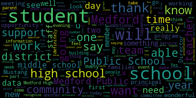

[Edouard-Vincent]: Good evening school committee and members of the community.
[Edouard-Vincent]: I thank you for this opportunity to come before you this evening.
[Edouard-Vincent]: I consider it a great privilege and honor to come home to Medford, my city, my town of birth.
[Edouard-Vincent]: I'm a native of Medford.
[Edouard-Vincent]: I was born in Medford at Lawrence Memorial Hospital.
[Edouard-Vincent]: I started my education here at the Hervey School.
[Edouard-Vincent]: I started my kindergarten experience at the Hervey School and continued at St.
[Edouard-Vincent]: Raphael's and
[Edouard-Vincent]: continued on to Arlington Catholic.
[Edouard-Vincent]: During my education here in Medford, I had an opportunity to have great mentors within the community who were strong educational representatives who really instilled and inspired me to consider education as a career path.
[Edouard-Vincent]: I am a first generation Haitian American.
[Edouard-Vincent]: And my parents were very hardworking.
[Edouard-Vincent]: They both were custodians at Tufts University.
[Edouard-Vincent]: And they really taught us the importance of hard work, commitment, and really trying your best to improve your educational outcomes or your life outcomes.
[Edouard-Vincent]: And I think coming from that background of hard work and dedication that I went on to college, Wheelock College, and I went into the field of education.
[Edouard-Vincent]: I was a teacher.
[Edouard-Vincent]: I started as a substitute teacher, then a teacher.
[Edouard-Vincent]: I became an assistant principal, a principal, and a network superintendent.
[Edouard-Vincent]: And currently I'm an instructional superintendent with Boston Public Schools.
[Edouard-Vincent]: So I've been in education for 24 and a half years.
[Edouard-Vincent]: And I feel with all of my experience that when this opportunity came to apply for the superintendency of Medford, I really considered it an opportunity to come back home to Medford.
[Edouard-Vincent]: And so that brings me here.
[Edouard-Vincent]: here today.
[Edouard-Vincent]: OK.
[Edouard-Vincent]: So in my current role right now, I am an instructional superintendent.
[Edouard-Vincent]: I am over a teaching and learning team.
[Edouard-Vincent]: And it's TLT 1A.
[Edouard-Vincent]: So the combined teaching and learning team consists of 30 schools.
[Edouard-Vincent]: And I am responsible for half of that.
[Edouard-Vincent]: The focus is K-8 schools.
[Edouard-Vincent]: And we have dual language, early childhood schools, elementary K-5 schools,
[Edouard-Vincent]: K-6, 6-8, K-8.
[Edouard-Vincent]: So there are multiple configurations of the schools that I work with.
[Edouard-Vincent]: And from an instructional perspective, I support the schools.
[Edouard-Vincent]: So every school is required to have an instructional focus.
[Edouard-Vincent]: And we conduct instructional focus reviews.
[Edouard-Vincent]: So I support the principals instructionally.
[Edouard-Vincent]: I supervise them.
[Edouard-Vincent]: I do their evaluations.
[Edouard-Vincent]: I support principals if they have any challenges, if they need support for professional development, if there are concerns from families, I will support the schools in that regard.
[Edouard-Vincent]: So I would be the first point of contact on an instructional level for schools.
[Edouard-Vincent]: So some schools do have different instructional methods that they're using, but based on their data, each school designs or creates an instructional focus.
[Edouard-Vincent]: So for some schools,
[Edouard-Vincent]: depending on the constituencies that are there based on the results of data, they may say that they're going to focus on increasing rigor.
[Edouard-Vincent]: They may be looking at productive struggle.
[Edouard-Vincent]: Some schools may have a focus on discourse, student-to-student discourse, teacher-to-student discourse.
[Edouard-Vincent]: So they would look at data.
[Edouard-Vincent]: Some schools are focusing on writing.
[Edouard-Vincent]: So it's individualized to the needs of each respective school, but the focus has to be based on data.
[Edouard-Vincent]: So it's not that they just feel like, you know, we're gonna look at student discourse, but there's a reason why.
[Edouard-Vincent]: So if they maybe have a high English language learner population, and they want the students to use more academic vocabulary, or the students are still learning how to produce language, then that school could potentially have an instructional focus
[Edouard-Vincent]: that deals with discourse and developing discourse and looking at the ratio of student-to-student talk versus teacher-to-student talk.
[Edouard-Vincent]: And so when we conduct instructional focus reviews, it's a cross-functional team that goes into the schools and we go into multiple classrooms and we look for evidence of the instructional focus.
[Edouard-Vincent]: And so we either see the instructional focus being implemented or we don't see it.
[Edouard-Vincent]: And at the end of the instructional focus review, we give feedback to the school.
[Edouard-Vincent]: And by giving the school feedback, we can say we saw evidence of your instructional focus, maybe in three out of four areas.
[Edouard-Vincent]: And we can be as granular as based on these number of classrooms, this is where we saw evidence, this is where we did not see evidence.
[Edouard-Vincent]: And then the schools take that information and they work with their instructional leadership teams to address
[Edouard-Vincent]: their instructional focus.
[Edouard-Vincent]: So I would say one of the challenges that principals sometimes face when we're looking at the instructional realm is if something were to potentially happen operationally or if something were to happen such as, you know, they're going into
[Edouard-Vincent]: conduct a common planning time meeting, but they may be called out to go address a disciplinary challenge.
[Edouard-Vincent]: Or they may need to meet with a parent.
[Edouard-Vincent]: So sometimes principals will say that there was a conflict and they were pulled away from working on that particular challenge.
[Edouard-Vincent]: Another challenge as well sometimes is based on the curriculum or the programming that is at a particular school.
[Edouard-Vincent]: Sometimes they may need or would like to have more resources, but there are limited resources.
[Edouard-Vincent]: So sometimes that's a challenge that they say, I would like to have more of something.
[Edouard-Vincent]: So my challenge working with the schools right now is sometimes just balancing the sheer number.
[Edouard-Vincent]: So there's no way that I could possibly get to every school every single week.
[Edouard-Vincent]: So sometimes a challenge would be trying to manage if I'm going to be on a two-week cycle or a three-week cycle with the school.
[Edouard-Vincent]: So depending on the level of the work that I'm doing at the school, I may be able to go to two to three schools a day.
[Edouard-Vincent]: So if they have an instructional leadership team meeting before school, then I could start there and then go to two schools and possibly support them during common planning time meeting or planning or doing observational rounds.
[Edouard-Vincent]: That's my own personal challenge, is trying to get to more schools and be value add.
[Edouard-Vincent]: So not just go through as a drive-by, but go through to actually support the instruction that's happening.
[Edouard-Vincent]: Of which I'm skeptical.
[Edouard-Vincent]: A skeptical practice.
[Edouard-Vincent]: That's the point.
[Edouard-Vincent]: I'm trying to just think through my portfolio of schools.
[Edouard-Vincent]: and I want to answer the question, but I would say, um, I have some skepticism with, I was thinking about how some of our sciences are being implemented.
[Edouard-Vincent]: Um, and my skeptic, not with the content of science, but more skepticism with the frequency of implementation, um, that,
[Edouard-Vincent]: If you're not able, like that's one of the things that in my own mind I'm thinking about.
[Edouard-Vincent]: If you're not able to dedicate enough time to the instruction of science, I'm skeptical that I'm going to see outcomes move significantly.
[Edouard-Vincent]: And that is something where I feel that we are struggling because science is an area that has been grossly neglected.
[Edouard-Vincent]: as a district and even within the TLT, within the teaching and learning team, that it's an area where people struggle to find time to fully implement it.
[Edouard-Vincent]: And I'm skeptical about if we're not able to create the time without robbing Peter to pay Paul, taking away from history, taking away from social studies.
[Edouard-Vincent]: So it's like they feel it's almost like
[Edouard-Vincent]: I have to implement one or I implement the other, but it can never be implemented well.
[Edouard-Vincent]: And I'm skeptical about seeing the needle actually move if we're not able to come up with a real solution.
[Edouard-Vincent]: I hope I answered your question.
[Edouard-Vincent]: I feel that I am a distributive leader.
[Edouard-Vincent]: My management style is one where I'm collaborative.
[Edouard-Vincent]: I work very well in teams.
[Edouard-Vincent]: I believe in delegating and building and working with the team's strengths.
[Edouard-Vincent]: I don't believe that I'm the keeper of all the knowledge.
[Edouard-Vincent]: I believe that everyone who's part of the team or working with me has something valuable to contribute, and through their contributions, we can be the most effective team.
[Edouard-Vincent]: A number two person who would be working with me would have, I feel, a complementary skill set.
[Edouard-Vincent]: So I am, you know, I feel I'm a creative, a creative thinker.
[Edouard-Vincent]: I think very quickly.
[Edouard-Vincent]: I move very quickly.
[Edouard-Vincent]: So if I had someone who had a complementary
[Edouard-Vincent]: skill set that they also, too, would be able to move quickly.
[Edouard-Vincent]: But one thing that I would not do specifically would be, like, I am not one to necessarily go into graphs and always do a punch list.
[Edouard-Vincent]: So I feel that having someone with a complementary skill set would be someone who would work well with having a punch list and saying, okay, these are all the things we said that we were going to do.
[Edouard-Vincent]: Let's just cross-reference to see if we've accomplished those things.
[Edouard-Vincent]: Yes, always.
[Edouard-Vincent]: I would go back to follow-up to make sure that we get to the end goal.
[Edouard-Vincent]: By style, I'm not a micromanager.
[Edouard-Vincent]: I believe in delegating, trusting that everyone who's part of the team has the skill set and the ability to do what they're being asked.
[Edouard-Vincent]: And I would also focus on creating the conditions where there was definitely relational trust, so that if you encounter difficulty, you would be able to say, I'm stuck, I need help,
[Edouard-Vincent]: that the person would communicate that.
[Edouard-Vincent]: So when it came time to report back on where we were with this particular product or what we were trying to meet, that I would be able to then say, OK, let's see how we can strategize.
[Edouard-Vincent]: Let's see if we can bring in an additional voice to help get to the deadline.
[Edouard-Vincent]: So as superintendent, the primary function would be to ensure that all schools are fully functioning, that you have an instructional leader in every building,
[Edouard-Vincent]: that every building has teachers and staff just to be in compliance from a central office level to make sure that you have all central office representatives there so that the central office function of the school connecting to the mayor's office and the other city departments, that there's communication going back and forth between all of those departments.
[Edouard-Vincent]: So the superintendent has to be the one who's managing what's happening at the schools and managing
[Edouard-Vincent]: what's happening at Central in regards to, and communicating with the mayor's office and realizing that we're not an entity unto ourselves, but that we have other parts of the city that work in collaboration with us.
[Edouard-Vincent]: So I feel that that would be the primary role, and ensuring, again, whoever the team of instructional leaders are that are at the schools, that they have access to me as the superintendent
[Edouard-Vincent]: come voice concerns, say, you know, come celebrate.
[Edouard-Vincent]: These are bright spots that we have happening in our schools.
[Edouard-Vincent]: So to have that open communication line to ensure that the students are being educated at the highest levels.
[Edouard-Vincent]: And you said the second part.
[Edouard-Vincent]: So if I was chosen to be the superintendent as part of my entry, my first step would have to be to listen and listen with both ears.
[Edouard-Vincent]: I would need to listen.
[Edouard-Vincent]: I would need to have an opportunity to learn what is the context of
[Edouard-Vincent]: Medford right now, what's happening in Medford, and once I gather that information, once I listen, I learn, and I would be learning not only from the schools, but from other stakeholders, from parents, from community partners.
[Edouard-Vincent]: Once I gather that information and I'm able to really look more closely at all the data that is available, then I would be better poised to make a decision to say, okay, based on what I've listened to and heard, based on what the stakeholders have shared with me, based on all of that data, this is how I would like to move forward and lead.
[Edouard-Vincent]: So I feel like as a superintendent, I cannot just come and jump and say, this is what I'm going to do.
[Edouard-Vincent]: I need to know what's happening, what is working, what we have room to maybe make some slight shifts, and then move forward from there.
[Edouard-Vincent]: I can repeat if you need me to for anything.
[Edouard-Vincent]: First and foremost, I want to say that I know the merger between the general high school and the vocational side of the high school.
[Edouard-Vincent]: It is a great idea that the schools have merged, but I also know that there was some
[Edouard-Vincent]: For some people, there were some pain points because you felt like you were giving up something in the merging of the two schools.
[Edouard-Vincent]: But in the end, you end up making a stronger district.
[Edouard-Vincent]: Right now, with CTE programming, and I will also call it project-based learning, when you look at
[Edouard-Vincent]: the programming that is in place and how the school district can advance in three to five years.
[Edouard-Vincent]: If we are able to fine tune and have master students that at the end of their time at Medford High School, that they would be able to, one, be employed and or for career and or college path, leave with official certifications,
[Edouard-Vincent]: that will allow them to be job ready.
[Edouard-Vincent]: I feel that that is what needs to happen and to look at the pathway of also adding college level courses.
[Edouard-Vincent]: at the high school level as an extension so that students who are graduating, depending on their levels and abilities, they would be able to be graduating with college credits.
[Edouard-Vincent]: So it does require strict implementation of the Mass Corps, making sure that they get all the official basics.
[Edouard-Vincent]: And then with their specialty classes,
[Edouard-Vincent]: where they can continue to have placements, internship placements, but to build upon that and add the college partnerships.
[Edouard-Vincent]: Bunker Hill, I know Tufts is nearby.
[Edouard-Vincent]: We possibly, I'm just thinking about schools that you could tap into in the three to five year range to go with that specific pathway where students would be finishing high school.
[Edouard-Vincent]: with college credits.
[Edouard-Vincent]: I feel that that would be the next iteration or the next level of CTE so that, yes, they are college and career ready, and some students have already achieved college credits at the high school level, and it can be done.
[Edouard-Vincent]: In terms of technology, technology is a must in terms of where we are moving in order to be competitive with the rest of the world.
[Edouard-Vincent]: Technology, it's important to have, but if you put technology in the hands of the students, you have to make sure that as they're using the technology, that appropriate professional development and training has also happened for the teachers.
[Edouard-Vincent]: And so in one of my schools that was on my portfolio received one-to-one iPads.
[Edouard-Vincent]: for all the students.
[Edouard-Vincent]: The students, as we know, are using their phones, are using technology all the time to really advance the work that they're doing.
[Edouard-Vincent]: students have grass technology at a faster rate than some of the teachers.
[Edouard-Vincent]: And so I think in order to use technology, it should be used, it should be integrated, but it should not just be an add-on, such as type up your notes in a Google Doc and send your notes to me.
[Edouard-Vincent]: But really having students doing research, embedding links, doing presentations, really taking technology to a level where they're able to
[Edouard-Vincent]: present portfolios to display their work that they've had for over the course of the year or in increments, incremental sessions over the year.
[Edouard-Vincent]: And you're saying to improve academic data?
[Edouard-Vincent]: So I did spend quite a bit of time looking at your state data on the DESE site.
[Edouard-Vincent]: And if I could start with some of the bright spots that I had noted.
[Edouard-Vincent]: And then I can go into what some of my wonderings were.
[Edouard-Vincent]: And so I can share that with the team.
[Edouard-Vincent]: So bright spots, I started with the high school.
[Edouard-Vincent]: that 91% of your students were proficient or higher on the grade 10 ELA with student growth percentile of 70, which is outstanding.
[Edouard-Vincent]: 40 to 60 is the range.
[Edouard-Vincent]: 51 is what you're looking for.
[Edouard-Vincent]: And high school ELA SGP is 70.
[Edouard-Vincent]: The SGP is a student growth percentile.
[Edouard-Vincent]: And what it is is taking a student from one year, that cohort, and measuring
[Edouard-Vincent]: that same student a year later with other students who performed at the same level as that child.
[Edouard-Vincent]: So it's not across the entire state.
[Edouard-Vincent]: So sometimes when you look at SGP, people may say, oh, it's Medford Public Schools.
[Edouard-Vincent]: No, it's across the entire state of Massachusetts.
[Edouard-Vincent]: So that's something, a tremendous bright spot and something to applaud.
[Edouard-Vincent]: At grade 10 math, 77% of your students
[Edouard-Vincent]: scored at proficient or higher with the SGP of 61.
[Edouard-Vincent]: And again, the range being 40 to 60, that's where the state designates it as the regular expected growth.
[Edouard-Vincent]: So 61 is above that.
[Edouard-Vincent]: I looked also at your grade 10 ELA, where students scored a two or higher.
[Edouard-Vincent]: And you had 85% of your students, of the 344 students,
[Edouard-Vincent]: scoring and at the state, at that particular number, the state was at 86%, so you were neck and neck with the state.
[Edouard-Vincent]: For your AP test scores, students scoring a 3 or higher, you were at 84.5, whereas the state was only at 65.7.
[Edouard-Vincent]: So that's really something to applaud your AP teachers.
[Edouard-Vincent]: and what's happening there.
[Edouard-Vincent]: And so with our Mass Corps in 2017, you had 100% versus the state at 77.4%.
[Edouard-Vincent]: And so you also did well with attendance at 94.4% student absence.
[Edouard-Vincent]: Your days were, although
[Edouard-Vincent]: Attendance and absences is something we want to work with.
[Edouard-Vincent]: Average student absences were nine days.
[Edouard-Vincent]: The state was at 9.5 for Medford and 11.6 for the state.
[Edouard-Vincent]: Your in-school suspensions were lower than the state at zero.
[Edouard-Vincent]: Your out-of-school suspensions were 5.3.
[Edouard-Vincent]: The state was at 4.2, but still
[Edouard-Vincent]: It's a very respectable number.
[Edouard-Vincent]: So those were some of the areas that had really jumped out at me as tremendous bright spots to be proud of as a district.
[Edouard-Vincent]: Some of the areas where I had wonderings was on the open response in high schools, where we did have a tour above.
[Edouard-Vincent]: I was wondering about that, I was wondering about
[Edouard-Vincent]: Introductory physics of the 211 students who were taking that test and there was like a 47%
[Edouard-Vincent]: I looked at all of our students and looked at, for all students, reading, writing, and math, and noticed that for special ed students, that that was one of the areas where we had a wider gap.
[Edouard-Vincent]: And so I also wonder about our English language learners.
[Edouard-Vincent]: and how our English language learners are, they're not graduating at the same rate as your gen ed students.
[Edouard-Vincent]: So it's almost like one out of every two, or 50%, 55% graduation rate, so that was something that kind of had me wondering.
[Edouard-Vincent]: So at the elementary levels, we have,
[Edouard-Vincent]: several level two schools.
[Edouard-Vincent]: As a district, we are a solid level two district.
[Edouard-Vincent]: In 2015, that was the only year where there was a dip down to a level three for one year.
[Edouard-Vincent]: But from 2012, 2013, 2014, 2016, we brought it back up and became a level two district.
[Edouard-Vincent]: 2017, the district has no official level until the state gives the official new designations.
[Edouard-Vincent]: So as I think about the elementary levels where I know, when I think about English language learners and I think about students with disabilities, if we do not have a strong foundation, then you're not going to be able to stand tall and stand proud.
[Edouard-Vincent]: So as I applaud the high school ELA scores and the math scores, I feel that something solid and strong is happening in terms of English instruction at the upper grades.
[Edouard-Vincent]: However, when they get to middle school, I am wondering what is happening with our students with disabilities and our English language learners, and specifically
[Edouard-Vincent]: what instructional strategies are being used for those students.
[Edouard-Vincent]: So when I was leading a school and we realized that we needed to have a sheltered English immersion program, an SCI program for our English language learners, we drastically changed how we were teaching.
[Edouard-Vincent]: So I believe in having a growth mindset and not looking at English language learners or students with disabilities from a deficit perspective.
[Edouard-Vincent]: And so look at their ability, English language learners, to speak more than one language.
[Edouard-Vincent]: Myself, I can speak another language.
[Edouard-Vincent]: They're actually using more parts of the brain to be able to communicate.
[Edouard-Vincent]: in two different languages, and sometimes to even be able to read and write in another language.
[Edouard-Vincent]: But as you're acquiring English, there is a silent phase that is five to seven years.
[Edouard-Vincent]: So if you're getting English language learners at the elementary levels, coming in at first, second, third grade, you have to give them five to seven years before they are actually English dominant.
[Edouard-Vincent]: So that brings you to the end of middle school.
[Edouard-Vincent]: And so when you get to the end of middle school, going into high school, that's when you're able to see a lot of students that were Ls, they end up flapping, and you end up saying, wow, they're actually performing on par.
[Edouard-Vincent]: So it's that silent phase where, like sponges, they are taking in the other language and processing it.
[Edouard-Vincent]: Students who speak another language, they originally pick up social English very quickly.
[Edouard-Vincent]: but they don't pick up the academic language.
[Edouard-Vincent]: And it's the academic language that is inside all of the content, all of the books, everything that's being taught.
[Edouard-Vincent]: So those are some of the strategies that I would recommend using at the elementary levels, using cognates.
[Edouard-Vincent]: Clustering languages could be a possibility depending on what the languages are.
[Edouard-Vincent]: So if you use some of the Romance languages, whether it could be French or Spanish,
[Edouard-Vincent]: or Portuguese or Italian, taking some languages that have similar bases, clustering them and teaching them so that when you're using a specific word in English that has a cognate in their native language, they're able to make the connection very quickly.
[Edouard-Vincent]: And so by doing that, when you chunk the information, you build background knowledge, those were some of the things that I did working with large populations of students that were ELLs.
[Edouard-Vincent]: For students with disabilities, that same strategy works.
[Edouard-Vincent]: The best practices that work for students with disabilities also work for ELLs.
[Edouard-Vincent]: increasing visuals, using non-traditional methods of instruction.
[Edouard-Vincent]: So do not talk at the children all day in lecture style.
[Edouard-Vincent]: That's not gonna work.
[Edouard-Vincent]: Give them opportunities to listen.
[Edouard-Vincent]: Books on tape, let them listen auditorily.
[Edouard-Vincent]: Let them have opportunities to speak.
[Edouard-Vincent]: Let them have opportunities to practice the language, make mistakes with the language.
[Edouard-Vincent]: Give them opportunities to turn and talk.
[Edouard-Vincent]: And again, that gives them that opportunity to build the discourse and become stronger students.
[Edouard-Vincent]: So I feel like if there's a stronger base at the elementary level, when they get to middle school and you're teaching specific by-content areas, the children are older, they're more mature, they're able to take on more responsibility, so that by the time they are at high school, they are young adults, they are able to kind of spread their wings and really fly and succeed.
[Edouard-Vincent]: Yes.
[Edouard-Vincent]: 2015, I started actually as a network superintendent, and so under that structure, it was a slightly different structure.
[Edouard-Vincent]: At that time, as a network superintendent, I was responsible for both instructional and operational needs of a building, so I was the point person for both sides of the house, and I would report directly to the superintendent.
[Edouard-Vincent]: Now, as an instructional superintendent, I have a counterpart,
[Edouard-Vincent]: who is operational superintendent, and the two of us work collaboratively.
[Edouard-Vincent]: I see.
[Edouard-Vincent]: To answer that question, when I think about the outcomes of the students going down, I would have to really attribute it to there's a lot of trauma in Boston.
[Edouard-Vincent]: And I have to say, honestly, social emotional learning, there's a body of research and a lot of people are realizing right now that social emotional learning does impact how students perform.
[Edouard-Vincent]: And I do feel, being a large urban district, that the amount of trauma that many students face and encounter between shootings near schools, shootings when students are at recess, violence on the streets, that that does have an impact in terms of when it gets to the schools.
[Edouard-Vincent]: And so some schools where outcomes have
[Edouard-Vincent]: actually dropped.
[Edouard-Vincent]: If you were to speak to principals, the instructional leaders of the schools, they would say there has been a significant increase in the amount of trauma that they're experiencing.
[Edouard-Vincent]: High poverty, high free and reduced lunch,
[Edouard-Vincent]: English language learners, newcomers to the country.
[Edouard-Vincent]: There are a lot of factors.
[Edouard-Vincent]: I don't want it to sound like I'm making an excuse, but a lot of the schools are trauma-charged, and I don't say that lightly.
[Edouard-Vincent]: That's a reality.
[Edouard-Vincent]: And so how teachers have to teach the children now, they have to really use a lot of different strategies.
[Edouard-Vincent]: They have to take care of
[Edouard-Vincent]: the child, the whole child first, I would say.
[Edouard-Vincent]: They have to look at, is this child ready to do the work that I'm gonna put before them, or does this child need some other kind of intervention before I can even start teaching the academic content?
[Edouard-Vincent]: So I would say, I know the Boston Magazine, they would write their piece based on strictly numbers, what's black and white and what's factual.
[Edouard-Vincent]: But what they aren't able to see is what's happening in the schools and what the students are encountering, what they are dealing with, and that they're coming to school every day.
[Edouard-Vincent]: And they're coming to learn.
[Edouard-Vincent]: They're coming to learn.
[Edouard-Vincent]: They want to learn.
[Edouard-Vincent]: But there are a lot of challenges and obstacles that they have to overcome.
[Edouard-Vincent]: So that's what I feel has led to that decline.
[Edouard-Vincent]: And so we are back at the drawing board once again, trying to figure out, okay, what's the next strategy that we need to put in place?
[Edouard-Vincent]: And so now we are really, really focusing on social-emotional learning.
[Edouard-Vincent]: So first and foremost, I would want to ensure that all teachers have a growth mindset and believe first and foremost that the children actually can learn.
[Edouard-Vincent]: because sometimes people have a deficit mindset and they say, well, they don't speak English or they have a disability.
[Edouard-Vincent]: They're not going to be able to get this anyway.
[Edouard-Vincent]: I'm not going to focus on them.
[Edouard-Vincent]: And so I think the first piece would be to make sure that they have a growth mindset.
[Edouard-Vincent]: We are teaching children and we all make mistakes even as adults.
[Edouard-Vincent]: So as a teacher, I love teaching, even working with teachers, giving teachers feedback.
[Edouard-Vincent]: it's important to be able to observe the practice, observe the work, go in, see what are the teachers doing, what's happening, are you using strategies, are you using sheltered instruction, I think of the sheltered instruction observation protocol, which talks about allowing additional wait time, using the visuals, speaking at, not speaking at a rapid rate of speed,
[Edouard-Vincent]: so that the students can actually hear and catch the words of what you're saying so they're able to piece it together and make sense.
[Edouard-Vincent]: So in terms of helping a teacher, if a teacher came from a parochial school or a private school or from a school of affluence and they're teaching in a high-need school, they're still teaching children.
[Edouard-Vincent]: It's not like you're teaching children in one location and you're teaching puppies in another.
[Edouard-Vincent]: You are teaching children.
[Edouard-Vincent]: And so I believe that all children can be taught
[Edouard-Vincent]: and that it's the mindset and a willingness to learn, and that everyone can grow together.
[Edouard-Vincent]: Sometimes teachers aren't even aware.
[Edouard-Vincent]: In Boston, it's a real issue.
[Edouard-Vincent]: It is a gap.
[Edouard-Vincent]: that if you walk into rooms with students, sub-separate rooms with students with disabilities, all you will see is black and brown.
[Edouard-Vincent]: And on top of that, all you'll usually see are males.
[Edouard-Vincent]: You might see one girl.
[Edouard-Vincent]: And so it's something that has happened, and I've seen it happen.
[Edouard-Vincent]: But sometimes teachers don't realize the data.
[Edouard-Vincent]: I'm gonna go back to that.
[Edouard-Vincent]: When I was an assistant principal,
[Edouard-Vincent]: and I took over for an interim piece of time.
[Edouard-Vincent]: In a two week period at the school, I processed 250 discipline incident reports in 10 days.
[Edouard-Vincent]: And I went to the principal and said, is this normal?
[Edouard-Vincent]: Because I was a classroom teacher and I came out to cover a leave.
[Edouard-Vincent]: And he said, this is not normal.
[Edouard-Vincent]: And so he said, disaggregate the data.
[Edouard-Vincent]: And when I went through the 250 incident reports, 50 incident reports were from one classroom.
[Edouard-Vincent]: And so he called the staff meeting, and at the staff meeting, we presented the data.
[Edouard-Vincent]: So I believe in letting the data do the talking.
[Edouard-Vincent]: And so the data was to the staff,
[Edouard-Vincent]: We had 250 incident reports in a 10-day time frame.
[Edouard-Vincent]: Once the entire school body heard that, everyone was surprised.
[Edouard-Vincent]: And we did not say any names, but we did say 50 incident reports came from one classroom.
[Edouard-Vincent]: Eight came from another classroom.
[Edouard-Vincent]: And when they realized that these 250 incident reports were generated from a very small segment of the school community, and it was made public, without any names, the following week, there was a miraculous improvement, and we had 50 incident reports.
[Edouard-Vincent]: And again, this was a high-need school,
[Edouard-Vincent]: with probably 600 students.
[Edouard-Vincent]: And at that time we did have a special set of students that had behavioral challenges, so we had a sub-separate classroom for students with behavioral challenges.
[Edouard-Vincent]: And so we brought the incident reports down to 50, which was the normal
[Edouard-Vincent]: For that size school, that was a normal expectation.
[Edouard-Vincent]: And again, the incident report was just so you could know what was happening.
[Edouard-Vincent]: So thinking about what you're saying, I would say the same thing, presenting the data.
[Edouard-Vincent]: Present the data to the principals, present the data.
[Edouard-Vincent]: Is there a particular school that has the highest number of discipline referrals?
[Edouard-Vincent]: and or special ed referrals?
[Edouard-Vincent]: And if so, let's investigate why.
[Edouard-Vincent]: And let's investigate who.
[Edouard-Vincent]: Is it a school that has a special needs population of students that have behavioral concerns?
[Edouard-Vincent]: Is it a school that has high English language learner populations?
[Edouard-Vincent]: What are the challenges at that particular school?
[Edouard-Vincent]: And then unpack it from there.
[Edouard-Vincent]: This is what the data says.
[Edouard-Vincent]: Can you help me understand what the data says?
[Edouard-Vincent]: Now let's come up with an action plan
[Edouard-Vincent]: to address this, because it's not acceptable.
[Edouard-Vincent]: Recess.
[Edouard-Vincent]: I am an advocate of recess.
[Edouard-Vincent]: I believe children need to get out and stretch and
[Edouard-Vincent]: play and have fresh air.
[Edouard-Vincent]: So at the elementary levels, it should be a non-negotiable.
[Edouard-Vincent]: And for middle schools, I'm not sure if at the middle school level here, children do have recess, but I believe in children being able to have time to go outside, to stretch, to play, to run.
[Edouard-Vincent]: It's good for their heart.
[Edouard-Vincent]: It's good for them to be able to come back into the classroom
[Edouard-Vincent]: after lunch and be able to learn for the second half of the day.
[Edouard-Vincent]: So I am an advocate of recess, and I think it's important just for helping kids to stay healthy, giving them an opportunity to socialize outside of the instructional day, as opposed to wanting to socialize during instructional time in the classroom.
[Edouard-Vincent]: So recess as punishment is what you're saying.
[Edouard-Vincent]: Honestly, I personally believe that we really should not use recess as punishment.
[Edouard-Vincent]: That we should keep it separate.
[Edouard-Vincent]: But you also have to look at each situation respectively and be able to say, for example,
[Edouard-Vincent]: Is it a child that's physically assaulting other children at recess?
[Edouard-Vincent]: So now at the end of recess, five children are going to the nurse to say that I was kicked on the playground or I was physically assaulted.
[Edouard-Vincent]: Then in that particular situation, I would say recess is an opportunity for children to play, to socialize, and have a good time.
[Edouard-Vincent]: For this particular incident, you used recess in the wrong way.
[Edouard-Vincent]: You made a poor decision.
[Edouard-Vincent]: You physically hurt some of your classmates.
[Edouard-Vincent]: So today, you have to spend recess with me or whoever the designee, I mean, I wouldn't be at the school, but the school leader, the principal could say that.
[Edouard-Vincent]: And so, but personally, I believe children should be able to have recess, but if there is an extenuating circumstance and they feel that recess needs to be taken away, it should be taken away for a short period of time.
[Edouard-Vincent]: You should not say, I'm taking away recess for a month, like when you ground your child and say, you know, no TB for two weeks.
[Edouard-Vincent]: No, I don't believe in something like that.
[Edouard-Vincent]: Thank you.
[Edouard-Vincent]: I'm thinking.
[Edouard-Vincent]: I think I'm biased.
[Edouard-Vincent]: I'm just thinking of so many bright spots right now.
[Edouard-Vincent]: Something that did not go well.
[Edouard-Vincent]: I'm thinking about one of the times a schedule change.
[Edouard-Vincent]: One of the times I, as a principal, I ended up changing the schedule.
[Edouard-Vincent]: And I took some liberties.
[Edouard-Vincent]: in changing the schedule.
[Edouard-Vincent]: And I wanted to move to a 60-minute block.
[Edouard-Vincent]: But according to the contract, it should have been 48 minutes.
[Edouard-Vincent]: And so myself, 48 minutes, I was like, 48, 50, 60, no big deal.
[Edouard-Vincent]: But what I was thinking was when I changed to the 60-minute block schedule from the 48 minutes, the teachers ended up with a 60-minute planning period as well as opposed to the 48 minutes.
[Edouard-Vincent]: But for the specialists that were teaching during the planning period, it was a 60-minute block.
[Edouard-Vincent]: And so there was tension.
[Edouard-Vincent]: because some people loved having the 60 minutes because they felt like you could actually do more during that block of time, but because it was in violation of the contract, we had to go back to the 48 minutes to respect the contract.
[Edouard-Vincent]: And so I had taken that liberty, and then afterwards there was more discussion, but that was one of the times where I
[Edouard-Vincent]: was eager and I was like, okay, this is the new schedule.
[Edouard-Vincent]: And I had to go back and say, I'm sorry, this couldn't work.
[Edouard-Vincent]: We have to go back to 48 minutes.
[Edouard-Vincent]: So we did go back to the 48-minute schedule.
[Edouard-Vincent]: So balancing academic rigor with the social emotional needs of the child.
[Edouard-Vincent]: Currently, I have several schools that have integrated sensory rooms.
[Edouard-Vincent]: And so in these rooms, it's a space within the school where there are squishies, there are beanbags, there could be balls, because students do have, go into crisis or do have moments of difficulty where they're not functioning in the classroom.
[Edouard-Vincent]: So for schools that have been able to design this sensory space, we've been using that as an alternative, one school calls it an alternative learning environment.
[Edouard-Vincent]: It's not something that is used for the entire day, but it's something that's used for the student to have an opportunity to de-escalate and to be able to return to the classroom to participate in their learning.
[Edouard-Vincent]: So that would be something that I would definitely say I would advocate for if the school has the physical ability, the physical space to create this alternative learning environment for students that may have severe anxiety, may be dealing with trauma, or something that is overwhelming them, that's preventing them from functioning within the classroom setting.
[Edouard-Vincent]: At the same time, you would need to have personnel, and again, the staffing for that, whether it's a paraprofessional, or whether you have itinerants, sometimes, you know, looking at the flexible scheduling, so if you were to have an OT or a PT person who has a free period, and you could say during this time of the day, I will be in the alternative learning space, so that sometimes you can even say to children, you can't go to the space right now,
[Edouard-Vincent]: one o'clock you'll be able to go to this space and have that opportunity.
[Edouard-Vincent]: I've also seen low tech things such as just having a tent, a small little tent in a classroom and some classrooms just have it labeled like cool down area.
[Edouard-Vincent]: It was like camp cool down and so sometimes just having an area that you have sensory tools, things that they can squeeze or touch or maybe color.
[Edouard-Vincent]: to be intentional about having a toolkit.
[Edouard-Vincent]: Another school has little shoeboxes that are social-emotional.
[Edouard-Vincent]: They're like little toolboxes that have social-emotional tools within them.
[Edouard-Vincent]: So I feel like the way to address it is to address it proactively, not waiting for something to happen, but already have it in place so that when a child is in crisis, you have
[Edouard-Vincent]: a plan of action, and then that will allow you, the teacher, to be able to teach the rest of the class or the rest of the students.
[Edouard-Vincent]: If, as a teacher, you get bogged down too much with what's happening social-emotionally with a child, then the instruction is not moving forward.
[Edouard-Vincent]: So even with trauma,
[Edouard-Vincent]: traumatic incidents or students that are dealing with severe anxiety, you cannot water down the content.
[Edouard-Vincent]: You cannot water down your instruction because it might be two students, it could be three students in the classroom, but what about the remaining students that aren't having that issue?
[Edouard-Vincent]: So I feel you have to have a plan in place, a robust plan to address social emotional needs, but at the same time balance that with
[Edouard-Vincent]: this is the content, this is what I'm teaching.
[Edouard-Vincent]: And is what I'm teaching engaging?
[Edouard-Vincent]: Because I feel like what's being taught also needs to be cognitively demanding and engaging for the students so that they want to do the work.
[Edouard-Vincent]: Do you feel that I responded to your question?
[Edouard-Vincent]: Thank you.
[Edouard-Vincent]: So, no, civic engagement, yes, I believe strongly in civic engagement, especially at the high school levels where they are getting ready to vote at the age of 18.
[Edouard-Vincent]: It's very important to educate and inform children and students, young adults, how to be responsible citizens.
[Edouard-Vincent]: and what their rights are.
[Edouard-Vincent]: So I would be an advocate of promoting opportunities for students to engage in that.
[Edouard-Vincent]: And there are debate leagues and all of those things where students have those opportunities, but also, I would say, creating opportunities, creating forums here at the schools to have discussions.
[Edouard-Vincent]: on issues that could be, you know, in the media right now, what's happening, almost kind of like, you know, what's social studies, what is currently happening in our world.
[Edouard-Vincent]: So providing students with those opportunities to talk about it, to debate about it, and to engage in discussions and set it up.
[Edouard-Vincent]: You can set it up in a formal structure.
[Edouard-Vincent]: And I would work very collaboratively with the history team, the history teachers.
[Edouard-Vincent]: to say let's try to make this a more formalized process or a frequent process so the students are informed.
[Edouard-Vincent]: So specifically right now that baton was officially handed over to the operational side of the house.
[Edouard-Vincent]: So the operational superintendents
[Edouard-Vincent]: support that, but what we've done in the past with the walkouts that the students have participated in is we have administrators on the key train stations at the checkpoints, so if we know, we usually know in advance which schools are they walking out from, which particular high schools, and myself, I went down to City Hall, so all of central office was kind of deployed,
[Edouard-Vincent]: And so we went to, so there were definitely a lot of adults there.
[Edouard-Vincent]: The students were allowed to go to, you know, to actively engage in the process, but there were adults there.
[Edouard-Vincent]: Within the train stations, transit police were notified.
[Edouard-Vincent]: We knew they were on the T. School police were notified.
[Edouard-Vincent]: So we did have strategic checkpoints.
[Edouard-Vincent]: Safety was aware, like every, all hands on deck.
[Edouard-Vincent]: to ensure that students remain safe.
[Edouard-Vincent]: And for the most part, they do remain safe.
[Edouard-Vincent]: Sometimes they end up getting into a scuffle, but there are enough adults there to intervene.
[Edouard-Vincent]: So even though it does happen, we have deployed the other adult staff to be able to support the process.
[Edouard-Vincent]: Yes, the students that did not participate in the walkout remained at school and they were taught.
[Edouard-Vincent]: So yeah, instruction always continued.
[Edouard-Vincent]: So for students that were not doing it, they continued to be taught.
[Edouard-Vincent]: And sometimes they may have them, some schools had them go to an auditorium, so they did kind of an assembly for the students that did not go, but just to acknowledge that it was happening.
[Edouard-Vincent]: And of course, we strongly encourage them to stay in school and that they should be in school during the school day.
[Edouard-Vincent]: But again, that's not what happened.
[Edouard-Vincent]: So we had to go to plan B. Thank you.
[Edouard-Vincent]: With schools, I've been in schools when we've gone into safe mode.
[Edouard-Vincent]: That's been several times since I was in one of the highest needs area.
[Edouard-Vincent]: So once that does happen when you're physically at a school, everyone is trained.
[Edouard-Vincent]: They make the announcement, we know what's happening.
[Edouard-Vincent]: We have a system called Crisis Go in Boston where it's an app and it goes to all key central office administrators.
[Edouard-Vincent]: So it lets us know if something is happening at one of the 125 schools at any given moment.
[Edouard-Vincent]: And so we have a robust safety team.
[Edouard-Vincent]: So when that happens, they are deployed and they will head over to the school.
[Edouard-Vincent]: And depending on whose teaching and learning team it's within, then that respective instructional superintendent and our operational superintendent will go to provide support.
[Edouard-Vincent]: at that location.
[Edouard-Vincent]: So I am not necessarily the one who is saying, okay, I'm calling the police.
[Edouard-Vincent]: But if I'm notified first, I will talk with the operational superintendent, pass the baton on, and we start the ball rolling from there.
[Edouard-Vincent]: And then it goes out on crisis go.
[Edouard-Vincent]: Do you play a role in the training?
[Edouard-Vincent]: In the training?
[Edouard-Vincent]: I do not directly train.
[Edouard-Vincent]: I've participated in trainings, but I am not.
[Edouard-Vincent]: We bring in professionals, we bring in the police, the police are
[Edouard-Vincent]: You know, we have designated Boston police that are school police officers.
[Edouard-Vincent]: And so they are all hands on deck, you know, deeply involved.
[Edouard-Vincent]: So some trainings will happen at central office or trainings will happen at specific school sites.
[Edouard-Vincent]: If there's a particular crisis going on, then we realize, okay, let's do it here at this place.
[Edouard-Vincent]: So trainings are available, and support personnel are available.
[Edouard-Vincent]: And we partner closely with school police and Boston police, because there are Boston police that are designated to BPS.
[Edouard-Vincent]: Very good.
[Edouard-Vincent]: So for upkeep and maintenance, we do have a large... I know it sounds like... We have a lot of teams.
[Edouard-Vincent]: So we do have... We have a grounds crew and we have maintenance crew.
[Edouard-Vincent]: So depending, you know, my first school was on three city blocks, so depending on the physical location and layout of the school, that would determine how much support or how little support you receive.
[Edouard-Vincent]: But the maintenance of schools, like the lawn being cut or flowers or mulch, snow shovel removal,
[Edouard-Vincent]: Custodians help with that.
[Edouard-Vincent]: Materials are delivered.
[Edouard-Vincent]: If stuff isn't delivered, we call the supervisors right away to say this needs to be done.
[Edouard-Vincent]: We have a lot of outdoor classrooms.
[Edouard-Vincent]: So now that the winter, the snow is finally melting away, so the outdoor classrooms will need, so the grounds crew will come and they will prune and they'll get the outdoor classrooms back up to par so that the students can go out and use them.
[Edouard-Vincent]: So in terms of looking at it from a specific budgetary perspective, it's already embedded within the school budget.
[Edouard-Vincent]: Not on the specific school one.
[Edouard-Vincent]: It's just embedded within the district budget.
[Edouard-Vincent]: Got it.
[Edouard-Vincent]: So you're not going to see it say that.
[Edouard-Vincent]: But if something needs to be done, or if a building is not clean, when I go into a building, or if a parent ends up saying the girls' bathroom or the boys' bathroom,
[Edouard-Vincent]: The boys' bathroom sometimes is not the cleanest.
[Edouard-Vincent]: And I just say that because they like to play there.
[Edouard-Vincent]: And so sometimes the reports will come back and it will be like, this needs to be done.
[Edouard-Vincent]: So we also, if I'm called in and we go into the boys' bathroom and really see like, you know what, we can't wait until after third lunch for the boys' bathroom to be cleaned, it needs to be cleaned after
[Edouard-Vincent]: every lunch, then that could be something that I would speak to the custodial supervisor about to say like, we really need for maintenance purposes and for health cleanliness purposes, we need a more frequent pass over the restrooms at lunchtime.
[Edouard-Vincent]: So I have that flexibility and the school leaders have that flexibility to be able to say that.
[Edouard-Vincent]: Because it's about safety first, but it's also about the health and sanitation.
[Edouard-Vincent]: You don't want children using dirty facilities.
[Edouard-Vincent]: and you don't want them having health problems because they don't want to use the facilities.
[Edouard-Vincent]: So that is a serious need and it should definitely be addressed.
[Edouard-Vincent]: So our budgets in Boston are based on a weighted student funding.
[Edouard-Vincent]: So the budget process
[Edouard-Vincent]: is I've worked with budgets and I work with all of my schools on their budget.
[Edouard-Vincent]: We have a budget collaborative process, a very long elaborative process.
[Edouard-Vincent]: Elaborate, elaborate, I'm sorry.
[Edouard-Vincent]: But what I can say is in terms of working with the budgets, the majority of the budget is normally consumed by human resources, all of the people.
[Edouard-Vincent]: By the time you pay for people benefits, you are left with a very small amount of money, grant money that may be targeted for ELLs,
[Edouard-Vincent]: grant money targeted for students with disabilities, and there's a very small amount of money that you're left with that you have wiggle room.
[Edouard-Vincent]: But even with that amount of money that you are left with, I do work with principals and talking with them to say, how are you gonna be strategic about the use of these funds?
[Edouard-Vincent]: Sometimes they allocate, it could be 10,000 towards stipends, because they're planning on doing professional development or special projects with teachers,
[Edouard-Vincent]: a certain amount of money from that pool towards field trips.
[Edouard-Vincent]: So there were certain things that they allocate up front, and then whatever's left over, they pursue partnerships with community partners.
[Edouard-Vincent]: I know that there are partnerships already with some of the colleges and universities, with Tufts and I believe Harvard.
[Edouard-Vincent]: I would like to add the community colleges.
[Edouard-Vincent]: I am seriously interested in looking at what I had said earlier about the early college credit for students that are capable to complete
[Edouard-Vincent]: the required Mass Corps and have time to be able to push themselves in that area.
[Edouard-Vincent]: So I would definitely want to see college partnerships.
[Edouard-Vincent]: And for the community, I would definitely be interested in just seeing how we could have other community partners support the school, whether it was with resources.
[Edouard-Vincent]: I'm thinking of
[Edouard-Vincent]: one of my schools that is generously, receives a lot of generous funds from the New Market Foundation, and so they provide that school, they've given them three sets of, three classroom sets of technology, Chromebooks, and so we do have a lot of schools that are slowly building up their,
[Edouard-Vincent]: technology, and so that would be one way to work with community partners that if they're not able to come into the schools as a resource to volunteer and to support, but to be able to support an initiative that is taking place at the school to enhance the school.
[Edouard-Vincent]: Because if you can have a partner help provide with technology, then that would be savings for the school.
[Edouard-Vincent]: The O'Shaughnessy Foundation was a specific grant which was targeted to work with some of our lowest need schools and it brought in coaching and support to those particular schools.
[Edouard-Vincent]: So, like pursuing grants, whether it's Nellie Mae or other foundations to pursue monies to supplement what is here at the district, I definitely would be interested in doing that.
[Edouard-Vincent]: The New Market Group Foundation, the business group, they support
[Edouard-Vincent]: a cluster of schools that are located within a one-mile radius of where they are physically located.
[Edouard-Vincent]: And so it's a group of businesses that contribute as a collective, and then they say to the principal, what would you like from us this year?
[Edouard-Vincent]: And so I'm saying if there could be an equivalent in Medford to possibly have a group of businesses that
[Edouard-Vincent]: work together and say, would you be willing to either adopt a particular school and see what it is, a need that the school may have.
[Edouard-Vincent]: So I believe strongly in marketing, and I also believe strongly in communicating.
[Edouard-Vincent]: So as we now have this comprehensive high school that is offering so much, we need to reach back to the middle schools.
[Edouard-Vincent]: And even in upper elementary, to start doing an exploratory, I would say at fourth and fifth grades,
[Edouard-Vincent]: to start saying to them, do you know when you get to high school?
[Edouard-Vincent]: These are all the options that are available to you.
[Edouard-Vincent]: Start generating that excitement at the elementary level so that as they work their way up, they're thinking about it and saying, what is it that I would be good at?
[Edouard-Vincent]: What is it that I could do?
[Edouard-Vincent]: Because this is going to be offered to them.
[Edouard-Vincent]: And again, once they get to the high school, they're going to have all of these options.
[Edouard-Vincent]: but sometimes it's overwhelming, it's too much, so you need to bring it back earlier.
[Edouard-Vincent]: And maybe in middle school, have the middle schoolers come, sixth grade, seventh grade, eighth grade, have them come on a field trip, have them come, do an exploration just to think about it, see what it looks like.
[Edouard-Vincent]: We do something in Boston, we did like a science week where kids did hands-on science,
[Edouard-Vincent]: Maybe to take that as an opportunity to go to the middle schools and give them, maybe it doesn't need to be a full week, but to give them an opportunity to come to the high school and spend maybe two days.
[Edouard-Vincent]: Give them time.
[Edouard-Vincent]: They could still have their regular grade level work.
[Edouard-Vincent]: but give them time to explore, actual hands-on experience to explore some of the options.
[Edouard-Vincent]: So then it won't seem like a mystery.
[Edouard-Vincent]: Now it's going to be like, wow, I want to do this, or I think I'm interested.
[Edouard-Vincent]: And so they'll have options.
[Edouard-Vincent]: I think they'll have greater options in front of them.
[Edouard-Vincent]: That would be my recommendation.
[Edouard-Vincent]: Thank you very much.
[Edouard-Vincent]: So with collective bargaining, I have not been on an official collective bargaining team.
[Edouard-Vincent]: I have been one of the contributors to the collective bargaining.
[Edouard-Vincent]: We do have an office of labor relations where they head up what happens with collective bargaining and the office of human capital.
[Edouard-Vincent]: And then they ask instructional superintendents, operational superintendents across section, including principals, they will ask us to contribute to
[Edouard-Vincent]: what it is that they're going to be presenting as the negotiations come closer.
[Edouard-Vincent]: So if there are things that, you know, you look at in a particular contract and you end up saying, you know, this is something that we would recommend, they have to also look at what is the cost going to be because you can't, you know, break the bank as it is.
[Edouard-Vincent]: We have a $1.1 billion budget and it doesn't seem to be going down.
[Edouard-Vincent]: And so in negotiations,
[Edouard-Vincent]: it's millions and millions of dollars that end up going to the cost of living increase.
[Edouard-Vincent]: And so that's something that has to be taken into consideration.
[Edouard-Vincent]: So for collective bargaining, I have not been on the teams, but I've contributed to the work that has been done.
[Edouard-Vincent]: So I believe in professional development.
[Edouard-Vincent]: We also call it, refer to it as professional learning.
[Edouard-Vincent]: We have to keep in mind that we're teaching adults and so adults don't like to be spoken to or spoken at.
[Edouard-Vincent]: especially teachers.
[Edouard-Vincent]: So we have made a really big attempt to break down our professional learning into smaller learning communities.
[Edouard-Vincent]: So we do have professional learning communities right now where they are made up of six to 10 principals in each professional learning community and we rotate
[Edouard-Vincent]: The schools that we go to, because it's a reasonable number, I work with one middle school grouping, and I also work, I have one larger group, which is the 15 early childhood schools that are within the district.
[Edouard-Vincent]: And so for professional learning, we make sure that it's relevant and appropriate to the age that the children are being taught.
[Edouard-Vincent]: And so the professional learning communities, that is how we have been doing the work, in small clustered groupings.
[Edouard-Vincent]: But I do believe professional learning should involve some kind of an anchor text, reading, articles, videos, opportunities for principals to be able to turn and talk, share, and learn from one another.
[Edouard-Vincent]: So have an opportunity to present their own case studies,
[Edouard-Vincent]: and say, this is a challenge I'm working with, and use the collective minds of the group to tackle their challenge.
[Edouard-Vincent]: So it should be about their learning, and at the same time, moving forward the district's vision and mission, but improving their learning and keeping them excited about the work that they're doing every day.
[Edouard-Vincent]: I would love, love to see Medford continue to move forward on their academic trajectory.
[Edouard-Vincent]: As I said, with the current system, we are
[Edouard-Vincent]: a solid level two district right now.
[Edouard-Vincent]: We are fairly, essentially neck and neck with the state, but we have a lot of other cities.
[Edouard-Vincent]: Some of them are the Ws that are doing a little better than Medford, and they're level one districts.
[Edouard-Vincent]: And I feel that we want to definitely
[Edouard-Vincent]: take what we're doing, build upon that, and move the school forward.
[Edouard-Vincent]: Again, I was not able to drill down.
[Edouard-Vincent]: Looking at the state site, I could only look as available at the global district level and global school level, but to be able to drill down and look at what the data is saying more deeply and be able to come up with a targeted plan to move Medford forward so that we continue on that path, I feel that it is within
[Edouard-Vincent]: reach.
[Edouard-Vincent]: It's within our grasp.
[Edouard-Vincent]: We just have to keep at it and get there.
[Edouard-Vincent]: And, you know, I do want to also just acknowledge the teachers, because in order for a district to be a level two district, the teachers are the ones, boots on the ground, doing the work every day in the classrooms.
[Edouard-Vincent]: So there definitely is something happening that's very good.
[Edouard-Vincent]: So the instructional core is there.
[Edouard-Vincent]: There's evidence of that.
[Edouard-Vincent]: And the leadership
[Edouard-Vincent]: that is helping to maintain the instructional core that's in place.
[Edouard-Vincent]: So the instructional leaders of the school and the instructional leadership of Superintendent Belson, helping to move the school forward and not backwards.
[Edouard-Vincent]: Thank you.
[Edouard-Vincent]: Wait a minute.
[Edouard-Vincent]: Oh, you're going to Harvard and Tufts.
[Edouard-Vincent]: So when I was a principal, we were teaching Japanese.
[Edouard-Vincent]: It was being taught in the advanced work classes, so at fourth and fifth grade, students were receiving Japanese as a supplemental
[Edouard-Vincent]: enrichment, I do believe that we can bring language, a foreign language, down to the elementary level.
[Edouard-Vincent]: No questions about that.
[Edouard-Vincent]: I think in order for us to be able to compete globally, we're going to need to be bilingual.
[Edouard-Vincent]: We're going to need students who speak Spanish, Mandarin, these are the global, I mean, even though some are learning Cantonese, but I would say Spanish,
[Edouard-Vincent]: Mandarin, Arabic, if you're going to be working with countries in the Middle East, and not wanting to limit students' potentials.
[Edouard-Vincent]: We have other languages, of course, the Romance languages, French and Portuguese and Italian and Greek.
[Edouard-Vincent]: We have many other languages that do exist, but you,
[Edouard-Vincent]: I feel in order for students to be able to be competitive, they will need to be able to have an additional language that you are able to communicate in and be able to compete globally.
[Edouard-Vincent]: You don't want to be left out.
[Edouard-Vincent]: You don't want to be left behind.
[Edouard-Vincent]: And that is one of the ways in which it can happen.
[Edouard-Vincent]: and to do it with intentionality.
[Edouard-Vincent]: I also have in my portfolio of schools, I have a level one dual language school and that's the Hurley School and they are doing it.
[Edouard-Vincent]: It's two weeks on off and the students are learning.
[Edouard-Vincent]: in both English and Spanish, so when they reach eighth grade, the majority of the students are fully bilingual in both English and in Spanish, and biliterate, and many of them transition on to our dual-language high school.
[Edouard-Vincent]: Some of them do not transition to a dual-language high school, and they decide to go to a traditional high school, but when they leave, they have up to eighth-grade literacy,
[Edouard-Vincent]: fluency to be able to read and write in another language.
[Edouard-Vincent]: So it can happen.
[Edouard-Vincent]: I'm seeing it happen now.
[Edouard-Vincent]: And it allows you to compete.
[Edouard-Vincent]: So I would first start off by saying that I would say that every language and every culture is an asset
[Edouard-Vincent]: And we probably would need to spend time talking about differences and talking about acknowledging and respecting cultural and linguistic differences that exist just amongst Medford public schools.
[Edouard-Vincent]: Once we see the value in what every culture and language, the linguistic diversity that already exists here can offer, then we can build from that.
[Edouard-Vincent]: I believe that that also is a mindset that sometimes people feel like
[Edouard-Vincent]: Certain cultures or certain languages don't count or don't matter and so they don't feel like they need to learn from the other cultures.
[Edouard-Vincent]: So I think if you have a mindset where you can learn from others, you can learn something the same way we can teach something, that you can learn something valuable from another culture and be able to embrace that culture and find ways to celebrate our differences and engage the entire community in that process.
[Edouard-Vincent]: So with this sixth grade vacancy, am I talking from a principal lens or from the superintendent lens?
[Edouard-Vincent]: Superintendent.
[Edouard-Vincent]: The superintendent lens.
[Edouard-Vincent]: So with, and I'm only asking for that, just for the context.
[Edouard-Vincent]: So with the vacancy, sometimes we have
[Edouard-Vincent]: sometimes we overlook what's already amongst us.
[Edouard-Vincent]: So I would first start with the teachers and speaking with the teachers to say, we have the sixth grade vacancy.
[Edouard-Vincent]: That would be my first pass to say, we're going to be posting this position.
[Edouard-Vincent]: We're going to be looking for diverse candidates to come into our sixth grade.
[Edouard-Vincent]: Do you know of people who are looking?
[Edouard-Vincent]: So I always start with kind of my first immediate circle, just to start getting resumes coming forward.
[Edouard-Vincent]: And sometimes when you start within your immediate circle, you can find out about interest, even if it's someone at a different grade level.
[Edouard-Vincent]: It could potentially be someone who's a specialist, who is a licensed teacher, who was also looking for an opportunity to transition into a sixth grade
[Edouard-Vincent]: vacancy, which would create a vacancy in the special, I understand that, but if you're looking at the sixth grade content teacher where a set of students are not receiving content instruction, I would prefer to not have a substitute for all day instruction as opposed to if it's a content where every 45 minutes
[Edouard-Vincent]: it's, or 48 minutes, it's a new person coming into the classroom.
[Edouard-Vincent]: So I would start there.
[Edouard-Vincent]: I would also talk with the colleges and universities.
[Edouard-Vincent]: I went to Wheelock undergrad, Wheelock, Lesley, reach out Tufts, reach out to the local schools and say we have an immediate vacancy.
[Edouard-Vincent]: Who's on your short list?
[Edouard-Vincent]: Who's a strong candidate on your short list?
[Edouard-Vincent]: And I would, so I would network.
[Edouard-Vincent]: speak with the teachers, and then bring the candidates in.
[Edouard-Vincent]: So depending on the school, we've done performatives where we have candidates who are interested in coming to teach at a school.
[Edouard-Vincent]: We ask them to come and do a demonstration lesson.
[Edouard-Vincent]: And so we speak with their administrator.
[Edouard-Vincent]: We set up a time and we actually have them teach.
[Edouard-Vincent]: I just did this a week and a half ago at one of my schools.
[Edouard-Vincent]: I was in an early childhood classroom.
[Edouard-Vincent]: and they had a teacher come and do a demonstration read aloud, picture walk with the students, and there were six of us in the classroom observing, and there were three teachers, early childhood teachers from the school also observing.
[Edouard-Vincent]: And we used a rubric, and we were looking to see, looking for evidence of what the teacher was doing, what teacher moves, how was she interacting with the students, she was singing,
[Edouard-Vincent]: She, you know, what was the tone of her voice?
[Edouard-Vincent]: How did the students respond to her?
[Edouard-Vincent]: Was her lesson cognitively demanding for those children?
[Edouard-Vincent]: Were they challenged?
[Edouard-Vincent]: Were they engaged?
[Edouard-Vincent]: And so she did a 20-minute demonstration lesson.
[Edouard-Vincent]: Based on that demonstration lesson, we debriefed with the teacher afterwards and said that we would follow up and get in touch with her.
[Edouard-Vincent]: So that's one of the strategies where you can have the person come and perform for you or we've also traveled to the school to see the teacher in action with their current students because their students are accustomed to them and moving them to go to another school.
[Edouard-Vincent]: Sometimes the children aren't sure how to interact.
[Edouard-Vincent]: That's another way.
[Edouard-Vincent]: So I believe, I mean, granted if it's not in Hartford that the person is teaching, then if it was local, I would definitely be willing to go and look at the instruction to make sure that we're bringing on a highly qualified teacher who's able to produce.
[Edouard-Vincent]: So in my current role, I do support principals.
[Edouard-Vincent]: I'm kind of called in
[Edouard-Vincent]: when there's a question, so I'm always looking at instruction and providing feedback, and I provide feedback to the teachers directly sometimes before I leave, or I'll give it to the principal and check in with them next time I'm there.
[Edouard-Vincent]: I also support teachers that are underperforming, and if principals have a question, they'll say, I want you to come and see.
[Edouard-Vincent]: And so I've gone in to see whether their assessment is accurate or inaccurate.
[Edouard-Vincent]: And usually, if it's an underperforming teacher, it's seriously underperforming, where it's, you know, we have coaches, we have peer assistants, and so we have a lot of kind of progressive measures of support.
[Edouard-Vincent]: So if teachers need help, they have peer assistants, people who can come in and help them side by side teach, side by side coach.
[Edouard-Vincent]: And if that still isn't working, then we have to use the evaluation tool.
[Edouard-Vincent]: But we meet, I debriefed with the principal and the teacher, giving them feedback on what we saw, feedback on what we want to see next time, and how we expect it to look.
[Edouard-Vincent]: And so I've done that as well.
[Edouard-Vincent]: So as part of my entry plan where I would be out within the community dealing with all stakeholders, I would hope before the budget process actually takes place in the fall
[Edouard-Vincent]: probably by November, start having budget conversations and doing a survey or getting feedback from the stakeholders and the constituents to see what is it they would like to see happen with the money.
[Edouard-Vincent]: It's a limited pool of money.
[Edouard-Vincent]: and you have to wait until you get your official disbursement.
[Edouard-Vincent]: So you can have an idea and you can have your first original budget, but you don't know if it's gonna go up a little or if it's gonna go down a little.
[Edouard-Vincent]: And so with that, and a lot of times, in my context, Boston, the mayor has helped to supplement and kind of close the gap
[Edouard-Vincent]: when it's a specific need and maybe the money isn't there.
[Edouard-Vincent]: So you need to have a tight plan in place.
[Edouard-Vincent]: What is the plan?
[Edouard-Vincent]: Is it a sound plan, reasonable plan, logical plan?
[Edouard-Vincent]: And then look at that plan and look at what the money is that's available.
[Edouard-Vincent]: What do you have available?
[Edouard-Vincent]: And then you have to work from there.
[Edouard-Vincent]: So I could want
[Edouard-Vincent]: the sky, the sun, and the moon.
[Edouard-Vincent]: And I'm only able to acquire a flower.
[Edouard-Vincent]: So I have to be reasonable.
[Edouard-Vincent]: You have to balance the budget.
[Edouard-Vincent]: So it's not like you have a credit card and you can say, I'm going to put it on credit.
[Edouard-Vincent]: So we can dream big.
[Edouard-Vincent]: I think it's great to know what people's dreams are and what their expectations are.
[Edouard-Vincent]: But it's good to just have all the voices create an opportunity.
[Edouard-Vincent]: for the voices of all stakeholders to be heard.
[Edouard-Vincent]: But then, when you actually have the budget, to look at what's reasonable and will position Medford for the next phase of the work.
[Edouard-Vincent]: So meeting, going to a community meeting about the budget, are you saying?
[Edouard-Vincent]: So I have, from a budget perspective, I actually have a designated budget liaison who, so I have a
[Edouard-Vincent]: a budget analyst who works with me.
[Edouard-Vincent]: No.
[Edouard-Vincent]: I've had my superintendent license for a while.
[Edouard-Vincent]: I did not work with
[Edouard-Vincent]: people outside of Boston.
[Edouard-Vincent]: When I was at Boston College, it was Professor Lynch who did the budgeting coursework.
[Edouard-Vincent]: If I could go to the board tomorrow, I would be talking about if there was ever a possibility, if I was allowed to dream,
[Edouard-Vincent]: that as we look at the accountability structure, the current accountability structure that's in place, it's in place but it's based on a test that students take in ELA, two sessions out of 180 days of school and two days of math out of 180 days of school.
[Edouard-Vincent]: And I almost wish that there was a way in which we could balance
[Edouard-Vincent]: that I believe in accountability, but that it did not have to be the end all and be all to designate an entire school the work that they've done for that entirety.
[Edouard-Vincent]: And I know there has to be a standard, but I wish that was something that I could, you know, speak to the department about and say, could there be other measures that we use to assess schools?
[Edouard-Vincent]: I would love to be able to use
[Edouard-Vincent]: non-tangible measures like the culture and the climate, the environment, the engagement, the instruction that's happening in the schools, the populations.
[Edouard-Vincent]: Although we look at the subgroups and how the subgroups perform, but being able to, you know, if you have a school that has a high ELL population or a high students with disabilities population, they may be taking the MCAS ALT.
[Edouard-Vincent]: So their performance is always going to look
[Edouard-Vincent]: like they're not learning anything or they're not progressing at the rate, the same rate as everyone else is progressing.
[Edouard-Vincent]: But if you look at the individual needs of that school, you would see that they are progressing and they're progressing at an alternative rate.
[Edouard-Vincent]: So I wish that the accountability system was not the only way, the only measure that was used.
[Edouard-Vincent]: to assess the school.
[Edouard-Vincent]: So I just want to say thank you to all of you, the school committee members.
[Edouard-Vincent]: I want to say again that I consider this truly an honor and privilege
[Edouard-Vincent]: to come back to Medford, home for me, and to take all my experience of being, different experience of teaching and being a principal and being a superintendent at the, network superintendent and instructional superintendent, and bring all of the skills that I've learned back to Medford, that would be, you know, a great honor for me.
[Edouard-Vincent]: And I just wanna say thank you again for this opportunity.
[Edouard-Vincent]: Testing.
[Edouard-Vincent]: There we go.
[Edouard-Vincent]: Good afternoon.
[Edouard-Vincent]: I'm very excited to be here this afternoon to present my final task so I thank you for that opportunity once again.
[Edouard-Vincent]: Welcome.
[Edouard-Vincent]: So I was charged with a task, a middle school task.
[Edouard-Vincent]: There are two middle schools in our city.
[Edouard-Vincent]: Both schools have essentially the same curriculum and staffing levels.
[Edouard-Vincent]: So the problem of practice, as Mayor Berk just read to us, was that there's an unusual trend of increased student enrollment at the Andrews.
[Edouard-Vincent]: And so this first slide is just demonstrating an increase in enrollment at Andrews and a decrease in enrollment at Livergrande.
[Edouard-Vincent]: And so although I was given some data, I went and did a little more research going back to 2013-14.
[Edouard-Vincent]: And so as we're looking at enrollment trends for both the McGlynn and Andrews, the light blue is the McGlynn and the color purple represents the Andrews.
[Edouard-Vincent]: And so for grade six, as you can see, there has been a gap, and the gap is getting wider for this current school year and moving into next year, an even wider gap.
[Edouard-Vincent]: Grade 7 and Grade 8, the enrollment projections have been pretty consistent, but Grade 6 has been one of the grades where there's been significant or noticeable changes.
[Edouard-Vincent]: And I wanted to just highlight that that key problem is happening at 6th grade.
[Edouard-Vincent]: Some data that was also shared with me to examine was demographic data.
[Edouard-Vincent]: And I'm just going to highlight the two largest gaps are for free and reduced lunch, which is the bottom.
[Edouard-Vincent]: two bars and here enrollment of our Caucasian families between Andrews and McGlynn.
[Edouard-Vincent]: The other populations, the gap is much smaller, but it was presented in the data that I was given and it was just worth noting in this pattern that there is
[Edouard-Vincent]: possibly a perception gap.
[Edouard-Vincent]: And the data that isn't shown here is ELL data.
[Edouard-Vincent]: Andrews has 0.2% English ELL students and McGlynn has 13%.
[Edouard-Vincent]: Here's just one additional piece of data.
[Edouard-Vincent]: which shows the performance of the two schools, light blue being the McGlynn and Andrew's purple, this is grade 6, blue 8, MCAS.
[Edouard-Vincent]: And there is a 20 point gap in ELA of students, the percent of students meeting and exceeding.
[Edouard-Vincent]: And in math, the data is there as well, 23% and 48%.
[Edouard-Vincent]: But as I show this MCAS data, if we look back, there are some areas where there is a higher ELL population.
[Edouard-Vincent]: The students with disabilities, it's 19 and 20%.
[Edouard-Vincent]: Although they're servicing different students or high-need students,
[Edouard-Vincent]: It's different populations, but that could be part of the story of the data.
[Edouard-Vincent]: Although I'm presenting numbers, I do realize that there is a story behind the numbers that are being presented, and I don't have that full picture.
[Edouard-Vincent]: So by front-loading that data, I want to just present the task that I had.
[Edouard-Vincent]: I was presented with seven options, and these are the seven options that are before you.
[Edouard-Vincent]: Option one to make no changes, add specialized programming, eliminate choice, and a lottery system.
[Edouard-Vincent]: So these were the seven possible outcomes that I was charged with thinking about possible solutions.
[Edouard-Vincent]: And so as I was looking at the data and thinking about the task that was at hand, what struck out to me is that change cannot happen overnight, that change does in fact take time.
[Edouard-Vincent]: And some of the imbalance that is happening is because of parent choice.
[Edouard-Vincent]: And so when you're trying to allow opportunities and choice, sometimes for one reason or another, people may choose another school.
[Edouard-Vincent]: And so when we're thinking about this, adding a different program may not necessarily improve enrollment.
[Edouard-Vincent]: So thinking about scales and just thinking about trying to balance, that balance doesn't necessarily mean it has to be exactly equal, but that you're trying to offer, make sure that both schools are able to offer interesting and or programming that both families and students want to be involved in.
[Edouard-Vincent]: So as I was presenting the data and talking about that, this is a challenge.
[Edouard-Vincent]: And as this challenge, thinking about what could a solution be.
[Edouard-Vincent]: So one step in the solution would be to formally engage the district and the community.
[Edouard-Vincent]: in a more comprehensive process to gather additional information because that will allow us to think about outcomes, intended and or unintended outcomes if we were to make a drastic shift.
[Edouard-Vincent]: So adaptive and technical change does take time.
[Edouard-Vincent]: It doesn't happen all at once.
[Edouard-Vincent]: So collectively, I felt that many of the options did take away choice from parents, which, you know, parents, and as a parent myself, you do like to have the opportunity of having a choice.
[Edouard-Vincent]: But some of the recommended suggestions kind of felt more technical, and that we were not going to be able to address the root cause.
[Edouard-Vincent]: So I was thinking about not necessarily looking at a structure, but thinking about what is the plan going to be.
[Edouard-Vincent]: So if we build a structure first and not have a thorough or well thought out plan, then usually you end up having to go back and make multiple corrections.
[Edouard-Vincent]: So for some of those reasons, I felt like it would have been short sighted of me to only pick
[Edouard-Vincent]: one of the seven options that was available.
[Edouard-Vincent]: And as I was thinking about it and thinking about going after finding more qualitative and quantitative data to be able to make a sound decision that would be beneficial to all.
[Edouard-Vincent]: And the key question that I continued to ask myself was, how is this shift going to impact the district?
[Edouard-Vincent]: families, students, and other stakeholders.
[Edouard-Vincent]: So I had some suggestions of short-term options and long-term options.
[Edouard-Vincent]: And so these options were considering that Medford has a lot of involvement with the arts already.
[Edouard-Vincent]: You hear a lot of talk about STEM, science, technology, engineering, and mathematics, but where there is a vibrant
[Edouard-Vincent]: arts and musical community that's here, I really thought that it could possibly be more formalized as STEAM, which is science, technology, engineering, arts, and mathematics.
[Edouard-Vincent]: And thinking about, from the STEAM perspective, to introduce it at an earlier grade level.
[Edouard-Vincent]: As early as fourth or fifth grade could be a possible option in terms of innovating.
[Edouard-Vincent]: because although there is a challenge at the McGlynn and Andrews, as I looked at data going back to fourth and fifth grades, there's actually been fluctuation at lower grades as well.
[Edouard-Vincent]: So there's something happening where, and I'm just gonna read a little of that, because this is, I wanna say it correctly.
[Edouard-Vincent]: In fiscal year, year 17,
[Edouard-Vincent]: There was a 19 student drop from grade 1 to grade 2.
[Edouard-Vincent]: And some of this was happening at the McGlynn Elementary School side.
[Edouard-Vincent]: Then a significant 53 student drop between grades 3 and 4.
[Edouard-Vincent]: So from grades 4 to 5, it increases again by approximately 34 students.
[Edouard-Vincent]: And if this is potentially a feeder school to McGlynn Middle, what is causing some of the fluctuation that could be happening at other grade levels?
[Edouard-Vincent]: And overall across the district during that time, there was a 50 student drop in enrollment from grade four to grade five.
[Edouard-Vincent]: So wondering where were some of those students going, is it a transient population, because again, I have limited data, but trying to piece the story together.
[Edouard-Vincent]: And so because there are some clear fluctuations at the elementary school grades, I was thinking about targeting the elementary school grades so that we could put stronger or additional programming in at the elementary level, which would continue on through to the middle schools.
[Edouard-Vincent]: And so adding steam, possibly at fourth or fifth grade, considering I know that there is a robust Italian program here, but consider adding an additional world language to promote language fluency, again at the lower grades that will continue on through middle school.
[Edouard-Vincent]: leveraging some of the 18 career paths that are here at the Comprehensive High School and thinking about which ones of the hands-on career pathways could be brought down to the middle schools.
[Edouard-Vincent]: So thinking about which ones would align more specifically to STEAM or if there was interest based on a survey.
[Edouard-Vincent]: So those were some things that I thought about as short-term solutions or options that could help to stabilize enrollment patterns.
[Edouard-Vincent]: And on the long-term option, these were in addition to the seven suggestions that were given.
[Edouard-Vincent]: consider adding an international baccalaureate, which is a more rigorous academic program which starts at the middle school level, possibly adding a strand, and the math, all of the instructional components are more rigorous than our standard high school strand.
[Edouard-Vincent]: And so for parents that would be interested in really pushing that academic rigor,
[Edouard-Vincent]: an IB strand is something that could be considered.
[Edouard-Vincent]: I have said that there could be a cost thinking about professional development and training for some of the staff for an international baccalaureate program, but again this would be more of a long-term option.
[Edouard-Vincent]: Another possibility would be long-term thinking about a possible district restructure.
[Edouard-Vincent]: Again, I'm saying costly, that there could be some costs involved, and I was not able to accurately map out what that could potentially be.
[Edouard-Vincent]: But one way to think about restructuring would be to consider having pre-K to four at elementary schools,
[Edouard-Vincent]: and taking the 5th grade out of the current elementary schools and so this McGlynn Andrews Challenge could possibly bring 5th graders together and have a lower middle school, grades 5 and 6 in one building, possibly the McGlynn, and having all 7th and 8th
[Edouard-Vincent]: at the Andrews, so having a lower middle school and an upper middle school, so where parents at the sixth grade level are trying to decide which pathway they want to take to have a pathway where all the students were together and that additional rigorous programming could be available to all students.
[Edouard-Vincent]: And again, with the reconfiguration, leveraging the existing programs that we have here, seeing which pathways could be at the upper middle school and or the lower middle school.
[Edouard-Vincent]: So trying to create coherence and alignment so that as the students come up to the high school and are thinking about what track they want to follow, that they will have been exposed to many career paths at the middle school level.
[Edouard-Vincent]: So these are just alternative options in addition to the original seven.
[Edouard-Vincent]: trying to be a good student, the task was for me to respond to one of the options, or to consider, option one being to leave things as they are.
[Edouard-Vincent]: And I said, I'm saying, I'm calling it limited data, but based on the data that was available.
[Edouard-Vincent]: Again, not knowing the full story and
[Edouard-Vincent]: But based on the data that was available, if I had to pick a scenario, I would opt with scenario two, adding selected programming to the Midland.
[Edouard-Vincent]: And that goal of adding selected programming would be trying to align it again to the career path here at the high school.
[Edouard-Vincent]: something aligned to science and technology, a STEAM program, knowing that they have a higher ELL population, so giving students an opportunity to have hands-on learning.
[Edouard-Vincent]: Project-based learning is good for all students, but thinking about a strategy that would be able to help the students continue to have improved academic outcomes.
[Edouard-Vincent]: this could be a possible solution.
[Edouard-Vincent]: And that would involve PD and coaching plan from the Lynn teachers.
[Edouard-Vincent]: partnering with the teachers association and letting them know this is a plan that we would like to do to try to accelerate student outcomes, monitor the progress, and again, not knowing what would be available, but looking at possibly trying to add additional funding to the McGlynn
[Edouard-Vincent]: where they do have higher, they have double the amount of free and reduced lunch students than the Andrews.
[Edouard-Vincent]: Again, similar population of students with disabilities and their English language learners.
[Edouard-Vincent]: And I was also thinking about really being intentional about an outreach campaign to really let the community, students, parents, know about what is available at both schools
[Edouard-Vincent]: what makes each school special and target rising 6th grade, so the current 5th grade students and talk to the current 6th grade families that are there to say what impacted them and made them make the school their current choice.
[Edouard-Vincent]: And so this way we could see improvement targeted, our improvement, this way improvement can be targeted based on the data.
[Edouard-Vincent]: And it would allow us to try to address the root cause.
[Edouard-Vincent]: Because we still don't know what the real root cause is without being told by the constituents.
[Edouard-Vincent]: And then rebranding of the school, highlighting bright spots and celebrating student accomplishments.
[Edouard-Vincent]: so that the community at large knows that good things are happening at the McGlynn School as well to balance enrollment.
[Edouard-Vincent]: And so how would that look?
[Edouard-Vincent]: These would be the steps that I would take to lead this process if I was making the decisions.
[Edouard-Vincent]: I would conduct an outreach campaign.
[Edouard-Vincent]: I would intentionally engage all stakeholders
[Edouard-Vincent]: And in these, once all stakeholders have been engaged, community meetings would be afforded, or at different locations, not necessarily only at the schools, but where people, where you can meet people and have people give feedback.
[Edouard-Vincent]: And again, including stakeholders, which would be community partners, university partners, as well.
[Edouard-Vincent]: So once these community meetings
[Edouard-Vincent]: meetings where we would have an opportunity to come, hear the data in user-friendly language, understand what the challenge is and what does it mean in terms of staffing.
[Edouard-Vincent]: If the school is over-enrolled by 50, by 70, at some point you're going to end up having to remove staffing from one school and continue to send staffing to another school because of the over-enrollment.
[Edouard-Vincent]: And that would have an impact on culture and climate.
[Edouard-Vincent]: So there are unintended outcomes and consequences sometimes when we are forced to make changes because of fluctuating enrollment patterns.
[Edouard-Vincent]: So at these opportunities, the stakeholders would be able to engage with the data.
[Edouard-Vincent]: After we would have these community meetings, where all stakeholders would be able to provide feedback and possible solutions, all of those solutions would be brought to a cross-functional steering committee.
[Edouard-Vincent]: And that steering committee would consist of members of the school committee, a few members, principals, teachers, a few parents, and say, we conducted community meetings.
[Edouard-Vincent]: These were some of the suggestions or best thinking that has come out of the community meetings.
[Edouard-Vincent]: And based on that process,
[Edouard-Vincent]: The steering committee would vet, look at costs to see what is actually feasible and what is not feasible.
[Edouard-Vincent]: And based on those determinations, we would make a recommendation
[Edouard-Vincent]: to say this is what we're going to bring to the school committee.
[Edouard-Vincent]: I would present to the school committee, these are the recommendations from the scared steering committee, and I would like to be able to present at least three options.
[Edouard-Vincent]: Three options that I would be able to live with as the superintendent, but three options that the cross-functional team of stakeholders contributed toward.
[Edouard-Vincent]: And so that it would be a group decision.
[Edouard-Vincent]: And so the school committee would be presented with three options.
[Edouard-Vincent]: And of those three possible options, the school committee would pick an option that they felt would best serve the school community and the district at that time.
[Edouard-Vincent]: And once that did happen, based on the recommendation from the school committee, we would create a strategic plan
[Edouard-Vincent]: And that strategic plan is what we will use moving forward.
[Edouard-Vincent]: And there is a slight appendix and I will leave it with you.
[Edouard-Vincent]: These were just bright spots of the areas where the McGlynn school is actually outperforming the state with some of their subgroups, subpopulations.
[Edouard-Vincent]: So I wanted to just show that for English language learners, the McGlynn students are at 65%, whereas the state,
[Edouard-Vincent]: other great 68 ELL peers across the state are at 49%.
[Edouard-Vincent]: So leveraging what's working and again celebrating those wins.
[Edouard-Vincent]: So I had the great fortune today of being able to go visit schools today.
[Edouard-Vincent]: The Roberts, the McGriff, Andrews, and here also at the high school.
[Edouard-Vincent]: And so in my time at the school,
[Edouard-Vincent]: I know that there is currently new leadership.
[Edouard-Vincent]: And I am wondering, with the over enrollment of 15 to potentially even 70 students at the other school, is there a possibility to
[Edouard-Vincent]: continue to do some campaigning and explain to parents the predicament that the district is now in and asking parents to say, based on the leadership that is working at the school now, are there families that would volunteer to change their selection?
[Edouard-Vincent]: And so I just was wondering that would not involve having to change staff, shifting space, and I was just wondering if that was still a possibility to formally present this data to
[Edouard-Vincent]: the rising sixth grade families that have selected the school and say would they mind reconsidering or were there families that would volunteer to see if we could at least balance the numbers and have an additional 25 to 30 students
[Edouard-Vincent]: register for the McGlynn so that the numbers could be more balanced between both schools.
[Edouard-Vincent]: And so that was just a suggestion of something that, you know, might be a possibility if parents truly understand the position that it puts the district in.
[Edouard-Vincent]: Any other questions on the presentation?
[Edouard-Vincent]: selected option with the data set that I was given.
[Edouard-Vincent]: And so I know of the early childhood programming, but just thinking about two middle schools on a campus, essentially the same campus within walking distance of one another, and that's what caused me to start thinking about other options and saying, how could we leverage?
[Edouard-Vincent]: They're not located on opposite sides of the city,
[Edouard-Vincent]: It's the same campus, so there could be additional options outside of those seven.
[Edouard-Vincent]: And so, and then from my visits today, knowing that the early childhood classrooms that are here, and just thinking about how you can open up enrollment, open up more early childhood seats, that parents, if given an option, would most likely jump at that opportunity.
[Edouard-Vincent]: But again, it's a shift, and that's why I did list it as kind of a long-term, because thinking about Lacey Accreditation, thinking about the elementary schools, and a shift of saying we want to add additional
[Edouard-Vincent]: or pre-K seats and move fifth grade potentially to another location that's talking about adding people and moving people and change seats time and people need to be able to think about it and understand the larger picture.
[Edouard-Vincent]: So that was why I kind of put that out there as something to be considered.
[Edouard-Vincent]: There was one other alternative that I just had listed in my notes, but I would have needed a feasibility study, but one suggestion
[Edouard-Vincent]: was to possibly relocate the 8th grade to the high school.
[Edouard-Vincent]: And by having 8th grade here, the opportunity to be teaching algebra in 8th grade so that by senior year the students would be able to take more advanced mathematics.
[Edouard-Vincent]: And from a licensure perspective, high school
[Edouard-Vincent]: teachers are licensed in 12, middle school license is 5-8, so that if 5th grade moved up, the same license, the same teacher group, but they would have more content area.
[Edouard-Vincent]: So there was some wiggle room, and I know that some people are nervous about 8th grade, potentially having 8th grade with
[Edouard-Vincent]: seniors, but this is such a large, large facility that if that was something that was done in a long-term plan, that they could be isolated to one part of the building.
[Edouard-Vincent]: But I was just trying to think about other ways to use the existing buildings that we currently have and
[Edouard-Vincent]: supporting the fluctuations because some of the schools are currently having bubble classrooms right now, which are bubbling up.
[Edouard-Vincent]: And we may end up facing another problem where there's not enough room at one location, no room in the inn, and then trying to figure out where are we gonna place them.
[Edouard-Vincent]: So that was another long-term suggestion.
[Edouard-Vincent]: So the first thing that was coming to mind when there's an emergency, and I'm just thinking about what is the alternative site or alternative location, because for this kind of, the fact that this takes place at 9.30 in the morning and rush hour, health,
[Edouard-Vincent]: Sanitation issues, it's really a crisis.
[Edouard-Vincent]: We would have to definitely notify families immediately, even if it was through roll call or connected.
[Edouard-Vincent]: I don't know the logistics of an evacuation plan, but I would recommend evacuating the school.
[Edouard-Vincent]: to the evacuation plan facility.
[Edouard-Vincent]: So logistically, some schools, if something like that were to happen, where the MacLennan Andrews are on a very similar campus, to be able to say we're bringing the students over, using the auditorium, the cafeteria, and the other large spaces to bring the students to keep them safe,
[Edouard-Vincent]: But the fact that food would not be able to be prepared, restrooms could not be used, students could not drink, we would not be able to leave them in that space.
[Edouard-Vincent]: So we would have to notify and immediately
[Edouard-Vincent]: look to the alternative location to bring the children to a place where everyone is safe and sound and all families are notified to this alternative location.
[Edouard-Vincent]: But again, for some of the schools that are at a greater distance,
[Edouard-Vincent]: That would require, I would say, orchestration of a lot more offices.
[Edouard-Vincent]: Of course, Mayor Burke, he would definitely be notified right away.
[Edouard-Vincent]: I don't know who would be able to get access to school buses right away, how quickly they would be able to be deployed.
[Edouard-Vincent]: transport from Brooks here to the high school or to another school, but we would definitely need to move quickly.
[Edouard-Vincent]: And I think that evacuating the building, acquiring the school buses, notifying families, that all of that should be able to happen in one hour's time, or we should be prepared to do that in one hour's time.
[Edouard-Vincent]: And I say that
[Edouard-Vincent]: If during a fire drill, the expectation is that you evacuate the building in under two minutes, and that's for students that are definitely ambulatory and that no fire egresses are blocked, so if in this event of an emergency, that that could be part of the emergency evacuation plan, emergency contingency plan, so working with
[Edouard-Vincent]: the Metro Police Department, maybe for escort, but for families to be aware, this is what would happen, these are the steps.
[Edouard-Vincent]: So it would definitely involve all the departments of the city, and the number one priority would be keeping all students safe.
[Edouard-Vincent]: Very good.
[Edouard-Vincent]: So, um, interestingly enough, I had a situation.
[Edouard-Vincent]: It was not a water main break, but I was at one of my schools, the Nathan Hale School.
[Edouard-Vincent]: Um, it's an elementary single-strand T5 school, and there was a smell.
[Edouard-Vincent]: The heat was on, but there was a smell like gas was coming into the building, and we were trying to figure out where the smell was coming from, but we could not figure out.
[Edouard-Vincent]: And the smell kept getting stronger,
[Edouard-Vincent]: So we evacuated the building and the closest station is the Shelburne Athletic Center.
[Edouard-Vincent]: It's not even a 10 minute walk, but we evacuated and went to that building and that's part of our safety plan.
[Edouard-Vincent]: We called them and said we're on our way.
[Edouard-Vincent]: Everyone grabbed their jackets and we walked to that other location.
[Edouard-Vincent]: We were there for under 30 minutes.
[Edouard-Vincent]: The fire department was called.
[Edouard-Vincent]: The fire department came.
[Edouard-Vincent]: They cleared the building and what had happened was there was an actual fire.
[Edouard-Vincent]: not immediately at the school, but the smoke from the fire somehow got into the venting system.
[Edouard-Vincent]: So the smell that it was giving off made everyone think it was the actual school, but something smelled like it just wasn't safe.
[Edouard-Vincent]: And so we took the route of safety first.
[Edouard-Vincent]: And we wanted to be safe, not sorry.
[Edouard-Vincent]: And again we evacuated, we were there for less than 30 minutes, and we walked back.
[Edouard-Vincent]: So the whole entire evacuation was under an hour.
[Edouard-Vincent]: At that school, the students, it does not carry a separate program.
[Edouard-Vincent]: There are students with disabilities, but all students are ambulatory.
[Edouard-Vincent]: So it's an older building, no elevator, no wheelchair-bound students.
[Edouard-Vincent]: So everyone, all teachers, all staff, paraprofessionals, everyone evacuated and went to the alternative site.
[Edouard-Vincent]: So with that, that's something that in the evacuation or safety contingency plan for schools that have students that are wheelchair bound or severe disabilities, the, you know, the location, the alternate site would need to be able to accommodate those students.
[Edouard-Vincent]: Great, thank you.
[Edouard-Vincent]: Thank you.
[Edouard-Vincent]: You've seen them?
[Edouard-Vincent]: Yes, they have happened.
[Edouard-Vincent]: The first, I'm all joking aside, the first thing that came to mind was fundraise.
[Edouard-Vincent]: I was like, oh my goodness.
[Edouard-Vincent]: With the $250,000 shortage for special education and the homeless transportation, I feel that we would have to look at our budget.
[Edouard-Vincent]: We would have to address
[Edouard-Vincent]: We would have to take from someplace else in order to support these two populations of marginalized students where students with disabilities and students that are homeless are already facing challenges.
[Edouard-Vincent]: to take away $250,000, which also includes transporting them to school, that would definitely be a hardship.
[Edouard-Vincent]: However, there are creative ways to look.
[Edouard-Vincent]: Also, I'd be very interested in looking at
[Edouard-Vincent]: other forms of transportation, so if we're talking about students that could potentially be wheelchair-bound students, is there a way to partner with the MBTA for their wheelchair, handicapped, accessible transportation rights that they have?
[Edouard-Vincent]: and to say this is an extenuating circumstance, would they possibly be able to partner with the school?
[Edouard-Vincent]: Again, I think sometimes there are a lot of community partners that we overlook and that community partners are often willing to support.
[Edouard-Vincent]: Also,
[Edouard-Vincent]: hospitals, Mass General, we have Lawrence here, we have the smaller hospitals, but partners, Beth Israel, many of the large hospitals to be able to reach out to them to say this is
[Edouard-Vincent]: challenge that we are experiencing and to explain these are our populations and I'm saying hospitals because many of the students with disabilities have also serious medical needs so the hospitals are aware that this is not something that we're making up.
[Edouard-Vincent]: and to ask them on their philanthropic side if they would be able to support us in this particular endeavor based on the limited budget that we have available.
[Edouard-Vincent]: So I would be willing to look at partner agencies and see how we could work collaboratively to provide transportation for our special needs students and students that are homeless.
[Edouard-Vincent]: So those are just some of the things that I would do in addition to making cuts at the district level.
[Edouard-Vincent]: The additional $150,000 in emergency building repairs, I know that
[Edouard-Vincent]: on the vocational side of the house that there is a strong partnership with some of the local unions right now that are partnering with the district training our students on the vocational side of the house and
[Edouard-Vincent]: for some of these building repairs.
[Edouard-Vincent]: Today when I was there, I know that some of the students are allowed to do their practicum or their placements actually in the field.
[Edouard-Vincent]: So possibly asking those local unions
[Edouard-Vincent]: Would they be able to work with us where we provide them with students that also are being trained?
[Edouard-Vincent]: Is there a way that they could reciprocate and possibly not do the work for free, but this $150,000 even to be able to
[Edouard-Vincent]: have that number cut in half by 75 and maybe work with 75,000 and think about fundraising the remaining 75,000.
[Edouard-Vincent]: I don't know the philanthropic circles here in Medford yet, but to look at that, I do believe that partnering with
[Edouard-Vincent]: community partners and businesses if they know what it's for and what it's actually going to do, they will be willing to step up to the plate and support the school.
[Edouard-Vincent]: I definitely have some flexibility.
[Edouard-Vincent]: If I were to be selected, I do have some flexibility.
[Edouard-Vincent]: I am committed to completing all my evaluations for the principals that I have worked with this year.
[Edouard-Vincent]: closing up the year on a strong note, but I definitely have availability that if that were to happen, I could modify my schedule to be able to support work here in Medford and finish my work out in Boston as well.
[Edouard-Vincent]: I guess my question would be, when do you expect to be making a final decision?
[Edouard-Vincent]: I just would like to say thank you again for selecting me to be part of this process.
[Edouard-Vincent]: It really has been my greatest professional honor to come back home to Medford.
[Edouard-Vincent]: and be able to present to you and be part of this process, preparing the documents, studying the data, learning about the schools, and going to the schools.
[Edouard-Vincent]: And so what I can say is my word that I assure you that if I were to be selected, I would give you 100%, I would give you my best.
[Edouard-Vincent]: and nothing less.
[Edouard-Vincent]: I believe in working hard.
[Edouard-Vincent]: I am truly a committed educator and I will take all of my experience, all of my skills, all of my knowledge that I've gained these past 24 years and bring those skills here to Medford, back home, and use them here and learn from the team of wonderful people that I got to meet today.
[Edouard-Vincent]: So I hope to hear a positive response, but I respect the process, and I thank you again, and I thank the Medford public school community that has really treated me warmly as I've been in all the schools.
[Edouard-Vincent]: So I would like to begin this evening very appreciative of the conversations that have gone forth thus far.
[Edouard-Vincent]: But I do want us to recognize another Mustang, a student that actually had a wonderful recognition this year.
[Edouard-Vincent]: I want to congratulate Antonia Collins.
[Edouard-Vincent]: She's a 2019 graduate of Medford High School who received a second place scholarship of $1,000 through the National Spanish Examinations.
[Edouard-Vincent]: Ms.
[Edouard-Vincent]: Collins was an advanced placement student under Ms.
[Edouard-Vincent]: Lepore and currently is studying at Howard University in Washington, D.C.
[Edouard-Vincent]: students become eligible for the scholarship by scoring in either the gold, silver, or bronze categories on the National Spanish Examinations.
[Edouard-Vincent]: According to Kevin Sesna Busemi, National Director of the Exams, earning a scholarship for any student on the National Spanish Examinations is very prestigious.
[Edouard-Vincent]: because only 12 students are chosen from among 150,000 students who take the national Spanish exam each year.
[Edouard-Vincent]: So that's a very incredible feat.
[Edouard-Vincent]: And students from Medford High School have a long history of high achievement on these exams, and that is a reflection of our strong world language department.
[Edouard-Vincent]: So I just wanted to recognize Antonia Collins on being one of 12 in a pool of 150,000.
[Edouard-Vincent]: So congratulations to her.
[Edouard-Vincent]: So last Thursday, Mayor Burke and I visited with Jonah Alberto, the student at the McGlynn Elementary School, who found a Ramset Power charge bit in front of the school.
[Edouard-Vincent]: Jonah brought the charge to his teacher, and the teacher immediately reported it to school leadership.
[Edouard-Vincent]: Upon seeing the item, which looks similar to a .22 caliber bullet casing, the school leadership immediately contacted the Medford police in my office.
[Edouard-Vincent]: The Medford police confirmed the item was a Ramset power charge bit, which is used in construction to drive nails or bolts into concrete or other solid items.
[Edouard-Vincent]: We applaud Jonah for seeing something and saying something.
[Edouard-Vincent]: Also last Thursday evening, the McGlynn Middle School hosted their annual curriculum night.
[Edouard-Vincent]: Parents had the opportunity to follow their child's schedule with a 12 minute mini class.
[Edouard-Vincent]: The event was well attended, and parents had the opportunity to experience a simulated middle school schedule.
[Edouard-Vincent]: It was an enjoyable evening for all.
[Edouard-Vincent]: More good news.
[Edouard-Vincent]: Our Mustang athletes are in full swing for the fall season, including, for the first time, our middle school sports.
[Edouard-Vincent]: Athletic director Bobby Maloney is here tonight to provide a more in-depth report on our school sports.
[Edouard-Vincent]: Friday morning, I had the pleasure to listen as Mr. Fabian Ramirez delivered his message of anti-bullying to students in grades 5, 6, 7, and 8.
[Edouard-Vincent]: at the McGlynn School, courtesy of the Center for Citizenship and Social Responsibility, CCSR.
[Edouard-Vincent]: Mr. Ramirez punctuated his message with lots of jokes, so he really had the students' attention.
[Edouard-Vincent]: He spoke about the importance of treating people the way you want to be treated.
[Edouard-Vincent]: He advocated for students to reach out to a trusted teacher or Councilor if they ever had a bullying issue arise.
[Edouard-Vincent]: It was a wonderful presentation and important message.
[Edouard-Vincent]: We thank CCSR and the Cummings Foundation for providing us with this opportunity.
[Edouard-Vincent]: Our Mustang Band and Color Guard competed this weekend at Hormel Stadium and placed second.
[Edouard-Vincent]: Congratulations to all of our talented students, band director, Haley Rello, and fine arts director, Tony Zigney, on this outstanding achievement.
[Edouard-Vincent]: It was a beautiful day, lots of smiles, smiling faces, and a wonderful event for our students, and they did a fantastic job.
[Edouard-Vincent]: Also, this weekend was very, very busy in Medford.
[Edouard-Vincent]: In addition to the Mustang band competition, Medford Kiwanis hosted their annual jail day fundraiser.
[Edouard-Vincent]: Both CCSR students and the Mustang cheerleaders donated their time to assist Kiwanians who have always been very generous to our schools.
[Edouard-Vincent]: Cache hosted the annual Mystic River celebration.
[Edouard-Vincent]: The annual motorcycle ride in memory of Crystal Campbell was held this weekend as well.
[Edouard-Vincent]: The ride, which one of our own teachers, Miss Lisa Dunphy, works along with Mr. John Joyce to annually fundraise for the Crystal Campbell Scholarship.
[Edouard-Vincent]: And we all enjoy the Tufts Community Day, where over 60 non-profits from across Medford and Somerville came together for a day of entertainment,
[Edouard-Vincent]: food, and valuable information.
[Edouard-Vincent]: Both the Medford Public Schools and CCSR hosted a table at yesterday's event.
[Edouard-Vincent]: And which we heard a robust presentation already, but Global Climate Change Week is from September 20th through September 27th, and our teachers are continuing to address topics over the course of this week.
[Edouard-Vincent]: And those are my updates for today.
[Edouard-Vincent]: So, just in terms of the students that need additional supports, we do have co-teaching, and we do have, under our new EL programming at the McGlynn, EL teachers are supporting
[Edouard-Vincent]: content instruction.
[Edouard-Vincent]: So there is another adult supporting and scaffolding the work for those students.
[Edouard-Vincent]: Based on what I looked at, the supplies, they are like paper plates.
[Edouard-Vincent]: Didn't see anything that probably doesn't already exist within a school building There were a few things that definitely need to be on backorder, but it's not like it's something that's a $70 Piece of equipment if it's you know paper plates, maybe I don't know if it's a fractions activity.
[Edouard-Vincent]: I mean it's something that could be
[Edouard-Vincent]: At the dollar store, you could probably get 100 paper plates for a dollar.
[Edouard-Vincent]: I'm just saying, when I looked at the list of supplies, because that was brought to my attention, it was really normal, hands-on activities that I said the kids are probably going to have a lot of fun using these materials to understand the mathematics, the mathematical concepts that are being taught.
[Edouard-Vincent]: But I still feel, while the curriculum is new and it's being introduced,
[Edouard-Vincent]: This curriculum is a rigorous curriculum in terms of it's forcing the children to truly think mathematically.
[Edouard-Vincent]: So even if it were to ask for a round peg and you need a square peg, a teacher could go and consult with another classroom.
[Edouard-Vincent]: It might be from a different, the former curriculum that you had.
[Edouard-Vincent]: Sometimes you can say, well, I don't have the round, but I have the square and you can make adjustments with that.
[Edouard-Vincent]: So I don't feel that there was anything on that list that would prevent a skilled teacher from being able to execute the lesson.
[Edouard-Vincent]: You could be creative and swap something out temporarily until those other,
[Edouard-Vincent]: until the other materials are available.
[Edouard-Vincent]: And because everything is available online, you're not teaching the entire chapter in one day.
[Edouard-Vincent]: It's one lesson at a time.
[Edouard-Vincent]: So I know with
[Edouard-Vincent]: the loading dock, that was true, that the backlog of everything coming in at the same exact time and trying to get the materials delivered.
[Edouard-Vincent]: But I don't know, Faiza, can you give a tentative time frame for when you think everyone should have a hard copy in hand?
[Edouard-Vincent]: I just wanted to publicly thank Ms.
[Edouard-Vincent]: Diane Caldwell for her wonderful leadership with the team of administrators that she's working with, Dr. Chiesa, Katie Trampoli, and Susanna Campbell.
[Edouard-Vincent]: The fact that you see the three different programs that are listed here, we are truly
[Edouard-Vincent]: ahead of the curve, ahead of the eight ball.
[Edouard-Vincent]: We're going to be doing our own data analysis and our own data collection alongside with DESE.
[Edouard-Vincent]: And over the course of this year, to really look at what are the strengths and weaknesses of these programs, DESE will be collecting their data.
[Edouard-Vincent]: But once they gather all the data, they're gonna make a recommendation to the state, but we're not sitting down and just ignoring this mandate.
[Edouard-Vincent]: So I just wanted to restate that we are taking it very seriously, and we want to be able to get an accurate read on where our students are at this point in time.
[Edouard-Vincent]: And so I just wanted to emphasize that to you all, the committee, that we are taking this very seriously.
[Edouard-Vincent]: Our teachers are taking it very seriously, and I look forward to see what the data, the preliminary data shows us regarding these assessments and sharing that information with you, the committee, as well.
[Edouard-Vincent]: Thank you very much.
[Edouard-Vincent]: Good evening, everyone.
[Edouard-Vincent]: This past weekend featured perfect fall weather, and many events were held outside that our students and families could enjoy, including the Harvest Your Energy Festival, the McGlynn Middle School's PTO Yard Sale, and the Brooks PTO Annual Fall Fest.
[Edouard-Vincent]: However, the weather last Thursday was not so great.
[Edouard-Vincent]: with the high winds and heavy rains.
[Edouard-Vincent]: I'd like to thank many people who worked on behalf of keeping our schools smooth functioning.
[Edouard-Vincent]: I'd like to recognize John McLaughlin and the Building and Grounds Department, the Medford Police and Fire Departments, the City's Department of Public Works, and Eastern Bus Company, who working together made it possible for the schools to safely remain in session that day.
[Edouard-Vincent]: Despite the weather on Thursday, Medford High School and the Medford Vocational Technical High School held the eighth grade open house.
[Edouard-Vincent]: The Karen Theater was filled with students and parents and guardians, and there was standing room only space.
[Edouard-Vincent]: High school student ambassadors led tours all over the campus, including the science labs, the fine arts department, the library media center, the vocational technical programs, and the athletic wing.
[Edouard-Vincent]: where all the sports teams were present.
[Edouard-Vincent]: I'm glad that so many of our rising 8th graders and their families were able to attend this important informational session.
[Edouard-Vincent]: I'm also pleased to announce that two of our Medford High School students, Lang and Qing Cheng, twin sisters, each received $500 from the Pace family and the FAA USA.
[Edouard-Vincent]: the Federazzini Associazioni Abruzzi to celebrate Italian Heritage Month.
[Edouard-Vincent]: To be considered for the scholarship, the students had to write an essay describing their experiences with Italian culture and language.
[Edouard-Vincent]: The students plan to continue to study the Italian language in college and hope to travel to Italy someday.
[Edouard-Vincent]: Congratulations to the both of them.
[Edouard-Vincent]: I'm also pleased to announce that due to the efforts of Molly Layden, our Director of Technology, Library and Media, who applied for a Makerspace grant through the Verizon Foundation, the Medford Public Schools was selected and we will be awarded $10,000.
[Edouard-Vincent]: So it came in after the announcement, so we'll
[Edouard-Vincent]: presented formally at our next meeting.
[Edouard-Vincent]: This grant will enable Medford High School and the Medford Vocational Technical High School to create a shared STEAM makerspace to be used by core academic subjects and CTE programs that will enable academic and career preparation connections.
[Edouard-Vincent]: Students and teachers in multiple programs and courses will use the makerspace
[Edouard-Vincent]: to plan, design, create, and synthesize projects using interdisciplinary project-based learning to solve and engage in STEAM activities.
[Edouard-Vincent]: This is a long-time goal of this department and the Medford Public School District.
[Edouard-Vincent]: Molly will be in attendance, as I said, at our next meeting to explain the full process in more detail.
[Edouard-Vincent]: In the meantime, we thank Verizon for choosing us and commend Molly for applying for the grant.
[Edouard-Vincent]: Also, recently, Casset, Inc., in collaboration with the Sons of Italy, welcomed students in honor of Italian American Heritage Month, which is the month of October.
[Edouard-Vincent]: Students were invited to create a booklet on the 500th anniversary of the death of Leonardo da Vinci, which celebrated his life and his works.
[Edouard-Vincent]: The winners of the essay contest were hosted at this event.
[Edouard-Vincent]: Casset Inc.
[Edouard-Vincent]: is a non-profit educational and professional organization that promotes Italian language and culture in public and private schools throughout New England.
[Edouard-Vincent]: As you are aware, Medford is one of the schools who partner with them.
[Edouard-Vincent]: Medford took home second and third place awards.
[Edouard-Vincent]: First place went to Our Lady's Academy, fourth grade in Waltham.
[Edouard-Vincent]: The students were awarded $250.
[Edouard-Vincent]: Our second place students were from the Brooks Elementary School, the fifth grade class.
[Edouard-Vincent]: They were awarded $200.
[Edouard-Vincent]: And I'd like to say a special thanks to the teachers, Jennifer Conte, Laura Odegardi, and Principal Suzanne Galussi.
[Edouard-Vincent]: Our third place winners were at the McGlynn Elementary School, fifth grade classroom.
[Edouard-Vincent]: And I'd also, they were, the students were awarded $150.
[Edouard-Vincent]: And special thanks to the teacher, Debbie Notaro, and principal, Diane Garino.
[Edouard-Vincent]: Just a reminder to everyone that this Wednesday, October 23rd, Medford High School will be hosting both the planning for college information session
[Edouard-Vincent]: for students with IEPs and on 504s and their parents or guardians at 5.30 p.m.
[Edouard-Vincent]: in the third floor science lecture hall.
[Edouard-Vincent]: And the annual college fair will be immediately following that in the Medford High School gym at 6.30 p.m.
[Edouard-Vincent]: So this Wednesday, October 23rd.
[Edouard-Vincent]: Thank you.
[Edouard-Vincent]: I can definitely I can definitely look this is the first time I'm hearing it so it was not Brought to my attention and you said it was bus number two.
[Edouard-Vincent]: The current teacher is a certified teacher, but not certified in science, has had a lot of exposure, has worked with science and science programming.
[Edouard-Vincent]: So I was given that information.
[Edouard-Vincent]: His current role, he was operating as the building, he was building based, the ISS at the Andrews.
[Edouard-Vincent]: So at this point in time, because
[Edouard-Vincent]: We don't have, we didn't have the complete information in terms of the length of the leave.
[Edouard-Vincent]: So the normal practice would be to put a substitute in place.
[Edouard-Vincent]: So that's who was there for the time being.
[Edouard-Vincent]: And we'll be able to revisit that.
[Edouard-Vincent]: Yes, I just wanted to weigh in to say that, again, this is new.
[Edouard-Vincent]: We are working cooperatively with the state, and this didn't exist before.
[Edouard-Vincent]: The screening mechanisms, I mean, they were there, but they weren't available to us in the capacity that they're available right now.
[Edouard-Vincent]: If a teacher, a highly qualified teacher has a student that is displaying difficulty or there's a red flag that is alerted, after monitoring that student, we would definitely not allow that student to struggle for eight or nine months.
[Edouard-Vincent]: We would definitely take the appropriate steps.
[Edouard-Vincent]: However, at the same time, we have to be very careful
[Edouard-Vincent]: because we don't want to automatically say a student has to go on an IEP or a student mislabel students.
[Edouard-Vincent]: So when we're trying to do the least restrictive, you try the least restrictive
[Edouard-Vincent]: efforts possible, I would say, at the beginning.
[Edouard-Vincent]: And then as you see a child needs additional support, we will definitely give the children support.
[Edouard-Vincent]: The fact that we are front-loading, we're partnering.
[Edouard-Vincent]: Alexia wanted to partner with us.
[Edouard-Vincent]: We are being proactive in getting the professional development done early, having these resources at our fingertips, so that when DESE makes the decision next year at the end of 20, school year 20, in the fall of 2020, that we will be in a very strong position to be able to say whether DESE says we're going with maps or we're going with Lexia or some other screener,
[Edouard-Vincent]: Medford Public Schools teachers in K-2 will have had solid training over the course of this entire year to be able to identify and work with those students.
[Edouard-Vincent]: So I do want to assure the school committee and our listening audience that we are taking this very seriously.
[Edouard-Vincent]: And I want to acknowledge and really applaud
[Edouard-Vincent]: the work that's been happening with Associate Superintendent Caldwell, Dr. Chiesa, and Ms.
[Edouard-Vincent]: Campbell, and Ms.
[Edouard-Vincent]: Champoli, the work that they've been doing, meeting for hours, really looking at the data, looking at what the best products are out there.
[Edouard-Vincent]: In response to a comment that Member Mustone made earlier, asking why Lexia, are we just, you know,
[Edouard-Vincent]: where we just kind of recruited.
[Edouard-Vincent]: Lexia is one of the top programs.
[Edouard-Vincent]: It is very expensive, if you remember me making an analogy a few months back about what version of the plan that we would want to go with.
[Edouard-Vincent]: Lexia is one of the costly brands, but it's also a good one.
[Edouard-Vincent]: And so what we can do is wait and see.
[Edouard-Vincent]: But we also have to wait on what the state tells us and take our final marching orders from the state.
[Edouard-Vincent]: But in the meantime, we are being trained.
[Edouard-Vincent]: Our teachers are being trained and we are now looking at these early literacy assessments to be able to determine whether or not we have students that are showing
[Edouard-Vincent]: those tendencies.
[Edouard-Vincent]: And that's what the state wants.
[Edouard-Vincent]: So I do want to say we're doing what the state wants us to do, and we're in a good position because we're doing it early.
[Edouard-Vincent]: And so next year, again, we will be in a much stronger position.
[Edouard-Vincent]: And I just want to really restate that, that we're not taking it lightly.
[Edouard-Vincent]: We're not sleeping at the wheel.
[Edouard-Vincent]: We are very alert, very attentive to this.
[Edouard-Vincent]: And it is important.
[Edouard-Vincent]: It's important for our students and we want to get it right.
[Edouard-Vincent]: But this is our time to learn.
[Edouard-Vincent]: This is our time to figure it out and get it right.
[Edouard-Vincent]: So a year from now, we will be
[Edouard-Vincent]: close to smooth sailing.
[Edouard-Vincent]: Right.
[Edouard-Vincent]: And I just want to address our students and say that yes, we definitely, Medford Public Schools really endorses and believes strongly in leadership skills.
[Edouard-Vincent]: The teacher in me was listening to your persuasive arguments and how well written and how wonderfully you all presented this evening.
[Edouard-Vincent]: And again, advocacy is truly important.
[Edouard-Vincent]: It's an important skill that we want to continue to develop in all of our students.
[Edouard-Vincent]: And again, we will take everything that was said this evening and the previous meetings that have already taken place and moving forward with the future committee of the whole to truly reflect on everything and address many of the concerns that were said this morning.
[Edouard-Vincent]: I do not want anyone leaving here thinking that we do not support and encourage student advocacy and leadership skills and that is definitely a strong skill set that is developed in Medford and I want to see more of that skill set developed.
[Edouard-Vincent]: I also want to thank Ms.
[Edouard-Vincent]: Donlin for
[Edouard-Vincent]: sharing and also being a courageous teacher to come up and share with us this evening, you know, her thoughts and the information that she had.
[Edouard-Vincent]: So thank you.
[Edouard-Vincent]: And thank you to parents for supporting their children.
[Edouard-Vincent]: This is a wonderful family community and engagement.
[Edouard-Vincent]: Thank you.
[Edouard-Vincent]: Once it's scheduled, yes.
[Edouard-Vincent]: I can actually work with Ms.
[Edouard-Vincent]: Donlin as well.
[Edouard-Vincent]: Thank you.
[Edouard-Vincent]: Thank you.
[Edouard-Vincent]: Good evening, everyone.
[Edouard-Vincent]: I'm pleased to announce that last Friday, the Medford Public Schools unveiled its brand new website.
[Edouard-Vincent]: The former website was developed in 2007.
[Edouard-Vincent]: Over the course of the past two years,
[Edouard-Vincent]: Allison Goldsberry, our webmaster, has been very busy, diligently researching other school system websites, discussing what works as well as what doesn't work with different focus groups, which included staff, parents, and students.
[Edouard-Vincent]: She worked both with Tufts University students and our own vocational media students to put together a comprehensive
[Edouard-Vincent]: more visual, and user-friendly site.
[Edouard-Vincent]: As we are all aware, a website is a constant work in progress, but we feel the new site is very welcoming and helps to address many more of our needs.
[Edouard-Vincent]: We encourage everyone to visit it and let us know what you think.
[Edouard-Vincent]: I'd like to thank Allison Goldsberry, our webmaster, Tufts University students, and our own vocational media technology students for all of their time, hard work, efforts in updating the new website.
[Edouard-Vincent]: As we just heard, I want to just highlight again the important health update on coronavirus.
[Edouard-Vincent]: And I want to just thank our nursing director, Toni Wray, supervisor of health services for Medford Public Schools for presenting that timely information to the community this evening.
[Edouard-Vincent]: Additionally, I want to recognize Team Medford, Maryann O'Connor, and I know your Chief of Staff, Mr. Rodriguez, and the Nursing Director here, Janet Leahy, for working collaboratively with Medford Public Schools to come up with an official, formal response as a city.
[Edouard-Vincent]: Moving along, I want to recognize some of our CCSR students at the McGlynn Middle School.
[Edouard-Vincent]: McGlynn Middle School was recently featured on Channel 4.
[Edouard-Vincent]: The program, The Lookup Challenge, does just that.
[Edouard-Vincent]: It challenges students to put down their phones and head out to play, read a good book, or just have a conversation with family and friends.
[Edouard-Vincent]: Look Up Live is a non-profit startup whose mission is to support youth design solutions for technology and real life balance.
[Edouard-Vincent]: Since before the holiday vacation, McGlynn Middle School students have been challenged to reflect upon how they can take a more balanced approach with their use of technology.
[Edouard-Vincent]: In addition to that, this project was funded by the Cummings Foundation and the Crystal Campbell Community Betterment Fund, so we would like to thank them also for their continued support of Medford Public Schools.
[Edouard-Vincent]: I also want to thank Brookline Bank and Members Plus Credit Union for their introduction to financial literacy.
[Edouard-Vincent]: They presented to our eighth grade students at both the Andrews and McGlynn middle schools.
[Edouard-Vincent]: The bankers presented very clear objectives.
[Edouard-Vincent]: They engaged students in discussions on topics related to personal finance while making important connections with math in the classroom to their everyday lives.
[Edouard-Vincent]: The bankers intend on making this an annual event.
[Edouard-Vincent]: We appreciate their partnership with the Medford Public Schools.
[Edouard-Vincent]: Later this evening, during our meeting tonight, Dr. Riccadeli will be explaining the middle school lottery process in detail.
[Edouard-Vincent]: However, I wanted to just quickly share the schedule for informational meetings for fifth grade families, which I will host at each of our four elementary schools.
[Edouard-Vincent]: The meetings will be posted on the blog and on our website, and fifth grade parents will also receive an invitation from their respective principal.
[Edouard-Vincent]: The meeting schedule will be as follows.
[Edouard-Vincent]: Tuesday, March 3rd, from 5.30 to 6.30, Brooks Elementary School, in the library.
[Edouard-Vincent]: Thursday, March 5th, from 5.30 to 6.30, Roberts Elementary School,
[Edouard-Vincent]: in the library.
[Edouard-Vincent]: Tuesday, March 10, from 5 to 6 o'clock, McGlynn Elementary School in the library.
[Edouard-Vincent]: And also on Tuesday, March 10, from 6.30 to 7.30, Columbus Elementary School in the evening in their library.
[Edouard-Vincent]: Please be advised that this Wednesday, from 7 to 8.30 PM,
[Edouard-Vincent]: in our Karen Theater at Medford High School will be course selection night for our eighth grade students who will be attending the high school complex next year.
[Edouard-Vincent]: Parents, guardians, caregivers, and students, you're all urged to please attend.
[Edouard-Vincent]: In the sports arena, middle school basketball, our Mustang middle school basketball program had a very successful season.
[Edouard-Vincent]: The boys team finished with a 9-1 record.
[Edouard-Vincent]: The girls team just finished and they were at eight and two, but actually since they just won the game this evening, they played against Everett and the girls won this evening, 34-32.
[Edouard-Vincent]: That would have been a nail biter.
[Edouard-Vincent]: A great game to have watched.
[Edouard-Vincent]: So congratulations to both our boys and girls basketball teams.
[Edouard-Vincent]: The boys game tomorrow, their final, will take place tomorrow and the girls final
[Edouard-Vincent]: will take place in Revere on Wednesday.
[Edouard-Vincent]: Tristan Howard, one of our great athletes at Medford High School, last Sunday at the MSTCA Boys and Girls Coaches Invitational held at the Reggie Lewis Center.
[Edouard-Vincent]: Tristan Howard, our own Mustang,
[Edouard-Vincent]: He won the 55-meter dash with a time of 6.56 seconds.
[Edouard-Vincent]: Amazingly, he shares the title with Lawrence High School student Jeremiel German.
[Edouard-Vincent]: They finished together in a dead heat.
[Edouard-Vincent]: So the people who were at Reggie Lewis said it was another nail-biter, fascinating, exciting race, but just wonderful things that are happening with our own Mustangs.
[Edouard-Vincent]: Sunday, the Medford girls varsity indoor track team finished in second place.
[Edouard-Vincent]: This is again, our greater Boston league track championship.
[Edouard-Vincent]: We finished right behind Malden with a total of 88 points.
[Edouard-Vincent]: Five of the girls finished first in the following races.
[Edouard-Vincent]: I just want to recognize them.
[Edouard-Vincent]: We have junior Anaya Crump.
[Edouard-Vincent]: She won the 300 meters.
[Edouard-Vincent]: Sophomore Caressa Andrews won the high jump.
[Edouard-Vincent]: Freshman.
[Edouard-Vincent]: Anna Casey won the 600 meters.
[Edouard-Vincent]: Freshman Ayazmin D'Souza-Vieira won the 1,000 meters.
[Edouard-Vincent]: And freshman Maria Colombo won the two mile run.
[Edouard-Vincent]: Congratulations to all of our athletes, our girls, varsity indoor track team members.
[Edouard-Vincent]: I also want to just highlight another community outreach program.
[Edouard-Vincent]: The Columbus School participated in Pennies for Patients.
[Edouard-Vincent]: which raises money for Leukemia Society.
[Edouard-Vincent]: And the Columbus School collected $3,336.59.
[Edouard-Vincent]: Mrs. Galizo's class was raised the most out of that fundraising.
[Edouard-Vincent]: Her classroom alone raised $936 in pennies, which is truly outstanding for the school.
[Edouard-Vincent]: They were awarded a pizza party from the Leukemia Society for their outstanding efforts.
[Edouard-Vincent]: And we want to say a special thank you to Assistant Principal Nancy Sherman Hudson, who led this important fundraising event.
[Edouard-Vincent]: Great job, Columbus School.
[Edouard-Vincent]: Please keep up the good work.
[Edouard-Vincent]: So at the beginning of January,
[Edouard-Vincent]: the Medford Vocational Technical High School's DECA program competed in the District Six competition held at Endicott College in Beverly.
[Edouard-Vincent]: Students competed in business, law, and ethics, apparel and accessories marketing, automotive services marketing, entrepreneurship, human resource management,
[Edouard-Vincent]: Quick Service Restaurant Management, Restaurant and Food Service Management, and Sports and Entertainment Marketing.
[Edouard-Vincent]: Congratulations are in order for David Mai and Nevaeh Clark, who placed third in the Apparel and Accessories Marketing.
[Edouard-Vincent]: Ruth McLaughlin and Nick Gomes, who placed third in Automotive Service Marketing.
[Edouard-Vincent]: In late February, these students will be competing at the DECA State Tournament at the Copley Plaza Hotel in Boston in the hopes of qualifying for the international DECA competition being held in Nashville in April.
[Edouard-Vincent]: And Mr. Principal Chad Fallon will present to you a little later this evening.
[Edouard-Vincent]: I am pleased to also announce two of our fine arts students who were selected to the prestigious Massachusetts Music Educators District Junior Festival.
[Edouard-Vincent]: Two of our trombonists have been accepted to this prestigious Massachusetts Music Educators Association Northeast District Junior Festival due to their successful audition on Saturday.
[Edouard-Vincent]: They are none other than our Medford High School freshman, Tegan Mustone, the name sounds familiar, offspring of our wonderful member, Ms.
[Edouard-Vincent]: Mia Mustone, and Andrews Middle School seventh grader, Kian Leo.
[Edouard-Vincent]: who were selected to rehearse and perform with the festival band under a guest conductor with other students from across Northeastern Massachusetts.
[Edouard-Vincent]: The concert will be held at the Gavin Middle School in Wakefield in March.
[Edouard-Vincent]: Congratulations to our fine arts students.
[Edouard-Vincent]: In addition, I'm also pleased to announce that two McGlynn Middle School students received regional awards in the 2019-2020 Massachusetts Scholastic Art and Writing Awards Program.
[Edouard-Vincent]: Sofia Hernandez won a gold key, and Kenza Balula won a silver key.
[Edouard-Vincent]: Medford has had a number of students receive honorable mentions, but being named gold and silver key winners is a great honor.
[Edouard-Vincent]: They will be presented with their awards in March at Tufts University.
[Edouard-Vincent]: Congratulations to these students, fantastic job.
[Edouard-Vincent]: Just a reminder, coming up this Saturday, the Medford Family Network's annual Valentine's Day Festival, Ice Cream Social, is being held this Saturday at the McGlynn School Cafeteria from 11 a.m.
[Edouard-Vincent]: until 1.30.
[Edouard-Vincent]: All of you are invited to support the Ice Cream Social and Medford Family Network.
[Edouard-Vincent]: It is always a great event.
[Edouard-Vincent]: Last week,
[Edouard-Vincent]: I had the opportunity to participate in cookies in Convo at the high school.
[Edouard-Vincent]: And I just had an opportunity to connect with staff and teachers during their lunch break over cookies and just talk and hear feedback and just have wonderful conversation.
[Edouard-Vincent]: And I look forward to spreading that out to additional schools.
[Edouard-Vincent]: But I was very pleased with the teachers who were able to avail themselves to participate in that.
[Edouard-Vincent]: Additionally, earlier today, I had the opportunity to be with Global Scholars, which is one of our special programs that runs at the middle school levels, along with Dr. Riccardelli, our Director of Curriculum.
[Edouard-Vincent]: We were able to look at instruction, teachers got to talk and really listen to students during their student panel, getting feedback from eighth graders on what they thought were the strengths
[Edouard-Vincent]: and suggestions for how that special program can continue to improve.
[Edouard-Vincent]: And so that was a wonderful opportunity that happened just earlier today.
[Edouard-Vincent]: Lastly, my last invitation is that Mayo-Lungo-Koehn's volunteer members of the transition team, they're going to be hosting a beautification day on Sunday, February 23rd, starting at eight o'clock in the morning at our high school campus.
[Edouard-Vincent]: For anyone who may want to join the volunteer crew, we're looking for interested parties.
[Edouard-Vincent]: You can contact the mayor's office or contact my office to sign up, and I'd like to just thank everyone, and those are our announcements for today.
[Edouard-Vincent]: Thank you, thank you.
[Edouard-Vincent]: Yes, I can read it.
[Edouard-Vincent]: Medford Center for Citizenship and Social Responsibility was awarded $5,000 as one of the recipients of the $125,000 community fund payment from Encore Boston, granted by the Medford Community Fund.
[Edouard-Vincent]: We recommend that the school committee approve this donation.
[Edouard-Vincent]: I just was going to echo what Dr. Riccadeli just shared, that in our individualized, the school presentations, we say that it is not an equal balance, but we do try to do it in an equitable way, a fair way.
[Edouard-Vincent]: So again, English learners would be assigned to the McGlynn school, depending on what the specific programmatic areas are.
[Edouard-Vincent]: So we don't have control over
[Edouard-Vincent]: those numbers, it could be a fluctuation from one year to another year, but that was the most, I would say, equitable way to be able to try to balance the numbers.
[Edouard-Vincent]: So that piece does need to remain intact so that students are assigned to the right programmatic area.
[Edouard-Vincent]: Yes, and the rationale and the sub lottery, a lot of that was also explained in person.
[Edouard-Vincent]: We had sample PowerPoints for every single school, so a lot of that, it's just
[Edouard-Vincent]: packaging it, putting it together, but definitely to explain that what we were talking about, trying to get a greater balance between the schools, that did take place.
[Edouard-Vincent]: So that's something that I would gladly provide.
[Edouard-Vincent]: As the PowerPoint is being pulled up, I wanted to just share that this draft strategic plan has been a compilation of work that has taken place over the past year.
[Edouard-Vincent]: This work has been comprised of a diverse group of our district administrators.
[Edouard-Vincent]: And in order to create this plan, we're going to show it to you through a PowerPoint slide deck.
[Edouard-Vincent]: And I'm going to just highlight some of our key points.
[Edouard-Vincent]: I do want to make mention that a lot of the research from this refers back to my work with NISP.
[Edouard-Vincent]: And in NISP, it's actually officially referred to as a strategy for district improvement.
[Edouard-Vincent]: And we've abbreviated it to call it our strategic plan.
[Edouard-Vincent]: The supporting documentation, as you can see, has been built upon our Medford Public Schools District Improvement Plans, existing DESE data, city and district surveys, district administrators' feedback, the Mayor's Education Transition Subcommittee meeting,
[Edouard-Vincent]: that took place at the McGlynn School and the Medford Mayoral Transition Committee recommendations.
[Edouard-Vincent]: I do want to say that as this presentation takes place, I was going to hope that
[Edouard-Vincent]: you would allow the entire team, as diverse administrators that you see here this evening, for us to be able to present the overview in full.
[Edouard-Vincent]: And then at the conclusion of our presentation that you can ask all of us questions because many of your questions may be responded, answered in the presentation that takes place.
[Edouard-Vincent]: The genesis of this plan, again, as I started to say, was from our new superintendent's induction program, which is a three-year program that I am part of in a cohort of 40 superintendents across the Commonwealth.
[Edouard-Vincent]: This is a compilation and a reinvention of our existing Medford Public Schools district improvement plans.
[Edouard-Vincent]: The data also took place from leadership retreats and meetings that have taken place over the past year.
[Edouard-Vincent]: And this cross-disciplinary team of administrators that are here this evening, they represent both elementary, actually all, elementary, middle, and high school levels, special education, social emotional learning, curriculum, and central office.
[Edouard-Vincent]: Our core values, when I came to Medford Public Schools, I talked about my core values of ACE, achievement, collaboration, and equity.
[Edouard-Vincent]: Over the course of this year and working with the team, we've expanded that core value
[Edouard-Vincent]: to also incorporate support.
[Edouard-Vincent]: And this evening, as we give you the overview, you will see that our pillars, our core values, our achievement, collaboration, equity, and support.
[Edouard-Vincent]: To give you an overview on achievement this evening,
[Edouard-Vincent]: We have both Dr. Riccadeli and Headmaster Paul DeLeva, who are going to give you an overview of what achievement is all about.
[Edouard-Vincent]: Is it possible to?
[Edouard-Vincent]: So what we have now is what are our next steps for engagement?
[Edouard-Vincent]: As you can see, our core values are in the middle, and our intention for engagement is to engage all that's listed, to engage our subcommittee that will be addressing strategic planning, the school committee, our community at large, faculty and staff, caregivers, and school leaders.
[Edouard-Vincent]: for collaboration, working together, making this a shared experience, a living document that we will all be able to refer to and to really make it something that when we talk about Medford Public Schools and we talk about our mustang country,
[Edouard-Vincent]: that people will also be able to say that we represent ACES and what that stands for.
[Edouard-Vincent]: We would like to market this widely and really have it owned by the entire community at large.
[Edouard-Vincent]: And so our tagline for ACES, what we're committed to, our core values, our four pillars, our achievement, collaboration,
[Edouard-Vincent]: equity, and support.
[Edouard-Vincent]: I open the floor for questions.
[Edouard-Vincent]: So different initiatives are at different levels of completion as this is a fluid document in terms of initiatives that are taking place right now and initiatives that we would like to do in the future.
[Edouard-Vincent]: So it is a fluid document.
[Edouard-Vincent]: Some may be 80% completed, the sample that Dr. Cushing shared about
[Edouard-Vincent]: two-way communication So they are at different levels of completion because we know that
[Edouard-Vincent]: it is a fluid document it is a work in progress but again looking at all the data that was available and taking everything that Medford Public is doing and espouses to do and trying to bring it into one document where we're able to state our core values we're able to say this is the work that we're doing to have this be our guiding driving document as a district
[Edouard-Vincent]: that I feel is the majority of the work that has taken place.
[Edouard-Vincent]: And any member of this wonderfully gifted group of administrators that I get to work with, feel free to add to my remarks.
[Edouard-Vincent]: So we do have professional development scheduled tomorrow with all administrators.
[Edouard-Vincent]: This group of diverse administrators that you see here took on a lot of the
[Edouard-Vincent]: the work of pulling together multiple initiatives and things that are taking place in the district.
[Edouard-Vincent]: The larger administrative team meets monthly, and so this is also going to be presented to them at this state tomorrow, and we know that we will also be prepared to start meeting with the subcommittee as we continue to
[Edouard-Vincent]: flesh this out and continue to build the glossary of terms.
[Edouard-Vincent]: This was really an opportunity because there was a lot of questions about what was the strategic plan.
[Edouard-Vincent]: What were we working on.
[Edouard-Vincent]: What does it represent.
[Edouard-Vincent]: And I really wanted the opportunity to present it to this entire body for you to see.
[Edouard-Vincent]: that this is a combination of a year's work and where we are right now.
[Edouard-Vincent]: So I would see us having a little bit more additional administrator input on some of the initiatives, knowing that it's not complete, that it will be a fluid document.
[Edouard-Vincent]: It's a multi-year document.
[Edouard-Vincent]: It's very ambitious.
[Edouard-Vincent]: There are some things that will be able to happen immediately, like our
[Edouard-Vincent]: website that was able to just be launched but it's that too is still going to be tweaked and there are other things that we have to schedule further out.
[Edouard-Vincent]: So it will be fluid but it will be a kind of roadmap to guide the work that we are doing and will aspire to do in the future.
[Edouard-Vincent]: I do have a concern in terms of the demand and the time frame because some of the reports are
[Edouard-Vincent]: are being generated in almost real time to get the packets to you on Friday.
[Edouard-Vincent]: And because things are being added, and I know it's something that may end up going to the Rules Subcommittee, but there will definitely need to be like a clear cutoff time in order to get it done because the same exact
[Edouard-Vincent]: administrators that you see who are still here this evening, they actually have other jobs and responsibilities where they're in the field servicing students.
[Edouard-Vincent]: And the amount of time that some of the reports take requires them to stop doing the other work in order to do that.
[Edouard-Vincent]: So I just want to be
[Edouard-Vincent]: realistic in saying that we're going to get them printed in color and ready to be delivered to you, the entire school committee, by Friday evening, and to have it select portions of the reports online that there will need to probably be some kind of timeline that's generated in order for that to realistically be done.
[Edouard-Vincent]: I just want to state that honestly.
[Edouard-Vincent]: I think Monday would be reasonable.
[Edouard-Vincent]: Yes.
[Edouard-Vincent]: This is a very lengthy process, so we've actually started gathering the data, so by the time we get to the 24th, we should be ready to make a presentation, but it's been ongoing.
[Edouard-Vincent]: It's a very long process.
[Edouard-Vincent]: So in the spirit of trying to give feedback in preparation,
[Edouard-Vincent]: I would like to double that from two days to four days because we meet every two weeks.
[Edouard-Vincent]: So I would need to, I'm going to try my due diligence, my best to respond as quickly as possible.
[Edouard-Vincent]: But if we could increase that from two to four to at least be able to say whether it could be on that, I hope that's considered reasonable.
[Edouard-Vincent]: I'll let, have Mr.
[Edouard-Vincent]: I was going to say,
[Edouard-Vincent]: let's allow it to go through as is and in a year's time we can or six months time review or reconvene in subcommittee to see if it if it really is too tight or the the
[Edouard-Vincent]: it becomes very, very difficult, then we could review it, revisit it again as a compromise.
[Edouard-Vincent]: Madam superintendent can explain the question about the outreach and how people were able to apply that happened before my time as mayor so it started at the tail end of last year and so the applications did come in to To central office so when we received the application similar to what member McLaughlin just shared that it was
[Edouard-Vincent]: The 30 something, 42 or 43 people who applied, a lot of them had experience in construction and those types of things, but we really weren't able to tell it was a blind, a voluntary application process.
[Edouard-Vincent]: I think it is always considered an important consideration.
[Edouard-Vincent]: I think at the time when we were looking at trying to balance male and female and not trying to have an ad hoc committee consist of 40 people in terms of trying to bring the number of participants down, we're trying to get to a manageable number.
[Edouard-Vincent]: But when this came to our realization,
[Edouard-Vincent]: we definitely realized that we needed to be more proactive.
[Edouard-Vincent]: There will be meetings next week with members of the NAACP.
[Edouard-Vincent]: We're willing to reach out to the West Metro Community Center and other diverse groups within the community so that we can add additional seats so that this vision committee will be more reflective of the population as well.
[Edouard-Vincent]: And I know the mayor is scheduled to have some meetings as early as next week regarding that.
[Edouard-Vincent]: So there will be a revised vision committee with additional members, diverse members from the community added to the vision committee.
[Edouard-Vincent]: First time, it got away from me at our last meeting.
[Edouard-Vincent]: So I must take this opportunity to congratulate our associate superintendent, Mrs. Diane Caldwell, who after 45 years of outstanding and dedicated service to Medford Public Schools, will retire in June.
[Edouard-Vincent]: Thanks.
[Edouard-Vincent]: So I wanna give a little bit of a short resume.
[Edouard-Vincent]: I paused, but I do wanna share this.
[Edouard-Vincent]: Ms.
[Edouard-Vincent]: Caldwell's background is in elementary education and special education.
[Edouard-Vincent]: And she has been the administrator of numerous educational grants.
[Edouard-Vincent]: She began her career in Medford teaching at the Dame Elementary School.
[Edouard-Vincent]: Later, she taught at the Curtis Tufts and Medford High School.
[Edouard-Vincent]: Moving into administration, Ms.
[Edouard-Vincent]: Caldwell served as a professional development coordinator and the title one director.
[Edouard-Vincent]: 14 years ago, she was appointed assistant superintendent for elementary education and two years ago, was elevated to associate superintendent.
[Edouard-Vincent]: When I first arrived in Medford, Ms.
[Edouard-Vincent]: Caldwell opened her arms to me and shared her wealth of information while providing guidance and advice when needed.
[Edouard-Vincent]: I quickly learned that Ms.
[Edouard-Vincent]: Caldwell was an integral key in how the Medford Public School community was running so smoothly and working collaboratively together.
[Edouard-Vincent]: Her knowledge is something that cannot be replaced.
[Edouard-Vincent]: She has guided and taught so many Mustangs, both in this room and throughout the district.
[Edouard-Vincent]: However, her focus has always been with her kiddos, the many students who have gone through the Medford Public Schools.
[Edouard-Vincent]: Ms.
[Edouard-Vincent]: Caldwell's eyes have always been on the prize, and that is the students who come here to learn.
[Edouard-Vincent]: To say she will be greatly missed is an understatement.
[Edouard-Vincent]: I know I speak for everyone when I say we wish her nothing but the best in her retirement.
[Edouard-Vincent]: We thank her husband, Jack, along with her children and grandchildren for allowing us to have her as part of our family for so long.
[Edouard-Vincent]: Thank you, Ms.
[Edouard-Vincent]: Diane Caldwell, for your 45 years of devotion to the students, administrators, faculty, staff, and parents of the Medford Public Schools.
[Edouard-Vincent]: wishing you every happiness in your retirement.
[Edouard-Vincent]: Please know, we still have your phone number, so we still plan to use it to ask questions.
[Edouard-Vincent]: Thank you again.
[Edouard-Vincent]: Another highlight that happened back on February 23rd, that was our beautification day that took place at the high school.
[Edouard-Vincent]: And I would like to thank the mayor and her transition team who took the time to help beautify the entrance to Medford High School.
[Edouard-Vincent]: Mustang graduate, Bill Carr Jr., who chaired this committee, met with Headmaster DeLeva and John McLaughlin, our Director of Building and Grounds, to put together a plan for the day.
[Edouard-Vincent]: Over 40 volunteers and current students cleaned, painted, and refreshed the entrance.
[Edouard-Vincent]: We appreciate and thank everyone who took the time to devote to this important community project, including Mr. Paul Rousseau,
[Edouard-Vincent]: Ms.
[Edouard-Vincent]: Kathy Krutz, Ms.
[Edouard-Vincent]: Melanie McLaughlin, Ms.
[Edouard-Vincent]: Paulette Van der Kloot, all of the school committee, City Councilor Michael Marks, Neil Osborne, the City's Director of Diversity, and Acting Human Resource Director, and from my team,
[Edouard-Vincent]: Associate Superintendent Diane Caldwell, Assistant Superintendent Dr. Peter Cushing, and Mr. John McLaughlin, again, who assisted throughout the day.
[Edouard-Vincent]: Thank you all for that dedication of time and beautifying our high school entrance.
[Edouard-Vincent]: I do have a very brief update on our coronavirus, COVID-19.
[Edouard-Vincent]: We continue to work very collaboratively with City Hall.
[Edouard-Vincent]: Myself, Nurse Toni Wray, we're working closely with the Medford Board of Health, Mary Ann O'Connor, and I know the city's doctor as well is here.
[Edouard-Vincent]: keeping everyone up to date and informed.
[Edouard-Vincent]: As you are aware, Medford did have, well, I should preface it by saying the CDC gave us guidance last week about to impose a 14-day quarantine for anyone who traveled to the countries of China, South Korea, Italy, and Iran.
[Edouard-Vincent]: So in particular, when we got that notice, we did have two staff members that had traveled overseas during February break.
[Edouard-Vincent]: And in order to honor the new guidelines that we were given, they had to quarantine for the remaining days to get to 14 days.
[Edouard-Vincent]: I can report that there were no symptoms, but again, out of an abundance of caution, we were following the guidelines that we received, and those staff members have already returned back to work.
[Edouard-Vincent]: But I just wanted to announce that
[Edouard-Vincent]: We are very busy and very focused on that.
[Edouard-Vincent]: We do have a special machine called the Jenny O machine, believe it or not, which helps to sanitize and kill germs and bacteria.
[Edouard-Vincent]: So that is being used.
[Edouard-Vincent]: And when I was leaving today, we are continuing to do that.
[Edouard-Vincent]: We also
[Edouard-Vincent]: have requested outside cleaners, which we used over February vacation when we had the first deep cleaning that took place.
[Edouard-Vincent]: Our outside cleaners that we used are so booked, we cannot get them to come back again until at least the 18th of March.
[Edouard-Vincent]: So Mr. John McLaughlin, who's our Director of Building and Grounds, is working very diligently trying to get on the roster to have them come back, but in the meantime,
[Edouard-Vincent]: we are using the special cleaning agent to sanitize and disinfect the air.
[Edouard-Vincent]: So we are taking it very seriously and nurse Toni Wray is encouraging again that hand washing, making sure we're using soap and water, singing happy birthday twice, using those strategies that are being selected to help keep our community healthy and safe.
[Edouard-Vincent]: If there are any new developments to member McLaughlin's point, working collaboratively with city hall and the mayor, we will definitely send out a communication robocall, put it up on our website.
[Edouard-Vincent]: We're recommending that everyone goes to the city's website to get up to date notification about anything related to COVID-19.
[Edouard-Vincent]: So I did want to just share that information with the community.
[Edouard-Vincent]: You're welcome.
[Edouard-Vincent]: The libraries of Medford Public Schools are pleased to announce that they will be the first libraries in Massachusetts to host the Welcoming Library Traveling Book Exhibit funded by the Massachusetts Library System and created by imyourneighborbooks.org.
[Edouard-Vincent]: The Welcoming Library Exhibit, also funded in part
[Edouard-Vincent]: by the Medford Educational Foundation seeks to promote a culture of belonging and welcome in the school library for all students.
[Edouard-Vincent]: The collection brings together books focusing on all types of immigration stories and explores the commonalities of all families.
[Edouard-Vincent]: The traveling exhibit is part of this year's middle school library program.
[Edouard-Vincent]: Libraries are for everyone and will be hosted by the Andrews and McGlynn libraries to start and then move to each of Medford's school libraries from now until the end of April.
[Edouard-Vincent]: On Friday, Medford High School and Medford Vocational Technical High School students participated in the Region 4 Science Fair, which was held at Tufts University.
[Edouard-Vincent]: The students participating included Albert Farah, William Enriquez, Campbell Tracy, Andrew Oliveri, Al McEvaney, Harjot Singh,
[Edouard-Vincent]: Albert Farah took home both the second place overall prize and the first place physics award.
[Edouard-Vincent]: So congratulations to all of them.
[Edouard-Vincent]: For sports, a brief sports update.
[Edouard-Vincent]: We would like to congratulate all the winter sports athletes who competed so well this season.
[Edouard-Vincent]: Boys and girls basketball, boys and girls indoor track, boys and girls hockey, swimming, gymnastics, and basketball cheerleading.
[Edouard-Vincent]: The GBL All-Stars for the winter season are
[Edouard-Vincent]: Indoor Track Girls, Anaya Crump, Carissa Andrews, Anna Casey, Maria Colombo, and Isaim D'Souza Vieira.
[Edouard-Vincent]: Indoor track boys, Tristan Howard, voted GBL MVP.
[Edouard-Vincent]: Also, Iago D'Souza Vieira.
[Edouard-Vincent]: Boys basketball, Riley Brine and Alex Valera.
[Edouard-Vincent]: Girls basketball, Shakira Young.
[Edouard-Vincent]: Boys hockey, Sean Nestor and Chris Freeman.
[Edouard-Vincent]: Girls hockey, all conference, Raeann Forbes.
[Edouard-Vincent]: And all stars are Erin Allen and Lizzie McDonald.
[Edouard-Vincent]: Gymnastics, Megan Sullivan, Jillian McElhaney, Ava Mastricola, and Julianne D'Orazio.
[Edouard-Vincent]: Boys swimming, 200-yard freestyle, Peter DiPlacido, 100-yard butterfly, Brendan Sheehan, and the 400-yard freestyle relay, Alexander Nguyen.
[Edouard-Vincent]: Samuel Cluggish, Peter DePlacebo, and Brendan Sheehan.
[Edouard-Vincent]: Girls swimming, 100-yard freestyle, Dishan Ansah.
[Edouard-Vincent]: Also, Tristan Howard placed second in the 55-meter dash with a time of 6.48 seconds at the New England Regionals.
[Edouard-Vincent]: He also won the Division II State Championship in the 55-meter dash, completing that race in 6.4 seconds.
[Edouard-Vincent]: Tristan qualified to compete in the nationals in the 60-meter dash.
[Edouard-Vincent]: Tristan has committed to the University of Rhode Island for next year.
[Edouard-Vincent]: So I just want to congratulate all our athletes.
[Edouard-Vincent]: We're almost there.
[Edouard-Vincent]: Last week, I conducted two middle school lottery visits at our two elementary schools, both the Roberts and the Brooks.
[Edouard-Vincent]: This week, on Tuesday, tomorrow evening, I will be at the McGlynn Elementary School from 5 to 6 o'clock and the Columbus Elementary School from 6.30 to 7.30 p.m.
[Edouard-Vincent]: tomorrow evening.
[Edouard-Vincent]: The next important dates regarding the middle school lottery are Wednesday, March 18th.
[Edouard-Vincent]: Each grade five student will receive a lottery number in a letter to their parent or guardian or caregiver sent home with the student.
[Edouard-Vincent]: And on Thursday, March 26th, the lottery drawing will take place at Medford High School Library from three o'clock to 4 p.m.
[Edouard-Vincent]: This Wednesday,
[Edouard-Vincent]: March 11th is the 10th Annual Transition Fair.
[Edouard-Vincent]: It will be held at Winchester High School.
[Edouard-Vincent]: The Medford Public Schools and the Winchester Public Schools Offices of Special Education collaborate together to host this informational fair designed for students 14 years of age
[Edouard-Vincent]: and older with disabilities to help plan for life after high school.
[Edouard-Vincent]: This free event will discuss community-based services available for young adults with disabilities.
[Edouard-Vincent]: Exhibitors will include information regarding support for independent living skills, vocational training, educational programs, housing, and recreational opportunities.
[Edouard-Vincent]: This Saturday, March 14th,
[Edouard-Vincent]: at the McGlynn School, the Medford Family Network, and the Greater Boston Reading Council will present a character breakfast with Curious George.
[Edouard-Vincent]: That's from 9.30 to 11 this Saturday.
[Edouard-Vincent]: The event is free, but you must register with the Medford Family Network.
[Edouard-Vincent]: Finally, the Building Bridges to Kindergarten meeting.
[Edouard-Vincent]: We had an exceptional turnout last week.
[Edouard-Vincent]: Over 100 families already registered for kindergarten during the first week, and that number is growing.
[Edouard-Vincent]: The next and last week,
[Edouard-Vincent]: There was a packed library at the high school with parents asking wonderful questions, excellent turnout.
[Edouard-Vincent]: So I would like to thank our PIC for the work that they're doing, Ms.
[Edouard-Vincent]: Maria Ibrahim and Ms.
[Edouard-Vincent]: Jeannie Gleyona who is also supporting her right now with kindergarten registration.
[Edouard-Vincent]: Please save the date, Tuesday, April 7th.
[Edouard-Vincent]: We will have another Building Bridges to Kindergarten event from 6.30 to 7.30 p.m., and that is my update for the evening.
[Edouard-Vincent]: Thank you.
[Edouard-Vincent]: Thank you, Madam Superintendent.
[Edouard-Vincent]: Member McLaughlin.
[Edouard-Vincent]: Yeah.
[Edouard-Vincent]: Yes, so the deep cleaning was not able to take place.
[Edouard-Vincent]: We will not be able to have the outside cleaners come until the 18th.
[Edouard-Vincent]: Their phones are ringing off of the hook.
[Edouard-Vincent]: They did come and do a deep cleaning over sanitization over February break, and we actually do have some of that product, the Genio product, so we are using that as well.
[Edouard-Vincent]: And if Mr. McLaughlin is able to step out to join us, he could give you some specifics on that.
[Edouard-Vincent]: But we were unable to secure the outside cleaner.
[Edouard-Vincent]: They will not be available to come back to Medford Public until the 18th of March.
[Edouard-Vincent]: So we have all administrators tomorrow is an administrative professional development day for school leaders So they will be at central office tomorrow where we're going to be working all school leaders have been talked already creating documents of what would happen in the event that we would need to close what would
[Edouard-Vincent]: homework look like, and so tomorrow will be our first opportunity to be together to finish working on finalizing how we would be able to do homework packets, etc., for students in the event that we would need to close down a school or all schools.
[Edouard-Vincent]: So it is, it's, depending on the level, high school uses Google Classroom, but the principals are working collaboratively and Ms.
[Edouard-Vincent]: Caldwell
[Edouard-Vincent]: I wanted to say thank you, Mr. McLaughlin.
[Edouard-Vincent]: And I wanted to ask Nurse Toni Ray and the city's doctor if you'd like to come forward.
[Edouard-Vincent]: And so I know I gave an overview, but I'm so appreciative of you both being here.
[Edouard-Vincent]: And I did not know if you just wanted to give a medical update to the school community and the listening audience.
[Edouard-Vincent]: Thank you.
[Edouard-Vincent]: So I just.
[Edouard-Vincent]: I just want to first thank you ladies for your presentation this evening.
[Edouard-Vincent]: And I too as a senior got to go to Paris in April.
[Edouard-Vincent]: And I remember being so excited at the Parent Information Center meeting that had happened sometime last year.
[Edouard-Vincent]: But at the same time it's
[Edouard-Vincent]: very unsettling to see how the illness is spreading at such rapid rates, especially right now in Italy and in different parts of Europe, that we do have to operate on the side of caution to keep everyone safe.
[Edouard-Vincent]: But what I can assure you, not only with what the motion that did go forward,
[Edouard-Vincent]: But we are going to do our due diligence and Assistant Superintendent Dr. Cushing talked about also wanting to notify our delegation to see if they can put forward some legislation to find ways to get greater compensation for families because it's not only Medford, it's the entire state.
[Edouard-Vincent]: And again, where Dr. Riccadeli made reference to the Super's listserv to see all of the districts with all of the European countries that students were going to travel to next month.
[Edouard-Vincent]: And that they're all, almost all of them have been canceled.
[Edouard-Vincent]: And then with the recommendation of the governor that we can't ensure what could happen once you get there.
[Edouard-Vincent]: But I can just assure everyone that we're gonna do our best to try to get more
[Edouard-Vincent]: back for our students, and we will take up that conversation, that battle with Delta as well.
[Edouard-Vincent]: And hopefully if the delegation can support that movement, that it won't only be Medford as a beneficiary, but our surrounding communities that are all in the same exact situation.
[Edouard-Vincent]: That's the motion that motion extension on the report.
[Edouard-Vincent]: Yeah.
[Edouard-Vincent]: I'm not sure if that's an option.
[Edouard-Vincent]: So, uh, uh, member McLaughlin, I, I don't have a problem reaching out to Desi, but based on the fact that they gave a clear expectation that they want us to do the short form and the amount of money that we have been allocated, which is probably the equivalent of
[Edouard-Vincent]: one FTE plus professional development, I do not see DESE granting an extension for the amount of money.
[Edouard-Vincent]: If we had received millions, I could see DESE saying, yes, you need more time for that.
[Edouard-Vincent]: The amount of money that we have received is truly
[Edouard-Vincent]: such a small amount that we have been kind of scratching our heads to say, like, how can we realistically use this amount, which is going to decrease over the next seven years?
[Edouard-Vincent]: So it's not even going to end up being the same exact amount every year.
[Edouard-Vincent]: In terms of community engagement,
[Edouard-Vincent]: I embrace and I welcome community engagement, but the community does need to understand that we are not receiving millions of dollars.
[Edouard-Vincent]: We're receiving $138,660, which really doesn't yield that much for us.
[Edouard-Vincent]: I understand and I respectfully
[Edouard-Vincent]: Yes, we were at the meeting.
[Edouard-Vincent]: We worked collaboratively in subcommittee to come up with those guidelines.
[Edouard-Vincent]: I feel that it's reasonable and it will allow us to be able to pace ourselves and manage the workload for specific reports.
[Edouard-Vincent]: So I want to thank Paul for his leadership in helping to put that kind of a system and structure in place so that we're able to have more realistic expectations.
[Edouard-Vincent]: When I give my remarks during in the next portion of the agenda, that I will say some of the things that we are doing in order to try to reach out to families that we're not hearing from.
[Edouard-Vincent]: Thank you.
[Edouard-Vincent]: Good evening.
[Edouard-Vincent]: The Medford Public Schools continues to be a work in progress.
[Edouard-Vincent]: Again, I realize that this is a hard time for all.
[Edouard-Vincent]: So much uncertainty surrounds us.
[Edouard-Vincent]: We are here for parents, caregivers, guardians, as well as our students.
[Edouard-Vincent]: If you feel your child is struggling with anxiety issues over a particular situation, please contact their school principal who will put you in touch with their guidance or adjustment Councilor.
[Edouard-Vincent]: They will be very happy to assist you and provide you with helpful information.
[Edouard-Vincent]: With the way the crisis is going, our administrators are already discussing how to handle when students do report back to school, whether it is this year or in the fall.
[Edouard-Vincent]: Either way, we know that our teachers will be planning to revisit instruction from when it ended on March 12th.
[Edouard-Vincent]: This will allow our students to get back into the educational loop and will help to eliminate any apprehension or concerns about returning to school.
[Edouard-Vincent]: So this is a high priority for us.
[Edouard-Vincent]: However, before I continue with my report,
[Edouard-Vincent]: I wanted to take this opportunity to extend our sincere thanks to Assistant Superintendent of Finance, Christine Patterson, who will be leaving us at the end of this school year to take on a new position with Lincoln-Sudbury School District.
[Edouard-Vincent]: This move will allow her additional time
[Edouard-Vincent]: to be closer to home and spend more family time with her daughter, Addie, who's growing up and becoming very involved in many other extracurricular activities.
[Edouard-Vincent]: And understandably, Christine does want to be there for her.
[Edouard-Vincent]: During her four-year tenure with the Medford Public Schools, Christine professionalized the business office.
[Edouard-Vincent]: She helped to streamline the budget process and highlighted the financial ramifications of the charter school reimbursements.
[Edouard-Vincent]: A Navy veteran, Christine served our country and this district with dedication and pride.
[Edouard-Vincent]: Personally, Christine welcomed me aboard and walked me through the ins and outs of the involved budget process here in Medford.
[Edouard-Vincent]: Her guidance and support will be greatly missed.
[Edouard-Vincent]: We wish her much luck and happiness in her new position.
[Edouard-Vincent]: And we thank you, Christine, for your years of service to the Medford Public Schools and the community.
[Edouard-Vincent]: Number two under... I do have additional updates, but I didn't know if other members had wanted to speak.
[Edouard-Vincent]: I wanted to say some of the social emotional offerings that we're going to be providing to our students.
[Edouard-Vincent]: So I'm gonna go back to the report of the superintendent.
[Edouard-Vincent]: Thank you.
[Edouard-Vincent]: You still kind of sound like a Martian.
[Edouard-Vincent]: Thank you, member Stone.
[Edouard-Vincent]: Okay, I want to give some important cell updates.
[Edouard-Vincent]: Miss Stacy Shulman, the supervisor of clinical and behavioral services, sent an email to our teaching staff, informing them that many of our students are experiencing an extensive amount of personal turmoil right now.
[Edouard-Vincent]: Beyond this situation,
[Edouard-Vincent]: Students could also be experiencing financial challenges, family conflict, food insecurities, barriers to accessing or completing schoolwork, and last but not least, health challenges.
[Edouard-Vincent]: We have also heard from students that they are feeling an increase in discrimination based on their race, particularly from our Asian American students.
[Edouard-Vincent]: I just want to restate that MPS Medford Public Schools does not tolerate or endorse discrimination of any kind.
[Edouard-Vincent]: And we are closely monitoring that.
[Edouard-Vincent]: So we are, again, urging families to reach out to school, the school leaders, school principals, who will be able to direct you to Stacey Shulman, who is our supervisor of clinical and behavioral services.
[Edouard-Vincent]: After working for many years with students and educators, Ms.
[Edouard-Vincent]: Stacey Shulman has found that the impact that teachers have on their students is quite profound.
[Edouard-Vincent]: Many students are grieving the loss of contact with the faculty.
[Edouard-Vincent]: They see every school day and the sense of security that has been provided that they're normally accustomed to, that that is now gone.
[Edouard-Vincent]: They have come to rely on their classroom routines
[Edouard-Vincent]: and what to expect.
[Edouard-Vincent]: Stacey is urging teachers in her email to take a look and take a moment and check in with their students and ask them how they are doing and to acknowledge that this is hard, very hard for all of us.
[Edouard-Vincent]: If any teacher feels a student is making comments relating to possibly hurting themselves or others, the teacher should call 911
[Edouard-Vincent]: and call the student's principal.
[Edouard-Vincent]: Additionally, Stacy is preparing counseling staff with additional professional development around trauma, creating resources for students, families, and staff, assembling a professional development series for staff to support students.
[Edouard-Vincent]: And this will be advertised soon on our virtual support group for parents and caregivers.
[Edouard-Vincent]: So on Wednesday at four o'clock, Ms.
[Edouard-Vincent]: Stacey Shulman will be hosting a support group Zoom meeting for teachers.
[Edouard-Vincent]: Interested faculty should email her to be included in that particular meeting.
[Edouard-Vincent]: Um, moving away from social emotional learning and moving on to MCAS, uh, we are still waiting to hear an official word from Desi.
[Edouard-Vincent]: Um, just wanted to keep you informed that Desi has not given an official, um, response yet, uh, for the Commonwealth of Massachusetts.
[Edouard-Vincent]: As of this time,
[Edouard-Vincent]: uh, all schools have been making a concerted effort to reach out.
[Edouard-Vincent]: And so right now we have posted many, many positive videos of teachers and staff saying hello and checking in with their, uh, with their students and also just resurfacing some very, um, happy videos that were taking place at other times when school was fully functioning so that people have positive things to look at and memories to think about.
[Edouard-Vincent]: These videos have been posted on our blog and website and our PTO Facebook pages.
[Edouard-Vincent]: Additionally, as what was just mentioned in our budget committee of the whole meeting prior to this meeting, our director of library media and technology, Ms.
[Edouard-Vincent]: Molly Layden, we've given out over 650 Chromebooks and we're going to see, you know, continue to monitor and see how that goes.
[Edouard-Vincent]: We know that we haven't reached everyone, but we're really pleased that we were able to make a significant dent.
[Edouard-Vincent]: We want to also note that all students in K, kindergarten through second grade, that Gmail accounts have been created for those students, which normally does not take place because they're not yet really able to type, but Google accounts, Gmail accounts were sent out so that
[Edouard-Vincent]: teachers can communicate with students using the Google Classroom platform.
[Edouard-Vincent]: And so we thank families that are really taking on a heavy lift to support our youngest learners in those grade levels.
[Edouard-Vincent]: We continue to have updated information being posted
[Edouard-Vincent]: on our remote learning website, and that will be giving additional Google Classroom information for teachers by school, and information will also be available for parents and caregivers to support them with navigating this new system.
[Edouard-Vincent]: So if people do need support with technology questions about their Chromebooks, they can email tech support, one word, T-E-C-H-S-U-P-P-O-R-T at medford.k12.ma.us.
[Edouard-Vincent]: We're also going to be having an additional site, which will be specific to training resources using the Google site.
[Edouard-Vincent]: And that will be posted, again, on our blog and on our website.
[Edouard-Vincent]: With regards to library services, there is a new Medford Public Schools Pre-K to 8 virtual library site for parents and students.
[Edouard-Vincent]: And the link has been posted to the website and the blog.
[Edouard-Vincent]: So again, I urge you to go and look for up-to-date information at our website and blog sites.
[Edouard-Vincent]: The site brings together resources and links to help our Pre-K to 8 students.
[Edouard-Vincent]: to continue reading and exploring different topics of interest.
[Edouard-Vincent]: The site's goal is to provide students and families with a central place to find well-curated resources.
[Edouard-Vincent]: This site is being updated regularly.
[Edouard-Vincent]: at the high school level as well.
[Edouard-Vincent]: We've posted a distance learning guide for our high school students on the high school library guide.
[Edouard-Vincent]: And that is on our website, medfordpublicschools.libguides.com slash home.
[Edouard-Vincent]: So we wanna thank Molly Layden and her entire technology team who have really been working tirelessly during the school closure time to make as much information available
[Edouard-Vincent]: online for everyone.
[Edouard-Vincent]: So we thank you sincerely for that.
[Edouard-Vincent]: Uh, we've had a lot of fun different types of activities that are also taking place We have schools that are trying to think of activities that aren't just strictly Academic but things that are getting kids to go outside and I want to just share a few at the columbus school for example Students were encouraged to get outside and just decorate their sidewalk with chalk
[Edouard-Vincent]: and to decorate their home with messages of positivity and well-being.
[Edouard-Vincent]: They took photos and they posted it to the Columbus School website.
[Edouard-Vincent]: Likewise, at the McGlynn Elementary School, they asked their students to display a kindness heart.
[Edouard-Vincent]: which they have decorated.
[Edouard-Vincent]: And students are placing those kindness hearts on their doors or windows at their home.
[Edouard-Vincent]: And that heart means that there's solidarity and that we're all in this together.
[Edouard-Vincent]: So these are just some types of activities that are taking place.
[Edouard-Vincent]: Um tomorrow at 10 o'clock the roberts school is going to be hosting a parade uh, the roberts staff are going to Be in a caravan of cars and they're going to drive around the roberts neighborhood waving.
[Edouard-Vincent]: Hello to their students so um for the roberts community you should have received communication about that at 10 o'clock, um, there will be a parade just
[Edouard-Vincent]: letting you know that we are thinking about you and we care about all of you.
[Edouard-Vincent]: I also wanna just share some important information that Medford Mustang alumni are doing in this special school closure time, but supporting COVID-19, supporting hospitals.
[Edouard-Vincent]: So Mustang alumni have stepped up to the plate to support our medical professionals during this crisis.
[Edouard-Vincent]: The 1984 graduates,
[Edouard-Vincent]: Hank Morris, Hank Morse and Tracy Hollander.
[Edouard-Vincent]: They issued a Facebook challenge to all Medford High School graduating classes to come together and possibly make donations to the hospitals.
[Edouard-Vincent]: Since that pledge, that challenge, seven different graduating classes have stepped up, and they have made either food donations or mask donations to Boston Medical Center, Leahy Hospital, and Mass General Hospitals.
[Edouard-Vincent]: So the health care professionals are incredibly grateful, and I want to just continue to thank our Mustang community for going that extra mile and helping our medical professionals.
[Edouard-Vincent]: Additionally, 1988 graduate Peter Akala, owner of Numaj DJ and entertainment services, took his DJ equipment outside and entertained his entire neighborhood.
[Edouard-Vincent]: His neighbors came out to their yards to dance and enjoyed the music.
[Edouard-Vincent]: All of these actions embody the Mustang way.
[Edouard-Vincent]: the blue and white continues to flow through these mustang veins and that makes us all so proud so i want to just thank them and say go mustangs additionally on the community engagement side our ccsr students have also been uh creating challenges and encouraging
[Edouard-Vincent]: Our mustang community to get outside in a positive way They had a video hashtag six feet together.
[Edouard-Vincent]: They were working collaboratively with our mayor And saturday they hosted the porch jam Urging citizens to come out onto their porches or decks and sing the john lennon song imagine
[Edouard-Vincent]: I want to highlight our Medford High School sophomores, Lily Began and Caden Golisano, members of CCSR, who realized that during the hashtag stay home order to stop the spread of COVID-19, local nursing homes were no longer allowed to have visitors.
[Edouard-Vincent]: They knew the residents probably felt extremely lonely, so they began designing and sending uplifting cards to them at the Medford Rehabilitation Center.
[Edouard-Vincent]: Additionally, CCSR students at the McGlynn Middle School, sixth graders,
[Edouard-Vincent]: Lila Armit, Mia Armit, and Caroline Gomez decided to begin painting rocks around their neighborhood with inspiring messages.
[Edouard-Vincent]: These students continue to impress all of us every day.
[Edouard-Vincent]: Lastly, or getting close to lastly I should say, Medford Family Network is continuing to support our families
[Edouard-Vincent]: They are still hosting story time with Miss Andrea and indoor play with Miss Cindy virtually.
[Edouard-Vincent]: They plan to host the parent cafe virtually on April 15th.
[Edouard-Vincent]: Also, if there are any families in need of some of the basic necessities, such as food, baby formula, clothing, or diapers, please reach out to Marie Cassidy.
[Edouard-Vincent]: That's mcassidy at medford.k12.ma.us for assistance.
[Edouard-Vincent]: Also, another resource for our military families this week from 10 a.m.
[Edouard-Vincent]: to 2 p.m.
[Edouard-Vincent]: at Gillette Stadium.
[Edouard-Vincent]: of the Massachusetts Military Support Foundation, Food for Vets, and the New England Patriots, families can pick up two weeks worth of groceries.
[Edouard-Vincent]: So again, if you are a veteran, please take advantage of that great opportunity honoring our veterans at Gillette Stadium.
[Edouard-Vincent]: I want to take this opportunity to thank our teachers, our staff, and administrators who have, without very much notice, stepped up and made this distance learning plan work.
[Edouard-Vincent]: It is not perfect by any means, and each day does bring a new question, but every member of the Mustang community has come together and tried their very best
[Edouard-Vincent]: to continue as many programs as possible, as well as providing much needed outreach to our students.
[Edouard-Vincent]: I am a very proud member of our Mustang team.
[Edouard-Vincent]: So this week, some of you who celebrate, yesterday was Palm Sunday, and this week,
[Edouard-Vincent]: Um, Passover and good Friday is taking place.
[Edouard-Vincent]: Please note that there is no school on Friday in observance of good Friday.
[Edouard-Vincent]: I think some families, um, we're not sure.
[Edouard-Vincent]: Um, but there will not be formalized instruction on Friday.
[Edouard-Vincent]: Good Friday of this week.
[Edouard-Vincent]: So I thank you all.
[Edouard-Vincent]: I want to wish all of our families a happy Passover, a happy Easter, or Resurrection Sunday, and enjoy the rest of this week.
[Edouard-Vincent]: And we look forward to serving you.
[Edouard-Vincent]: Hashtag stay home, hashtag alone together.
[Edouard-Vincent]: Thank you.
[Edouard-Vincent]: Yes, I will.
[Edouard-Vincent]: Thank you, Member Van Der Kool.
[Edouard-Vincent]: And I do have a special education subcommittee meeting that will be scheduled for the 14th, I believe, next Tuesday.
[Edouard-Vincent]: And I will continue to monitor the subcommittee activity, and I will communicate that more widely to the entire body.
[Edouard-Vincent]: But I am also trying to be cognizant of that as well.
[Edouard-Vincent]: So thank you for putting that out there, and we will make it work.
[Edouard-Vincent]: Hello everyone, I'm the superintendent of schools, Dr. Edouard-Vincent, and I welcome all of you to the Andrews Middle School.
[Edouard-Vincent]: This is a wonderful school and right now I am standing beneath
[Edouard-Vincent]: the portrait of the namesake, Ms.
[Edouard-Vincent]: Madeline Duggar Andrews.
[Edouard-Vincent]: She was the first African American elected official in Medford.
[Edouard-Vincent]: And by chance, I am the first African American superintendent of schools for Medford Public Schools.
[Edouard-Vincent]: I'm so happy to be here today and share this orientation with you.
[Edouard-Vincent]: You're going to have a lot of wonderful things happening here at the Andrews School, a lot to learn, excited teachers.
[Edouard-Vincent]: And as you go on this virtual tour, you're going to be excited about coming here next year.
[Edouard-Vincent]: Thank you.
[Edouard-Vincent]: Good morning, everyone.
[Edouard-Vincent]: Thank you for joining this opportunity to give us plenty of feedback.
[Edouard-Vincent]: All of your comments, your questions, your concerns are going to be saved in the streaming chat side.
[Edouard-Vincent]: So we're going to be focusing on getting an FAQ out by the end of the week.
[Edouard-Vincent]: Shortly after I speak, you're going to hear from several members of our administrative team that are also working to respond to questions as they come forward.
[Edouard-Vincent]: We have questions to some, we have answers to some of your questions, but definitely not all of them.
[Edouard-Vincent]: So again, this is an opportunity for you to give us ideas, your thoughts, your perspectives, your concerns.
[Edouard-Vincent]: We want to take all of that information in to help us better inform what our next steps are going to look like.
[Edouard-Vincent]: So I want to say that given the challenging and complicated circumstances, there really is no ideal plan for Medford, but it's about trying to be able to move forward in a way that's best for our students.
[Edouard-Vincent]: So I wanted to say that.
[Edouard-Vincent]: Again, we don't have all the answers.
[Edouard-Vincent]: Things are going to continue to evolve and change.
[Edouard-Vincent]: We're going to continue to get guidance from the CDC, from the governor, from the commissioner.
[Edouard-Vincent]: So even between now and the start of school, there could be a definite change.
[Edouard-Vincent]: I want to also invite you all this Thursday, we're going to be having a school committee meeting starting at 6 p.m.
[Edouard-Vincent]: It will be posted later today.
[Edouard-Vincent]: So I hope you'll be able to join us on Thursday as well.
[Edouard-Vincent]: So I want to give you just a little bit of an overview of where we've been, the overview of the process that we have used in Medford.
[Edouard-Vincent]: So we did develop a collaborative process that included stakeholders from across the community.
[Edouard-Vincent]: We use three guiding pillars, our three core values, or equity, consistency, and safety.
[Edouard-Vincent]: And those guiding pillars help to keep us focused and to let us really know that this is the direction that we're going to be moving in.
[Edouard-Vincent]: It helped to drive our work.
[Edouard-Vincent]: In addition to that, we had work groups.
[Edouard-Vincent]: We had an instructional work group, we had an operations work group, and we had a communications work group.
[Edouard-Vincent]: We also had a steering committee.
[Edouard-Vincent]: And all of these groups were made up of all stakeholders, teachers, administrators, parents,
[Edouard-Vincent]: representing all the different groups that represent Medford Public Schools.
[Edouard-Vincent]: And so for that, I am very, very proud of what we were able to do and to accomplish.
[Edouard-Vincent]: Last week, we did hold two listening sessions because we had approximately
[Edouard-Vincent]: 250 people who wanted to sign up to be part of the process.
[Edouard-Vincent]: And those listening sessions that we held last week were an opportunity for those members to give us additional feedback and guidance as we were working on our draft plan that was submitted to DESE last Friday.
[Edouard-Vincent]: So, moving forward, what's going to happen?
[Edouard-Vincent]: We have to submit our formal plan to DESE on Monday, August 10th.
[Edouard-Vincent]: That's our finalized plan.
[Edouard-Vincent]: In between now and then, I will be participating in impact bargaining with our teachers union
[Edouard-Vincent]: because this is going to require a change in working conditions.
[Edouard-Vincent]: And so it's a critical step that needs to happen because of all of the changes that are being proposed.
[Edouard-Vincent]: So I will be kind of doing double duty
[Edouard-Vincent]: But that's the work that I'll be working on.
[Edouard-Vincent]: We're negotiating today and on Thursday again, and then Thursday evening we have our school committee meeting.
[Edouard-Vincent]: So I invite you to attend that.
[Edouard-Vincent]: So the goals for today's session is really to be able to hear your thoughts, your ideas, your concerns as we work to finalize the plan.
[Edouard-Vincent]: We're going to do our best to address your concerns.
[Edouard-Vincent]: And if we can't address them during this brief amount of time, we will definitely try to respond to all the questions that have come forward in an FAQ that will be released at the end of the week.
[Edouard-Vincent]: So again, due to time constraints, we have representatives that will be able to jump in and start responding to your questions.
[Edouard-Vincent]: So I want to say thank you so much.
[Edouard-Vincent]: Again, if you have a question, type your question in.
[Edouard-Vincent]: If you're on Facebook or if you're on YouTube, please type your questions in and we're going to try to highlight the questions and get as many answers as we can for you today.
[Edouard-Vincent]: Thank you again for your participation and I look forward to hearing your feedback.
[Edouard-Vincent]: Yes, um, and I know there is nays iPhone.
[Edouard-Vincent]: I've really been listening to the conversation this evening.
[Edouard-Vincent]: I also have a document that I would like to share based on your resolution that was presented last week.
[Edouard-Vincent]: with some proposed amendments that we, the administrative team here looked at today and made modifications to the original recommended resolution.
[Edouard-Vincent]: And the modifications that were made, we felt were more reflective of what the work could actually look like.
[Edouard-Vincent]: So I don't know if you want to take these questions first, and then I share that with just slight modifications.
[Edouard-Vincent]: But the essence of what you're trying to say, but at the same time, you know,
[Edouard-Vincent]: listening to what Ms.
[Edouard-Vincent]: Moretti shared, and she apologized for sharing her thoughts, but I completely understood what you were saying, Ms.
[Edouard-Vincent]: Moretti.
[Edouard-Vincent]: And again, there are a lot of contexts and situations that do take place on any given day at a school.
[Edouard-Vincent]: As we know, no two days are identical.
[Edouard-Vincent]: And we know that as a district, there is room for improvement.
[Edouard-Vincent]: And I am in agreement again with what Ms.
[Edouard-Vincent]: Schulman shared earlier about us doing a comprehensive review and really looking at
[Edouard-Vincent]: how discipline is meted out across the district, but at the same time also looking and delving deeper into our own implicit biases that do exist.
[Edouard-Vincent]: So we're not denying that.
[Edouard-Vincent]: And so after Ms.
[Edouard-Vincent]: Ney speaks, I would love to share the screen so the school committee can look at the proposed amendments that the administration
[Edouard-Vincent]: was in agreement with making to this resolution.
[Edouard-Vincent]: Thank you.
[Edouard-Vincent]: Yes.
[Edouard-Vincent]: I stopped the share.
[Edouard-Vincent]: No, we did not.
[Edouard-Vincent]: And that was the first time that I had seen something along those lines.
[Edouard-Vincent]: I know for the purposes of Zoom, where we've been, or I've been on Zoom multiple times in official capacity, where the meetings have been Zoom-bombed.
[Edouard-Vincent]: So if you're the host, you're able to mute and unmute in order just to have structure and not having six people speak at the same exact time.
[Edouard-Vincent]: The comment that I saw there, I'm not familiar with that particular situation.
[Edouard-Vincent]: So that was the first time I ever heard of it.
[Edouard-Vincent]: But we meet with the administrators frequently.
[Edouard-Vincent]: So that's something that, as an administrative team, we can definitely meet and discuss and ensure that that isn't taking place.
[Edouard-Vincent]: that kind of a practice isn't taking place except for the purposes of running an organized meeting.
[Edouard-Vincent]: Thank you.
[Edouard-Vincent]: Here.
[Edouard-Vincent]: Good evening, everyone.
[Edouard-Vincent]: I'm pleased to report that this is our eighth meeting on the budget process.
[Edouard-Vincent]: And as you know, Mr. Murphy, who's going to, you know, explain
[Edouard-Vincent]: the steps that were taken, but I really feel like this year it has really been an opportunity for us to really look at the budget through another lens.
[Edouard-Vincent]: And so I would like to thank Mr. Murphy, Michelle Kingdon, and the team that have worked really hard in putting this presentation together.
[Edouard-Vincent]: And I look forward to the questions and conversations that we're going to have today.
[Edouard-Vincent]: So without much further ado, Mr. Murphy, please begin your presentation.
[Edouard-Vincent]: Thank you.
[Edouard-Vincent]: Yes, thank you.
[Edouard-Vincent]: I just wanted to say, Member McLaughlin, in order for us to get that information by the 14th, it's not a realistic timetable.
[Edouard-Vincent]: We really need the time to be able to get the information, and we've been given a charge by the committee.
[Edouard-Vincent]: And we are working to definitely meet that charge.
[Edouard-Vincent]: But I just wanted to reiterate that today being June 1, that doesn't even give us two weeks to gather accurate information.
[Edouard-Vincent]: And we want to be able to have reliable information that we're able to share with you and with the community.
[Edouard-Vincent]: So we definitely need more time in order to be able to do that.
[Edouard-Vincent]: Thank you.
[Edouard-Vincent]: Member McLaughlin.
[Edouard-Vincent]: Good evening.
[Edouard-Vincent]: So glad that we are able to meet this evening in person.
[Edouard-Vincent]: And I have to say that it was really wonderful to see the class of 2021, that they were also able to participate in their graduation ceremony and prom last week.
[Edouard-Vincent]: Memories made during these events will stay with our students forever.
[Edouard-Vincent]: I must thank our incredible team for making this happen.
[Edouard-Vincent]: The High School Administration, Principal DeLeva, Principal Fallon, Assistant Principal Blauch, who oversaw all of the senior activities, Assistant Principal Fitzpatrick, and Assistant Principal Walker.
[Edouard-Vincent]: Class Advisors, Ms.
[Edouard-Vincent]: Giordano, Ms.
[Edouard-Vincent]: Jones, Nurse Director Toni Wray, Ms.
[Edouard-Vincent]: Lisa Bowler, Michael McLaughlin, Patrick Gordon,
[Edouard-Vincent]: our Medford Vocational Technical High School student, media student, Shane Colbert, John McLaughlin, our custodians, our partners on the city side, the mayor, Maryann O'Connor from the Board of Health, Mr. Brian Cairns and the DPW staff, Kevin Bailey from Recreation, Fire Chief Gilberti,
[Edouard-Vincent]: Police Chief Jack Buckley and Electrical Superintendent Steve Randazzo.
[Edouard-Vincent]: It was truly a joint effort with the fire department helping with the flag and just seeing all departments working together collaboratively to make the high school graduation ceremony at Hormel a success last week.
[Edouard-Vincent]: Additionally, I want to thank Armstrong Ambulance and Wegmans for their continued support of the Medford Public Schools.
[Edouard-Vincent]: A special thank you to all of you.
[Edouard-Vincent]: The prom also was a wonderful event.
[Edouard-Vincent]: I got to bump into member Van der Kloot who did contribute and just setting up and seeing how parents came, the parent group really working collaboratively, staff setting up the gymnasium and giving the students a prom experience this year.
[Edouard-Vincent]: It really, really did fill our buckets.
[Edouard-Vincent]: And I just want to thank again, all of our Mustangs who came out and their families, we appreciate all of your hard work.
[Edouard-Vincent]: on behalf of our students.
[Edouard-Vincent]: Some good news.
[Edouard-Vincent]: Last Thursday, our Commissioner of Education, Mr. Jeff Riley, came to the Roberts School for a visit.
[Edouard-Vincent]: The Commissioner had planned to visit us about three months ago.
[Edouard-Vincent]: As he knew, Medford was way ahead of many other surrounding districts, but his schedule at that time did not permit it.
[Edouard-Vincent]: During that visit, we had Mayor Lungo-Koehn,
[Edouard-Vincent]: school committee member Van der Kloot, state representative Paul Donato, assistant superintendent Galusi, nurse director Toni Wray, joined by our principal, principal Johnson and assistant principal O'Brien.
[Edouard-Vincent]: As the commissioner came and got to observe our students during COVID testing,
[Edouard-Vincent]: Then we all went on a tour and visited Mr. Connor's phenomenal music classroom where the students were drumming.
[Edouard-Vincent]: And yes, Mr. Connor invited our commissioner up to participate in drumming and he did participate.
[Edouard-Vincent]: He was a trooper and participated with our students and participated in the drumming and they composed beautiful music.
[Edouard-Vincent]: Um, we then moved on to visit one of our first grade classrooms and mayor Brianna, we were able to visit her son's classroom.
[Edouard-Vincent]: The kids were excited.
[Edouard-Vincent]: Um, and we were accompanied during that visit by NBC news 10.
[Edouard-Vincent]: And, um, this particular visit that took place last week was also highlighted in the commissioner's communication that went out this week.
[Edouard-Vincent]: So if you look at the commissioner's communications,
[Edouard-Vincent]: you will see that he highlights the Roberts School.
[Edouard-Vincent]: And again, it's just an opportunity to show the wonderful things that are happening in Medford Public Schools.
[Edouard-Vincent]: Speaking of NBC 10, they were at Medford High School today to interview Mr. Dave Murphy and myself about what is Medford doing during the heat.
[Edouard-Vincent]: Additionally, they were able to go and visit, see part of the sophomore junior class distracted driving presentation that took place, AAA.
[Edouard-Vincent]: And I want to just thank our safety officer, Canava, Chief Buckley, who was there, Miss Stein, who was a presenter.
[Edouard-Vincent]: AAA, Distracted Driving, and Dan Strawlow from In Control Crash Prevention.
[Edouard-Vincent]: They actually did a demonstration by the West Courtyard of a vehicle going at high rates of speed and how long it took for the car to stop.
[Edouard-Vincent]: 30 something miles, 40 something, 55 and like 60 miles.
[Edouard-Vincent]: So the students were really able to see how long it took for the vehicle to stop.
[Edouard-Vincent]: And some of the cones did get knocked over and thank God it was a demonstration, but letting them see that it could have been a person or an object.
[Edouard-Vincent]: So again, just teaching them about being safe drivers and the importance of not being distracted.
[Edouard-Vincent]: So that was a wonderful event today.
[Edouard-Vincent]: Three key things that were shared during the presentation that took place in the gymnasium.
[Edouard-Vincent]: The three types of distraction that take place while we are driving are manual, visual and cognitive.
[Edouard-Vincent]: A manual distraction would be grabbing something, for example, with your hands or digging into your purse or a bag, looking for something while you're driving.
[Edouard-Vincent]: A visual distraction would be reading texts or even watching movies or sports while you're driving, which does happen when a sports game is being streamed.
[Edouard-Vincent]: A cognitive distraction is when you are impaired, and that could be by alcohol or by marijuana.
[Edouard-Vincent]: So the students really got to learn about what distracted driving is and walk away, we hope, with
[Edouard-Vincent]: some new knowledge to help them as they become drivers.
[Edouard-Vincent]: During the training today, they also shared with the students that the most amount of accidents take place between Memorial Day and Labor Day.
[Edouard-Vincent]: So this is the worst time for our young people to get in accidents over the summer.
[Edouard-Vincent]: So I would just encourage you parents to please speak with your young adults about responsible and safe driving as we go into the summer.
[Edouard-Vincent]: Thank you.
[Edouard-Vincent]: This week at the Andrews and the McGlynn middle schools, they will be hosting in-person open houses for their incoming sixth graders and their parents.
[Edouard-Vincent]: On Wednesday, June 9th, it will be at the McGlynn,
[Edouard-Vincent]: and on Thursday, June 10th at the Andrews, both schools will feature the same schedule.
[Edouard-Vincent]: The schedule will be as follows.
[Edouard-Vincent]: Presentations by the principals and assistant principals will begin the visit and then the tours will commence.
[Edouard-Vincent]: In order to accommodate everyone safely, each school will feature two groups and times.
[Edouard-Vincent]: So each student can be accompanied by one parent or guardian only.
[Edouard-Vincent]: All attendees must wear a mask.
[Edouard-Vincent]: Student last names that begin with letters A through K will meet from 6 p.m.
[Edouard-Vincent]: to 6.45.
[Edouard-Vincent]: Then students with the last names that begin with L through Z will meet from 7.15 to 8 p.m.
[Edouard-Vincent]: Curriculum directors will be located in the gymnasiums for general questions.
[Edouard-Vincent]: It is our hope that all incoming sixth graders and their families will be able to join us.
[Edouard-Vincent]: Yesterday, our own CCSR was featured in the Boston Sunday Globe's Metro section.
[Edouard-Vincent]: This article described how this program prepares young people to be future leaders in tackling societal problems ranging from climate change to racism.
[Edouard-Vincent]: As Mr. Trotter stated, and he will be speaking later this evening with us, CCSR helps to make our world a better place, one student at a time.
[Edouard-Vincent]: It is a positive thing where young people learn early on to care about others.
[Edouard-Vincent]: to be compassionate leaders.
[Edouard-Vincent]: We are so very proud that this program is an integral part of the Medford schools and our community at large.
[Edouard-Vincent]: Last week, Colin Bailey, a senior advanced placement Italian student, and one of our student school committee reps, was selected by Ms.
[Edouard-Vincent]: Bebeau to read a passage from Dante's Inferno.
[Edouard-Vincent]: The event was sponsored by the Embassy of Italy.
[Edouard-Vincent]: It invited students from around the country to read a passage from Dante's literary work to commemorate the 700th anniversary of his death.
[Edouard-Vincent]: Dante Alighieri had a major effect on the Italian language.
[Edouard-Vincent]: By writing in a vernacular style that presented the common dialect of Florence, he reached the masses of Italy and spread the idea that there could be one Italian language for all to speak.
[Edouard-Vincent]: Congratulations to Colin on this great honor.
[Edouard-Vincent]: Last but not least, June is LGBTQ plus pride month.
[Edouard-Vincent]: Pride Month is celebrated every June as a tribute to those who were involved in the Stonewall Riots.
[Edouard-Vincent]: We at the Medford Public Schools welcome all, accept all, encourage all, and teach kindness for all.
[Edouard-Vincent]: I was honored to join with the mayor, the GSA, CCSR, member Rousseau, member McLaughlin, and community members as the pride flag was raised at Medford City Hall.
[Edouard-Vincent]: Truly Medford pride.
[Edouard-Vincent]: As President Biden stated last week, during LGBTQ plus pride month,
[Edouard-Vincent]: We recognize the resilience and determination of the many individuals who are fighting to live freely and authentically.
[Edouard-Vincent]: In doing so, they are opening hearts and minds and laying the foundation for a more just and equitable America.
[Edouard-Vincent]: This Pride Month, we affirm our obligation to uphold the dignity of all people and dedicate ourselves to protecting the most vulnerable among us.
[Edouard-Vincent]: Thank you.
[Edouard-Vincent]: Yes.
[Edouard-Vincent]: So I am pleased to announce that the donation is no longer anonymous.
[Edouard-Vincent]: And I would like to formally thank
[Edouard-Vincent]: Mr. Leonard and Ms.
[Edouard-Vincent]: Lois Green of the Leonard and Lois Green Foundation for their generous donation of $2,500 to the Medford Public Schools to cover the additional costs that occurred during the Haitian Flag Day celebration during the month of May on Tuesday, May 18th.
[Edouard-Vincent]: This day, on that particular day, activities included
[Edouard-Vincent]: a traditional Haitian luncheon, as well as dance classes and performances by the Jean Apollon Expressions Dance Company.
[Edouard-Vincent]: So I respectfully recommend that this gift be accepted by the Medford School Committee by a formal vote.
[Edouard-Vincent]: Motion to approve.
[Edouard-Vincent]: Thank you.
[Edouard-Vincent]: So we are truly extremely grateful to the generous, generous award from the Cummings Foundation.
[Edouard-Vincent]: The Cummings Foundation did award us $350,000, which we will be able to use over the next 10 years.
[Edouard-Vincent]: I wanna thank Mr. Skorka and Mr. Trotter for coming to join us.
[Edouard-Vincent]: Thank you.
[Edouard-Vincent]: I just wanted to share the timeline because people may not know that since 2012, over $665,000 has been raised to support CCSR.
[Edouard-Vincent]: In 2012, the first $50,000 donation was made by the Bloomberg Philanthropies.
[Edouard-Vincent]: In 2016, the Cummings Foundation awarded CCSR with the first $100,000 grant to be spent over three years.
[Edouard-Vincent]: Then in 2018, CCSR was awarded the $125,000 award from the Crystal Campbell Community Betterment Project with the Boston Foundation.
[Edouard-Vincent]: In 2020, they were awarded an additional $40,000 donated by the Crystal Campbell Community Betterment Project, Boston Foundation.
[Edouard-Vincent]: And then in 2021, they were just awarded a whopping $350,000.
[Edouard-Vincent]: So from the Cummings Foundation.
[Edouard-Vincent]: Thank you.
[Edouard-Vincent]: Thank you.
[Edouard-Vincent]: I just wanted to say thank you as well.
[Edouard-Vincent]: It's wonderful having a fabulous partnership with our CPAC, with the Universal Safety Committee, and just knowing that when we need feedback or advice,
[Edouard-Vincent]: Tanya, thank you always for your willingness to support the district.
[Edouard-Vincent]: And this is a wonderful example of how partnerships can really work to enhance and strengthen the district.
[Edouard-Vincent]: And I'm just thankful.
[Edouard-Vincent]: So thank you very much.
[Edouard-Vincent]: And I'm also going to call forward Ms.
[Edouard-Vincent]: Susanna Campbell as well.
[Edouard-Vincent]: So this
[Edouard-Vincent]: This evening, we're going to be presenting the revised strategic plan to the entire school community.
[Edouard-Vincent]: This is what the cover page would look like if you were looking at it online.
[Edouard-Vincent]: And what we're going to present today is an abbreviated version of what was presented at our
[Edouard-Vincent]: communications, strategic planning and engagement subcommittee meeting with member Graham as the chair.
[Edouard-Vincent]: That was a lengthy presentation.
[Edouard-Vincent]: We're going to try to shrink that presentation down, but at the same time, try to give you an idea of what the revised strategic plan, our strategy for district improvement looks like.
[Edouard-Vincent]: I do want to say, as I talk about the documentation that went into getting this, I would be remiss if I didn't mention there's a smaller group of us, and we worked collaboratively with all of our administrators, but then there was more of a tactical team that really took the feedback that was coming in and worked very closely on this.
[Edouard-Vincent]: And so I want to recognize Principal Nick Tucci,
[Edouard-Vincent]: Ms.
[Edouard-Vincent]: Susanna Campbell, Lisa Vangelista, Dr. Riccadeli, Ms.
[Edouard-Vincent]: Suzanne Galusi, Dr. Cushing, Ms.
[Edouard-Vincent]: Stacey Shulman, and Principal DeLeva, who were a part of the tactical team helping us pull this district strategy for improvement together.
[Edouard-Vincent]: The documents that went into creating this
[Edouard-Vincent]: Not only did we take into consideration data from DESE, city and district surveys, district administration feedback, the mayor's education transition subcommittee meeting that took place at the McGlynn school, and also the Medford mayoral transition committee recommendations that were taken into consideration for this, our district strategy for improvement.
[Edouard-Vincent]: The genesis of our district strategic plan, this was an official requirement from the new superintendent induction program, which is a program sponsored by DESE, the department of education for all new superintendents.
[Edouard-Vincent]: And this was one of the key documents that they want all districts to be able to have housed in one area
[Edouard-Vincent]: what is our district strategy for improvement.
[Edouard-Vincent]: So this document is the reinvention of what used to be known as the Medford Public Schools District Improvement Plans.
[Edouard-Vincent]: We had leadership retreats and many meetings with administration to inform what went into this plan.
[Edouard-Vincent]: It was a cross disciplinary team of administrators who represented elementary, middle, and high school levels, special education, social emotional learning, curriculum, and central office.
[Edouard-Vincent]: And we also took into consideration
[Edouard-Vincent]: pandemic concerns, and greater racial awareness that allowed the district team to re-examine our priorities.
[Edouard-Vincent]: So as I had shown, this is what the document looks like.
[Edouard-Vincent]: If you were looking at it, there are four key categories that we've identified as achievement, collaboration,
[Edouard-Vincent]: equity, and support.
[Edouard-Vincent]: Achievement represents student growth and achievement.
[Edouard-Vincent]: Collaboration is collaborative relationships.
[Edouard-Vincent]: Equity is equitable learning opportunities.
[Edouard-Vincent]: And the S of safety and support, supportive learning, safe and supportive learning environments.
[Edouard-Vincent]: I am now going to transition to Dr. Cushing, who's going to explain to us the action plan and talk about the draft example.
[Edouard-Vincent]: Dr. Cushing?
[Edouard-Vincent]: Just tap the face, thank you.
[Edouard-Vincent]: Thank you.
[Edouard-Vincent]: So our fourth bucket is support.
[Edouard-Vincent]: And in that area of support, we're going to assess, review and ensure a safe and secure teaching and learning environment.
[Edouard-Vincent]: Our first initiative under support is maintain and evaluate safety protocols.
[Edouard-Vincent]: Anticipated outcomes, comprehensive safety procedures book.
[Edouard-Vincent]: examples of letters for principles, creation of commonly used statements translated, equity and safety for all of our students and staff.
[Edouard-Vincent]: One key initiative which was mentioned
[Edouard-Vincent]: was making sure to compile all of the safety plans for all of the schools at the start of every school year, which is something that we normally do, but to also make it a point to train staff or new staff on the necessary procedures to follow in the event of an emergency, as well as the drill and practice that we do have normally with students, such as in a fire drill.
[Edouard-Vincent]: Our second initiative under support is to build and sustain partnerships with community organizations.
[Edouard-Vincent]: Some of our anticipated outcomes are as follows.
[Edouard-Vincent]: The PALS involvement district-wide, district-level Mustang Way culture, promoting that, an annual report by community stakeholder team,
[Edouard-Vincent]: data consistent, data indicating consistent consideration for individualized emergency response plan, IER needs, and consistent monthly meetings with public safety stakeholders.
[Edouard-Vincent]: And under initiative number two, where we talk about this consistent consideration of individualized emergency response plans,
[Edouard-Vincent]: These IERs are developed in collaboration with our universal safety committee and CPAC, which presented earlier in consideration of this need during an IEP or 504 meetings and at any time an individual has a change in status, be it mental, physical, communicative, health, et cetera.
[Edouard-Vincent]: And so that is a specific action item that we would like to be paying special attention to
[Edouard-Vincent]: to provide support.
[Edouard-Vincent]: Under our third bucket, S3 support, strategically utilize our finances to improve learning environments.
[Edouard-Vincent]: And some of those anticipated outcomes would be completion of a comprehensive and annualized capital improvement process and inventory.
[Edouard-Vincent]: Ongoing dialogue with the municipal government
[Edouard-Vincent]: and MSBA regarding critical infrastructure priorities across the district.
[Edouard-Vincent]: And again, a key initiative under S3 would be assembling a global manual to dictate yearly maintenance systems.
[Edouard-Vincent]: For example, our filter replacements and air testing.
[Edouard-Vincent]: Having gone through this year, we learned a lot from the pandemic and we had to learn under duress.
[Edouard-Vincent]: And we really felt at one point where we were behind the eight ball.
[Edouard-Vincent]: So we are working on having a detailed timeline and inventory of all yearly maintenance routines, including summer schedules and air quality systems, which are critically important to maintain the safety and health of all individuals.
[Edouard-Vincent]: And so that is our goal to have that completed by September, this coming September, September of 21.
[Edouard-Vincent]: So this is just a brief overview of what our district strategy for improvement contains.
[Edouard-Vincent]: And I want the committee to know that this is a living document.
[Edouard-Vincent]: It's not a static document.
[Edouard-Vincent]: We will be able to add.
[Edouard-Vincent]: We will be able to update.
[Edouard-Vincent]: And we did commit in our communications subcommittee to present an update to the entire committee
[Edouard-Vincent]: you know, on a yearly basis in terms of things that have been added or things that have been deleted or things that have been accomplished so that we can put a check next to the box.
[Edouard-Vincent]: So I'm very proud of this district strategy for improvement.
[Edouard-Vincent]: I'm very appreciative of the collaborative nature in which it was created to really document and show the committee, the community, all staff and students,
[Edouard-Vincent]: what is medford public schools strategy for improvement and that is it's clearly detailed in the four buckets of aces but also achievement collaboration equity and support.
[Edouard-Vincent]: thank you.
[Edouard-Vincent]: Thank you, Mr. Parkett.
[Edouard-Vincent]: Thank you so much.
[Edouard-Vincent]: First, I want to say thank you.
[Edouard-Vincent]: Thank you isn't even enough, but just thank you for your service, your faithfulness, your dedication to Medford Public Schools.
[Edouard-Vincent]: As was said earlier, your job was not a Monday to Friday.
[Edouard-Vincent]: It was Monday all the way again to Monday all the way again.
[Edouard-Vincent]: It was seven days a week, receiving the texts on the weekends, communicating with you, especially when things were, you know, when we were having our little hotspots.
[Edouard-Vincent]: So I thank you so much for all of that time where you weren't publicly recognized, but you were doing the work because it needed to get done.
[Edouard-Vincent]: So thank you for that.
[Edouard-Vincent]: I am so happy to see the wonderful nursing crew here.
[Edouard-Vincent]: central office and administrators here.
[Edouard-Vincent]: They have come out to support you and to really show their true love and support for all that you have done.
[Edouard-Vincent]: We have a small, small token that the vocational school, Mr. Fallon, they worked on.
[Edouard-Vincent]: So it's engraved with the city seal and it says,
[Edouard-Vincent]: for leadership in sickness and in health.
[Edouard-Vincent]: And with sincere gratitude, Medford Public Schools, Tony B. Ray, MS, RN, NCSN.
[Edouard-Vincent]: I also wanna say since so many of our administrators are here, last year, the school year ended abruptly
[Edouard-Vincent]: And since I've been here, I selected an administrator of the year.
[Edouard-Vincent]: Last year, we were unable to do that.
[Edouard-Vincent]: And so for school year, which was last year, 2000,
[Edouard-Vincent]: 19 to 2020.
[Edouard-Vincent]: I am pleased to announce today formally that Miss Toni Wray was recognized as the administrator of the year.
[Edouard-Vincent]: And for school year 2020-2021, yes, Miss Toni Wray is being recognized again.
[Edouard-Vincent]: So we'll get that to you.
[Edouard-Vincent]: Thank you so much.
[Edouard-Vincent]: Thank you everyone for coming out.
[Edouard-Vincent]: Tony, would you like to have the floor?
[Edouard-Vincent]: For the record, it's 11.16 p.m.
[Edouard-Vincent]: Good evening, everyone.
[Edouard-Vincent]: Well, I just wanted to note that today was definitely Flag Day.
[Edouard-Vincent]: This holiday came into existence on June 14th.
[Edouard-Vincent]: It's commemorating the date in 1777.
[Edouard-Vincent]: So I just wanted to highlight that.
[Edouard-Vincent]: I am not going to go through everything that I had to highlight.
[Edouard-Vincent]: I am just going to pick a few pieces.
[Edouard-Vincent]: One piece is this Thursday.
[Edouard-Vincent]: CCSR is going to be featured on Channel 5 at 7 p.m.
[Edouard-Vincent]: The segment is called Five for Good.
[Edouard-Vincent]: And Erica Tarentall, she was on campus interviewing Mr. Skorger, Mr. Trotter, and our students about their different projects.
[Edouard-Vincent]: So again, I hope you'll be able to watch them on, watch the segment on Channel 5 this coming Thursday.
[Edouard-Vincent]: Also, there's going to be a COVID-19 vaccine
[Edouard-Vincent]: for our students between ages 12 and 17.
[Edouard-Vincent]: Medford's Board of Health is going to be hosting the clinics on June 16th at Mystic Market from 3.30 to 6.30 and also from 3.30 to 5.30 at the Willis Ave Community Center.
[Edouard-Vincent]: On June 19th, the West Medford Community Center will be hosting the clinic from 10 a.m.
[Edouard-Vincent]: to noon.
[Edouard-Vincent]: and then June 26th again at Mystic Market from 3.30 to 6.30 p.m.
[Edouard-Vincent]: I am going to ask Dr. Cushing if he is able just to quickly show the results of a student poll.
[Edouard-Vincent]: We looked at our eighth grade students, eighth through 12th grade,
[Edouard-Vincent]: They were given three choices for signage for Medford High School.
[Edouard-Vincent]: We had about 350 participants.
[Edouard-Vincent]: And that was the sign that the students selected that said Medford High School with the white M and the gray Mustang horse.
[Edouard-Vincent]: And then above the little doorway, even though it's a little blurry, they selected home of the Mustangs to be
[Edouard-Vincent]: above the doorway.
[Edouard-Vincent]: So, um, that was a student choice and this was a recommendation from the building and ground subcommittee to, um, solicit feedback from our students.
[Edouard-Vincent]: So I just wanted to, um, of the 350 responses, uh, participants, this was the clear majority.
[Edouard-Vincent]: I think the last comment that I will make is that this Saturday does mark Juneteenth.
[Edouard-Vincent]: It is a new holiday for Massachusetts, but a long celebrated day for so many in our country.
[Edouard-Vincent]: The Emancipation Proclamation took place or took effect on January 1st, 1863, and the 13th Amendment
[Edouard-Vincent]: Abolishing slavery was passed by Congress on January 31 of 1865.
[Edouard-Vincent]: It wasn't until June 19, 1865, that the enslaved people in Texas learned that they were free.
[Edouard-Vincent]: This day became a celebration for Black Americans in Texas.
[Edouard-Vincent]: and has spread to other areas as a descendants of former slaves migrated to other parts of the country.
[Edouard-Vincent]: Texas was the first state in the union to recognize the holiday in 1980.
[Edouard-Vincent]: In modern day, we have 48 states in the union that are currently recognizing the holiday.
[Edouard-Vincent]: South Dakota and Hawaii are the two abstentions.
[Edouard-Vincent]: A little known fact, if Dr. Cushing is able to show the image, there is a Juneteenth flag, and Boston Ben is what he's known as.
[Edouard-Vincent]: He was one of the key people who was instrumental in the Juneteenth movement.
[Edouard-Vincent]: But Lisa Jean Graff, who's a Boston-based illustrator, she
[Edouard-Vincent]: took the description of what they said, and she was instrumental in the design.
[Edouard-Vincent]: And the design of the Juneteenth flag depicts a bursting new star on the horizon.
[Edouard-Vincent]: The star represents a new freedom, a new people, a new star.
[Edouard-Vincent]: The red, white, and blue colors communicate that the American slaves and their descendants were all Americans.
[Edouard-Vincent]: That's what the Juneteenth flag looks like.
[Edouard-Vincent]: And I just want to say thank you to everyone, and I wish everyone a wonderful summer break, as the last day of school is at the end of this week.
[Edouard-Vincent]: I would just like to thank the following employees of the Medford Public Schools who have dedicated a significant amount of their time to serving our community in many, many different capacities.
[Edouard-Vincent]: Nancy Zero, who is an administrative assistant at the Andrews and the Brooks, 23 years.
[Edouard-Vincent]: She was a special education secretary.
[Edouard-Vincent]: I'd like to recognize Linda Botari,
[Edouard-Vincent]: who is a cafeteria employee at the Andrews and Food Service, 28 years.
[Edouard-Vincent]: I'd like to recognize Cheryl Mallocca, who is our special education teacher in ETL at the Brooks Elementary School.
[Edouard-Vincent]: Under special education, she has been with the district for 30 years.
[Edouard-Vincent]: I'd like to recognize Angela Snow, who is a teacher at the Brooks Elementary School.
[Edouard-Vincent]: for her 34 years of service.
[Edouard-Vincent]: I'd like to recognize Natalie O'Connell, who's a teacher at the Columbus School, 21 years of service.
[Edouard-Vincent]: I'd like to recognize Anne Farina, who was an administrative assistant in community schools, 34 years of service.
[Edouard-Vincent]: I would like to recognize Jesse Reinhold, who was our EL assessment specialist in the EL department English learners, 27 years of service.
[Edouard-Vincent]: I'd like to recognize Mr. Anthony Volpe, who was our special education program coordinator.
[Edouard-Vincent]: under the special education department, 38 years of service.
[Edouard-Vincent]: I'd like to recognize Ms.
[Edouard-Vincent]: Teresa Castagnetti, who was our EL teacher at the McGlynn Elementary School, 43 years of service.
[Edouard-Vincent]: I'd like to recognize
[Edouard-Vincent]: Peggy Kelly, who is a paraprofessional in our MEET program, special education, 12 years of service.
[Edouard-Vincent]: I'd like to recognize Lisa Bowler, our administrative assistant at the high school, 25 years of service.
[Edouard-Vincent]: I'd like to recognize Gail Trainor.
[Edouard-Vincent]: assistant principal at the high school, seven years of service.
[Edouard-Vincent]: I'd like to recognize Mr. Andrew Milne, teacher at Medford High School, 22 years of service.
[Edouard-Vincent]: I'd like to recognize Susan Gambell, paraprofessional, under special education, McGlynn Middle School, 28 years of service.
[Edouard-Vincent]: I'd like to recognize Deborah Leone, paraprofessional,
[Edouard-Vincent]: special education, McGlynn Middle School, 20 years of service.
[Edouard-Vincent]: I'd like to recognize Roberta Pacini, paraprofessional, 25 years of service, McGlynn Middle School, special education.
[Edouard-Vincent]: I'd like to recognize Paula Phillips-DeGroff, paraprofessional, 14 years of service in special education, Roberts Elementary School, and Joan Stearns,
[Edouard-Vincent]: paraprofessional, Roberts Elementary School, special education, 17 years of service, and last but not least, Ms.
[Edouard-Vincent]: Toni Rae, our Director of Health Services, seven years of service, Medford Public Schools.
[Edouard-Vincent]: I'd like to thank all of you for your hard work, commitment, and dedication to the Medford Public Schools.
[Edouard-Vincent]: Thank you for your service.
[Edouard-Vincent]: Hi, Mustang community.
[Edouard-Vincent]: This is your proud superintendent, Dr. Edouard-Vincent.
[Edouard-Vincent]: I am here today to share a few updates about the reopening of schools.
[Edouard-Vincent]: Although it sure has felt like summer this week, with the heat and humidity we have been facing, fall is soon to come and it is back to school time.
[Edouard-Vincent]: I am sure all of you have a mix of emotions as we return to our schools.
[Edouard-Vincent]: I have always loved back to school time, an opportunity to meet your teachers and make new friends.
[Edouard-Vincent]: Perhaps you're even moving on up to middle school or maybe high school this year.
[Edouard-Vincent]: As excited as you may be, I know that many of you are a bit nervous about returning to school during this ongoing coronavirus pandemic.
[Edouard-Vincent]: I would like to assure you today that Medford Public Schools is committed to your safety and your health in all of our buildings.
[Edouard-Vincent]: As you may know, mask wearing is mandatory for all students and staff, and we are committed to keeping our buildings cleaned and ventilated each day.
[Edouard-Vincent]: We are proud of the work that we did last year with in-school COVID testing, and we are committed to continuing this partnership with Tufts University and Armstrong Ambulance to offer the same program again this year.
[Edouard-Vincent]: I encourage you to look out for the testing consent form in today's communication, as well as on our website.
[Edouard-Vincent]: We are aiming for 100% testing participation from our students this year.
[Edouard-Vincent]: And by signing and returning the form to your school's office, your child will be ready to participate in the program.
[Edouard-Vincent]: We also encourage our Medford community to continue to be vigilant with COVID-19 preventative measures, such as wearing masks, social distancing, and diligent hand-washing.
[Edouard-Vincent]: It is my greatest hope that all who are able get vaccinated as soon as possible.
[Edouard-Vincent]: The vaccine has given us hope and we must continue to do our part to keep all children and our medically vulnerable persons very safe.
[Edouard-Vincent]: In closing, I encourage all of you to enjoy the sunshine this last weekend of summer for us here in Medford.
[Edouard-Vincent]: I look forward to warmly welcoming all our students in grades one through 12 this Tuesday, August 31st, and to also welcome our newest Mustangs, our kindergartners, on Wednesday, September 8th.
[Edouard-Vincent]: I can't wait to see you, and I hope that all of you have a wonderful weekend.
[Edouard-Vincent]: Go Mustangs!
[Edouard-Vincent]: Before I begin with my comments, I must address incidents that have occurred at Medford High School.
[Edouard-Vincent]: As a school district, we have discussed repeatedly the pronounced social and emotional needs of our students coming off of such a long period of instructional disruption caused by the pandemic.
[Edouard-Vincent]: We are very aware that students cannot learn if they do not feel safe and supported.
[Edouard-Vincent]: As educators, it is our moral and professional obligation to cultivate an environment in which every student feels secure and ready to learn.
[Edouard-Vincent]: The most fundamental element of this culture that we are trying to build is a recognition that there is simply no place for violence in our schools.
[Edouard-Vincent]: Last week's fights that occurred at Medford High School resulted in very understandable
[Edouard-Vincent]: and mostly constructive outcry from students who want to see change.
[Edouard-Vincent]: We are grateful to the many students who accepted an invitation to meet with our administrators and Councilors to begin discussing what steps we can take as a community to foster an environment grounded in support and respect.
[Edouard-Vincent]: This will not happen overnight.
[Edouard-Vincent]: The work has begun and the process will continue until every student and staff member feel safe and comfortable at Medford High School.
[Edouard-Vincent]: We are dedicated to this goal and we urge all in the Mustang community to work with us to help restore the normalcy we expect in all of our schools.
[Edouard-Vincent]: And as we continue
[Edouard-Vincent]: to tackle this, I ask our students to partner with us.
[Edouard-Vincent]: If you hear something,
[Edouard-Vincent]: If you see something, you need to say something to an administrator so that we can be a partner with you to address any challenges that might happen or a plan to happen later in the day.
[Edouard-Vincent]: I also put out a call to parents to partner with us because if you see something at home or you hear something,
[Edouard-Vincent]: We ask that you partner with us, call the school, speak with the principal or the Councilors and let us know how we can also support you so that together we can build a stronger community.
[Edouard-Vincent]: So those are my remarks on what has happened with last week.
[Edouard-Vincent]: I do wanna continue to give you key updates regarding the district.
[Edouard-Vincent]: The first update is about our public health update.
[Edouard-Vincent]: So turning our attention as we do every meeting to public health and COVID-19 related matters, this past week, coming out of the Thanksgiving holiday weekend, we saw a significant uptick in COVID-19 positivity.
[Edouard-Vincent]: While our testing program had been returning a positivity rate under 1%, last week, in over 4,000 COVID tests, we returned a positivity rate of just under 4%.
[Edouard-Vincent]: While this was not necessarily surprising, it is a reminder of the need for continued vigilance.
[Edouard-Vincent]: especially during this holiday season when so many are gathering with loved ones for social occasions.
[Edouard-Vincent]: As I noted in my message to the community this past Friday, we have seen very strong participation in the vaccination clinics that the Board of Health and the Health Services Department facilitated.
[Edouard-Vincent]: We have an active discussions now with the Board of Health in the hope of organizing additional opportunities for our students.
[Edouard-Vincent]: particularly those between the ages of five and 11, who just became eligible to become vaccinated.
[Edouard-Vincent]: On Saturday, December 11th, at the Andrews Middle School, from 9 a.m.
[Edouard-Vincent]: to 1 p.m., we will hold the second dose clinic to complete the series for students that attended the November 20th clinic.
[Edouard-Vincent]: Being vaccinated is the best way to fulfill the obligation we owe to one another to minimize COVID in our communities and keep our students in school.
[Edouard-Vincent]: As many Medford public school staff members are aware, our employee daycare program, Kids Corner, has seen a COVID outbreak in recent days.
[Edouard-Vincent]: Three of the five Kids Corner classrooms have been forced to quarantine due to COVID spread.
[Edouard-Vincent]: Daycare programs in our region and around the country have faced similar and greater challenges since the beginning of the pandemic.
[Edouard-Vincent]: with the age eligibility restrictions for the vaccine being what they are.
[Edouard-Vincent]: The need for heightened vigilance is substantial in programs like Kids' Corner.
[Edouard-Vincent]: We know that this has caused significant stress to our employees who rely on this service, as well as to parents of students whose teachers are affected.
[Edouard-Vincent]: vigilance will be critical to continued operations of kids corner, as it will for all components of our organization, as we continue to emerge from the pandemic.
[Edouard-Vincent]: I do wanna say that I hope everyone had a safe and enjoyable Thanksgiving holiday.
[Edouard-Vincent]: I wanted to take this moment to extend a special thank you to Bill and Sue Honeycutt of John Brewer's Tavern for hosting Medford and Malden football teams, coaches, cheerleaders, mayors, and both central administrations for the annual Thanksgiving luncheon.
[Edouard-Vincent]: I also want to extend a huge thanks to Dr. Cushing, Principal DeLava.
[Edouard-Vincent]: Athletic Director Maloney, Building and Grounds Director McLaughlin, Band Director Mizrelo, the Mustang Band, our cheerleaders, for presenting, I believe, the first ever outdoor pep rally for Thanksgiving.
[Edouard-Vincent]: By hosting it outside, it allowed us all to cheer on our football team safely.
[Edouard-Vincent]: For those who enjoyed the close game on Turkey Day, the Mustangs truly appreciated your support.
[Edouard-Vincent]: Although we did not prevail, it was a hard-fought game with the final score, Malden 12 and Medford 10.
[Edouard-Vincent]: Speaking of athletics, winter sports tryouts began on November 29th for both Medford High School and our middle schools.
[Edouard-Vincent]: Winter season begins late this week.
[Edouard-Vincent]: I also want to share that the Tuesday before Thanksgiving, Mayor Brianna and I were honored to join with Principal Garvino and Assistant Principal Andrews at the McGlynn Elementary School's Thanksgiving food drive.
[Edouard-Vincent]: It was organized by teachers, Ms.
[Edouard-Vincent]: Daugherty, Ms.
[Edouard-Vincent]: Fiorentino, and Ms.
[Edouard-Vincent]: Materano.
[Edouard-Vincent]: They were able to provide food baskets to families in need through the Medford Family Network.
[Edouard-Vincent]: All the students participated, and I'm proud to say that they did not get donations from supermarkets, so it was a school-sponsored event, and they were really able to help our community in need.
[Edouard-Vincent]: I also want to extend sincere congratulations to our Medford Mustang Marching Band for placing third in Division III at the New England Scholastic Band Association's Championship Finals.
[Edouard-Vincent]: Their show, The Force, earned them a score of 91.4 out of 100 from the judges at the competition in Reading.
[Edouard-Vincent]: on October 31st.
[Edouard-Vincent]: Member Mustone's daughter, Teagan, serves as a drum major and led the band through its competition season, which took them to Melrose, North Andover, Wakefield, Billerica, and Dartmouth.
[Edouard-Vincent]: At two of the competitions, the Color Guard, led by seniors Alyssa Parziale, Kaylee McCray, and Laura Lewis, along with freshman Maria Zasra,
[Edouard-Vincent]: They took first place in Division III.
[Edouard-Vincent]: The band includes students from Medford High School, Medford Vocational Technical High School, and the McGlynn and Andrews Middle Schools.
[Edouard-Vincent]: Additionally, I want to just share some wonderful news and I want to thank the Medford community.
[Edouard-Vincent]: This past weekend, the Mustang Band Parents Association sold 160 trees and 120 wreaths.
[Edouard-Vincent]: I want to thank the Medford community for your generous support of our wonderful band.
[Edouard-Vincent]: As a result of essentially being sold out.
[Edouard-Vincent]: There are no more leaves left, no more trees left, they actually came down to the final five trees.
[Edouard-Vincent]: And so, those five trees will be sold by appointment only.
[Edouard-Vincent]: It's a great annual fundraiser, and as a result of the great success, they will not be selling trees this weekend but thank you again on behalf of our wonderful band.
[Edouard-Vincent]: and the parents who worked in the band students who volunteered their time this weekend and last weekend as well.
[Edouard-Vincent]: On Saturday as well, the Medford Family Network's annual toy and book swap was held, and it was an amazing success.
[Edouard-Vincent]: The Medford Family Network is indebted to so many organizations and individuals who have stepped up to benefit our families.
[Edouard-Vincent]: They are reaching out one more time to match the 30 remaining families who need to be matched with a donor.
[Edouard-Vincent]: We have families of a variety of sizes.
[Edouard-Vincent]: Each family has submitted a list of three wishes per child.
[Edouard-Vincent]: We're calling you a wish filler.
[Edouard-Vincent]: If you would like to be a wish filler for those remaining 30 families, please contact Marie Cassidy at 781-393-2106 or mcassidyatmedford.k12.ma.us.
[Edouard-Vincent]: And if anyone would like to help and just be an additional support during this time, reach out to Marie Cassidy.
[Edouard-Vincent]: They are looking for helpers as well.
[Edouard-Vincent]: I want to say that last week, Memphit High School hosted their parent-teacher conferences in the gym.
[Edouard-Vincent]: It was wonderful that parents and caregivers were able to meet with their students' teachers in person this year, and both days were very successful.
[Edouard-Vincent]: So we do have a few upcoming events, as I bring my remarks to a close this Wednesday, December 8 from six to 8pm Medford CPAC will have a presentation on basic rights, understanding the IP.
[Edouard-Vincent]: Please note that pre registration is required.
[Edouard-Vincent]: Also on Wednesday, December 8 at 7pm.
[Edouard-Vincent]: The winter concert featuring the middle school band high school band and marching band will be held in a Karen theater.
[Edouard-Vincent]: On Thursday, December 9th at 7pm, the winter concert featuring the Middle School Orchestra and High School Orchestra will be held in the Caron Theater.
[Edouard-Vincent]: Both concerts are open to the public for a $5 admission fee.
[Edouard-Vincent]: Please plan to wear a face covering when you are inside the building.
[Edouard-Vincent]: On Saturday, December 11, this coming Saturday from nine to one, again as a second dose vaccination clinic at the Andrews Middle School for our students that are five to 11 years old.
[Edouard-Vincent]: The Jewish holiday of Hanukkah ends this evening.
[Edouard-Vincent]: It is my hope that our Jewish families and neighbors had an enjoyable and safe holiday.
[Edouard-Vincent]: I would like to end my comments with this quote from Rabbi Lord Jonathan Sachs.
[Edouard-Vincent]: For they, my faith is not yours and your faith is not mine.
[Edouard-Vincent]: If we are each free to light our own flame together, we can banish some of the darkness of the world.
[Edouard-Vincent]: Thank you.
[Edouard-Vincent]: On the school dashboard?
[Edouard-Vincent]: I believe for staff, they would definitely be included.
[Edouard-Vincent]: And I, yes, I'm getting a yes.
[Edouard-Vincent]: I just put my cheaters on.
[Edouard-Vincent]: Thank you very much.
[Edouard-Vincent]: Thank you.
[Edouard-Vincent]: Good evening.
[Edouard-Vincent]: This evening, we will be presenting Culture, Climate, and Disciplinary Practices.
[Edouard-Vincent]: Again, this evening, Suzanne Galussi, our Assistant Superintendent of Elementary Schools, Dr. Peter Cushing, our Assistant Superintendent of Secondary Schools, and Ms.
[Edouard-Vincent]: Stacey Schulman, our Director of School Counseling and Behavioral Health, will be presenting.
[Edouard-Vincent]: Thank you.
[Edouard-Vincent]: The first statement that I would like to just start off by saying the Medford Public Schools condemns any and all types of violence.
[Edouard-Vincent]: That includes physical violence, domestic violence, hate crimes, psychological violence, neglect, verbal abuse, cultural violence, and sexual violence.
[Edouard-Vincent]: Mr. McLaughlin, are you able to turn on the microphone at the podium?
[Edouard-Vincent]: Thank you.
[Edouard-Vincent]: There's one more slide, Dr. Cushing.
[Edouard-Vincent]: So we understand that while work has begun in order to address these situations, we still have significant work to do in order to create the schools we want for our students and the community as a whole.
[Edouard-Vincent]: We will continue to look for additional partners to help us do the work and do it well.
[Edouard-Vincent]: Thank you.
[Edouard-Vincent]: Yes, and leveraging the student voice.
[Edouard-Vincent]: I had the opportunity to participate in several conversations as well.
[Edouard-Vincent]: And they were really, you know, great suggestions of leveraging, you know, the class presidents and just creating additional opportunities for student voice.
[Edouard-Vincent]: So I felt like it was very positive suggestions, positive feedback.
[Edouard-Vincent]: And again, what I had said in my remarks earlier, but I also reiterated it to the student groups that I was part of, to partner with them.
[Edouard-Vincent]: If they see something, if they hear something to notify an adult, because some events, you know, happen and there's nothing we can do about it, but some events are scheduled or planned events.
[Edouard-Vincent]: And when students go to a certain area to observe a planned event, if an adult knew, we would have been able to have intervened before that event took place.
[Edouard-Vincent]: So we're working on trying to create those opportunities.
[Edouard-Vincent]: So I also want to just say with this whole situation that happened, there's an expression that says, out of adversity comes opportunity.
[Edouard-Vincent]: And as I think about the great opportunity that has happened is that we're having greater, more meaningful conversations with students.
[Edouard-Vincent]: And for both Katie and Gabrielle, I would love to have them both come back in a few months to, I mean, Gabrielle, I know you'll be at meetings with us, but to be able to come back and share with the committee what differences, what changes they see and what their take is, their perspective, because this is a fresh perspective right now, but we want the change to not just be temporary,
[Edouard-Vincent]: for it to become something that would be more permanent.
[Edouard-Vincent]: So I do want to thank them.
[Edouard-Vincent]: And I want to thank Katie for getting her copy of the letter to us a little earlier.
[Edouard-Vincent]: And it was beautifully written.
[Edouard-Vincent]: And I know once I see yours as well, Gabrielle, but I was like, the teacher in me was so excited.
[Edouard-Vincent]: And I said, wow, we've got a wonderful writing scholar here.
[Edouard-Vincent]: And I just want to continue to encourage student leadership because you are our future leaders.
[Edouard-Vincent]: And again, out of this adversity comes opportunity, and we want to capitalize on that opportunity for Metro Public Schools.
[Edouard-Vincent]: Thank you.
[Edouard-Vincent]: Good evening, everyone.
[Edouard-Vincent]: I am in these revised goals, everything that is highlighted in yellow was based on the feedback that you gave to me at the November 8 meeting and based on the questions and suggestions that were made from wordsmithing.
[Edouard-Vincent]: I highlighted in yellow, anything that was added and or changed.
[Edouard-Vincent]: And so,
[Edouard-Vincent]: Essentially, the key revisions were under the first two goals, and I am seeking the committee's approval on these revisions if it's amenable.
[Edouard-Vincent]: So again, out of some of the comments that I made earlier, we're definitely going to be making a concerted effort to be working closely at the high school level, addressing climate and culture concerns, providing those opportunities to hear more voices, student voice, staff voice.
[Edouard-Vincent]: And so we're going to be making some noted changes in that area in documenting
[Edouard-Vincent]: That information so we can make informed decisions and that we can help to shift the culture and climate concerns that exist at the high school level.
[Edouard-Vincent]: I did have a question on this resolution.
[Edouard-Vincent]: the third paragraph up from the bottom, where it talks about the project scope and asking us to focus on a healthy school community and contends with the past handling of incidents.
[Edouard-Vincent]: And so I just was going to ask for some clarification to kind of
[Edouard-Vincent]: let me know what the thinking was in that area.
[Edouard-Vincent]: It definitely wasn't a planned expenditure, but given the clarification from Member Ruseau that this number was given because of the absence of another number, that I'm thinking we could potentially be able to
[Edouard-Vincent]: have some kind of an assessment done for a significantly less expensive amount.
[Edouard-Vincent]: That's what my initial thinking was when he provided the clarification that it was to, because for that amount, I would probably be thinking more of an entire district.
[Edouard-Vincent]: And so since we're talking specifically about the high school, it's one building, I think it would be significantly less
[Edouard-Vincent]: I don't have the information, and I can try to find out the cost of the other vendor that worked with the middle school.
[Edouard-Vincent]: Good evening.
[Edouard-Vincent]: Today is January 24th, which the United Nations deemed in 2018 as the International Day of Education.
[Edouard-Vincent]: The declaration called for free and compulsory elementary education to ensure inclusive and equitable quality education for all by 2030.
[Edouard-Vincent]: The 2022 theme is changing course, transforming education.
[Edouard-Vincent]: The United Nations resolution highlighted the importance of the fundamental right for everyone to education, to have an education, to help to build a more sustainable, inclusive, and peaceful world.
[Edouard-Vincent]: I'd like to share this evening on behalf of our community partner, Project Bread.
[Edouard-Vincent]: They have asked us to encourage our families to apply for critical SNAP benefits.
[Edouard-Vincent]: There have been policy changes made to SNAP, and we hope that our families will take the time to check it out at gettingsnap.org.
[Edouard-Vincent]: SNAP helps households meet nutritional and dietary needs, enables households to purchase food that is healthy and culturally appropriate, and supports low-wage households.
[Edouard-Vincent]: On a different note, I would like to add a special congratulations and share a very special happy birthday to Ms.
[Edouard-Vincent]: Ginny Eugenia Christopoulos, who's the longtime school lunch mother at the Brooks Elementary School.
[Edouard-Vincent]: She celebrated her 90th birthday last week on January 19th.
[Edouard-Vincent]: Ms.
[Edouard-Vincent]: Jenny, as she is affectionately called, has the energy of an elementary age student.
[Edouard-Vincent]: And she was a bright light and busy bee at the Brooks Elementary School.
[Edouard-Vincent]: She is a beloved member of the school community, and we appreciate her willingness to support our students.
[Edouard-Vincent]: So happy birthday, Ms.
[Edouard-Vincent]: Jenny.
[Edouard-Vincent]: 90 is a wonderful accomplishment.
[Edouard-Vincent]: I'd like to remind everyone to please note that this Wednesday, January 26th, that we'll be hosting a Zoom monthly support meeting for parents and caregivers with children dealing with autism spectrum disorder, ASD, and related disorders from 6.30 p.m.
[Edouard-Vincent]: to 7.30 p.m.
[Edouard-Vincent]: this Wednesday evening.
[Edouard-Vincent]: Also on Wednesday, I'd like to thank in advance we have another vaccination clinic happening this Wednesday.
[Edouard-Vincent]: I want to thank Nurse Avery and all of the medical staff that have been working tirelessly in collaboration with our Board of Health partners.
[Edouard-Vincent]: and Mr. Murphy, who will also be providing a more detailed COVID-19 update shortly.
[Edouard-Vincent]: But I wanted to remind everyone that the vaccine clinic that's gonna be taking place this Wednesday will be from 12.30 p.m.
[Edouard-Vincent]: until 6 p.m.
[Edouard-Vincent]: Not only is the COVID-19 vaccine available, but also the flu shot vaccine.
[Edouard-Vincent]: So we are now offering two types of shots, the COVID shot and the flu vaccine shot.
[Edouard-Vincent]: While the COVID vaccines are limited to staff and students only, the flu vaccines are state supplied and available for anyone, including uninsured adults.
[Edouard-Vincent]: My Friday message included the registration links, and they are located on the school blog as well.
[Edouard-Vincent]: This Thursday, January 27th, the Medford Family Network will be presenting a Zoom meeting with the topic, Keeping Kids Safe on the Internet.
[Edouard-Vincent]: This is a training for parents and caregivers of children eight years old and younger.
[Edouard-Vincent]: It will be held from 730 to 830 p.m.
[Edouard-Vincent]: Please register with the Medford Family Network.
[Edouard-Vincent]: Also, the Medford Family Network is seeking donations of diapers, sizes five and six, as well as wipes.
[Edouard-Vincent]: If you are able to assist, please call Medford Family Network at 781-393-2106.
[Edouard-Vincent]: So after a three-week shutdown due to COVID-19 concerns, I'm happy to report that our Mustang athletes are back on the court, which includes our middle school basketball teams, and they are back on the ice as well.
[Edouard-Vincent]: Additionally, our gymnastics team and indoor track team have returned to competition.
[Edouard-Vincent]: So I'd like to wish good luck to all of our winter sports teams.
[Edouard-Vincent]: I also want to share the good news that our new beautiful Charlotte and William Bloomberg Medford Public Library is open and is busy scheduling all types of in-person and Zoom events for all ages.
[Edouard-Vincent]: They just announced the 2022 teen reading challenge for students in grades six through 12.
[Edouard-Vincent]: For students who might be interested, please contact Nicole at the library at 781-475-5735.
[Edouard-Vincent]: Another important update, Medford High School, regarding our MSBA application deadline update,
[Edouard-Vincent]: So the MSBA, Massachusetts School Building Authority and Central Administration, we will be presenting a report to you later this evening for the application window with MSBA for the peer projects.
[Edouard-Vincent]: The application window opens this Friday, January 28, 2022.
[Edouard-Vincent]: and the administration plans to consider possible statements of interest, which we refer to as an SRI, about two programs.
[Edouard-Vincent]: There is the Accelerated Repair Program, ARP, which involves repairing potentially specific sections of schools, and the CORE program, which involves building a completely new school.
[Edouard-Vincent]: The respective deadlines are March 25th and April 29th.
[Edouard-Vincent]: This important work will require the collaboration and support of many stakeholders in order to be successful.
[Edouard-Vincent]: A report again later this evening will be presented to the entire body.
[Edouard-Vincent]: In closing, I would like to say that Chinese New Year 2022, also called the Lunar New Year in the Spring Festival, begins Tuesday, February 1st.
[Edouard-Vincent]: It is the year of the tiger, and those born during this year are predicted to be brave, competitive, unpredictable, and confident.
[Edouard-Vincent]: We express our wishes of good health and happiness to all of our Asian families and friends who celebrate the 16-day festival.
[Edouard-Vincent]: Thank you.
[Edouard-Vincent]: So I'm gonna ask Ms.
[Edouard-Vincent]: Cindy Weeks to please come forward to the podium, and I am happy to have Ms.
[Edouard-Vincent]: Weeks here to present before this body.
[Edouard-Vincent]: Ms.
[Edouard-Vincent]: Weeks is the founder and CEO of the Equity Process, and she is going to be working with Medford Public Schools on our equity audit, and Dr. Cushing, I'm gonna ask if you wouldn't mind
[Edouard-Vincent]: putting up, she has a brief presentation to share with you regarding the work that she will do with us.
[Edouard-Vincent]: Ms.
[Edouard-Vincent]: Weeks?
[Edouard-Vincent]: They will turn it on, I believe, in the, thank you.
[Edouard-Vincent]: So right now, from an HR perspective,
[Edouard-Vincent]: One of the challenges we face here in Medford is that it is very difficult to recruit and retain diverse candidates.
[Edouard-Vincent]: So that is kind of like one of the elephants in the room that we are very, very aware of.
[Edouard-Vincent]: So we are looking at the current practices of where are we finding candidates, where are we recruiting them from, coming up with additional potential partners that can help us diversify our staffing when there are, you know, open positions.
[Edouard-Vincent]: And the retention piece, which was mentioned earlier, that we have hired some BIPOC candidates or candidates of color and
[Edouard-Vincent]: they may stay one year or two years and then they choose not to stay.
[Edouard-Vincent]: So that is a question, another opportunity becomes available and they take that opportunity.
[Edouard-Vincent]: So trying to unpack like the why is there, is there something that we're not aware of that
[Edouard-Vincent]: could make Medford less attractive than what we and so if that is the case what do we need to do as a district to make it more attractive and try to think about further bringing greater diversity to the school system and so as a starting point it's the reason us
[Edouard-Vincent]: you know, this person isn't doing this thing in human resources, but it's more like, what are we doing?
[Edouard-Vincent]: And then what else could we be doing?
[Edouard-Vincent]: And presenting us with other opportunities to be able to better recruit and retain.
[Edouard-Vincent]: We do have two other groups that we're trying to work with, but we still haven't been able to get the traction yet.
[Edouard-Vincent]: So we're trying, but we're just not getting
[Edouard-Vincent]: the traction that we're hoping to get.
[Edouard-Vincent]: So by having the audit start in human resources and also in light of the pandemic.
[Edouard-Vincent]: And again, we just were in the process on the tail end now of this surge that we just were dealing with.
[Edouard-Vincent]: We were like, where can we start?
[Edouard-Vincent]: and not have an impact of going in and out of all of the classroom, in and out of all of the schools right now.
[Edouard-Vincent]: So hoping to do this first phase, get a really strong piece of data and information to help us move forward as a district.
[Edouard-Vincent]: So that was the thinking and the strategy behind starting with human resources and looking at recruitment and retention strategies.
[Edouard-Vincent]: So this, the racial equity task force has
[Edouard-Vincent]: weighed in and expressed their concern and their support of us doing an equity audit.
[Edouard-Vincent]: This particular focus right now in terms of mid-pandemic and wanting to start the work, the administration made the final decision with the equity process to start here right now, even though it's still mid-pandemic, but start the work instead of saying we have to wait another year to start again because
[Edouard-Vincent]: We have to start somewhere.
[Edouard-Vincent]: We can't pretend that the work doesn't need to happen.
[Edouard-Vincent]: So we definitely will be keeping the Race Equity Task Force updated.
[Edouard-Vincent]: Since this is specifically, even though we're going to get additional other information, they will be looped in this portion of the process of what we're being told about HR.
[Edouard-Vincent]: But I will definitely, when the whole process is completed, there will be
[Edouard-Vincent]: a presentation to you, the committee, so you'll have what the recommendations are and what potential next steps are feasible at this point in time.
[Edouard-Vincent]: So that is definitely something that you will have before the school year is out.
[Edouard-Vincent]: Yes, thank you.
[Edouard-Vincent]: I'm very happy to be able to present this mid-year update on our newly approved strategic plan that is less than one years old.
[Edouard-Vincent]: So I'm very excited about that opportunity.
[Edouard-Vincent]: So I wanna start off by just saying that our strategic plan, the Medford Public Schools strategic plan is essentially an encapsulation of our entire academic program.
[Edouard-Vincent]: It houses all of our key initiatives and programs that we are doing here within the district.
[Edouard-Vincent]: This particular media update will highlight specific programming that is reflective of our core values.
[Edouard-Vincent]: Achievement for all, collaboration for all, equity for all, and support and safety for all.
[Edouard-Vincent]: The examples that are given are not inclusive of every single initiative that is taking place, but each item is reflective of my highest priority, the goal of advancing the Medford Public Schools.
[Edouard-Vincent]: Medford Public Schools is an institution that will educate all students, irregardless of special learning needs, English language needs, identity needs, gender needs, or racial needs.
[Edouard-Vincent]: As a public school district, our primary task is to educate the whole child.
[Edouard-Vincent]: In Medford, we endeavor to see our students not just pass, but excel both academically and social emotionally.
[Edouard-Vincent]: From the beginning of the pandemic, we have prioritized our most vulnerable, knowing that if we get the systems in place to meet their needs, then we can expand upon those initiatives to enable the entire district to thrive.
[Edouard-Vincent]: Through thoughtful collaboration and true partnership with families, we have seen a positive difference.
[Edouard-Vincent]: We took a strong stance and our positionality has served us well.
[Edouard-Vincent]: I'm prioritizing the physical and emotional health and safety of our entire community.
[Edouard-Vincent]: We are fully committed to designing creative learning environments for our students in order to prepare them for a better tomorrow.
[Edouard-Vincent]: This strategic plan, which was created after two years of thoughtful collaboration amongst different stakeholders, it is the master blueprint that guides all the work that I do within the district.
[Edouard-Vincent]: Again, my core values and foreguarding pillars are achievement for all, collaboration for all, equity for all, and support and safety for all, ACES.
[Edouard-Vincent]: In order for Medford Public Schools to continue to stand apart from others, we will continue to try our best for all.
[Edouard-Vincent]: As I highlight only some of the key initiatives, please know that this is a multi-year living document that will continue to evolve.
[Edouard-Vincent]: This document will shift and adjust as needed in order for us to continue to meet the needs of all of our learners.
[Edouard-Vincent]: These are my priorities, and this is what you can expect to see and hear from me.
[Edouard-Vincent]: I also want to say that due to the pandemic, the district has been challenged by ongoing staffing shortages during this 21-22 school year.
[Edouard-Vincent]: I want to commend our staff for their incredible flexibility and willingness to embrace new testing initiatives, curricula and data collection, as well as coverage during this difficult time.
[Edouard-Vincent]: So thank you to all of my staff.
[Edouard-Vincent]: So under the bucket of A, achievement, student growth and achievement, the key initiatives that we've worked on thus far, just this school year, the newly adopted NWEA MAP assessment.
[Edouard-Vincent]: This data assessment platform can be used for all K-12 students.
[Edouard-Vincent]: All of our teachers have been trained and they are implementing and reviewing data that's four to five months old, getting ready to do their second assessment shortly in the coming weeks.
[Edouard-Vincent]: This NWEA MAP assessment really will help us revolutionize the way we monitor instruction internally.
[Edouard-Vincent]: Another key initiative under achievement is our elementary math adoption, which is ongoing right now.
[Edouard-Vincent]: The elementary math programming will be selecting a new curriculum to present, a new program, I should say, to present to the school committee by the late spring.
[Edouard-Vincent]: Currently, right now, all classrooms are using InVisions 2020.
[Edouard-Vincent]: But of all of our elementary classrooms, 22 classrooms are piloting.
[Edouard-Vincent]: either Investigations 3, also known as Turk Investigations, and the other program is called Bridges.
[Edouard-Vincent]: So 22 classrooms, different grade levels, are piloting the two programs, and everyone else is using Envisions 2020.
[Edouard-Vincent]: And come late spring, a recommendation will be brought forward to the committee for a recommendation for a new program for next year.
[Edouard-Vincent]: So that is a strong academic achievement piece, and we're really excited about that.
[Edouard-Vincent]: Also, I wanna just highlight ECRI, which is our Enhanced Core Reading Instruction.
[Edouard-Vincent]: With ECRI, there has been a significant amount of work and training for our teachers, K-2, in order to meet the needs of our students.
[Edouard-Vincent]: With ECRI, we have trained everyone.
[Edouard-Vincent]: Training started back in March of 2020, and we've been working closely with Eleni Steadman, who is a wonderful facilitator and educator from Hill for Literacy, who has been providing training and ongoing coaching for staff.
[Edouard-Vincent]: And just to refresh your memories, ECRI, again, is a tier one strategy that's aligned to the scope and sequence of journeys.
[Edouard-Vincent]: We are identifying or working with print concepts and phonological awareness, word recognition, fluency.
[Edouard-Vincent]: phonics, and some ECRI tier two programming is being used during our intervention instruction.
[Edouard-Vincent]: So that is a critically important shift that has taken place under the umbrella of achievement in our lower grades.
[Edouard-Vincent]: Underachievement as well is we've been training all administrators.
[Edouard-Vincent]: We've been participating in intensive professional development through this on supervision and evaluation, and that training will continue into next school year as well.
[Edouard-Vincent]: and also we've been having data professional development for all of our administrators this year.
[Edouard-Vincent]: That is one of the specific projects that Ms.
[Edouard-Vincent]: Williams is working with administrators on to further equip our administrators to be able to utilize
[Edouard-Vincent]: our new NWEO map platform.
[Edouard-Vincent]: So those are some of the key initiatives that are actually some pretty big bodies of work that are taking place right now.
[Edouard-Vincent]: Under the C for collaboration, the key areas when we're talking about collaboration and partnership, the importance of working with the team,
[Edouard-Vincent]: We brought on engagement specialists this year, new to the district, working with schools, working with families, supporting, working with students.
[Edouard-Vincent]: and providing support, a helping hand inside the schools, also touching upon some of our cell needs.
[Edouard-Vincent]: We continue to have a robust partnership with Tufts University, our Board of Health.
[Edouard-Vincent]: They are crucial COVID partners that have helped us to navigate.
[Edouard-Vincent]: We also have a collaboration with Elliott Family Services, where they provide counseling and supports for students and families.
[Edouard-Vincent]: And another collaborative venture that started last year online that we continued is the district-wide elementary common planning time.
[Edouard-Vincent]: This fosters the highest level of teacher collaboration and it promotes greater coherence across all schools.
[Edouard-Vincent]: a grade level team, all first grade teachers meeting together, talking together, having robust discussions together, pushing and probing one another to really bring out their best practices.
[Edouard-Vincent]: And so that is a very, very strong thing that is still going and it's a great example of collaboration.
[Edouard-Vincent]: under equity.
[Edouard-Vincent]: You just heard a presentation earlier.
[Edouard-Vincent]: We have the equity process that will be working with us for this first phase of the equity audit.
[Edouard-Vincent]: We as a district also pursued a state competitive grant through DESE.
[Edouard-Vincent]: We were awarded the teacher diversification pilot program grant.
[Edouard-Vincent]: We received $22,346 that needs to be spent
[Edouard-Vincent]: by August.
[Edouard-Vincent]: That money is going to be used to help the district increase diversification.
[Edouard-Vincent]: This is an initiative of DESE.
[Edouard-Vincent]: So it's something that DESE is aware of and feels is a critically important need for districts to promote teacher diversification.
[Edouard-Vincent]: And some of that money will be used to help with a new teacher pipeline
[Edouard-Vincent]: And in our vocational side of the house, where we have our early childhood strand, some of that funding will be used to support some of our students who are in the early childhood programming to take some courses in professional development.
[Edouard-Vincent]: at Bunker Hill, so there's a lot of creativity with that $22,000, so we're very appreciative that DESI created this competitive grant, and we are so grateful that we were awarded that.
[Edouard-Vincent]: The Race Equity Task Force, we are still continuing to meet and really talk about race and listening to all of the stakeholders who participate in the Race Equity Task Force.
[Edouard-Vincent]: In addition to that, we have ABAR at the Roberts Elementary School, which is their anti-bias, anti-racism group.
[Edouard-Vincent]: where teachers and staff at all different grade levels are participating in a book study in teacher-led professional development, and it's high quality.
[Edouard-Vincent]: It's an excellent job that they're doing, and it's something that we hope to see how we can replicate that model and see if it can take place in some of the other schools.
[Edouard-Vincent]: So this is their first year doing it, and we're closely monitoring that.
[Edouard-Vincent]: We also have the pilot disability awareness program where selected grades across the district are being exposed to the disability awareness curriculum with the goal of dismantling ableism.
[Edouard-Vincent]: And again, it's select grade levels, but it is the conversations that need to be taking place to really level that playing field when we think about what does equity look like, what does equity mean.
[Edouard-Vincent]: Last but certainly not least is the ask for support and safety.
[Edouard-Vincent]: One of our highest priorities or an initiative that we've done this year is vaccinating hundreds of students, and I'm hoping this Wednesday's vaccination clinic will get another couple of hundred students to participate.
[Edouard-Vincent]: We continue to have counseling available for staff and students.
[Edouard-Vincent]: We have partnerships with
[Edouard-Vincent]: As I mentioned earlier, the Elliott family services.
[Edouard-Vincent]: We also have a partnership with respond, which is a community partner, which provided professional development for staff and students on domestic violence as needed.
[Edouard-Vincent]: And we have a brand new partner in a community member.
[Edouard-Vincent]: by the name of Patricia Brady, who is working with us right now to send a clinician to work with some of our students that for whatever reason may not have access to outside counseling.
[Edouard-Vincent]: So this is a brand new partnership and she's in the process of working closely with the schools to see if she can provide an additional
[Edouard-Vincent]: Councilor to work with Medford Public Schools, and we are very excited and grateful for that new partnership.
[Edouard-Vincent]: We also have a lot of involvement with the Sandy Hook promises.
[Edouard-Vincent]: There's the see something, say something.
[Edouard-Vincent]: We have the start with hello and come the spring next, I believe early March, we're going to be working with signs of suicide that will be taking place at the high school levels.
[Edouard-Vincent]: But again, this all falls under the cell umbrella, but our commitment and dedication to supportive and safe learning environment for all.
[Edouard-Vincent]: And Elliott Family Services, we listed again, because not only is it a collaborative partnership, but again, our commitment to thinking about the whole child and the whole adult, the whole family.
[Edouard-Vincent]: And so supporting Elliott Family Services is offering counseling sessions once a week for staff.
[Edouard-Vincent]: and they do work with students and some families that are officially on their roster.
[Edouard-Vincent]: So that is just a mid-year update on what is happening with the strategic plan.
[Edouard-Vincent]: Thank you.
[Edouard-Vincent]: And since it's a competitive state grant, I don't believe that we had to get approval from the school committee.
[Edouard-Vincent]: It was competitive.
[Edouard-Vincent]: Well, we can definitely, that was, I listed the mission and vision that we had, but that's definitely on my radar.
[Edouard-Vincent]: So we can definitely begin that process of starting the mission and vision conversations to update it so that we can remove this one and get an updated one.
[Edouard-Vincent]: So we can definitely start that soon.
[Edouard-Vincent]: Thank you.
[Edouard-Vincent]: I can definitely get that information because there are specific dates at the high school where families are notified.
[Edouard-Vincent]: I just don't have them, you know, at the tip of my fingers right now, but I do know there are points where they're notified.
[Edouard-Vincent]: And then, as I was saying at the last meeting that
[Edouard-Vincent]: some students might be on the cusp and think that they're okay.
[Edouard-Vincent]: And then, you know, I don't know that like at the end, instead of their scores improving their scores go in the opposite direction.
[Edouard-Vincent]: So sometimes it is like a late notification, but I can definitely work on getting that for you.
[Edouard-Vincent]: I wanna say thank you, Mr. Murphy, and happy 25th birthday, Mr. Murphy.
[Edouard-Vincent]: Member Wiseau, could I just say that it's a robust document that's 16 pages long, and I'm just wondering to start that conversation at 9.35.
[Edouard-Vincent]: I promise I can cut my portion of the agenda down to like three reports next week and let us spend a good amount of time going through the rules.
[Edouard-Vincent]: I know you spent a lot of time, but I just feel like for the amount of information that's in there, we should probably have a richer conversation where we're probably more alert.
[Edouard-Vincent]: I would love tabling, but I know you guys make the decision, but just the hour is late and I feel like sometimes we get to such a late hour and then when we're talking about something that's so substantive.
[Edouard-Vincent]: people are not bringing their A game and they don't remember parts of the conversation.
[Edouard-Vincent]: Votes are being, you know, taken and they don't remember or don't recall everything.
[Edouard-Vincent]: And so I'm just wondering where that's a significant amount of information.
[Edouard-Vincent]: It's very lengthy that, um, I was going to request if we could potentially table it because there is a lot of work there and I want to give it the time that it deserves.
[Edouard-Vincent]: Could I ask Ms.
[Edouard-Vincent]: Bowen just to come forward where this particular report falls directly under her department.
[Edouard-Vincent]: And so the proposed deadline is March 7th, and I'd just like you to speak to that if you can.
[Edouard-Vincent]: Yes, I wanted to ask for a little more clarification on the feedback for developing a district-wide focus on instruction and assessment.
[Edouard-Vincent]: I was just hoping that the committee could tell me more about that.
[Edouard-Vincent]: Thank you.
[Edouard-Vincent]: It was helpful.
[Edouard-Vincent]: Mayor?
[Edouard-Vincent]: Thank you member Graham.
[Edouard-Vincent]: So, I just wanted to ask member Graham.
[Edouard-Vincent]: So where you were talking about.
[Edouard-Vincent]: Would you recommend, are you, are you saying that you're recommending that we reduce the number of professional development opportunities because we do the smiley sheets we do try to get feedback in real time, but also sometimes I think it depends on
[Edouard-Vincent]: the content of what they're receiving professional development in.
[Edouard-Vincent]: So, for example, this year, when we launched the new math program, the teachers will be receiving professional development in how to use
[Edouard-Vincent]: this math programming.
[Edouard-Vincent]: So over the course of the year, we'll be able to see, you know, their level of comfort.
[Edouard-Vincent]: It's going to take time because it's completely new content, but all elementary teachers will be participating in that professional development.
[Edouard-Vincent]: So I just wish, just as I'm jotting some notes, I'm just trying to
[Edouard-Vincent]: find out if you're suggesting that as we do the professional development and have teachers provide feedback on the quality of professional development, the accountability piece of seeing whether or not the professional development is actually taking place.
[Edouard-Vincent]: that would have to happen based on classroom observations and how the students are performing.
[Edouard-Vincent]: Are they grasping the content or not?
[Edouard-Vincent]: And so I don't know if it's something like that.
[Edouard-Vincent]: So I just was going to ask you for a little more specificity if possible.
[Edouard-Vincent]: Okay.
[Edouard-Vincent]: Thank you for that.
[Edouard-Vincent]: Okay, I'll wait for you to go through all of them and then ask the questions at the end.
[Edouard-Vincent]: Okay, just, I wanted to say, as I read the feedback under instructional leadership that I did agree with the feedback that I know that there is work that needs to continue to be done where it was talking about the secondary level remediation for students in literacy and in math, especially trying to close the gaps from the pandemic.
[Edouard-Vincent]: And so I definitely, in agreement with the feedback that's being shared, I just wanted to offer that as we think about layering the different programs, K-12, one of the things that I'm always trying to balance is like the caseload, the workload on the teachers, because if in fact we end up
[Edouard-Vincent]: I'm introducing too many different topics at the same exact time, then you don't have time to really go deep and fully understand like we when I got here we adopted the fast science and now we just adopted the math and
[Edouard-Vincent]: We're looking at the literacy as the third program.
[Edouard-Vincent]: And so I just wanted to share that I am trying to balance how much is a reasonable amount of new content new programs to be able to present.
[Edouard-Vincent]: to the teacher.
[Edouard-Vincent]: So that is part of why there isn't this let's go whole hog and change everything all at once, because it's overwhelming.
[Edouard-Vincent]: The teachers need to have time to learn the new programs and then to be able to teach it.
[Edouard-Vincent]: So I just wanted to say that I did agree with that feedback, but I just wanted to provide
[Edouard-Vincent]: a little context as to why I wasn't trying to go faster at a faster rate because I truly don't want people to
[Edouard-Vincent]: feel stressed or overwhelmed that it's too many programs happening all at the same time that they're not able to fully process it.
[Edouard-Vincent]: And for the data informed decision making.
[Edouard-Vincent]: My hope is now that we have NWEA and where you were talking about growth data.
[Edouard-Vincent]: Yes, this was the first year.
[Edouard-Vincent]: And so we never had a data system in place.
[Edouard-Vincent]: So my hope is to continue to show the growth, which is what I had presented a few weeks back, that we want to see where students are starting, whatever their starting point is, whether they're a student with disabilities, whether they're an English learner, where they start and where they end the school year, are they showing growth?
[Edouard-Vincent]: And so as a district,
[Edouard-Vincent]: we were showing growth, that we were hitting at least 50% at almost every single grade level.
[Edouard-Vincent]: We were above the 50th percentile.
[Edouard-Vincent]: So I'm hoping next year as we have our second year of using an additional assessment system, because the MCAS again, you have to wait a year to get that, that that's gonna help.
[Edouard-Vincent]: So those are just my only two comments.
[Edouard-Vincent]: Thank you.
[Edouard-Vincent]: As I was looking at the feedback, I think I was surprised and a little taken aback at the engagement rating.
[Edouard-Vincent]: And so I guess one of the things that I am, when I have the opportunity to be with families and I talk with them,
[Edouard-Vincent]: Many, many times families have said to me how appreciative they are of the weekly communication and realizing, feeling like they are aware of what's happening within the district globally.
[Edouard-Vincent]: And in our weekly communications that go out to the entire school community, when appropriate, we do include
[Edouard-Vincent]: whether it's CPAC announcements or other types of things that are happening on the community or city side, we do try to include those events to broaden the stakeholders who may be looking at it.
[Edouard-Vincent]: So I guess I was just gonna ask for, I looked at the feedback, and I know where
[Edouard-Vincent]: On bullet 3.3 about one way communication we do translate all of the communication that we send out, we have invested in talking points as a district.
[Edouard-Vincent]: So I do know.
[Edouard-Vincent]: there are opportunities for teachers to communicate as well with some of our families that are ELs, where English is not their first language.
[Edouard-Vincent]: So I do feel like we have tried to be consistent at least and having one format or a way of communicating with families.
[Edouard-Vincent]: And so I don't know, you know,
[Edouard-Vincent]: specifically, but if other members wanted to just speak to some of the pieces under engagement.
[Edouard-Vincent]: And as a district, we made significant investment in our engagement specialists, which again, are another layer that didn't exist before, but we added that whole department to really try to meet the needs of some of our most vulnerable students that may in other situations be falling through the cracks.
[Edouard-Vincent]: So I just was hoping to get a little more feedback or clarification on that overall rating.
[Edouard-Vincent]: Thank you.
[Edouard-Vincent]: Yes, Mayor, I just wanted to, and I welcome the feedback.
[Edouard-Vincent]: I wanted to talk a little bit about the cultural proficiency rating, and I guess I would love to hear a little more, but when I went back to look at
[Edouard-Vincent]: What's in the standard ensures that policies and practices enable staff and students to interact effectively in a culturally diverse environment in which students backgrounds identities strengths and challenges are respected.
[Edouard-Vincent]: As evidenced by the sufficient sufficient provision of guidance supports and resources to all schools to promote culturally responsive learning environments in school cultures that affirm individual differences of both students and staff, and I do feel that.
[Edouard-Vincent]: That is something that is happening in Medford.
[Edouard-Vincent]: If you go to the schools, I was at the, you know, Missittuck and the Roberts today.
[Edouard-Vincent]: And I do feel when I'm in the schools, any of them, that the students are valued, whether it's showing flags from the diverse representation, but the students and families, whether it's their background, their identity, their strengths, their challenges,
[Edouard-Vincent]: Medford really does a very good job trying to welcome all.
[Edouard-Vincent]: And so I just was again because I don't I don't know what went into the.
[Edouard-Vincent]: you know, that rating, but I just was wondering, in addition to all of the DEI work that we're trying to do with professional development, I was just hoping to get a little more feedback just to help me understand what I need to do more of.
[Edouard-Vincent]: Thank you.
[Edouard-Vincent]: Thank you.
[Edouard-Vincent]: I'm sorry.
[Edouard-Vincent]: Sorry.
[Edouard-Vincent]: I just wanted to say that with the teacher communications, one of the things that.
[Edouard-Vincent]: is currently happening is between both Ms.
[Edouard-Vincent]: Galussi and Dr. Cushing.
[Edouard-Vincent]: They were sending direct communications to teachers talking about grade level teams and scheduling and meetings.
[Edouard-Vincent]: So I can work on trying to revamp that, but there is a communication mechanism in place for teachers directly.
[Edouard-Vincent]: It was just being managed by the both of them to the respective teams.
[Edouard-Vincent]: So I just wanted to comment that there is
[Edouard-Vincent]: there is communication, but we can work on letting them know that I agree with what's being sent out.
[Edouard-Vincent]: But thank you for all the feedback.
[Edouard-Vincent]: Good afternoon.
[Edouard-Vincent]: When we had our meeting where we discussed my goals specifically, I requested of the committee to present my goals in the fall, to take the summer, to have time to take a step back, reflect on what happened this previous year, strategize and plan for the following year.
[Edouard-Vincent]: and present the proposed goals to you at the start of the school year.
[Edouard-Vincent]: I also want the committee to know that I have spoken with many superintendents, all of them that I have spoken with
[Edouard-Vincent]: present their goals at the beginning of the school year between September, October, the first quarter of the school year.
[Edouard-Vincent]: I also spoke with MASS just to get additional guidance, although it can happen at different points.
[Edouard-Vincent]: Massachusetts Association of School Superintendents to receive some additional guidance and
[Edouard-Vincent]: Normally, the majority of districts goals are presented at the start of the school year.
[Edouard-Vincent]: And yes, during the summer, a lot of work does take place.
[Edouard-Vincent]: But as a team, a district team, we need to have the opportunity to work collaboratively and come up with a plan that we present to the entire committee.
[Edouard-Vincent]: So I again am in support of the mayor's resolution to wait until the fall.
[Edouard-Vincent]: I personally am very exhausted and would just like a little bit of time to recharge and regroup.
[Edouard-Vincent]: It's been a very long year and just to
[Edouard-Vincent]: feel refreshed and be able to come and present potential goals, knowing that the school committee makes the final decision.
[Edouard-Vincent]: So I'm prepared for whatever decision the committee will make regarding the goals, but I am requesting that the goals be presented at the start of the school year.
[Edouard-Vincent]: That is definitely doable.
[Edouard-Vincent]: I could present draft at the beginning of September.
[Edouard-Vincent]: I think it might be the week right after Labor Day, I believe.
[Edouard-Vincent]: I could present it at the first meeting, the draft goals, so that we could still meet the deadline of the 30th to present back to the committee.
[Edouard-Vincent]: It's my distinct pleasure to welcome all of you to the Medford Public Schools.
[Edouard-Vincent]: My name is Dr. Marice Edouard-Vincent, and I am so honored to be the superintendent of the Medford Public Schools.
[Edouard-Vincent]: Medford is a welcoming community, and in our schools, we thrive to be inclusive and offer so many educational and athletic opportunities for our students.
[Edouard-Vincent]: The Medford Public Schools has always encouraged our parents and caregivers to collaborate with us to benefit your students' education.
[Edouard-Vincent]: We know that it takes all of us, parents, caregivers, teachers, administrators, the Medford School Committee, and the community at large to work together for the betterment of our students.
[Edouard-Vincent]: Medford is one of the oldest communities in the United States, settled in 1630 and established as a city in 1892.
[Edouard-Vincent]: It is a community rich in diversity and history.
[Edouard-Vincent]: As a district, our guiding pillars are achievement for all, collaboration for all, equity for all, and support for all.
[Edouard-Vincent]: As Maya Angelou once said,
[Edouard-Vincent]: We should all know that diversity makes for a rich tapestry, and we must understand that all the threads of the tapestry are equal in value, no matter what their color.
[Edouard-Vincent]: I look forward to us working together.
[Edouard-Vincent]: In closing, I welcome everyone to the home of the Mustangs.
[Edouard-Vincent]: If you ever see me out and about,
[Edouard-Vincent]: When I say Mustang, you say Pride.
[Edouard-Vincent]: Mustang Pride.
[Edouard-Vincent]: This is your proud superintendent.
[Edouard-Vincent]: Thank you, Mayor.
[Edouard-Vincent]: Good evening.
[Edouard-Vincent]: First, I would like to acknowledge our fellow Floridians who have a long road ahead of them due to the devastation caused by Hurricane Ian.
[Edouard-Vincent]: And for the more than 100 plus people who have already passed away as a result of the hurricane, I would like us just to observe a moment of silence
[Edouard-Vincent]: Also, since we last met,
[Edouard-Vincent]: At the high school, both on the vocational side, there is a beautiful memorial garden honoring many members of our staff who have passed away over the past several years.
[Edouard-Vincent]: And I wanna just thank member Hays, former member Vanderkoed, Mayor Brianna for supporting that event.
[Edouard-Vincent]: Principal Fallon, who's here and Principal DeLava, who also with our CCSR students, CCSR leaders who coordinated the beautiful ceremony to honor the lost members of staff.
[Edouard-Vincent]: So I just wanna thank them for such a beautiful ceremony.
[Edouard-Vincent]: And when you're at the high school complex, when you go into the main entrance,
[Edouard-Vincent]: of the vocational side, you can see the beautiful garden.
[Edouard-Vincent]: Also on the west courtyard side of the high school, you can see the continuation of the garden on both sides of our campus.
[Edouard-Vincent]: So I wanna just share some updates and remarks.
[Edouard-Vincent]: First, we are in the month of October.
[Edouard-Vincent]: October is a symphony of permanence and change, said the author, Bonaro Overstreet.
[Edouard-Vincent]: The color of the leaves are changing and providing vibrant colors in the Middlesex Fells Woods, which abuts Medford High School, which beautifies our landscape.
[Edouard-Vincent]: I want to open with a very large congratulations to our Mustang Marching Band and our Color Guard on hosting the New England Scholastic Band Association competition last Saturday at Hormel.
[Edouard-Vincent]: 12 school districts competed and the Mustang band took home second place.
[Edouard-Vincent]: Additionally, our color guard took home first place.
[Edouard-Vincent]: So we're very proud of them.
[Edouard-Vincent]: They will be continuing to compete in many more competitions this season.
[Edouard-Vincent]: Great job.
[Edouard-Vincent]: Keep up the great work Mustangs.
[Edouard-Vincent]: Last week, we also had 15 Italian students accompanied by Dr. Bobo, Coordinator of World Languages, Ms.
[Edouard-Vincent]: Canetta, Ms.
[Edouard-Vincent]: Shalafo, Ms.
[Edouard-Vincent]: Ogudari, and former World Language Director, Ms.
[Edouard-Vincent]: DiCarlo.
[Edouard-Vincent]: They attended Puccini's famous opera, La Boheme, at the Emerson Colonial Theater.
[Edouard-Vincent]: According to Dr. Bobol, our students studied this opera in class and later, as in the tradition of the world language department, we brought our students to witness the actual opera.
[Edouard-Vincent]: I hope this tradition will always continue at Medford High School.
[Edouard-Vincent]: Also, our great community partner, Tufts University, not only held an incredible community day event yesterday with over 60 nonprofit tables that had information, free food and games, they have also informed us that their school of medicine hosts the Sherwood Clinic at Cambridge Health Alliance on Canal Street in Malden.
[Edouard-Vincent]: from Saturdays from 1 to 4.30.
[Edouard-Vincent]: No insurance is necessary.
[Edouard-Vincent]: An interpretation is available there.
[Edouard-Vincent]: Services include blood pressure and glucose screenings, nutritional counseling, medical management options, and school physicals.
[Edouard-Vincent]: So if you're out there and trying to get an appointment, please take advantage of that.
[Edouard-Vincent]: I want to remind the community that this Wednesday, October 5th, there will be no school.
[Edouard-Vincent]: as our Jewish students, staff, and neighbors celebrate Yom Kippur, or the Day of Atonement.
[Edouard-Vincent]: May I say to our Jewish friends, Gamar Fatima Tovah, which means, may you be sealed in the book of life.
[Edouard-Vincent]: I really appreciate the quote of the late Rabbi Jonathan Sachs, who once said, the most important lesson of the high holidays is that nothing, nothing is broken beyond repair.
[Edouard-Vincent]: It is never too late to change and to be better.
[Edouard-Vincent]: Next Wednesday, October 12th, Medford CPAC will be hosting
[Edouard-Vincent]: their meeting by Zoom.
[Edouard-Vincent]: On the agenda is to meet the administrators of the central administration and the special education department, as well as their general meeting.
[Edouard-Vincent]: So six to seven is their general meeting and meet the administrators starts at 7 p.m.
[Edouard-Vincent]: This coming weekend, as you know, we are now well into fall.
[Edouard-Vincent]: And so during this season, there are lots of fairs, fundraisers, social events, including the following.
[Edouard-Vincent]: October is breast cancer awareness month and the Mustang girls volleyball team will be hosting a pink out tournament.
[Edouard-Vincent]: to raise money for breast cancer research the weekend of October 22nd and 23rd.
[Edouard-Vincent]: The team is selling t-shirts ahead of the tournament at a cost of $20.
[Edouard-Vincent]: Track down a volleyball team member to grab a t-shirt to support this important cause.
[Edouard-Vincent]: For those of you who may have Columbus Day or Indigenous Peoples Day off, please consider coming out to support the Medford Family Network at the 11th Annual MFN Golf Tournament hosted by Yokey Restaurant.
[Edouard-Vincent]: The tournament is held at Sagamore Springs Golf Club in Linfield.
[Edouard-Vincent]: The cost is $150 per person.
[Edouard-Vincent]: You can sign up on the Yokey website at yokeyrestaurant.com.
[Edouard-Vincent]: The MFN are also actively seeking donations for prizes for the raffle.
[Edouard-Vincent]: For further information, please reach out to Ms.
[Edouard-Vincent]: Marie Cassidy.
[Edouard-Vincent]: Saturday, October 15th, from 12 to three, brings the return of the Harvest Your Energy Fair behind the McGlynn School.
[Edouard-Vincent]: And on Sunday, October 16th, from 11 a.m.
[Edouard-Vincent]: to 4 p.m., the Brooks PTO will be hosting the annual Fall Fest.
[Edouard-Vincent]: It's a fun time for all.
[Edouard-Vincent]: I strongly encourage families to come out to both events on Saturday and Sunday.
[Edouard-Vincent]: It'll be lots of fun, lots of prizes.
[Edouard-Vincent]: Also, again, next Monday, there will be no school.
[Edouard-Vincent]: It's October 10th for Indigenous Peoples Day, Columbus Day.
[Edouard-Vincent]: October is also Italian American Heritage Month.
[Edouard-Vincent]: It is celebrated every year to honor and recognize the centuries of achievements, successes, and valuable contributions of Italian immigrants and Italian Americans.
[Edouard-Vincent]: The first Italian American Heritage Month was celebrated in 1989 by a special proclamation of both Congress and President George H.W.
[Edouard-Vincent]: Bush.
[Edouard-Vincent]: Over 5 million Italians immigrated to the United States between 1820 and 2000.
[Edouard-Vincent]: Italians are the fifth largest ethnic group in our nation, and one of the many nationalities that have made Medford home.
[Edouard-Vincent]: To our Italian-American friends, and forgive me if I botch it a little bit, Feliz Mese del Eredita Italo-Americana.
[Edouard-Vincent]: Happy Italian-American Heritage Month.
[Edouard-Vincent]: And I close with a poem.
[Edouard-Vincent]: It says, it's called Hello, October.
[Edouard-Vincent]: Oh, one of the best things you can do for yourself is taking time to learn and grow.
[Edouard-Vincent]: Once you give yourself patience, you become your best friend and the empathy, self-kindness and resilience are what you need to grow.
[Edouard-Vincent]: Thank you and have a good evening.
[Edouard-Vincent]: Thank you.
[Edouard-Vincent]: So this past summer, I had the opportunity to
[Edouard-Vincent]: participate in different professional development sessions, both with MASS, Massachusetts Association of School Superintendents, and with Leading Now, an additional professional development organization.
[Edouard-Vincent]: But tonight, I just wanna take this opportunity to share with the committee what it is that I'm doing thus far, and the work that I will continue to be working on over the course of this year.
[Edouard-Vincent]: So for the superintendent's professional development, my professional development is grounded on the premise that we want to, my goal is to promote district-wide coherence.
[Edouard-Vincent]: Coherence is very, very important.
[Edouard-Vincent]: It can be defined as a systematic or logical connection or consistency.
[Edouard-Vincent]: and B, the integration of diverse elements, relationships, or values.
[Edouard-Vincent]: So I do believe that through promoting coherence on a district-wide basis, all stakeholders will have similar experiences across the district, and it doesn't matter which homeschool is your base.
[Edouard-Vincent]: So the professional development that I'll be participating in
[Edouard-Vincent]: is also connected to my core values.
[Edouard-Vincent]: When I came to Medford, I talked about ACE, achievement for all, collaboration for all, and equity for all.
[Edouard-Vincent]: Achievement for all, believing that all students can learn and having high standards for all of our students.
[Edouard-Vincent]: Collaboration, I truly believe in the power of the team.
[Edouard-Vincent]: I believe in empowering colleagues who are leading the work,
[Edouard-Vincent]: The collective is greater than the individual.
[Edouard-Vincent]: It is not one person who can do the job.
[Edouard-Vincent]: It's a team that does the job.
[Edouard-Vincent]: So I believe in leveraging the strength of the entire team to work toward our strengths so that we can deliver the best quality service to the district and to our students.
[Edouard-Vincent]: E, equity for all.
[Edouard-Vincent]: We are stronger because of our differences and we value all learners.
[Edouard-Vincent]: In addition to being connected to my personal core values, professional core values, the professional development that I'm participating in is also directly connected to the goals that I presented to the committee at our last session.
[Edouard-Vincent]: And I am zoning in specifically under the category umbrella of our district improvement goal.
[Edouard-Vincent]: And so our district improvement goal talks about creating a culture that values consistent communication.
[Edouard-Vincent]: And we can move forward, bullet number three, which is consistent communication.
[Edouard-Vincent]: Thank you, Dr. Cushing.
[Edouard-Vincent]: Creating a culture that values consistent communication.
[Edouard-Vincent]: This is a key action that was listed in the goals that were approved by this committee at our last session.
[Edouard-Vincent]: And again, consistent communication to families across all schools and student services, such as, but not limited to athletics, counseling, career services, and student governance.
[Edouard-Vincent]: The slide that you're looking at right now is an excerpt from some of the training that I've been participating in with Leading Now, which is a national organization.
[Edouard-Vincent]: When I went to Denver over the summer, I met and worked with superintendents from East Coast, West Coast, all over Washington State, and it was truly an enriching experience.
[Edouard-Vincent]: The Leading Now structure, how the cohorts are set up, they ask us to tackle real life scenarios and problems of practice, which may include, how do I shepherd a wide range of stakeholders to implement new policies?
[Edouard-Vincent]: How can we best use our resources to advance district priorities?
[Edouard-Vincent]: The previous presentation that Dr. Cushing and Rachel Perry shared are directly linked to our strategic plan.
[Edouard-Vincent]: How are we leveraging our resources and the materials that we have available to, again, bring greater coherence and meet the needs of our school district?
[Edouard-Vincent]: Thirdly, how can we work with board members, which also they use that school committee members, parents, political partners, and community groups in a constructive way that supports student learning.
[Edouard-Vincent]: And again, just the previous presentation gave an example of another opportunity where we're going to be welcoming many stakeholders to be part of an important conversation to bring about
[Edouard-Vincent]: new and improved resources for our students in the area of health.
[Edouard-Vincent]: And I thank our community member who is an expert who shared, you know, off the cuff what she is doing.
[Edouard-Vincent]: To the right on that slide, you can see the concentric circles showing all of the different stakeholder groups, parent and community members, cabinet, principals, teachers, staff, paraprofessionals, secretaries, everyone, students, and our school board, school committee.
[Edouard-Vincent]: And all of these stakeholders working together and the star in the middle, the superintendent trying to collaborate and coordinate all stakeholders again to strengthen and bring forth the best district possible.
[Edouard-Vincent]: The bottom three quotes I'm just gonna share with you are quotes from superintendents who participated in the training during the 21-22 school year.
[Edouard-Vincent]: One shared, I haven't worked on my own professional growth since COVID.
[Edouard-Vincent]: This was time well spent.
[Edouard-Vincent]: I never opened my laptop the whole day we were together, staying focused and not being distracted by emails, which sometimes is hard to do or not to do.
[Edouard-Vincent]: System leaders aren't afforded spaces like this enough.
[Edouard-Vincent]: It is rare to have opportunities to be vulnerable and authentic.
[Edouard-Vincent]: Another superintendent that was quoted said, I am in two other professional development opportunities this year and leading now is the only one I will consistently prioritize.
[Edouard-Vincent]: So again, there's lots of praise.
[Edouard-Vincent]: It creates great opportunities for collaboration and really having thought partners across the nation, which I look forward to that.
[Edouard-Vincent]: So a few key noticings that I do wanna share with the committee members that as we have restructured and I am out in the field, visiting the schools, meeting with principals and administrators and seeing what's happening just during these first few weeks of school.
[Edouard-Vincent]: These are some of the key things that I have noticed.
[Edouard-Vincent]: All the schools are wonderfully welcoming and warm.
[Edouard-Vincent]: Student engagement is active.
[Edouard-Vincent]: Students are learning.
[Edouard-Vincent]: Students are happy.
[Edouard-Vincent]: They are working with their peers.
[Edouard-Vincent]: I've had the opportunity, and as I've been entering the buildings, to welcome new staff members who are brand new to Mustang Nation.
[Edouard-Vincent]: and just letting them know that I am happy that they have joined the team.
[Edouard-Vincent]: And I haven't gotten to every single new staff person, but as I have been in buildings, depending sometimes they're on planning periods, but as I continue to do the rounds, I will be doing that with all principals to make sure that I get to welcome all new staff.
[Edouard-Vincent]: In addition to that, teachers and staff have been working together to best position our students for a successful year and school administrators have been engaging with families at open house, whether it's open houses, curriculum nights, and many school-based events that have already taken place.
[Edouard-Vincent]: So I really do feel like the school year has gotten off to a very positive start for our community.
[Edouard-Vincent]: There are a few personal professional commitments that I have made knowing that I need to be flexible and nimble, nimble and flexible.
[Edouard-Vincent]: I am determined to create additional opportunities such as coffee chats and meet and greets with families, staff, students, and stakeholders that is still being designed how it will roll out, but to roll it out throughout the entire district.
[Edouard-Vincent]: That is a commitment.
[Edouard-Vincent]: Addition to that commitment, which was also mentioned added
[Edouard-Vincent]: to the revised goals was to make sure that we conduct the parent surveys and receive feedback so that we can continuously improve.
[Edouard-Vincent]: It is important to be able to get the feedback and look at areas where we can tweak and make the necessary adjustments.
[Edouard-Vincent]: And lastly,
[Edouard-Vincent]: Participating in professional development, it's great being part of a professional learning community, also called PLCs, which we use sometimes that terminology in schools.
[Edouard-Vincent]: We are always learning.
[Edouard-Vincent]: We are in education.
[Edouard-Vincent]: It's critically important.
[Edouard-Vincent]: I am so excited that leading now, to be part of leading now, that leading now is part of my story of development for this year, the support, coaching, and professional development that I will continue to receive this year.
[Edouard-Vincent]: And also being part of a professional learning community, I just wanted to say to the entire committee that having a renewed commitment to strategic communications and public engagement, it's going to allow me to stay the course.
[Edouard-Vincent]: on my commitment to all students in Medford.
[Edouard-Vincent]: So that this picture here, which was just taken last June, students happy, excited, right there at Hormel celebrating
[Edouard-Vincent]: their time in Medford Public Schools.
[Edouard-Vincent]: And that's my North Star, that's my goal, whether you go on to college or you go on to career, but getting all of our students to that finish line so that they can begin the next chapter of their lives.
[Edouard-Vincent]: And I'm open to any questions.
[Edouard-Vincent]: Good evening.
[Edouard-Vincent]: I would like to congratulate our girls soccer team on winning the GBL title, with a record of 13 and five, as well as the Mustang middle school cross country team for also winning the GBL title.
[Edouard-Vincent]: Additionally, I must congratulate senior Anna Casey of the cross country team who won the girls GBL championship and was undefeated in the GBL in her four years of competition.
[Edouard-Vincent]: What an accomplishment.
[Edouard-Vincent]: Congratulations, Anna Casey.
[Edouard-Vincent]: While we are on the subject of sports, yes, let's give her a round of applause.
[Edouard-Vincent]: While we are on the subject of sports, I would also like to congratulate sophomore Brianna Cerullo, who is only the third female to play for the Mustang football team.
[Edouard-Vincent]: At a recent junior varsity game against Somerville, Brianna broke the glass ceiling as she scored a touchdown for the Mustangs.
[Edouard-Vincent]: She is the first female to accomplish this feat.
[Edouard-Vincent]: Brianna plays the running back and place kicker positions.
[Edouard-Vincent]: Fantastic job, Brianna.
[Edouard-Vincent]: Speaking of football, please don't forget to purchase your tickets to Medford's Thanksgiving Day football game at Fenway Park, which will be played Tuesday, November 22nd at 7.30 p.m.
[Edouard-Vincent]: Another reminder, the Thanksgiving pep rally will be held prior to the game on Tuesday in the high school gym.
[Edouard-Vincent]: Special commemorative T-shirts, hats and sweatshirts will be available for purchase in the athletic office and the main office.
[Edouard-Vincent]: This is an exciting venture for the Mustang community.
[Edouard-Vincent]: So let's go Mustangs.
[Edouard-Vincent]: This coming November 11th is Veterans Day.
[Edouard-Vincent]: And on behalf of Jeremy Johns, Director of Veteran Services, and Dr. Nicole Chieser, Director of Humanities, I would like to thank the 15 veterans who came to the high school and visited 37 classrooms last Thursday to speak to our students.
[Edouard-Vincent]: Veterans Day honors all US veterans for their patriotism, love of country, and their willingness to serve for the common good.
[Edouard-Vincent]: I personally know this as one of my brothers made the military his career.
[Edouard-Vincent]: In addition, one of our own principals, Captain Michael Downs, also served honorably, and many of our teachers and staff have done the same.
[Edouard-Vincent]: We must never forget our veterans and the sacrifices that they made to keep America free.
[Edouard-Vincent]: Thank you.
[Edouard-Vincent]: I want to take this moment to congratulate a Mustang, Junior Thea Cruz, who currently is an Italian IV student.
[Edouard-Vincent]: She won the Embassy of Italy, Italian Cultural Institute of Washington's nationwide contest for students of the Italian language in the United States.
[Edouard-Vincent]: Students were tasked with creating a literary form called erasure poetry, tied to Italian artist, Emilio Isgro.
[Edouard-Vincent]: This type of poetry erases words
[Edouard-Vincent]: and reads the remaining words as a new poem.
[Edouard-Vincent]: Both content and the visual aspect were taken into consideration by the judges.
[Edouard-Vincent]: He was one of three winners in the high school category.
[Edouard-Vincent]: She used Giacomo Pucci's famous aria, Che Gelida Manina, from opera La Boheme, as a foundation for her poem.
[Edouard-Vincent]: Thea received a medal of merit and a scholarship of $150.
[Edouard-Vincent]: Congratulations, Thea.
[Edouard-Vincent]: I would also like to remind everyone to please not forget, don't forget to check our district website for the first edition of the new Fine Arts in Performing Arts newsletter called Color in Courts.
[Edouard-Vincent]: It's initiated by our newly appointed Fine Arts and Performing Arts Coordinators, Ms.
[Edouard-Vincent]: Suzanne Fee and Haley Rello.
[Edouard-Vincent]: It highlights the creativity in our students and our school community.
[Edouard-Vincent]: It also includes a calendar of upcoming events and performances.
[Edouard-Vincent]: Don't miss it.
[Edouard-Vincent]: November is Native American Heritage Month.
[Edouard-Vincent]: which reminds all Americans to remember the important contributions of indigenous peoples, honor their histories, and advocate for solutions to the struggles they still face today.
[Edouard-Vincent]: I would like to share a few facts about our Native Americans.
[Edouard-Vincent]: They were not granted citizenship until 1924, after Congress enacted the Indian Citizenship Act.
[Edouard-Vincent]: The first American Indian Day was held in New York in 1916, and National Native American Heritage Month became official under former President George H. W. Bush, who proclaimed it for the month of November in 1990.
[Edouard-Vincent]: There are currently 574 different federally recognized Native American tribes.
[Edouard-Vincent]: Massachusetts is home to two tribes, the Mashpee Wampanoag tribe and the Wampanoag tribe of Gay Head.
[Edouard-Vincent]: An important reminder from Chief Massasoit, the leader of the Wampanoag tribe,
[Edouard-Vincent]: He lived from 1580 to 1661.
[Edouard-Vincent]: And he said, what is this you call property?
[Edouard-Vincent]: It cannot be the earth, for the land is our mother, nourishing all of her children, beasts, birds, fish, and all men.
[Edouard-Vincent]: The woods, the streams, everything on it belongs to everybody and is for the use of all.
[Edouard-Vincent]: How can one person say it only belongs to them.
[Edouard-Vincent]: Let us all take the time to celebrate the important contributions of our nation's first peoples.
[Edouard-Vincent]: There are a few key upcoming events happening this week.
[Edouard-Vincent]: and next.
[Edouard-Vincent]: Tomorrow, November 8th is election day.
[Edouard-Vincent]: There will be no school in a district for students.
[Edouard-Vincent]: Teachers and staff will be participating in professional development.
[Edouard-Vincent]: Most of our school's PTOs will be hosting bake sales.
[Edouard-Vincent]: So please support them in this effort.
[Edouard-Vincent]: Wednesday, November 9th, the vocational school will be hosting their advisory meeting from six to 8 p.m.
[Edouard-Vincent]: Friday, November 11th is Veterans Day, and in observance, there will be no school for students and staff.
[Edouard-Vincent]: Thursday, November 17th, Friday, November 18th, and Saturday, November 19th, Medford's own Drama Club presents the importance of being earnest.
[Edouard-Vincent]: That play will be taking place in the Caron Theater.
[Edouard-Vincent]: And on Friday, November 18th, Medford's own Medford Family Network brings back our Family Fun Fridays.
[Edouard-Vincent]: Those events will take place in our high school gym from 4.30 to 7.30 p.m.
[Edouard-Vincent]: on Fridays.
[Edouard-Vincent]: Our next school committee meeting is Monday, November 21st.
[Edouard-Vincent]: Thank you.
[Edouard-Vincent]: If I may, I was going to say, I think as a district, we truly believe and value the importance of recess and giving students the opportunity to have fresh air, to go outside, to play, to socialize, to get some gross motor movement in, and do activities.
[Edouard-Vincent]: you know, play games, they play tag.
[Edouard-Vincent]: So I think definitely everyone is in support of recess and the true values that students gain from having that as part of
[Edouard-Vincent]: the day.
[Edouard-Vincent]: So it's something that we know people look forward to and a lot of great memories can be made during that time of the day.
[Edouard-Vincent]: So we definitely support recess and just the physical and social, emotional health benefits that come from that.
[Edouard-Vincent]: And member Ruseau, if I may piggyback off of what Emily was just sharing, I have seen it myself.
[Edouard-Vincent]: I know one of the times I was recently at the Andrews during one of their recess blocks when we went outside and there were students that chose not to be in the field area or the basketball court area, but they chose to sit at that particular school, again, a different setup.
[Edouard-Vincent]: a bench or I don't know if it's a.
[Edouard-Vincent]: haunted planter area, but some students just chose to, you know, it might be two students, it might be three students together.
[Edouard-Vincent]: They prefer to be in a smaller group as opposed to, you know, the overstimulation of a very, very large group.
[Edouard-Vincent]: So I think also just being aware of the different needs of the students.
[Edouard-Vincent]: So I really do love that idea of the students that actually choose to go to the library and be in a quiet environment and read
[Edouard-Vincent]: And to them, 15, 20 minutes of being able to read or be in a quiet environment in the library is what satisfies them or makes them happy.
[Edouard-Vincent]: So I just wanted to say that just listening to the different descriptions of what's been said today, that you really cannot have a one size fits all.
[Edouard-Vincent]: limitations that we talked at the top of this meeting about was the physical layout of the different schools, and how much space is actually available.
[Edouard-Vincent]: Some schools have a lower playground and upper playground.
[Edouard-Vincent]: So, you know, you have more real estate to work with.
[Edouard-Vincent]: and greater flexibility at the Missatuck, they won the lottery on that one.
[Edouard-Vincent]: They've got plenty of space, lower playground, upper playground, fields.
[Edouard-Vincent]: So they have access to a lot of greenery and just a lot of space to spread out and do a lot of different activities.
[Edouard-Vincent]: So I just wanted to say it does sometimes look a little, you know,
[Edouard-Vincent]: differently but you know when you observe the kids and when I'm out in the field looking at the students.
[Edouard-Vincent]: especially during unstructured time, I wanna see kids happy.
[Edouard-Vincent]: And I can say to you during that time, you do see kids enjoying themselves, laughing, telling jokes, some are playing sports, they're being competitive, they make up their own rules to their own self-created games, but it is a happy time.
[Edouard-Vincent]: And I just also wanna keep that in mind that we are,
[Edouard-Vincent]: prioritizing our students, and again, the way they interpret or use that time, it may look differently, but I do feel that it is more student-led than adult-led.
[Edouard-Vincent]: The resources and materials may be put there by the adults, but the students use their creativity in terms of how they choose to do the different activities.
[Edouard-Vincent]: Thank you.
[Edouard-Vincent]: I was watching the clock as well but I wanted to say, just listening to today's conversation it was very rich there were a lot of different perspectives and things that were put forward for us to really be able to
[Edouard-Vincent]: seriously consider and prepare for the next rules policy meeting to be discussing crafting a district wide policy.
[Edouard-Vincent]: But I just wanted to say just listening to all of the different perspectives and what was said that it is not a one size fits all.
[Edouard-Vincent]: you know, solution that whatever policy does end up being the final created policy, we do have to keep in mind that it will look different for different students.
[Edouard-Vincent]: And the examples, again, of the library and students that I see who choose to not play and run at all, but just sit with one or two other friends and just, you know, enjoy the fresh air, but take advantage of that time together.
[Edouard-Vincent]: So I think the next phase would be, and I don't know, Member Ruseau, if you'll be sending me one of the policies that you were looking at, or what it is that you're thinking about for a next step to be, where I'll be able to work with the administrative team as well, because there definitely are a lot of dimensions and layers, and we wanna be
[Edouard-Vincent]: um, truly inclusive, um, in whatever policy ends up, um, being created, that it, it represents, um, all of our learners here within the district.
[Edouard-Vincent]: Thank you.
[Edouard-Vincent]: Yes.
[Edouard-Vincent]: It is unfortunate that this evening I have to share that there was another mass shooting, a hate crime.
[Edouard-Vincent]: And I would like to ask us to take a moment of silence for all the individuals who died in Colorado at Club Q from an LGBTQ attack.
[Edouard-Vincent]: Please know that MPS, Medford Public Schools denounces
[Edouard-Vincent]: hateful acts of violence that result in senseless killings of so many people.
[Edouard-Vincent]: Five people died as a result of yesterday's hate crime.
[Edouard-Vincent]: 17 wounded.
[Edouard-Vincent]: Medford Public Schools is committed to being an inclusive community for all.
[Edouard-Vincent]: And I just ask that we take a moment of silence for all of those that passed away.
[Edouard-Vincent]: Tomorrow marks a very, very, very special day for Medford Public Schools community here I'm just showing on display, the official sweatshirt.
[Edouard-Vincent]: that shows that this is the 135th matchup of Malden and Medford.
[Edouard-Vincent]: And for 135 years of the rivalry that exists tomorrow, the game takes place at Fenway Park.
[Edouard-Vincent]: But in preparation for that, there are a lot of wonderful traditions that exist.
[Edouard-Vincent]: First, I wanna thank
[Edouard-Vincent]: The Rotary Club.
[Edouard-Vincent]: Last Wednesday, the festivities began, and they've been ongoing.
[Edouard-Vincent]: But last Wednesday, I want to thank the Medford and Malden Rotary Clubs for hosting our seniors.
[Edouard-Vincent]: at a luncheon last week at the Pearl Street Station in Malden.
[Edouard-Vincent]: And during the pandemic, some traditions had to be halted, but they hosted our seniors, both our football players and our cheerleaders from both sides were recognized, and they had wonderful speakers, and it was just a wonderful time to be together and realize that this tradition is one of the oldest in the entire nation.
[Edouard-Vincent]: Following last Wednesday's celebrating it continued yesterday on the weekend.
[Edouard-Vincent]: So yesterday I can definitely say at our bistro at the high school.
[Edouard-Vincent]: Mr. Chris Murphy was the MC Master of Ceremonies.
[Edouard-Vincent]: During yesterday's event, the Kiwanis donated $500 to our football team.
[Edouard-Vincent]: Again, it was a great night of bonding for our football team and for our cheerleaders to celebrate them, to recognize them.
[Edouard-Vincent]: All the coaches were there.
[Edouard-Vincent]: It was a great time to be had.
[Edouard-Vincent]: I'm able to attend member cuts was able to attend last evening as well representing the committee.
[Edouard-Vincent]: State web Donato attended and City Councilor recovery also attended as Koreans as well to congratulate and support our seniors, so that was a wonderful time where.
[Edouard-Vincent]: They just got to be together and get ready for tomorrow's game.
[Edouard-Vincent]: I want to say a special special thank you to the dream team.
[Edouard-Vincent]: We had five power moms who have been supporting the fifth, the football team throughout the entire season, and I want to just think.
[Edouard-Vincent]: Our moms, Gloria, Diana with two Ns, mom, Courtney, mom, Nicole, and mom, Elaine, for serving the food, just being there for the students, and really making it truly a family event.
[Edouard-Vincent]: So I want to thank them just for their service and dedication to our students.
[Edouard-Vincent]: After yesterday evening celebration which started at six o'clock.
[Edouard-Vincent]: They're celebrating continue today.
[Edouard-Vincent]: So today, our seniors of both Maldon and Medford football teams, and our cheerleaders from both teams met and had lunch at john
[Edouard-Vincent]: And we sent a special thank you to the honey cut family, because of their continued annual support.
[Edouard-Vincent]: And at that establishment john brewers there was a room in the back, which is called the rivalry room, and they have both the Medford Mustangs football shirt displayed in the modern modern tornadoes football shirt displayed.
[Edouard-Vincent]: And we thank them for their continued commitment.
[Edouard-Vincent]: And it was wonderful, again, to be with both teams.
[Edouard-Vincent]: Mayor Lungo-Koehn was there.
[Edouard-Vincent]: The mayor of Malden, Mayor Gary Christensen was there.
[Edouard-Vincent]: Coaches, and it was just a wonderful time.
[Edouard-Vincent]: Superintendent Ligia Noriega Murphy was there as well.
[Edouard-Vincent]: The principal principal of Maldon High athletic coaches and directors were there so it was, it was a wonderful time the kids were happy.
[Edouard-Vincent]: And once again, you know we encourage them to go out there tomorrow, and leave everything on the field, and may the best player when, when it's all said and done the best team.
[Edouard-Vincent]: So again, tomorrow is the big football game at Fenway Park, 7.30 p.m.
[Edouard-Vincent]: tomorrow.
[Edouard-Vincent]: We hope that everyone did go and get Mustang gear if you're able to.
[Edouard-Vincent]: They'll still have some things available for sale tomorrow in the athletic office.
[Edouard-Vincent]: So please go and get some warm gear and support our Mustangs.
[Edouard-Vincent]: Also, because we're having the game on a Tuesday, you know we had to switch some of our normal traditions.
[Edouard-Vincent]: So the pep rally, believe it or not, will be taking place tomorrow at the high school in the gym and we're really excited to really send them off and get ready to see them on the field.
[Edouard-Vincent]: So,
[Edouard-Vincent]: Again, this Thanksgiving time, it's a time for us just to be grateful and grateful for all of our wonderful athletes both our football players and cheerleading athletes.
[Edouard-Vincent]: recognize that our cheerleaders competed this weekend in the state finals.
[Edouard-Vincent]: And we came out in ninth place in the entire state of Massachusetts, which is absolutely fabulous.
[Edouard-Vincent]: And so I want to congratulate all of our cheerleaders.
[Edouard-Vincent]: They also had placed seventh in the regionals, but ninth in the entire state.
[Edouard-Vincent]: So that's fabulous.
[Edouard-Vincent]: And I wanna just recognize their coaches as well.
[Edouard-Vincent]: Their head coach is head coach Megan, and their assistant coaches are Sylvia, Vanessa, and Tracy.
[Edouard-Vincent]: So thank you for all of your work supporting our sports and doing a fabulous job with cheerleading.
[Edouard-Vincent]: So thank you to them all.
[Edouard-Vincent]: Also in the spirit of what's been happening with our athletics,
[Edouard-Vincent]: We want to recognize the Mustang girls middle school softball, and our core cross country teams for undefeated seasons, and they both won the GBL championships.
[Edouard-Vincent]: I also want to recognize another senior Casey.
[Edouard-Vincent]: She had the wonderful honor to sign to run division one track next year at Stonehill College.
[Edouard-Vincent]: So special congratulations to Anna Casey.
[Edouard-Vincent]: She is not only a great athlete, but also a wonderful student and the Skyhawks are lucky to have her.
[Edouard-Vincent]: I know she'll continue to reach for the stars.
[Edouard-Vincent]: Congratulations, Anna.
[Edouard-Vincent]: And last but not certainly least,
[Edouard-Vincent]: I want to congratulate our first ever Unified Flag football team that played Malden last week at Malden's McDonald Stadium on Wednesday.
[Edouard-Vincent]: It was a wonderful show of sportsmanship.
[Edouard-Vincent]: The Mustangs and the Tornadoes, they played to a tie of 7-7.
[Edouard-Vincent]: This is just another way in which the Medford Public Schools continues to embrace inclusivity.
[Edouard-Vincent]: So it was truly a wonderful event and I look forward to maintaining that wonderful tradition.
[Edouard-Vincent]: So in the spirit of Thanksgiving, I wanna share that earlier today at McGlynn Elementary School,
[Edouard-Vincent]: I had the opportunity to stop by the Thanksgiving food drive.
[Edouard-Vincent]: And I want you to know that the partners that were participating in that were our own Medford Family Network, Marie Cassidy was there, and she said, this is Lucky 13.
[Edouard-Vincent]: So for 13 years, this tradition has been going on.
[Edouard-Vincent]: So, we Cassidy from the MFN our family network pastor Pierre was also there.
[Edouard-Vincent]: They were able to pick up 42 bags.
[Edouard-Vincent]: In addition to that, the McGlynn elementary school provided 15 family bags.
[Edouard-Vincent]: as well as they were able to collect enough food to fill all of the many food pantries across the district.
[Edouard-Vincent]: So we want to say special thank you to our partners.
[Edouard-Vincent]: Freddie live fitness donated gift cards, stop and shop donated gift cards, Redmonds donated gift cards, the PTG, the McGlynn Elementary School donated gift cards.
[Edouard-Vincent]: Students brought in 1,403 items.
[Edouard-Vincent]: Parents donated cash as well.
[Edouard-Vincent]: McLean elementary staff donated $1,150.
[Edouard-Vincent]: So all of the money that was raised and donated was converted into gift cards, and so every single Thanksgiving bag.
[Edouard-Vincent]: Every family will be receiving a gift card to go and purchase.
[Edouard-Vincent]: additional items that they want from the supermarket.
[Edouard-Vincent]: So I want to just thank Miss Doherty was there today and Miss Fiorentino, all the staff and families at the McGlynn Elementary School, Principal O'Brien for making this Thanksgiving food drive a tremendous success.
[Edouard-Vincent]: And according to Miss Doherty, she said that was the largest amount of bags that they were
[Edouard-Vincent]: So it's continuing to get bigger and bigger in terms of what it is that they're able to do for the community.
[Edouard-Vincent]: So I just wanted to say a special thank you to them, and happy Thanksgiving to all of the families that will be receiving those special gift bags.
[Edouard-Vincent]: This past weekend also, some of you I don't remember your soul and maybe many others have you had the opportunity to support our drama club presentation.
[Edouard-Vincent]: They performed a play by Oscar Wilde, the importance of being honest, our students did a fabulous job.
[Edouard-Vincent]: And I can say it's wonderful to be in the theater live theater, seeing a performance seeing our students perform.
[Edouard-Vincent]: It just really does raise everyone's spirits.
[Edouard-Vincent]: And I want to also say a special thank you to Miss Riley Jones who helped to bring everything alive.
[Edouard-Vincent]: on the stage.
[Edouard-Vincent]: And I was truly impressed that our students were able to maintain British accents.
[Edouard-Vincent]: So I had the opportunity to say, like, how long did it take you?
[Edouard-Vincent]: And one of the students said, oh, my dad's from the UK.
[Edouard-Vincent]: You got to practice at home with dad.
[Edouard-Vincent]: But the other students, you know, they really did a great job staying in character.
[Edouard-Vincent]: And it was really wonderful to see them.
[Edouard-Vincent]: I also want to take a quick moment to thank state rep, Sean Goverly, and our entire delegation for their work on a bill that will allow students with intellectual or intellectual disabilities or autism the opportunity to attend Massachusetts public colleges and universities.
[Edouard-Vincent]: The Commonwealth is the first nation, the first state in the nation to do so.
[Edouard-Vincent]: Per the signed bill by Governor Baker, an individual shall not be denied an opportunity to participate in higher education solely due to the individual's disability status.
[Edouard-Vincent]: This is truly wonderful news, and we will hear more about it later today in a resolution on our agenda from Member McLaughlin.
[Edouard-Vincent]: There are a few upcoming events that I want to say as I bring my announcements to a close.
[Edouard-Vincent]: This coming week on Wednesday, we are having early dismissal, 1130 for our middle schools and noon for the remaining schools.
[Edouard-Vincent]: There was no school on Thursday and Friday.
[Edouard-Vincent]: Again, no school this Thursday and Friday.
[Edouard-Vincent]: So beginning on Sunday,
[Edouard-Vincent]: November 27, our Medford High School Band Association parents, they're gonna be hosting their Christmas tree and roof sale at Medford High School parking lot from 10 a.m.
[Edouard-Vincent]: to 5 p.m.
[Edouard-Vincent]: So please save those dates.
[Edouard-Vincent]: They'll also be out on December 3rd, 4th, 10th, and 11th.
[Edouard-Vincent]: So this is a great, great fundraiser for our band.
[Edouard-Vincent]: Please go out and support our band.
[Edouard-Vincent]: to pick up your Christmas tree or wreaths for decorating your homes.
[Edouard-Vincent]: Also, Tuesday, the 29th, will be the first parent-teacher conference night at Medford High School.
[Edouard-Vincent]: On Tuesday evening, from 6 to 8 p.m.
[Edouard-Vincent]: in the gym, it will be English learners, science, math, P.E., and health.
[Edouard-Vincent]: On Wednesday, November 30th, the mayor welcomes all of you to the city's holiday extravaganza and the return of the Jingle Bell Festival at Medford City Hall.
[Edouard-Vincent]: I wasn't sure of the time for 5 to 7 p.m.
[Edouard-Vincent]: on Wednesday, November 30th.
[Edouard-Vincent]: On Thursday, November 1st, it's our second parent-teacher conference night for the high school.
[Edouard-Vincent]: Again, it will take place in the gymnasium from 6 to 8 p.m., and it will be for English, social studies, fine arts, and world languages.
[Edouard-Vincent]: December 1st is also World AIDS Day.
[Edouard-Vincent]: This year, the theme is putting ourselves to the test, achieving equity to end HIV.
[Edouard-Vincent]: We stand together to encourage progress in HIV, AIDS prevention, treatment and care around the world.
[Edouard-Vincent]: Our next school committee meeting will be held on Monday, December 5th at 6 p.m.
[Edouard-Vincent]: So in closing, I wanna share a poem with you from Medford's own Lydia Maria Child, who is not only a famous writer, but also an abolitionist, as well as a women in Native American rights activist.
[Edouard-Vincent]: Over the river and through the wood, trot fast by dappled gray,
[Edouard-Vincent]: spring over the ground like a hunting hound for this is Thanksgiving Day.
[Edouard-Vincent]: Over the river and through the wood and straight through the barnyard gate, we seem to go extremely slow.
[Edouard-Vincent]: It is so hard to wait.
[Edouard-Vincent]: I wish everyone a wonderful Thanksgiving surrounded by your family, friends and neighbors.
[Edouard-Vincent]: Thank you.
[Edouard-Vincent]: Thank you.
[Edouard-Vincent]: We have report number two on
[Edouard-Vincent]: I would like to invite Attorney Felicia Vasudevan from Murphy, Hess, Truman, and Lohan.
[Edouard-Vincent]: Thank you.
[Edouard-Vincent]: I too would like to open by just saying that I'm very pleased that our teachers contract was ratified this evening, and there will be further labor update later on today's agenda.
[Edouard-Vincent]: I do want to just start with saying once again that during this month of December, we want to first recognize those that started celebrating Hanukkah last evening, and that Hanukkah will be celebrated for eight days, and again, we wish all of our Jewish friends a happy Hanukkah as they celebrate the Festival of Lights.
[Edouard-Vincent]: The winter solstice, sometimes also referred to as Yule Day, that will begin on Wednesday, December 21st, which is the shortest day of the year.
[Edouard-Vincent]: And in some cultures, the winter solstice signifies renewal and fresh beginnings.
[Edouard-Vincent]: Following that, Christmas Day this year falls on Sunday, December 25th, and Kwanzaa begins on the 26th and lasts until January 1st.
[Edouard-Vincent]: No matter your celebration, all of the holidays mentioned celebrate with the lighting of candles.
[Edouard-Vincent]: Maya Angelou once said that we are more alike my friends than we are unalike.
[Edouard-Vincent]: So in the spirit of the holiday season, I would like to extend thanks to the following who have helped to make sure all of our families within Medford have had a happy holiday season.
[Edouard-Vincent]: The Andrews Middle School and the McGlynn School are both hosting Trees of Warmth, which collect donations of hats, new hats, gloves, socks, scarves, and even coats that will be accessible to students in need before the holiday break and throughout the winter season.
[Edouard-Vincent]: The book school hosted their monthly food drive donations and collected over 160 bags of food.
[Edouard-Vincent]: Special thanks to Whole Foods for providing bags and our vocational school for providing color flyers that went home with every student.
[Edouard-Vincent]: I'd like to recognize our Director of Arts, Suzanne Fee, and our high school teacher, Medford High School teacher, Kaylee Lanzilli.
[Edouard-Vincent]: They are determined to make numerous students' holiday wishes come true.
[Edouard-Vincent]: Working in collaboration with the Medford Family Network, as well as all of our K to 12 families, they reached out to our teachers, administrators, parents, administrative assistants, and others in the school community to help provide them over 15 families with wonderful holiday gifts.
[Edouard-Vincent]: So thank you for your work in that area.
[Edouard-Vincent]: I also want to recognize the Mustang football team.
[Edouard-Vincent]: They are busy collecting gift cards for the Medford family network families, and the Mustang boys basketball team are also collecting non perishable items for all of the micro pantries in our city.
[Edouard-Vincent]: For those who attended the home opener this Thursday.
[Edouard-Vincent]: and bring a brand new non perishable food item, the ticket price to attend the game will be waived.
[Edouard-Vincent]: Again, if you go to the home opener this Thursday and you bring a non perishable food item, your ticket price will be waived.
[Edouard-Vincent]: I also want to thank Teamsters Local 25 for providing bags and bags of toys to the Medford Family Network, as well as Gilbane Company, the Medford Kiwanis Club, the Medford Fire and Police Departments, Toys for Tots, and the Wonder Fund, of which the mayor is a big supporter.
[Edouard-Vincent]: We are so lucky to reside in a diverse and historic community that remembers to take care of those in need.
[Edouard-Vincent]: The goodness in Medford reminds me of a quote from the movie, It's a Wonderful Life.
[Edouard-Vincent]: Remember, no man is a failure who has friends.
[Edouard-Vincent]: We have a huge village of friends who take care of each other in our school community.
[Edouard-Vincent]: We are not called the mighty Mustangs for nothing.
[Edouard-Vincent]: Great job, everyone.
[Edouard-Vincent]: You make me very proud to be your superintendent.
[Edouard-Vincent]: I would also like to take a moment to recognize our fall 22 GBL all-stars.
[Edouard-Vincent]: For boys cross country, we recognize Sam Orcutt, TJ Higgins, and Colin Lally.
[Edouard-Vincent]: For girls cross country, we recognize co-MVPs of the league, Anna Casey and Yasmin D'Souza Vieira.
[Edouard-Vincent]: For boys soccer, we would like to recognize Oliver Lolliker and Jordan Ionkeith.
[Edouard-Vincent]: For girls soccer, MVP of the league, Emma Casey, Maria Colombo, Riley Walker, and Haley Duarte.
[Edouard-Vincent]: For girls soccer, Eastern Mass all stars, Emma Casey, and Maria Colombo for golf we'd like to recognize Devin page, and Lewis Pacheco for girls volleyball, we'd like to recognize Isabella second ratio, and Sophia.
[Edouard-Vincent]: For football, we would like to recognize Stevens, Exeter, Dom Rizzo, and Samuel Nazer.
[Edouard-Vincent]: Thank you and congratulations to all of our fall sports athletes.
[Edouard-Vincent]: And we wish our winter athletes all the best as they begin their games this week.
[Edouard-Vincent]: There are a few reminders.
[Edouard-Vincent]: This coming Wednesday, December 21st is the last opportunity for our seniors to take their class portraits.
[Edouard-Vincent]: Please do not miss out on this opportunity so that you can be included in the yearbook.
[Edouard-Vincent]: Also, we are continuing to pass out our COVID tests.
[Edouard-Vincent]: This Friday is a half day before we break for our holiday break.
[Edouard-Vincent]: We return to school on Tuesday, January 3rd.
[Edouard-Vincent]: My final remarks that I would like to share are about a very serious incident that took place today at Medford High School.
[Edouard-Vincent]: Earlier today at the high school, we had a student, one of our students was involved in an altercation and that student was stabbed.
[Edouard-Vincent]: I have spoken with the student's mother and she has shared with me that her child is stable.
[Edouard-Vincent]: I also want to share that the defendant in this situation has been identified and is in police custody at this time.
[Edouard-Vincent]: I want to say a special thank you to our teachers, our staff, who supported all of their students while we were conducting the stay in place at Medford High School.
[Edouard-Vincent]: I'd like to also extend special thanks to our nursing staff for their immediate response to the Medford Police Department for their support, Medford Fire Department, the mayor's office that was with us today, and EMS for all of their support during today's situation.
[Edouard-Vincent]: We will continue to work collaboratively with the police department, as this investigation is still ongoing.
[Edouard-Vincent]: Thank you.
[Edouard-Vincent]: I was supporting and working with the police earlier in the day during the ongoing investigation.
[Edouard-Vincent]: I did go out later in the afternoon.
[Edouard-Vincent]: So we knew that staff had gone out earlier to speak with parents.
[Edouard-Vincent]: Miss North, there is some misinformation and many people have said it already this evening.
[Edouard-Vincent]: The previous incident that took place in October, the students were not in school.
[Edouard-Vincent]: That is completely false.
[Edouard-Vincent]: It is not a true statement.
[Edouard-Vincent]: They have not been in school since that event took place.
[Edouard-Vincent]: So when we made the comments that we're not talking about students in public,
[Edouard-Vincent]: or student information, those students are not in school, and they have not been in school since the date of the incident.
[Edouard-Vincent]: Madam President and council members.
[Edouard-Vincent]: I am Marisa Edward-Vincent, Superintendent of Schools.
[Edouard-Vincent]: I am here this evening to first represent the district and to say that the incident that took place yesterday is not something that we want to see repeated ever again in the Medford Public Schools.
[Edouard-Vincent]: I don't endorse or support any kind of weapons coming into the school that is not the Medford Public Schools
[Edouard-Vincent]: that I am here representing.
[Edouard-Vincent]: So what happened yesterday was a terrible, terrible incident.
[Edouard-Vincent]: It was not something that we knew was going to happen in advance and working with communications to get that message out and trying to keep the entire community safe.
[Edouard-Vincent]: Working collaboratively with the police, we had
[Edouard-Vincent]: many, many police officers on campus yesterday, and there was a lot of investigating happening.
[Edouard-Vincent]: There was a lot of information that as things were unfolding, we had to wait for more information to become available.
[Edouard-Vincent]: So I know that we had two medical emergencies yesterday, one earlier in the morning, which was a separate event, and then the second event that took place.
[Edouard-Vincent]: And that incident and all students that were involved
[Edouard-Vincent]: a significant number of students.
[Edouard-Vincent]: Again, looking at the video cameras and figuring out how many people were actually involved.
[Edouard-Vincent]: It's a significant number.
[Edouard-Vincent]: We had plenty of police support today.
[Edouard-Vincent]: We also had fire support in the schools.
[Edouard-Vincent]: Our fire personnel, additional administrators were at the high school, teachers, staff, everyone.
[Edouard-Vincent]: It was all hands on deck working together to keep the community safe.
[Edouard-Vincent]: We did have a higher absentee rate.
[Edouard-Vincent]: It wasn't 400 students, but we were in the high 200s today.
[Edouard-Vincent]: Normally we hover around 10% in terms of absence.
[Edouard-Vincent]: I am here today to just say that we are doing everything that we can do to address the situation that happened based on the students that are involved.
[Edouard-Vincent]: And because of the nature of yesterday's incident,
[Edouard-Vincent]: The police again are continuing their investigation at MPD and we are working collaboratively because it is an ongoing investigation.
[Edouard-Vincent]: And again, it was a significant number of students that were involved, others that were just bystanders.
[Edouard-Vincent]: And so that's the reason why there's been limited information because it's still an active, very active situation.
[Edouard-Vincent]: I do also want to report that we did have the opportunity
[Edouard-Vincent]: speak with the family today and with the student on campus.
[Edouard-Vincent]: And we are continuing to pray for his speedy recovery, but we are in communication and we are working collaboratively with the family as well.
[Edouard-Vincent]: It is a vocational student in one of our programs.
[Edouard-Vincent]: So again, that action was surprising to everyone based on some of what's been shown on some of the video footage.
[Edouard-Vincent]: We're not sure.
[Edouard-Vincent]: There were comments about other interactions happening at other times.
[Edouard-Vincent]: Since it is an active investigation, I have to be, I'm not able to say too much, but what I can say is it's an active investigation.
[Edouard-Vincent]: The police are deeply involved and any situation involving weapons, which are not allowed in schools, discipline is being meted out.
[Edouard-Vincent]: according to what is said in the law regarding any kind of weapon.
[Edouard-Vincent]: So I do want to say that it's not being taken lightly.
[Edouard-Vincent]: It's being addressed appropriately.
[Edouard-Vincent]: And because of FERPA, we just, I still need to be careful with what is said publicly on the floor, but what I can assure this body and the community that is listening is that it is being addressed and we are making sure that we have all of the individuals
[Edouard-Vincent]: that were involved or were bystanders.
[Edouard-Vincent]: We are following the law, yes.
[Edouard-Vincent]: Any kind of weapon that's- You're going to expel the kid, he's gone.
[Edouard-Vincent]: We follow the law.
[Edouard-Vincent]: Yes, obviously.
[Edouard-Vincent]: That specific, um, comment that was made yesterday, it's still being under investigation and there's another, uh, there are other things that have come forward, which are also being fully investigated.
[Edouard-Vincent]: Councilor Caraviello, I agree exactly with what you're saying right now.
[Edouard-Vincent]: The professional videographers, events that are taking place where it appears to be staged, we are having very similar conversations with the police.
[Edouard-Vincent]: All of the individuals that were involved
[Edouard-Vincent]: in yesterday's event, based on what we could see from the video footage, they are all being addressed, including the bystanders.
[Edouard-Vincent]: So all of the individuals that we've been able to identify, discipline is being meted out.
[Edouard-Vincent]: Discipline is being meted out at the district level.
[Edouard-Vincent]: So again, students videotaping it, students that are just watching their bystanders.
[Edouard-Vincent]: Social media is a challenge.
[Edouard-Vincent]: Social media is truly a challenge.
[Edouard-Vincent]: I don't, I just know that there was a medical emergency earlier in the day, I was not told that there was a drug overdose.
[Edouard-Vincent]: Yes, providing additional support.
[Edouard-Vincent]: They were supporting in the hallways.
[Edouard-Vincent]: They were just available and also conducting the investigation as additional students' names became available that did not appear on some of the videos.
[Edouard-Vincent]: So they've been providing additional support in conducting their official investigation.
[Edouard-Vincent]: I would say both.
[Edouard-Vincent]: They were present.
[Edouard-Vincent]: They were present in hallways, but they were also conducting the investigation.
[Edouard-Vincent]: I mean, we probably had maybe six.
[Edouard-Vincent]: Maybe there were six police officers there providing support.
[Edouard-Vincent]: I'm not sure of the final number today.
[Edouard-Vincent]: But nobody is making policies for students to get injured.
[Edouard-Vincent]: So there were bigger issues that need to be addressed.
[Edouard-Vincent]: I just wanted to respond to your comment, Councilor Knight, regarding
[Edouard-Vincent]: what is the high school doing?
[Edouard-Vincent]: We have additional social emotional supports at the school.
[Edouard-Vincent]: We had outside support available as well at the school.
[Edouard-Vincent]: We had additional police presence and we redeployed several of our administrators who were also present at the high school today.
[Edouard-Vincent]: So there was an abundance of administrators, staff, police presence, fire presence, additional Councilors.
[Edouard-Vincent]: We were all hands on deck.
[Edouard-Vincent]: working collaboratively to keep everything running smoothly at the high school today.
[Edouard-Vincent]: And we had a very quiet day today.
[Edouard-Vincent]: But it's the... How many?
[Edouard-Vincent]: So all the administrators that are there are providing additional support and supervision in the hallways during passing, during transition times for the students.
[Edouard-Vincent]: So that was part of what took place today because students did express that they did not feel safe.
[Edouard-Vincent]: There was a lot of extra presence and extra support today and extra counseling support.
[Edouard-Vincent]: All of that is going to be available for the entire week.
[Edouard-Vincent]: We are there to meet the needs of our students,
[Edouard-Vincent]: The staff and teachers, many of them were also on duty.
[Edouard-Vincent]: They volunteered and they were providing additional support and supervision in the hallways today.
[Edouard-Vincent]: And things were, it was a quiet day today.
[Edouard-Vincent]: So we were very happy that it was a productive day for the community.
[Edouard-Vincent]: We know that it's going to take time and that's why we do also have the additional counseling support available for any student and staff that require that.
[Edouard-Vincent]: They are not happening over and over again.
[Edouard-Vincent]: But that is not over and over again.
[Edouard-Vincent]: I have been, I was in the hallways today as well.
[Edouard-Vincent]: So I don't know exactly what point in time that was.
[Edouard-Vincent]: Students were allowed to go between, some students maybe needed a break.
[Edouard-Vincent]: I'm not sure the information that you're receiving, because that's not the information that I saw
[Edouard-Vincent]: firsthand today, and I was with the administration, Principal DeLava, Principal Fallon, the assistant principals, we were together today, and there was significant, significant adult presence in all of the hallways, including additional teachers and staff.
[Edouard-Vincent]: So that's not the experience that I saw today at the high school.
[Edouard-Vincent]: Okay, so what you're talking about, we are working on meeting with the students.
[Edouard-Vincent]: We would not meet with all 1300 students
[Edouard-Vincent]: at one time, because it's just too large a number.
[Edouard-Vincent]: So we have already been planning to meet with the students by grade level teams and in smaller groups of 100, so that it's a more manageable number, and that students will have an opportunity to speak back.
[Edouard-Vincent]: So we are actively working on that as a team.
[Edouard-Vincent]: Thank you.
[Edouard-Vincent]: I think I had the wrong mic.
[Edouard-Vincent]: It's not working.
[Edouard-Vincent]: Okay.
[Edouard-Vincent]: I apologize.
[Edouard-Vincent]: What I was just sharing with the committee was that goals can be multi-year goals and that when I originally came on board, I had a multi-year goal
[Edouard-Vincent]: looking at elementary mathematics at that point in time, that was a decision, was a data informed decision based on where we were performing.
[Edouard-Vincent]: So if the committee were to select a goal that could expand over multiple years, we could just put in benchmarks to say at this point in time, this is what we would like to see.
[Edouard-Vincent]: And then, you know, year two, this is
[Edouard-Vincent]: you know, what else we would like to see.
[Edouard-Vincent]: So there are a lot of options of multi year goals.
[Edouard-Vincent]: And even if the superintendent's evaluation timeline had to shift to be aligned with the school committees,
[Edouard-Vincent]: that that's an option as well, that it doesn't have to be September to June, it could be January to November 30th or January to December and say, this is what happened during the calendar year.
[Edouard-Vincent]: So there is a lot of, I think, flexibility available, but I think the fact that you as a committee are going through this exercise to think about your own goals and how they align to the superintendent's goals,
[Edouard-Vincent]: even if they change and they evolve, and how they align to the district's goals, that that is a step in the right direction.
[Edouard-Vincent]: Thank you.
[Edouard-Vincent]: No, I just had wanted to comment a little earlier when you had added the definition with the other pieces about video and what the other administrators were sharing and saying that first it was bullying and now we're dealing with the cyber bullying and
[Edouard-Vincent]: This is truly a problem, but there's also like a limitation because when you think about bullying, it's about someone wanting to show power.
[Edouard-Vincent]: They want to be the powerful one and take advantage of someone else in that particular point in time.
[Edouard-Vincent]: And so technology and media or videoing is now
[Edouard-Vincent]: being manipulated in such a way that whoever the videographers are or the person who's actually doing the bullying, they feel empowered by that and I just feel like it's
[Edouard-Vincent]: As we create this and kind of say what our expectations are, I think there's so much about education that needs to happen.
[Edouard-Vincent]: And member McLaughlin, I hope she will share, but there is going to be something taking place next week on March 9th about bullying with our,
[Edouard-Vincent]: special education, I want to be able to say it the right way, but Medford's going to be doing a bullying workshop and it's about what parents and professionals need to know is the title of the workshop and it's being done in collaboration with the Federation for Children with Special Needs and I just feel like
[Edouard-Vincent]: We need to continue to educate demonstrate and show our students that are in front of us what is appropriate and what is inappropriate.
[Edouard-Vincent]: And I just wanted to add that piece to the conversation because there were some things you know we can have the best intentions, but if someone truly has malicious intent.
[Edouard-Vincent]: You know, we need to be able to say that this is wrong, and also get that person the necessary help that is needed.
[Edouard-Vincent]: And I just kind of feel like bullying has existed for a long time but the way in which it presents itself now.
[Edouard-Vincent]: with these videos getting liked and I don't know how people do it, but they resurface it, they share it with different people, they do the airdrops, you know, the images, students taking images of themselves.
[Edouard-Vincent]: with limited clothing or no clothing.
[Edouard-Vincent]: And it's, it is a form of bullying and sometimes it ends up classified as child pornography.
[Edouard-Vincent]: And so I'm just saying that these are the things that the administrators, especially at the secondary level 612 world have to deal with.
[Edouard-Vincent]: on a consistent or not a consistent day, but at least they've encountered it enough times.
[Edouard-Vincent]: And I just feel that the education, educating parents, helping parents to become partners with the district, for them to understand, like, when we're reaching out to you to say that this is what's taking place, we truly do need them to partner and collaborate with us.
[Edouard-Vincent]: get the appropriate supports their child needs.
[Edouard-Vincent]: And sometimes the cell umbrella I just, I can't stress it enough because it's something that we're all dealing with and we shouldn't pretend that it's not happening.
[Edouard-Vincent]: No, I just was going to let member Graham know as well.
[Edouard-Vincent]: The shorter version, which is strictly the forms, is like an eight-page document.
[Edouard-Vincent]: I think it's eight pages or six pages, which has the actual forms.
[Edouard-Vincent]: So thank you.
[Edouard-Vincent]: Thank you, member Rousseau.
[Edouard-Vincent]: So I do know that there is repetition in this document, but there, at least based on what my understanding was, there was a certain amount of information that
[Edouard-Vincent]: did need to be included.
[Edouard-Vincent]: And so like the revision of member was so adding like videos and, you know, I'm not sure what the next technological advancements going to be but, you know, moving from phones there's probably going to be.
[Edouard-Vincent]: you know, recording eyeglasses or something like that, where, you know, in the next five years, it's probably not even going to be the phone, it's going to be some other, maybe it's going to just be the watches that people are wearing, where there's still going to be video, videoing and recording what's happening, but it's, it's just going to be some new, updated electronic device.
[Edouard-Vincent]: And, um,
[Edouard-Vincent]: So I do feel like we will always be adding whatever the new things are, but I think people need to understand how wide, like the breadth of this topic.
[Edouard-Vincent]: It, it, it really is expansive, everything that could fall under the umbrella of bullying.
[Edouard-Vincent]: That was all I want.
[Edouard-Vincent]: So I know this is the longer version, but people may opt to use the shorter version, which is, you know, the form packet, and then go to this one to kind of read the details.
[Edouard-Vincent]: Yes, I had wanted to share that there is a flowchart.
[Edouard-Vincent]: I know remember Graham you were saying something I just shared that flowchart with you.
[Edouard-Vincent]: And it kind of talks about the steps in a visual way I don't know if it's.
[Edouard-Vincent]: something that maybe as we continue to go through at some point, if we stop the screen share, you might be able to screen share.
[Edouard-Vincent]: Yes, that is it, Member Ruseau.
[Edouard-Vincent]: Are you able to make it larger, a little larger?
[Edouard-Vincent]: I hope so.
[Edouard-Vincent]: This is kind of what happens when bullying
[Edouard-Vincent]: when a bullying report is submitted, it's a visual way of kind of showing which way it goes, but it's just something that we also use internally that could end up making its way into the revised document that we're working on.
[Edouard-Vincent]: So I just wanted you to have that because I did
[Edouard-Vincent]: Here you remember McLaughlin saying something about like for people who are visual learners or, you know, they could better understand what are the steps that happen, what are the steps that are taken when bullying is reported to the district.
[Edouard-Vincent]: So this was just one other piece that I wanted to make sure that you were able to mention.
[Edouard-Vincent]: Yes, I just was gonna say yes we're definitely open to the feedback member Graham where you were saying the accountability piece.
[Edouard-Vincent]: Sometimes, it will be bullying can be reported by a parent or a guardian a caregiver who could be completing the initial form.
[Edouard-Vincent]: sometimes it will be initiated from the school side going out.
[Edouard-Vincent]: So we also have to just keep that in mind of who the initial reporter is.
[Edouard-Vincent]: And so that was just, again, something to at least let us know what were the preliminary steps, but we are definitely open to feedback and getting this document updated and reflective of the work that's taking place right now.
[Edouard-Vincent]: I'd like to request for the administrators that are on the line, that's going to put many of them at exceeding a 12-hour day.
[Edouard-Vincent]: Is it possible that we could keep the same time for the 16th on a Thursday?
[Edouard-Vincent]: We cannot do the 16th.
[Edouard-Vincent]: Oh, you cannot do the 16th.
[Edouard-Vincent]: Yes, yeah I will reach out to him.
[Edouard-Vincent]: I, when I spoke with him earlier today it was regarding other matters, but I will let him know that this meeting is taking place, and you would like him to be able to attend so I'll try to get this on his calendar as soon as possible.
[Edouard-Vincent]: I know member Ruseau said he was going to generate some questions as well.
[Edouard-Vincent]: So, yeah.
[Edouard-Vincent]: Good afternoon, Mustang family.
[Edouard-Vincent]: I am so excited to be here.
[Edouard-Vincent]: We have right now 77, probably more than 77, because I see some of you are with your parents right now on the call.
[Edouard-Vincent]: I'm really excited.
[Edouard-Vincent]: We are getting ready to do our middle school lottery.
[Edouard-Vincent]: I am Dr. Edouard-Vincent, your very proud superintendent.
[Edouard-Vincent]: And with me today, I have our data manager, Ms.
[Edouard-Vincent]: Kim Miles.
[Edouard-Vincent]: who is going to be working magic in the background on the table right behind me.
[Edouard-Vincent]: And next to me is Dr. Bernadette Riccadeli, who is our director of professional learning and student assessment.
[Edouard-Vincent]: And Dr. Riccadeli is here as well.
[Edouard-Vincent]: And as we go through today's process to actually select the schools and do the actual lottery, if there are questions,
[Edouard-Vincent]: We will be putting it in the chat box.
[Edouard-Vincent]: If you have questions or you need clarification or support, either Dr. Ricciardelli or Ms.
[Edouard-Vincent]: Kim Miles, you will be able to email them with questions.
[Edouard-Vincent]: So we will make sure that we get that into the chat box.
[Edouard-Vincent]: So I want to thank you all for your patience.
[Edouard-Vincent]: We have a couple of different technology.
[Edouard-Vincent]: We're using the Zoom room and we're using our individual computers.
[Edouard-Vincent]: So we're muted at different points.
[Edouard-Vincent]: So I want to end the suffering and hopefully have lots of rejoicing that's going to take place.
[Edouard-Vincent]: We're going to start this lottery process.
[Edouard-Vincent]: We're going to do it in ABC order, alphabetical order with our schools.
[Edouard-Vincent]: And as soon again, as the schools are picked,
[Edouard-Vincent]: we will be working very diligently to get those numbers online.
[Edouard-Vincent]: So that you will be so give us about an hour, but we may be able to get it online, you know, maybe within 30 to 40 minutes.
[Edouard-Vincent]: So that depends on how quickly we are able to get everything done.
[Edouard-Vincent]: I am also just gonna pass the baton to Dr. Ricciardelli and give her a minute just to address you as well.
[Edouard-Vincent]: And then we will start
[Edouard-Vincent]: The lottery process.
[Edouard-Vincent]: Thank you again for your patience and good afternoon to all of you.
[Edouard-Vincent]: Also in true lottery fashion,
[Edouard-Vincent]: I've had the pleasure of always playing our Jeopardy music because we're kind of waiting.
[Edouard-Vincent]: So please enjoy the music from Jeopardy.
[Edouard-Vincent]: I apologize.
[Edouard-Vincent]: I apologize for the echo.
[Edouard-Vincent]: The first draw just took place for the Brooks, and the second draw will be taking place as well.
[Edouard-Vincent]: Thank you.
[Edouard-Vincent]: Second lottery just pulled lottery to Brooks.
[Edouard-Vincent]: So it's complete.
[Edouard-Vincent]: Brooke School is complete.
[Edouard-Vincent]: So for each school, for each school, there will be two draws.
[Edouard-Vincent]: The first draw and the second draw is for some of our students that are that have some of our students with disabilities that there is a draw to evenly balance the students between every single school.
[Edouard-Vincent]: So, for every single school, there will be two draws.
[Edouard-Vincent]: And right now that we've completed the Brooks, we're going to move on to the Glen, but both draws just took place.
[Edouard-Vincent]: Thank you.
[Edouard-Vincent]: McGlynn McGlynn first draw is complete.
[Edouard-Vincent]: It's printing right now.
[Edouard-Vincent]: And we are going to wait for McGlynn second draw to come out next.
[Edouard-Vincent]: Missittuck Elementary School.
[Edouard-Vincent]: First draw for the Missittuck is printing.
[Edouard-Vincent]: And second draw for the Missittuck will begin shortly.
[Edouard-Vincent]: It is printing right now.
[Edouard-Vincent]: Mr. Tuck.
[Edouard-Vincent]: Second poll is
[Edouard-Vincent]: Robert's school first draw is being pulled.
[Edouard-Vincent]: First draw for the Roberts took place.
[Edouard-Vincent]: Second draw for the Roberts is taking place right now.
[Edouard-Vincent]: said you want to let people know.
[Edouard-Vincent]: Um, people are waiting.
[Edouard-Vincent]: Good.
[Edouard-Vincent]: Good news.
[Edouard-Vincent]: We know that families are waiting.
[Edouard-Vincent]: I hope.
[Edouard-Vincent]: Can I see a thumbs up if families can hear me?
[Edouard-Vincent]: Excellent.
[Edouard-Vincent]: Excellent.
[Edouard-Vincent]: Thank you.
[Edouard-Vincent]: Um, good news.
[Edouard-Vincent]: Miss Miles said she she will be able to get the
[Edouard-Vincent]: all the numbers up onto the website within 30 minutes.
[Edouard-Vincent]: So let's hope for that.
[Edouard-Vincent]: I actually see that we have some of our principals on the call as well.
[Edouard-Vincent]: Oh, Jessica Sa, I love you too.
[Edouard-Vincent]: I love all of you.
[Edouard-Vincent]: Thank you.
[Edouard-Vincent]: I just wanna see, now we have 86 families on the call.
[Edouard-Vincent]: So all of our draws took place.
[Edouard-Vincent]: I'm gonna look at our reactions.
[Edouard-Vincent]: If you are from the Brooks School, let us see how many clapping hands pop up on the screens.
[Edouard-Vincent]: I just would love to see that.
[Edouard-Vincent]: If you're from the Brooks School, all right, I see clapping hands.
[Edouard-Vincent]: I see clapping hands.
[Edouard-Vincent]: I see Ida and Jessica and Lily and Grace.
[Edouard-Vincent]: I see Rosa.
[Edouard-Vincent]: I know some of us don't have our cameras on.
[Edouard-Vincent]: Poma and Sophia.
[Edouard-Vincent]: Fabulous.
[Edouard-Vincent]: I'm trying to swing to jump through.
[Edouard-Vincent]: I wanted to just give you a shout out for being on the call.
[Edouard-Vincent]: This will be available to you.
[Edouard-Vincent]: If you are from the McGlynn school, can I see a thumbs up?
[Edouard-Vincent]: Um, under reactions, McGlynn school.
[Edouard-Vincent]: All right.
[Edouard-Vincent]: I saw, um, Oh, Lally.
[Edouard-Vincent]: I got clapping down there too.
[Edouard-Vincent]: Great.
[Edouard-Vincent]: Jessica, Victoria.
[Edouard-Vincent]: Um,
[Edouard-Vincent]: Let's see who else.
[Edouard-Vincent]: Wonderful for the McGlynn.
[Edouard-Vincent]: If you are from the Missittuck, can I see some hearts?
[Edouard-Vincent]: Can I see any hearts go up?
[Edouard-Vincent]: If you're representing the Missittuck Elementary School, Kim D, Tom Ye, I see you.
[Edouard-Vincent]: I see you.
[Edouard-Vincent]: I'm flipping through, so I'm not, I just wanna recognize you.
[Edouard-Vincent]: If you are from the Roberts School, can I see the hooray little horn, like the party horn?
[Edouard-Vincent]: Let's look.
[Edouard-Vincent]: I see you, Lynn.
[Edouard-Vincent]: And I see AK.
[Edouard-Vincent]: I see, I just saw George.
[Edouard-Vincent]: All right, let's have everybody who's on the call, whatever school you represent,
[Edouard-Vincent]: And what I asked was, clapping for the Brooks, thumbs up for the McGlynn, heart for the Missituk, and the little party horn for the Roberts.
[Edouard-Vincent]: Can I see everyone respond all at once?
[Edouard-Vincent]: Fabulous.
[Edouard-Vincent]: Erlandy, I see you.
[Edouard-Vincent]: I see you, Ben, and Ida, and Michelle, and Miss Deimos, and David, and Lynn.
[Edouard-Vincent]: Wonderful.
[Edouard-Vincent]: I see all Mary and Victoria and Jenna and Courtney and Wally.
[Edouard-Vincent]: Wonderful.
[Edouard-Vincent]: I see Kirk.
[Edouard-Vincent]: Oh, Kirk Davis.
[Edouard-Vincent]: I miss Hayes.
[Edouard-Vincent]: I see
[Edouard-Vincent]: Oh, warrior.
[Edouard-Vincent]: Wonderful.
[Edouard-Vincent]: So I just wanted to give any of the principles a quick opportunity if they if they just want to say hello and Kim I saw you.
[Edouard-Vincent]: Thank you for your wonderful reactions.
[Edouard-Vincent]: So we don't announce the numbers because the numbers are personal to every single student and family.
[Edouard-Vincent]: So we pull all the numbers, the numbers will be posted, and no one's name is affiliated with the number.
[Edouard-Vincent]: But you have your personalized number, so that will happen.
[Edouard-Vincent]: Ms.
[Edouard-Vincent]: Demos, I'm not sure if you wanted to speak.
[Edouard-Vincent]: I'm just here for the excitement.
[Edouard-Vincent]: All of them.
[Edouard-Vincent]: Yes.
[Edouard-Vincent]: Equally excited.
[Edouard-Vincent]: And of course, principals will be receiving the list as well to be able to confirm once it's done.
[Edouard-Vincent]: And I was looking to see if I saw a different administrator, but miss demos, I think you are on the call today.
[Edouard-Vincent]: Thank you for representing all of our elementary principals.
[Edouard-Vincent]: And, ah, Principal O'Brien, there you are.
[Edouard-Vincent]: I didn't see you.
[Edouard-Vincent]: Would you like to speak, Principal O'Brien?
[Edouard-Vincent]: Super, super happy.
[Edouard-Vincent]: Thank you.
[Edouard-Vincent]: Principal O'Brien, there was a wonderful question asking, where is it gonna appear?
[Edouard-Vincent]: So our website team, we're gonna be working with them.
[Edouard-Vincent]: They're gonna try to have it prominent, like a button or something like that.
[Edouard-Vincent]: So when you go to the main page, there will be something that is gonna say middle school lottery, and then you'll be able to go into that
[Edouard-Vincent]: and we will have that information available front and center.
[Edouard-Vincent]: So you will not go on a wild goose chase.
[Edouard-Vincent]: Go to Medford Public Schools, our main website, and you'll be able to do it that way.
[Edouard-Vincent]: And I'm just trying to look at...
[Edouard-Vincent]: Okay, I want to say thank you.
[Edouard-Vincent]: You'll see the number.
[Edouard-Vincent]: Some of the questions I'm looking at.
[Edouard-Vincent]: Yes.
[Edouard-Vincent]: Each student was given a number and Dr. Riccadeli, I'm going to ask if you are able to just put your email in the chat box for both you and for Ms.
[Edouard-Vincent]: Miles.
[Edouard-Vincent]: And again,
[Edouard-Vincent]: if for whatever reason you need to speak with an administrator, both Ms.
[Edouard-Vincent]: Miles and Dr. Riccadeli, they are going to be available to help support you with this process.
[Edouard-Vincent]: But thank you for jumping on the lottery.
[Edouard-Vincent]: I could see Lynn is so excited.
[Edouard-Vincent]: I know this is like, it's exciting.
[Edouard-Vincent]: I can't wait till all of you get your wonderful assignments.
[Edouard-Vincent]: And thank you to so many of you for jumping on the call today.
[Edouard-Vincent]: And your numbers will be up within 30 minutes, within 30 minutes.
[Edouard-Vincent]: So it's 328 by four o'clock.
[Edouard-Vincent]: We will have the numbers up and available for everyone to find their assignments.
[Edouard-Vincent]: Thank you, parents.
[Edouard-Vincent]: Thank you, family, caregivers.
[Edouard-Vincent]: Thank you, principals.
[Edouard-Vincent]: Thank you, team.
[Edouard-Vincent]: Have a great rest of the day.
[Edouard-Vincent]: Enjoy the beautiful weather outside.
[Edouard-Vincent]: Yes, I just was going to add that if an anonymous complaint did come in, we would conduct an investigation.
[Edouard-Vincent]: So we would be able, the district can always take an action.
[Edouard-Vincent]: I just wanted to provide that clarification that, so if it's, you know, if legally it's not supposed to be in there, that's fine that it's removed.
[Edouard-Vincent]: Yes, thank you.
[Edouard-Vincent]: I just wanted to weigh in just to say this is definitely a very rich conversation.
[Edouard-Vincent]: But I also wanted to just say this is now our fourth time we have official legal counsel on the call helping us pass through this bullying document.
[Edouard-Vincent]: And I actually feel like even though the original document was too long,
[Edouard-Vincent]: We should probably really make a concerted effort to see how we could really get the document down to be a manageable size document, so that it isn't overwhelming to families and to parents.
[Edouard-Vincent]: And focus on the key, the key pieces that need to be in the policy, following the law, because I think it is true, if we end up echoing what was just shared by member Graham and member was so that if we have.
[Edouard-Vincent]: We can make references to other policies, but we haven't gotten into the habit of just being able to clearly cite a policy because the policies are on, you know, that's the whole point of the subcommittee, trying to get us to a place where we're going to have
[Edouard-Vincent]: clean policies that people will understand that are easy to translate, that are digestible for all stakeholders, for them to understand, okay, this is what I need to do when bullying takes place.
[Edouard-Vincent]: So I almost feel like now that we have the language or we have highlights for the areas that need to stay legally because of the law, let's stick with those pieces.
[Edouard-Vincent]: And then again, if it means creating a separate policy, but freestanding,
[Edouard-Vincent]: I would be in support of that because we're only on page five and if at this rate, we'll be lucky if we even make it to page eight by six o'clock and there are many, many, many comments that need to be adjusted.
[Edouard-Vincent]: Some of the comments I think
[Edouard-Vincent]: instead of student member of the school staff, you know, like some comments might be able to just be tweaked and everyone will be able to accept those comments, but also just for us to feel like we're able to make progress because May is next week.
[Edouard-Vincent]: And to member Ruseau's point, like if, if we can't at least, you know, make a decision to get through this one policy during this school year, um,
[Edouard-Vincent]: We're going to be still working on this policy come September, so that that was just my.
[Edouard-Vincent]: I encourage us to kind of like.
[Edouard-Vincent]: focus on the bullying, focus on the key pieces that we need to focus on and not mix multiple policies.
[Edouard-Vincent]: This was our attempt a few years back trying to update it.
[Edouard-Vincent]: And as we can see, there were many flaws.
[Edouard-Vincent]: There were areas that were repeated unnecessarily.
[Edouard-Vincent]: And I just feel like we should really try to get this document down to at least half its size if that's possible.
[Edouard-Vincent]: Yeah, no, I was gonna say, I was definitely in support of removing the scope and sequence.
[Edouard-Vincent]: I think probably in 2010 or when that was added, it was appropriate, but where we're gonna be changing programs and I don't think any of this is really necessary for what we're doing right now.
[Edouard-Vincent]: Yes, I just wanted to comment because when the bullying investigation takes place and you follow the flowchart, there are pieces that you have to look for to make the differentiation between is it truly bullying or is it a disciplinary incident?
[Edouard-Vincent]: And so sometimes
[Edouard-Vincent]: In some people's interpretation, it could be defined or interpreted to be bullying.
[Edouard-Vincent]: And in some situations, it's a disciplinary incident.
[Edouard-Vincent]: And I just want to say that we do have some students within the district that may need additional supports
[Edouard-Vincent]: based on their specific learning needs.
[Edouard-Vincent]: And so sometimes in those areas, we might have higher incidents or higher occurrences of certain things that take place.
[Edouard-Vincent]: And as a result of the IEP, for example, and we realize that it might be identified as part of a child's disability, we're not going to be identifying every single incident as bullying.
[Edouard-Vincent]: So I just,
[Edouard-Vincent]: I don't have a problem with greater accountability, but I also just want to say that sometimes we're dealing with situations that there's an area of gray that has to be taken into consideration.
[Edouard-Vincent]: We had specialized training with all of the administrators around bullying.
[Edouard-Vincent]: We worked with Murphy, Hesse, Toomey, and Lehane to really
[Edouard-Vincent]: understand what is it that administrators legally can do.
[Edouard-Vincent]: And I don't have a problem with having them come back to redo the training, but I do feel that they, you know, they clearly explained to all the administrators, you know, what was acceptable and kind of helping us really parse out the law.
[Edouard-Vincent]: So if there are other situations that, you know,
[Edouard-Vincent]: family members have a concern about maybe how something was handled, they can always bring it to the superintendent's attention.
[Edouard-Vincent]: But I just don't want to have like blanket statements written into a policy and then there are other documents or other pieces of information that we have access to that, you know, aren't going to be,
[Edouard-Vincent]: taken into consideration the same way.
[Edouard-Vincent]: I just want us to be careful that we're not trying to over legislate this bullying policy.
[Edouard-Vincent]: I think we need to be clear that this particular document is specifically about bullying and what the law says.
[Edouard-Vincent]: And we truly are trying our best to follow the law.
[Edouard-Vincent]: And if there are disciplinary incidents which don't rise to the level of bullying, then they're going to be handled as a disciplinary offense.
[Edouard-Vincent]: a disciplinary incident.
[Edouard-Vincent]: And I just want to say that because, you know, there are limitations when we're dealing with discipline.
[Edouard-Vincent]: There are some things that we have to keep in mind, and I know it might not be the answer that everyone wants to hear, but we do have to follow the law for all students.
[Edouard-Vincent]: I just wanted to say that the language that Member Graham just, not Member Graham, Member McLaughlin just added about, you said students with disabilities.
[Edouard-Vincent]: I think if we leave, if we add that language, I still do feel that we should leave the IEP and 504 language in there because there are students that are on maybe an IEP or a 504 where
[Edouard-Vincent]: you know, self regulation may be listed as an official disability.
[Edouard-Vincent]: And so those students are entitled to
[Edouard-Vincent]: additional protections according to their IEP.
[Edouard-Vincent]: So I just didn't want to remove the words IEP and or 504 from the bullying report and add what member McLaughlin said to include students with disabilities that may not have an IEP or a 504.
[Edouard-Vincent]: But I just want people to know that there are some things legally that
[Edouard-Vincent]: we have to take into consideration.
[Edouard-Vincent]: And if we don't take into consideration, then once again, the district is liable and the district is at fault for not following the IEP or 504 plan.
[Edouard-Vincent]: So I just wanted to add that piece so that those who may come back and watch later understand that there are some other things that we do need to keep in mind.
[Edouard-Vincent]: Thank you.
[Edouard-Vincent]: Good evening.
[Edouard-Vincent]: April is Autism Acceptance Month.
[Edouard-Vincent]: Many of you remember this observance previously being called Autism Awareness Month, but thanks to the wonderful advocacy of individuals with autism and their supporters around the world, we're making an intentional positive shift to emphasizing acceptance of all neurodiverse people.
[Edouard-Vincent]: Their perspectives and experiences enrich and improve our community every day.
[Edouard-Vincent]: April is also Arab American Heritage Month.
[Edouard-Vincent]: Throughout American history, Arab Americans have made so many contributions to our country and our society.
[Edouard-Vincent]: And today, approximately 3.7 million Arab Americans call the United States their home.
[Edouard-Vincent]: Finally, April is an opportunity to mark OT month.
[Edouard-Vincent]: In Medford Public Schools, we are lucky to have skilled and compassionate occupational therapy practitioners in every school and serving students at every grade and age level.
[Edouard-Vincent]: OT makes a big difference for our kids, starting with therapeutic early intervention services and extending all the way to post-graduation transition services for students with disabilities.
[Edouard-Vincent]: Another reminder that this Wednesday, April 10th, schools are closed in observance of Eid al-Fitr.
[Edouard-Vincent]: And next week, believe it or not, is April vacation week.
[Edouard-Vincent]: All schools are closed the week of April 15th.
[Edouard-Vincent]: We wish everyone a safe and fun break and look forward to returning to the classroom on April 22nd.
[Edouard-Vincent]: April 22nd is also the date when many members of our Jewish community will begin to observe Passover.
[Edouard-Vincent]: Some students and staff may take time away from school for religious observances, particularly on the first two days of Passover, when the Seder meal is typically celebrated with loved ones.
[Edouard-Vincent]: I now have an update regarding our Performing Arts Recognition.
[Edouard-Vincent]: Last weekend was exciting for many of Medford's Performing Arts students.
[Edouard-Vincent]: On Saturday, the Medford High School Orchestra won a gold medal and the Middle School String Ensemble won a silver medal at the prestigious MICCA, Massachusetts Instrumental and Chorus Conductors Association.
[Edouard-Vincent]: Concert Festival.
[Edouard-Vincent]: Congratulations to the students, their families, and our own conductor-director, Ms.
[Edouard-Vincent]: Sophia Chang, on these recognitions and accomplishments.
[Edouard-Vincent]: Meanwhile, the Medford Mustang Winter Color Guard became the 2024
[Edouard-Vincent]: scholastic regional champions.
[Edouard-Vincent]: Medford not only placed first in the division, but also received the highest scholastic score of the evening.
[Edouard-Vincent]: We are very proud of our Mustang guard.
[Edouard-Vincent]: and their accomplishments.
[Edouard-Vincent]: Captains Maria Zasra, Mandy Chow, and Cindy Hamill led the team through this challenging and rewarding season.
[Edouard-Vincent]: The guard is advised by Haley Rello and coached by Jackie Gaffney.
[Edouard-Vincent]: Congratulations to all.
[Edouard-Vincent]: Another reminder, middle school placement lottery.
[Edouard-Vincent]: The lottery for middle school assignments for next year's sixth grade class will take place tomorrow, Tuesday, April 9th.
[Edouard-Vincent]: Lottery results will be posted on the website at 3 p.m.
[Edouard-Vincent]: Letters confirming each student's middle school assignment will be sent to all grade five students no later than Wednesday, April 24th.
[Edouard-Vincent]: But again, the results will be posted on our website tomorrow at 3 p.m.
[Edouard-Vincent]: Transportation Survey.
[Edouard-Vincent]: Tomorrow is the last day to complete the online Safe Routes to School Family Travel Survey.
[Edouard-Vincent]: Please take a moment to complete it.
[Edouard-Vincent]: It will help us identify routes and other resources to encourage and enable more Medford students to walk, bike, and roll to school.
[Edouard-Vincent]: The survey asks about a student's mode of transportation to and from school.
[Edouard-Vincent]: It takes less than five minutes to complete and is available in 10 languages.
[Edouard-Vincent]: The survey can be found on our MPS website and Facebook page.
[Edouard-Vincent]: Schools with 50% or higher participation will receive an incentive from the Massachusetts Safe Routes to School Program.
[Edouard-Vincent]: For everyone logged in on Zoom, Thomas will share the survey link in the chat.
[Edouard-Vincent]: Thank you, Thomas Dalton, for doing that.
[Edouard-Vincent]: Tonight's meeting, we have another busy agenda this evening.
[Edouard-Vincent]: First, we'll present several generous donations offered by our community for the direct support of our students.
[Edouard-Vincent]: We'll discuss each of these donations in more detail, but I wanted to begin by saying a warm thank you to the Medford Educational Foundation, the Medford Kiwanis Club, and the Medford Rotary Club for their reliable and impactful partnership and support of public schools.
[Edouard-Vincent]: After that, Dr. Suzanne Colussi will present a report on substitute teacher pay and staffing.
[Edouard-Vincent]: Especially since the COVID-19 pandemic, adequate and reliable substitute staffing has been a prominent challenge for all public schools.
[Edouard-Vincent]: Medford is no exception.
[Edouard-Vincent]: So we look forward to this informative and important presentation.
[Edouard-Vincent]: You may have also noticed that I called our assistant superintendent, Galusi, doctor.
[Edouard-Vincent]: Yes, indeed, I did.
[Edouard-Vincent]: As you may have read in my Friday memo last week, Dr. Galusi defended, successfully defended her doctoral thesis without any revisions, which is a phenomenal feat.
[Edouard-Vincent]: last month at Boston College, the Lynch School of Education.
[Edouard-Vincent]: So congratulations, Dr. Galussi, and her original research for her doctorate in educational leadership focused on transformational and culturally responsive leadership.
[Edouard-Vincent]: We are so proud of you, Dr. Galussi.
[Edouard-Vincent]: In your packets,
[Edouard-Vincent]: You'll also find a draft report on the district wide suspension and discipline report that was requested by the committee earlier this year.
[Edouard-Vincent]: The final report will be presented to the committee on April 29th.
[Edouard-Vincent]: So I do look forward to you communicating directly with me to send questions, additional pieces of data that you may be looking for so that I can add that to the draft.
[Edouard-Vincent]: District staff are also working with the school building leaders and staff to develop this report while providing the appropriate and useful context for all of the data that it represents.
[Edouard-Vincent]: In particular, we are working hard to ensure that the report does not inadvertently convey any identifying details about individual students.
[Edouard-Vincent]: Again, we invite and welcome your feedback and input
[Edouard-Vincent]: for the final product to be delivered to you.
[Edouard-Vincent]: Finally, in your packets, you also received school handbooks for all of our schools.
[Edouard-Vincent]: And the high school version of the handbook that you received will be completely finalized in time for the high school presentation that will be taking place on May 6th.
[Edouard-Vincent]: The high school handbook will include our Medford High School, which includes the vocational school, and also inclusive of the Curtis Tufts High School.
[Edouard-Vincent]: So all three schools will be represented in that one handbook for your review.
[Edouard-Vincent]: So these important guiding documents are developed by school principals, assistant principals, school site councils, input from staff, and again, we welcome your feedback and suggestions on the handbooks.
[Edouard-Vincent]: Thank you, and I look forward to this evening's meeting.
[Edouard-Vincent]: Yes, so the Medford Educational Foundation earlier this year, they already donated $13,000 to Medford Public Schools, which was a very generous donation.
[Edouard-Vincent]: They received an additional $8,949 in requests from teachers and educators.
[Edouard-Vincent]: They were able to fund $3,180.
[Edouard-Vincent]: And of that money, one of the things they were able to help purchase from one of our music teachers, Ms.
[Edouard-Vincent]: Sarah Grant, she requested four keyboards to be added to the Curtis Tufts programming.
[Edouard-Vincent]: And so we're very happy and very grateful to the Medford Educational Foundation for their generous contribution to that program.
[Edouard-Vincent]: And again, we also want to thank Needham Bank and their branch manager, Jean K. Lau, for their continued generous donations to the Medford Public Schools.
[Edouard-Vincent]: through Medford Education Foundation.
[Edouard-Vincent]: They recently donated $5,000.
[Edouard-Vincent]: So I just want to ask the committee to approve this generous donation in the amount of $3,180.11 to be added to the Medford Public Schools coffers.
[Edouard-Vincent]: Motion to approve with thanks.
[Edouard-Vincent]: And just want to say thank you again in advance to the Medford Rotary Club for their generous donation supporting our vocational programming.
[Edouard-Vincent]: And the media tech program will be most appreciative.
[Edouard-Vincent]: And again, it benefits our students.
[Edouard-Vincent]: So we thank them for this generous donation.
[Edouard-Vincent]: And my ask of the committee is recommendation to approve this generous donation of $500.
[Edouard-Vincent]: I just wanted to share that Medford is so blessed to really have both a wonderful Rotary Club and a wonderful Kiwanis Club.
[Edouard-Vincent]: We want to thank the Kiwanis Club for their donation of $500 to our vocational programming.
[Edouard-Vincent]: Again, Culinary Arts, our bistro, wonderful thriving restaurant, and I'm very grateful for their partnership and their donations.
[Edouard-Vincent]: And I just want to ask the committee recommendation to approve this donation of $500 from the Kiwanis Club.
[Edouard-Vincent]: Yes, I guess as I was just listening to the description, on bullet number three, I completely agree with autism acceptance month, but where it's saying how students are identified, like there is a process that has to be followed legally.
[Edouard-Vincent]: And so I'm not sure,
[Edouard-Vincent]: I guess I need clarification or I'm not sure on the ask of saying do you want something that we legally have to do as a district to switch the way in
[Edouard-Vincent]: either changing the wording or I guess I'm just not clear about point number three, because there are things that we have to follow legally by DESE, when IEPs are being developed.
[Edouard-Vincent]: And I agree students should not be treated as if they need to be healed.
[Edouard-Vincent]: But I just wasn't sure about what was being approved when it says how we go about identifying students.
[Edouard-Vincent]: Because there's medical documentation.
[Edouard-Vincent]: The medical community sends recommendations.
[Edouard-Vincent]: There's official IEP testing that takes place.
[Edouard-Vincent]: And I just want to be clear on
[Edouard-Vincent]: what the ask is because I don't want the committee to be saying yes, they approve it and putting the school in a position where we are not following the appropriate regulations that we should be following.
[Edouard-Vincent]: I had just wanted to echo what member Graham and the mayor just said that the 104 applications they were absolutely, you know, outstanding the amount of architects and engineers and people who had like
[Edouard-Vincent]: um authentic experience that could be you know the pool was so strong we could have had like five running committees i mean i know that's not what the ask is but i want the community to know that um it was not an easy decision um but from msba experience to architectural experience to communications experience um
[Edouard-Vincent]: It was a wonderfully strong pool of candidates.
[Edouard-Vincent]: And I know that we're gonna look for other opportunities to, even if you're not part of this particular grouping, to continue to tap into the expertise, knowledge, feedback, and willingness of all of the community members who really wanted to be part of this process.
[Edouard-Vincent]: So I just wanted to echo that it was not an easy process,
[Edouard-Vincent]: it was a rewarding process and I was just very impressed by the quality, how strong the entire pool was, very, very strong pool.
[Edouard-Vincent]: So thank you to everyone who did apply.
[Edouard-Vincent]: If I may.
[Edouard-Vincent]: Each school is required to have a handbook.
[Edouard-Vincent]: The essence, the content of the handbooks are nearly identical, but it is a process that they go through with their individual school site councils.
[Edouard-Vincent]: And so there are, the majority of the content is identical, same set of rules, and the councils have the opportunity to weigh in.
[Edouard-Vincent]: And there could be very slight minor differences, but I would have to say like 90, more than 90% of the content should pretty much be identical.
[Edouard-Vincent]: But there is a requirement for each school to have their own handbook.
[Edouard-Vincent]: Yeah, so there are some, excuse me.
[Edouard-Vincent]: They are essentially 90% the same, but
[Edouard-Vincent]: There are a few caveats.
[Edouard-Vincent]: So in the in the high school one, there will be a slightly different.
[Edouard-Vincent]: The Curtis Tufts will follow what the high school does, but due to the nature of program requirements or needs, there are
[Edouard-Vincent]: there could be some slight modifications.
[Edouard-Vincent]: So it'll all be in one handbook where you can look at it, and you'll be, once it's finalized by that May 6th meeting, you'll be able to see where the slight changes are.
[Edouard-Vincent]: But essentially, all of the schools are doing the same.
[Edouard-Vincent]: What is it?
[Edouard-Vincent]: It's something that every school does with their site council, they will work on their school handbooks.
[Edouard-Vincent]: And even with their improvement plans, they are involved with their school site councils.
[Edouard-Vincent]: It's just
[Edouard-Vincent]: it's, I mean, for as long as I've been in education, every school has always had a handbook, which clearly talked about what are the rules so that the families, parents, caregivers know, oh, if you do X, Y, and Z, you're violating the code of conduct.
[Edouard-Vincent]: And, you know, all of the, you know, we spent a lot of time, this committee,
[Edouard-Vincent]: talking about expectations, whether it's around bullying and other things.
[Edouard-Vincent]: So it's following the laws, but also just having it in one place so you could have an artifact to refer to.
[Edouard-Vincent]: Yes.
[Edouard-Vincent]: Yes.
[Edouard-Vincent]: Thank you.
[Edouard-Vincent]: Good evening.
[Edouard-Vincent]: I hope that everyone enjoyed their April vacation and that the recent warmer weather that we're experiencing is definitely welcome.
[Edouard-Vincent]: Spring is here and it comes with all of the exciting activities we've missed over the winter.
[Edouard-Vincent]: Walks and bike rides, spring sports like baseball and softball, tennis and crew, gardening and barbecues, and many other warm weather activities.
[Edouard-Vincent]: I have some great news to share that over the April break, Medford High School Ethics Bowl team finished sixth in the nation in the National Ethics Bowl.
[Edouard-Vincent]: We are very proud of our students and send our congratulations to them and their families.
[Edouard-Vincent]: Congratulations on a job well done.
[Edouard-Vincent]: We also want to thank the community, students, caregivers, all who participated in the citywide cleanup this past weekend.
[Edouard-Vincent]: This annual event directly benefits and impacts our schools with many volunteers helping to clean up trash and beautify the spaces around our schools and playgrounds.
[Edouard-Vincent]: Thank you so much for putting your time and effort into supporting our community.
[Edouard-Vincent]: Although we are at the end of April, I do want to mark that it is the conclusion of Childhood Sexual Abuse Month.
[Edouard-Vincent]: In 2021, the most recent year in which data is available, there were 83,644 cases of child abuse and neglect reported in Massachusetts.
[Edouard-Vincent]: Adverse childhood experiences, including physical, sexual, and emotional abuse and neglect, household substance abuse, household mental illness, and domestic violence can have lasting negative effects on health, well-being, and opportunities in life.
[Edouard-Vincent]: At the Medford Public Schools, we are committed to protecting all of the children under our care,
[Edouard-Vincent]: Recently, over 500 Medford administrators and staff participated in training with mass kids at the start of our school year to identify signs of childhood sexual abuse.
[Edouard-Vincent]: Through the professional development session, awareness raising and close collaboration with local law enforcement, social service providers and nonprofit organizations, we will work all the time to prevent child abuse in our community.
[Edouard-Vincent]: I also was recently working on a ed talk with and I want to say a special thank you to Jetta Bernier and to former member McLaughlin and state rep gobbledy who participated in a conversation about childhood abuse last week.
[Edouard-Vincent]: I have a few reminders.
[Edouard-Vincent]: This Wednesday, May 1 is the statewide walk, bike, and roll to school day.
[Edouard-Vincent]: This great occasion coordinated by the Massachusetts Safe Routes to School program is a perfect opportunity for students and families to travel to school as a pedestrian.
[Edouard-Vincent]: As we all know, it's good for the environment and our individual health when we can take the chance to walk, bike, or roll to a frequent destination.
[Edouard-Vincent]: Check in with your school principal to learn more about plans for Wednesday.
[Edouard-Vincent]: Since our last meeting, we have conducted our middle school placement lottery.
[Edouard-Vincent]: The results are available and posted on our website.
[Edouard-Vincent]: Grade five students and their families are invited to attend an orientation program at their assigned middle school to tour the building, learn about programs and activities, meet their principal and assistant principal, teachers, and other staff.
[Edouard-Vincent]: The McGlynn Middle School Orientation is scheduled for this Thursday, May 2nd at 6pm, and the Andrews Middle School Orientation is on Monday, May 6th at 6pm.
[Edouard-Vincent]: Also, this coming Friday, May 3rd, it's School Lunch Hero Day, an opportunity to recognize our wonderful staff who work in our school lunch programs.
[Edouard-Vincent]: So for tonight's meeting, we do have another busy agenda.
[Edouard-Vincent]: We're particularly excited to hear about all the wonderful things that are happening and performing and fine arts, and we have Miss Haley relo and miss Suzanne fee, who will provide us with an update.
[Edouard-Vincent]: and also recognize our wonderful students for the wonderful gold medal that they received earlier this spring by our high school orchestra.
[Edouard-Vincent]: I also want to thank again the Schmidt family for their generous donation to support our string ensemble.
[Edouard-Vincent]: We will also hear about the trip to Puerto Rico which was approved but we know next spring our students who have the opportunity to travel will definitely have a wonderful learning experience.
[Edouard-Vincent]: Also, I want to thank the presentation that will be coming this evening about our HVAC system.
[Edouard-Vincent]: I want to thank all of the engineers and environmental experts that are here and thank Alicia hunt and her team for supporting us this evening.
[Edouard-Vincent]: We also will share with you a proposed rate card for the next school year.
[Edouard-Vincent]: And I will present a report on the district's report on suspension and discipline data.
[Edouard-Vincent]: Finally, we'd like to remind the community that our next school committee meeting is on Monday, May 6, which will also include our public hearing on the fiscal year 25 budget.
[Edouard-Vincent]: This important occasion is the main opportunity for us to receive feedback on the proposed budget, that meeting will begin at 5pm in person here or at at City Hall, and also available on zoom.
[Edouard-Vincent]: Good evening.
[Edouard-Vincent]: I just wanted to make sure that I recognize our student reps who are here today.
[Edouard-Vincent]: Darren wrong, thank you for being here in chambers, and know what you're asking who's online.
[Edouard-Vincent]: Thank you to the both of you.
[Edouard-Vincent]: Good evening, the report that I'm going to present right now is suspension data and discipline report, covering the dates of August 28 2023 through March 1 2024.
[Edouard-Vincent]: In working on this project, this report, I had the opportunity to work with several district leaders, including school building leaders and staff when developing this report to have the context for its data.
[Edouard-Vincent]: In particular, we strove to ensure that the report doesn't convey identifying details about individual students.
[Edouard-Vincent]: The disciplinary events which have been captured in this report cover a variety of incident types, student grade levels, and other relevant factors.
[Edouard-Vincent]: For example, some of the suspensions are the result of pending felony charges.
[Edouard-Vincent]: There are five official categories that the Medford Public Schools uses when addressing discipline.
[Edouard-Vincent]: The first one is behaviors that are violent, which could be exhibited through words or the possession of weaponry.
[Edouard-Vincent]: The second category is behaviors or language or actions that are hostile.
[Edouard-Vincent]: grounded in racist or discriminatory beliefs that contribute to an environment that is plagued by experiences of marginalization and equity for students based on their race, ethnicity, disability, sexual orientation, gender identification, or other immutable characteristics.
[Edouard-Vincent]: The third category is bullying or retaliatory conduct through words or acts that have the intent of bringing about an intimidating impact on other students.
[Edouard-Vincent]: The fourth category is for students that have been found to be in possession of drugs or drug paraphernalia, or the intent to distribute drugs to other students.
[Edouard-Vincent]: And the fifth category is repeated or pronounced disregard for the academic integrity of the school environment through tampering, cheating, plagiarism, or other misrepresentations with respect to their purported work product.
[Edouard-Vincent]: In this report, there is also a category called other, which could include violations of social media rules, safety guidelines, such as posting photos without consent, false reporting to authority, forgery, trespassing, and again, as I mentioned earlier, felonies outside of school.
[Edouard-Vincent]: The data that will be presented shows a variety of disciplinary actions, including suspension days taken in response to different behaviors or infractions.
[Edouard-Vincent]: The data does reveal that students of color students with disabilities and English learners are suspended at a higher rate than their white counterparts.
[Edouard-Vincent]: This information can help us identify patterns and how schools handle disciplinary cases and highlight areas where additional support or interventions could be beneficial.
[Edouard-Vincent]: The data also highlights the importance and applicability of implementing effective behavior management strategies interventions and restorative justice to address and reduce the occurrence of negative behaviors in school.
[Edouard-Vincent]: Some of the things that Medford Public Schools currently uses are detention, Saturday detention, social probation, warnings, behavioral plans, conferences with assistant principals, restorative tasks or meetings, and school recommending referrals for school and or community-based services.
[Edouard-Vincent]: And all of those strategies are currently deployed in the Medford public schools in lieu of suspension whenever possible.
[Edouard-Vincent]: So overall, from the timeframe that I mentioned earlier, between the start of school and March 1, there were a total of 61 students that were suspended out of school.
[Edouard-Vincent]: There were a total of 83 incidents, or 83 actual suspensions.
[Edouard-Vincent]: So what that means is there are some students that were repeat offenders and we counted them more than once, but in terms of our entire student population.
[Edouard-Vincent]: When we looked at our October Sims data, we had a total of 4,147 students district wide, and of those 4,147 students, 61 students were suspended over that timeframe, which is 1.47% of our entire population.
[Edouard-Vincent]: I provide some historical data going back to school year 21, 22, 22, 23, and 23, 24.
[Edouard-Vincent]: And so what I will share is that of our 4,147 students total population, again, 61 students were suspended during the six and a half month timeframe, which equals 1.47.
[Edouard-Vincent]: In 2223 school year, we had 4393 students.
[Edouard-Vincent]: There were 89 students suspended during that time frame, which was a total of two per 2.03% of our population.
[Edouard-Vincent]: And during the 21-22 school year, we had 4,353 students.
[Edouard-Vincent]: 90 students were suspended over the course of that school year, which results in 2.07% of our population.
[Edouard-Vincent]: In looking at the data,
[Edouard-Vincent]: District-wide, over 50% of our behaviors fall in the category of violent or threatening behavior involving fighting.
[Edouard-Vincent]: The second largest category at 15.7% is obscene language and profanity.
[Edouard-Vincent]: The third category falls in what we refer to as other.
[Edouard-Vincent]: Again, social media rules, violations of social media, safety guidelines, posting photos without consent, false reporting.
[Edouard-Vincent]: forgery trespassing or felonies outside of school.
[Edouard-Vincent]: And the next area that we are closely monitoring is illegal drugs and paraphernalia, which was 9.6% as a school entire school district.
[Edouard-Vincent]: I share some data about our ethnicity, our EL suspensions, and our IEP suspensions, and it's data that we are closely monitoring.
[Edouard-Vincent]: Overall district-wide, our Caucasian students, 36.1% have participated or had an out-of-school suspension.
[Edouard-Vincent]: black African American students that's 24.6% Latino Hispanic students are 23% are Asian students are 6%, and then other which could be multi ethnic is 9.8%.
[Edouard-Vincent]: Overall, incident counts by grade level, as mentioned.
[Edouard-Vincent]: At our middle schools, we had a total of 25 suspensions combined for both of our middle schools.
[Edouard-Vincent]: Grade seven is the grade with the highest number of suspensions in both schools.
[Edouard-Vincent]: At the high school level, there were 36 suspensions with grade nine and grade 10 students making up the bulk of those suspensions.
[Edouard-Vincent]: Of the 25 middle school students, 14 students did attend the Andrews Middle School, and 11 students attended the McGlynn School.
[Edouard-Vincent]: And due to FERPA guidelines, it dictates that we honor student confidentiality by not disclosing more information about these incidents that might make certain student populations identifiable.
[Edouard-Vincent]: Again, of the 25 suspensions at the middle school level, we had approximately 976 referrals, which resulted in a total of 41 suspensions.
[Edouard-Vincent]: So again, there were some students that have been suspended more than once because they were a repeat offender.
[Edouard-Vincent]: At the high school level, we had 2,599 referrals that were made during the timeframe.
[Edouard-Vincent]: Of that timeframe, there were 42 suspensions involving 36 students.
[Edouard-Vincent]: There were eight incidents where the police were notified.
[Edouard-Vincent]: And again,
[Edouard-Vincent]: referring to the behaviors at the high school level, the majority of behaviors, 52% were involving violent or threatening behavior.
[Edouard-Vincent]: And the second largest area 19% was obscene language or profanity, which was the second largest category at the high school level and other 16.7% other.
[Edouard-Vincent]: At the elementary levels during the timeframe that we were monitoring, there was no data because there were no suspensions.
[Edouard-Vincent]: So our key findings.
[Edouard-Vincent]: In summary, there were 61 students out of 4,147 students that were suspended.
[Edouard-Vincent]: which again equals 1.47% of our student population.
[Edouard-Vincent]: We are truly committed to carefully reviewing our suspension data with the goal to continue to address discipline and employ alternatives to suspension.
[Edouard-Vincent]: District-wide, we noticed that 50% of behaviors that result in suspensions fall under violent or threatening behavior.
[Edouard-Vincent]: written verbal physical threats along with physical fights are included in that category.
[Edouard-Vincent]: Nearly 16% of suspensions involve obscene language and profanity, which includes racial or discriminatory language.
[Edouard-Vincent]: 13% falls in the other category, which includes violating social media rules and safety guidelines.
[Edouard-Vincent]: At the high school again, in particular, 52% of behaviors that resulted in suspension fell under violent or threatening behavior.
[Edouard-Vincent]: 19% of those suspensions fall within the obscene language and profanity category.
[Edouard-Vincent]: And 16.7% fell in the other category.
[Edouard-Vincent]: At the middle schools,
[Edouard-Vincent]: Nearly 50% 48.8% of behaviors that resulted in suspensions in middle schools fall under violent or threatening behavior.
[Edouard-Vincent]: Another concern for the district is that 17.1% of the suspensions involved at the middle school level were related to drugs and drug paraphernalia.
[Edouard-Vincent]: This was seen across both middle schools.
[Edouard-Vincent]: We are collaborating with our school Councilors and social workers.
[Edouard-Vincent]: In collaboration with Mr. she Shulman, our director of school counseling and behavioral health to address this set of student behaviors 12% of the suspensions involved obscene language and profanity.
[Edouard-Vincent]: In this area as well, we are working on providing students with effective tools to better express themselves without the use of obscene language or using violent or threatening behavior.
[Edouard-Vincent]: Suspension is used as a last resort at all levels.
[Edouard-Vincent]: And again, due to FERPA requirements,
[Edouard-Vincent]: In the limited number of suspensions, the district did not identify any specific school due to our varied populations and their various needs.
[Edouard-Vincent]: Actions.
[Edouard-Vincent]: Out of school suspension and other ways that Medford Public Schools addresses student behavior do include Saturday detention.
[Edouard-Vincent]: This is for the high school, at the high school level.
[Edouard-Vincent]: Increased parental involvement, conferences, phone calls, et cetera.
[Edouard-Vincent]: Detention, student counseling, social work support, meetings with building administrators, principals, assistant principals, et cetera.
[Edouard-Vincent]: Referral to and coordination with community-based mental health care and substance abuse treatment.
[Edouard-Vincent]: And so a lot of the things that I mentioned earlier do require significant involvement and support from our community based partners to provide our students with additional mental health care and substance abuse treatment.
[Edouard-Vincent]: There were requests for additional follow up information and I did provide that to the committee about onboarding and training.
[Edouard-Vincent]: The August Institute for administrators and staff are trained.
[Edouard-Vincent]: through principal meetings ongoing throughout the year where they address at school based levels disciplinary challenges and issues that arise in each school on different levels and strategies
[Edouard-Vincent]: that can be used to help our students on November 7, all staff participated in a bullying training, which touched upon discipline.
[Edouard-Vincent]: And during the first weeks of six weeks of school our educators.
[Edouard-Vincent]: at elementary levels and our teachers at the secondary level set rules and expectations for behaviors for the entire year.
[Edouard-Vincent]: Students participate in morning meeting, nexus classes, and advisory classes at the secondary level to incorporate self-strategies to support our students.
[Edouard-Vincent]: We, again for the purposes of this report suspension is referring to out of school suspensions.
[Edouard-Vincent]: There was a request for additional data, which was provided in the three year historical data.
[Edouard-Vincent]: And there was a question about police involvement.
[Edouard-Vincent]: The principals do collaborate with the school resource officer, SROs.
[Edouard-Vincent]: The SROs help to determine if additional police support is needed in any given situation.
[Edouard-Vincent]: There were eight incidents during the timeframe that was documented where the police were notified to provide additional support.
[Edouard-Vincent]: Please note that police involvement also takes place after school hours, and on the weekends.
[Edouard-Vincent]: In those circumstances, we do not notify the police, the police notify the district.
[Edouard-Vincent]: Since our students are juveniles, their rights are protected.
[Edouard-Vincent]: Due to ongoing investigations that may involve court matters, the school district has no further comment regarding police involvement.
[Edouard-Vincent]: And again, I provided some data about Saturday detentions and parent conferences, parent phone calls, detentions and conferences that are set up.
[Edouard-Vincent]: All discipline referrals are taken seriously and investigated, while some may require a simple conversation with a student or teacher, other referrals may lead to deeper inquiry.
[Edouard-Vincent]: And revisions were made to the charts to make sure that the colors were aligned.
[Edouard-Vincent]: So that is my report for this evening.
[Edouard-Vincent]: I have very brief comments.
[Edouard-Vincent]: I too just want to recognize our teachers and nurses as this week is Teacher and Nurse Appreciation Week.
[Edouard-Vincent]: We want to thank you for all the wonderful work that you do on behalf of our students and that you truly make a positive impact in their lives.
[Edouard-Vincent]: Wednesday, May 8th is National School Nurse Day.
[Edouard-Vincent]: and just encourage everyone to go check out our Mustang Mall for special things that they have going on.
[Edouard-Vincent]: Also, this month is Mental Health Awareness Month, and as school leaders and educators, this is an especially important moment to pay attention to the mental health needs of students and youth in our community.
[Edouard-Vincent]: According to the National Alliance on Mental Illness, one in six U.S.
[Edouard-Vincent]: youth experience a mental health condition each year, and only half of them receive treatment.
[Edouard-Vincent]: So I just want to point that piece out, and I want to recognize the good work that is happening with our
[Edouard-Vincent]: mental health and social emotional health departments for our students.
[Edouard-Vincent]: I wanna just highlight this week, this Wednesday, May 8th from 1 to 2 p.m.
[Edouard-Vincent]: is kindergarten open house.
[Edouard-Vincent]: This is in-person open house sessions from 1 to 2 p.m.
[Edouard-Vincent]: at all four elementary schools.
[Edouard-Vincent]: Please work with your schedules to be able to attend the open houses in person.
[Edouard-Vincent]: Also this Wednesday is early release day for all of our students.
[Edouard-Vincent]: So again, middle school students are dismissed at 1130am and high school and elementary students are dismissed at noontime.
[Edouard-Vincent]: This evening, Mr. Paul Teixeira is going to present a brief report on the outcomes of our English Learner Tiered Focus Monitoring Review that took place by DESE, and there will be two reports presented by Dr. Cushing for the committee to approve an out-of-state travel trip to Florida and a building repair for the skylight at the McGlynn School.
[Edouard-Vincent]: I also just want to recognize that we had a wonderful first meeting of our MSBA building committee under the direction of Chair Graham and Mayor Rungelkorn and all the wonderful members that were there.
[Edouard-Vincent]: More information is to come, but it was an excellent kickoff.
[Edouard-Vincent]: Thank you.
[Edouard-Vincent]: Aye.
[Edouard-Vincent]: Yes, good afternoon, everyone.
[Edouard-Vincent]: My name is Marice Edouard-Vincent, superintendent of schools, and I'm happy to be here tonight to be part of this conversation as well and listen to the proposals regarding the Curtis Tufts School.
[Edouard-Vincent]: Thank you.
[Edouard-Vincent]: Thank you.
[Edouard-Vincent]: Ms.
[Edouard-Vincent]: Bowen?
[Edouard-Vincent]: Sure.
[Edouard-Vincent]: Thank you.
[Edouard-Vincent]: having several presentations to recognize some of our student accomplishments.
[Edouard-Vincent]: But later, after we get through our first additional four reports, we will be presenting the budget update.
[Edouard-Vincent]: During this presentation, we hope that we are able to answer many of the questions that have come in to the district through email or through direct conversations, specifically regarding the arts and
[Edouard-Vincent]: change in programming that is going to be recommended for the arts.
[Edouard-Vincent]: So I am asking all of you who are here this evening to please let us get through the agenda.
[Edouard-Vincent]: And once we're done with that we'll have a budget update and presentation in time for questions and for us to be able to explain the rationale
[Edouard-Vincent]: work that went behind the decisions that did have to be made.
[Edouard-Vincent]: I can say, just for the purposes of the audience that is here, there have been a lot of questions about no longer having a marching band or anything related to the performing arts, and that is complete misinformation.
[Edouard-Vincent]: The student experience in the Medford Public Schools will be an identical student experience.
[Edouard-Vincent]: The one arts related position that was cut was due to a resignation that we received, and that resignation has taken place already.
[Edouard-Vincent]: The individual has resigned from the district and is no longer employed with Medford public schools, and that was a theater arts position.
[Edouard-Vincent]: cut without a face or a name.
[Edouard-Vincent]: So I do want to call that out because there have been many communications about arts programming, ending in midfield, and I deeply, deeply support the arts and so does the entire method public schools.
[Edouard-Vincent]: So I wanted to just put that information out there.
[Edouard-Vincent]: and try to correct some of the misinformation that was spread.
[Edouard-Vincent]: I do recognize today we have our CCSR update.
[Edouard-Vincent]: Mr. Trotter will be here with our students and recognize two of our Brooke students, Savannah McLaughlin
[Edouard-Vincent]: and Adam Costello who will talk about their special project that they did this year.
[Edouard-Vincent]: We're very excited and happy to hear about you.
[Edouard-Vincent]: I want to recognize Dr. Nicole Hughes, our Director of Humanities, who will be recognizing many of our students that have
[Edouard-Vincent]: performed a wonderful outstanding achievements over the course of this year.
[Edouard-Vincent]: And then we will have a high school update from Mr. Brown, the principal of the high school and Mr. Chad found principal director of the vocational school, and Mr. Brown will be discussing the high school survey results.
[Edouard-Vincent]: And then following those presentations, Mr. Chairman, the director of finance will be presenting a finance update to provide context and additional background, followed by a vote of the school committee.
[Edouard-Vincent]: Thank you.
[Edouard-Vincent]: I just want to say thank you again to all of you, you did a wonderful job.
[Edouard-Vincent]: Savannah, Adam and thank you Jonah as well.
[Edouard-Vincent]: I want to thank Mr. Trotter, I know we wouldn't have this program without the generous support of Cummings Foundation and our other partners but the Cummings Foundation truly
[Edouard-Vincent]: keeps getting back to Medford, and this is a worthwhile program to continue investing in and so I just want to send another special thank you to them for their continued support of our school programming.
[Edouard-Vincent]: Thank you again.
[Edouard-Vincent]: So we are definitely primary focus this year really was the high school to get it up and running and have it be a different experience for and staff within the building which this current survey reflects.
[Edouard-Vincent]: The broad feedback from the Welsh report, we did not do panorama surveys in the other schools to be able to say this is concrete data, but we do have support for some of the new administrators who did come on board.
[Edouard-Vincent]: global context, there has been support and implementation, but the real focus this year for us was the high school to really see this data shift and start to move in the right direction.
[Edouard-Vincent]: And we're all very, very pleased that that's what is happening right now.
[Edouard-Vincent]: Thank you.
[Edouard-Vincent]: We still have an additional flavor position that will be part of the ranks.
[Edouard-Vincent]: And so that is one of the other positions that we plan on using to support the McGlynn complex.
[Edouard-Vincent]: I don't understand the question.
[Edouard-Vincent]: Can you restate that question, please?
[Edouard-Vincent]: That person would be allowed to move to other buildings.
[Edouard-Vincent]: So case in point, if one of the secretaries were to be absent today, there would be one secretary in the office.
[Edouard-Vincent]: And then if there was the opportunity to assign a floater there, the floater would be the second person assigned.
[Edouard-Vincent]: So one of the things that we're
[Edouard-Vincent]: still working on is having that floater based out of the McGlynn complex.
[Edouard-Vincent]: And as we prepare to negotiate with the administrative assistant union, in the McGlynn complex, there is also an additional administrative assistant that falls under the special education umbrella.
[Edouard-Vincent]: but is an administrative assistant.
[Edouard-Vincent]: And so if needed, that individual could be deployed to support the McGlynn complex.
[Edouard-Vincent]: So if I may, through the chair, I appreciate your feedback, Ms.
[Edouard-Vincent]: Bradley.
[Edouard-Vincent]: In situations which have happened this past year as well, when both administrative assistants are not available, we still have a fairly significant administrative assistant pool, and we tapped into administrative assistants that were located at the high school campus.
[Edouard-Vincent]: And they, too, went down to support schools on an as-needed basis.
[Edouard-Vincent]: It was not something that was temporary, a permanent fix, but on an as-needed basis.
[Edouard-Vincent]: So I agree, and I'm not denying and saying that people are not working hard.
[Edouard-Vincent]: But at the same time, if there is a problem and we need to redeploy an administrative assistant from the high school, which had nearly 20
[Edouard-Vincent]: individuals located on that one campus, we should be able to deploy them so they can go and support one of the other buildings or another department within the district.
[Edouard-Vincent]: We are one district, we need to work together as one team.
[Edouard-Vincent]: This is not an easy situation for anyone involved.
[Edouard-Vincent]: And I don't want you or anyone in the audience to think that we're not trying to think this through properly.
[Edouard-Vincent]: spoken with one another, we've looked at the numbers, we had to make some tough decisions, but we, in comparison to districts that are of comparable size, we still have a significantly larger administrative assistant pool than Medford Public Schools.
[Edouard-Vincent]: The position has been posted since February, when the director, previous director went to the Department of Public Health, and I have one applicant who has applied, and that applicant is.
[Edouard-Vincent]: part of Metro Public Schools.
[Edouard-Vincent]: We have an interview scheduled for next week to interview the one candidate who has applied and we will include members of the nursing team who expressed interest at the time of Ms.
[Edouard-Vincent]: Hines' departure.
[Edouard-Vincent]: So, the nursing director position still exists, it's part of the administrative unit, and that position will be filled for July 1.
[Edouard-Vincent]: And the comment that you were making earlier, I just want it to be stated for the record that Medford High School will still have 3.0 nurses, and that the McGlynn Complex will have three nurses at the McGlynn Complex, but the FTE is equal to 2.6 FTE, but it's three individuals assigned to the McGlynn Complex.
[Edouard-Vincent]: and three also assigned to the Medford High School complex.
[Edouard-Vincent]: Yes.
[Edouard-Vincent]: Member Bradley in addition to the positions that were stated in Mr. McHugh's presentation we do carry 17 FTEs as adjustment Councilors, we do have BCBAs,
[Edouard-Vincent]: We do have nexus specialists we don't even have school psychologists listed.
[Edouard-Vincent]: So, under the leadership of Stacy Sherman, our director of behavioral health and school counseling, there are approximately 45
[Edouard-Vincent]: individuals, it could even be as high as 48 right now, that provide counseling supports to students.
[Edouard-Vincent]: So if it's not in the person of an adjustment Councilor, it may be a guidance Councilor, it could be a school psychologist.
[Edouard-Vincent]: We as a district actually have very robust offering in terms of cell supports for our students.
[Edouard-Vincent]: So I know that there is a cut that was
[Edouard-Vincent]: slated to take place.
[Edouard-Vincent]: And if you look really closely at the numbers we truly tried our best to stay away from the teaching core and not impact the teaching core.
[Edouard-Vincent]: Because the teaching core is the closest to the students.
[Edouard-Vincent]: So I just want to say for the record that although there is one cut that has been identified.
[Edouard-Vincent]: we still have the other support services that are in place.
[Edouard-Vincent]: And through grant writing, we actually still have partnerships with outside agencies that are supporting some of our school programs as well.
[Edouard-Vincent]: Yes, I just wanted to comment that the Brooks and Roberts schools, both schools which had high ridership on the buses, the elementary buses were really packed.
[Edouard-Vincent]: And there was a lot of, we were trying to switch routes around.
[Edouard-Vincent]: So we do need at least two additional buses in order to alleviate overcrowding on those bus routes.
[Edouard-Vincent]: Thank you.
[Edouard-Vincent]: I'm asking for clarification, you are asking if the directors and administrators have been informed about the potential cuts.
[Edouard-Vincent]: So we have had, I have had direct conversations with all of the impacted individuals.
[Edouard-Vincent]: And what would happen is once we have the final numbers that we're working with at that point in time we will impact bargain with the union representatives and look at where the work would be redistributed.
[Edouard-Vincent]: So, I've been in ongoing communication with their representatives as well.
[Edouard-Vincent]: And so we're just kind of in a holding pattern right now, but there has been communication, and it has been clearly communicated.
[Edouard-Vincent]: I hope I'm responding to the question appropriately, but I have met with her.
[Edouard-Vincent]: We have spoken about other positions within the district that would be available where she would be able to have.
[Edouard-Vincent]: some flexibility, basically some of the work looking very similar to what was happening like two years ago.
[Edouard-Vincent]: So we have had discussions.
[Edouard-Vincent]: We have not fully identified what that could potentially look like, but the idea would be that if she was in some type of a teaching capacity, whether it could be at the high school level or working with elementary band,
[Edouard-Vincent]: she would still be involved in the arts, and we would work collaboratively to figure out the additional band responsibilities.
[Edouard-Vincent]: There is impact bargaining, which I said earlier needs to happen because she is part of a unit, but prior to two years ago, we had one administrative role which covered the arts, and so
[Edouard-Vincent]: We're going back to one administrative role working with the arts, but seeing how we could be creative to still allow our students to have an identical arts experience.
[Edouard-Vincent]: And so based on all of the work that we've been doing and looking at from a student perspective, the students would still be having access to all of the arts.
[Edouard-Vincent]: The one position that was reduced, we talked about at the high school level, that was one theater position where 11 students signed up out of 1200 students for three sections and that's just not financially sustainable.
[Edouard-Vincent]: But aside from that, that is the only official position that had been reduced, but it was reduced due to enrollment.
[Edouard-Vincent]: So even if we weren't in this predicament, there would have been a reduction there because it just wasn't sustainable.
[Edouard-Vincent]: Can you name and address for the record please?
[Edouard-Vincent]: If I may, what I would be at liberty to say on the floor, not getting into specifics, both candidates that are currently in the room are highly qualified artists in different venues, or in different domains, I should say.
[Edouard-Vincent]: In the past, when we had an arts role, it was one position, and that person oversaw,
[Edouard-Vincent]: When we had the abundance of funding back to the arts programming and added to position so we essentially took the arts divided the arts into two sections.
[Edouard-Vincent]: And brought on two coordinators.
[Edouard-Vincent]: So what we're doing is going back to one administrator overseeing the arts.
[Edouard-Vincent]: What I can say is that Miss fellow has been a public schools for 14 years.
[Edouard-Vincent]: And this fee has been public schools for 21 years.
[Edouard-Vincent]: So, they are both wonderful Mustangs.
[Edouard-Vincent]: So we have been looking at just other pieces of data.
[Edouard-Vincent]: We had to make a decision, and the decisions were really, really difficult decisions that had to be made.
[Edouard-Vincent]: And they both have strengths in different areas.
[Edouard-Vincent]: And they both value and support the arts.
[Edouard-Vincent]: So a decision was made.
[Edouard-Vincent]: But we are not impacting arts programming.
[Edouard-Vincent]: I'm going to continue to say that we're not impacting it or stopping it, because we're not cutting programs.
[Edouard-Vincent]: okay the offerings will still be the same for students if if someone were to choose to not do something then we would have to open it up to the other 20 staff members that are part of the or 19 members that are part of the arts programming to see if they would be interested in doing that so essentially you're saying that there is a possibility that there will be no competitive marching band season next year
[Edouard-Vincent]: I'm not saying that, actually, I think that is not what I'm saying.
[Edouard-Vincent]: Yes, it's just a request.
[Edouard-Vincent]: That's all it is right now, guys.
[Edouard-Vincent]: Maurice-Edouard-Vincent, Superintendent of Schools.
[Edouard-Vincent]: And if I could piggyback on what Nicole just started sharing, to say that as I think about the NWEA map, the other assessments, in particular the MCAS, the common complaint about the MCAS is that it's only given once a year at the end of the year.
[Edouard-Vincent]: And so you're not able to really target the areas that were identified as areas of weakness because the students change grades,
[Edouard-Vincent]: The standards continue to evolve.
[Edouard-Vincent]: So it's kind of like you're working backwards, but you're not working really strategically because every year there can be a shift.
[Edouard-Vincent]: And I think in the absence of not having had a consistent assessment tool across the district at all,
[Edouard-Vincent]: to finally have NWEA MAP as a tool that you can use as one measure, but a measure that you can use multiple times in a given year to get that beginning, middle, and end.
[Edouard-Vincent]: And you can still do the mid checkpoints and there are a lot of other assessments.
[Edouard-Vincent]: and different ways that the data can be sliced, that you can really use it to inform your instruction and make real-time changes instead of waiting until you get the MCAS results the following year and you're looking at different students that are sitting right in front of you.
[Edouard-Vincent]: So as we're looking at data and the data is being triangulated, it's critically important to say we now have data, how can we make it actionable?
[Edouard-Vincent]: I think that as we're looking at curriculum and different programs, the programs can always shift, but if everything is aligned to the standards and we are actually able to measure growth,
[Edouard-Vincent]: those are the conversations that will happen with data teams.
[Edouard-Vincent]: Those are the conversations that are going to give us improved outcomes for our students.
[Edouard-Vincent]: Because with the absence of data, you don't know, are your students really making adequate growth?
[Edouard-Vincent]: And so I will continue to champion NWEA MAP.
[Edouard-Vincent]: And if the district were to choose a different
[Edouard-Vincent]: assessment tool, it would need to be something that you could use to get multiple points of data so you could measure your progress and your growth.
[Edouard-Vincent]: And I feel like the work that's happening now is the work that we needed to be doing.
[Edouard-Vincent]: And now that we have it and people know what to expect with these assessments, you're really going to be able to be targeted, specific, laser-like focus in terms of
[Edouard-Vincent]: You know what, my students did not get this particular standard we're going to reteach it.
[Edouard-Vincent]: And those are like the really rich conversations that happen, either in grade level teams, or if you're looking at it from a school level, to be able to say, are there trends.
[Edouard-Vincent]: that our students are not making progress with or look at everyone is hitting these particular standards and we're doing very well in these areas, let's keep up the good work here and make the necessary shifts.
[Edouard-Vincent]: So I know we're talking specifically about NWEA MAP, which again is norm referenced and it's a national assessment, but even if it wasn't NWEA MAP, we would still need to have
[Edouard-Vincent]: something that we could measure more than once a year while the students are still in front of their educators.
[Edouard-Vincent]: So that's.
[Edouard-Vincent]: Yeah.
[Edouard-Vincent]: Good evening.
[Edouard-Vincent]: It's June 3, which means Pride Month has begun.
[Edouard-Vincent]: Medford kicked off its celebrations with a wonderful Pride flag raising festival at City Hall on this past Friday, which I was pleased to attend.
[Edouard-Vincent]: I want to thank our mayor, thank Ms.
[Edouard-Vincent]: Frances Nwaje, the city's DEI director, the members of your team that helped to set it up.
[Edouard-Vincent]: It was truly an enjoyable event for all.
[Edouard-Vincent]: I also want to just let the audience know that this Saturday, students from Medford High School, GSA, will join the wider Greater Boston LGBTQIA plus community in the Boston Pride Parade.
[Edouard-Vincent]: So we wish them clear skies, lots of fun, and don't forget to wear sunblock.
[Edouard-Vincent]: Medford Public Schools embraces our LGBTQ
[Edouard-Vincent]: IA plus community members this month, students, staff, family members, and all those who call Medford home.
[Edouard-Vincent]: The diversity of our community is an incredible strength, with each individual contributing their unique talents and perspectives to the whole.
[Edouard-Vincent]: We also firmly believe in and defend the civil and human rights of LGBTQIA plus Mustangs and all people, particularly at a time when those rights are often under attack.
[Edouard-Vincent]: We all deserve the same chance to thrive and live freely and authentically.
[Edouard-Vincent]: Happy Pride Month.
[Edouard-Vincent]: I also want to share that last week, we had a wonderful Special Olympics that took place in Malden for our students with disabilities.
[Edouard-Vincent]: It was a wonderful event students from other communities participated in that.
[Edouard-Vincent]: And I just want to thank our special educators, Miss Bowen and all the members of her team, Miss Lauren Perillo, Denise DeJardins, and many other staff, Miss Principal Michelle Kroll, who was able to attend that event last week in Malden.
[Edouard-Vincent]: It was excellent, and it was wonderful weather as well.
[Edouard-Vincent]: I also would like to say that last week we had a wonderful event, the Junior Olympics for our fifth grade students that are moving on to middle school next year.
[Edouard-Vincent]: And we had some pretty bad weather last week.
[Edouard-Vincent]: So at the last minute, Tufts University was willing to let us use their Gancher Center.
[Edouard-Vincent]: And we're very grateful to that.
[Edouard-Vincent]: We want to thank
[Edouard-Vincent]: Rachel Perry and all the athletic, the phys ed teachers that participated and the fifth grade staff, all the principals were there.
[Edouard-Vincent]: We also want to thank the PTOs, Dr. Cushing for helping to coordinate that event as well.
[Edouard-Vincent]: So those were two wonderful year end events for our students.
[Edouard-Vincent]: At tonight's meeting,
[Edouard-Vincent]: I'm looking forward to recognizing some of our district fine art students for their notable photography accomplishments and recognizing Medford students in the annual scholastic competition that recognizes teens in grades seven through 12.
[Edouard-Vincent]: with regional and national honors for their creativity in art and writing in 28 categories.
[Edouard-Vincent]: That will be presented this evening by Ms.
[Edouard-Vincent]: Suzanne Fee.
[Edouard-Vincent]: After that, we will have the opportunity to welcome and celebrate two newly appointed leaders in our school district, Mrs. Nancy Sherman-Hudson, who will begin next school year as principal of the Missittuck Elementary School, and Mrs. Christina Lungo-Dudley, the new director of Kids' Corner.
[Edouard-Vincent]: Next, we'll also invite Ms.
[Edouard-Vincent]: Stacey Shulman, Director of School Counseling and Behavioral Health, to tell us about the always inspiring Bloomsack Leadership Awards.
[Edouard-Vincent]: This unique academic and professional opportunity is made available to Medford Public School students through the extremely generous support of the Bloomsack family.
[Edouard-Vincent]: And we look forward to hearing more from Ms.
[Edouard-Vincent]: Shulman and Ms.
[Edouard-Vincent]: Nakera, one of our students who was the recipient of that award.
[Edouard-Vincent]: Dr. Peter Cushing will provide updates on the exciting progress being made on the McGlynn Playground Project, the city's first universally accessible playground, and the District Student Opportunity Act.
[Edouard-Vincent]: Thank you, and I look forward to this evening's.
[Edouard-Vincent]: presentations.
[Edouard-Vincent]: So I would love for Mrs. Sherman Hudson, and Mrs. Christina Luongo deadly to come forward
[Edouard-Vincent]: Thank you to the both of you.
[Edouard-Vincent]: When we learned this year that Dr. Kathy Kay, we see you, long time principal of the Missituk Elementary School planned to retire at the end of the school year, we knew that it was important to engage the whole school community, including parents and staff in the selection of the next leader of our school, of the Missituk School.
[Edouard-Vincent]: Our selection, Mrs. Nancy Sherman Hudson, has a long and impressive resume from her time in the Medford Public Schools, working as an inclusion kindergarten teacher for many years at different schools before joining Dr. K to lead the Missittuc as assistant principal in 2013.
[Edouard-Vincent]: Earlier this year, miss Sherman Hudson acted as interim principal of the Mississippi elementary school, ensuring continuity and stability for the school community during the temporary absence of the principal.
[Edouard-Vincent]: As assistant principal and interim principal, Mrs. Sherman has played an active role in the daily operations, systems, management, and routines of the school.
[Edouard-Vincent]: She has also worked closely with teachers as an educational leader, supporting and coaching classroom teachers throughout the school.
[Edouard-Vincent]: I am very pleased to first welcome
[Edouard-Vincent]: The next principal of the elementary school, Mrs. Nancy Sherman Hudson.
[Edouard-Vincent]: Thank you.
[Edouard-Vincent]: Thank you.
[Edouard-Vincent]: And next, I would like to welcome another leader with an impressive history in our school community.
[Edouard-Vincent]: Upon the retirement of Mrs. Linda Selinger, I am very pleased to appoint Ms.
[Edouard-Vincent]: Christina Luongo-Dudley as the next director of Medford's Kids Corner Child Care Center.
[Edouard-Vincent]: Ms.
[Edouard-Vincent]: Luongo-Dudley is an accomplished early educator with experience ranging from infant care to pre-kindergarten.
[Edouard-Vincent]: Since 2013, she has worked as a lead teacher at Kids Corner,
[Edouard-Vincent]: augmenting her responsibilities in 2018 by becoming the Kids' Corner Assistant Director Program Coordinator in addition to her classroom role.
[Edouard-Vincent]: Throughout her years working in Kids' Corner, Christina Luongo-Dudley developed a reputation for peer leadership, effective communication, and student enrichment.
[Edouard-Vincent]: Please join me in welcoming the next Kids' Corner Director, Mrs. Christina Luongo-Dudley.
[Edouard-Vincent]: Thank you.
[Edouard-Vincent]: Ms.
[Edouard-Vincent]: Shulman.
[Edouard-Vincent]: Ms.
[Edouard-Vincent]: Shulman.
[Edouard-Vincent]: Second.
[Edouard-Vincent]: I mean,
[Edouard-Vincent]: I appreciate that it's mapped out the way that it is mapped out I just was looking at between phase one and phase two.
[Edouard-Vincent]: Phase one, October one is when we have our first enrollment projections that are submitted to DC.
[Edouard-Vincent]: So it, it definitely is a very early start, knowing that like September to October.
[Edouard-Vincent]: I would love to be able to.
[Edouard-Vincent]: for phase one and phase two where this, the work is mapped out, I would love to be able to just kind of unpack the timing of some of it.
[Edouard-Vincent]: I understand the March one target date, like how you were backwards mapping.
[Edouard-Vincent]: I'm just wondering if from October one to December 15th, with the start of school, will that give us
[Edouard-Vincent]: you know, just for my own learning curve, honestly, that I would be starting the budget process in October and thinking about just the start of the school year and pushing it forward.
[Edouard-Vincent]: If I could at least try to unpack the timetables for phase one and phase two, not what's listed within it.
[Edouard-Vincent]: I am completely, you know, in support of the pieces that are listed within it.
[Edouard-Vincent]: I'm just trying to think of,
[Edouard-Vincent]: realistically with like the team, would they be able to get every every single piece done during that October, October one where we're still, you know, monitoring some pieces?
[Edouard-Vincent]: Member Ruseau?
[Edouard-Vincent]: So in response to your question, what I started writing down and I think you were reading my mind.
[Edouard-Vincent]: but I wrote down alignment, aligned strategic plan, curriculum review, and I also wrote down MSBA.
[Edouard-Vincent]: And so we did have a different way of doing the budget in previous years in agreement with what member Rousseau was saying.
[Edouard-Vincent]: And what we found at least this particular year, how the numbers were explained and how you have to work with what you're given.
[Edouard-Vincent]: Our priority is to truly align our resources and work smarter.
[Edouard-Vincent]: On behalf of the district.
[Edouard-Vincent]: We do have a strategic plan that we are in the process of getting ready, ready to do the next cycle.
[Edouard-Vincent]: However, we
[Edouard-Vincent]: temporarily push pause in working with Member Graham and other members of the committee because of all of the work and the requirements that MSBA is asking for.
[Edouard-Vincent]: So instead of having us, you know, in isolation, work on a strategic plan.
[Edouard-Vincent]: And then MSBA says, we need X, Y, and Z. And it's like, oh, well, we did A, B, and C. And it's like, well, forget about that work.
[Edouard-Vincent]: let's go do this.
[Edouard-Vincent]: So instead of trying to do things two and three times, we're kind of trying to align the work, making sure that the work is coherent.
[Edouard-Vincent]: And again, always keeping in mind that it's about what's going to be best for the students.
[Edouard-Vincent]: And so I do feel that
[Edouard-Vincent]: having everyone come up to present what their wish list is, isn't necessarily the best use of time because it may not be connected, clearly connected to our strategic plan so that if everything we do is aligned to our strategy, our strategic plan, the entire district will move forward in one direction and we will see greater results for our students and we will have a more effective
[Edouard-Vincent]: running district and do things more efficiently.
[Edouard-Vincent]: So I just want to say that that's the reason why there has been a pause in some areas, but it's really about gathering enough information in order to make a good decision once.
[Edouard-Vincent]: Good evening.
[Edouard-Vincent]: We'll try that again.
[Edouard-Vincent]: Good evening, everyone.
[Edouard-Vincent]: Good evening.
[Edouard-Vincent]: Yes, for the end, I'll give you guys all a little opportunity to practice cheering on our wonderful Mustangs.
[Edouard-Vincent]: But this evening, I am so happy to be here.
[Edouard-Vincent]: I stand here as your proud superintendent congratulating this, the class of 2024.
[Edouard-Vincent]: I start by saying thank you, as always, to your parents and your support systems, caregivers, relatives, friends, all of those that championed and stood behind you, pushing you forward.
[Edouard-Vincent]: I want to personally acknowledge our principals, Ms.
[Edouard-Vincent]: Cabral, Mr. Fallon, the wonderful assistant principal team, all the staff at Medford High School.
[Edouard-Vincent]: Thank you for having a positive impact on this class, the class of 2024, and the staff of the Medford Public Schools that served you in the previous grades, both at elementary school level and the middle school level.
[Edouard-Vincent]: So we are here today to celebrate you, the class of 2024.
[Edouard-Vincent]: I want to open by saying that I received some feedback from some of the staff last week.
[Edouard-Vincent]: I had time to talk with them while many of you were dancing and enjoying yourselves last week at the prom.
[Edouard-Vincent]: And there was a recurring theme that really struck me.
[Edouard-Vincent]: The staff of Medford High School kept saying, this is such a special class.
[Edouard-Vincent]: This is a wonderful group of students.
[Edouard-Vincent]: We're really going to miss them.
[Edouard-Vincent]: I want you to know that you, the class of 2024, truly, truly made an impact.
[Edouard-Vincent]: You touched the hearts of your staff, the staff of the school.
[Edouard-Vincent]: And it was wonderful just seeing how everyone got along.
[Edouard-Vincent]: how you guys supported one another, cheered one another on, whether it was back flips on the dance floor or trying new moves.
[Edouard-Vincent]: I want you to know that you made a difference, this class of 2024.
[Edouard-Vincent]: So yesterday I had the opportunity to go to the Curtis Tufts graduation, and I wanna share some of my remarks, because those remarks apply to you as well.
[Edouard-Vincent]: You are at a crossroads, getting ready to start the next chapter of your life.
[Edouard-Vincent]: As you think about the next chapter of your life, think about your future.
[Edouard-Vincent]: Dream about your future.
[Edouard-Vincent]: So I looked up the word dream.
[Edouard-Vincent]: I said, let me look at the definition of it.
[Edouard-Vincent]: It's a noun.
[Edouard-Vincent]: It's a series of thoughts, images, feelings, or sensations occurring in a person's mind during sleep.
[Edouard-Vincent]: a cherished aspiration, ambition, or ideal.
[Edouard-Vincent]: As a verb, the verb dream means to indulge in daydreams or even fantasies about something that is greatly desired.
[Edouard-Vincent]: I'm encouraging all of you to dream big, not to dream small.
[Edouard-Vincent]: Have high expectations for yourself.
[Edouard-Vincent]: Today, here we are on this platform celebrating you.
[Edouard-Vincent]: And today at Medford High School, there is something unusual happening.
[Edouard-Vincent]: We have a valedictorian and a salutatorian that happen to be sisters.
[Edouard-Vincent]: That doesn't happen often.
[Edouard-Vincent]: They're twins, of course.
[Edouard-Vincent]: So Oprah and Eleanor, I congratulate you on accomplishing something that doesn't happen often in a lifetime.
[Edouard-Vincent]: I want all of you to know, especially as you dream, reach for the stars.
[Edouard-Vincent]: Try to shoot for something that's higher than what you can actually attain.
[Edouard-Vincent]: I know that I normally like to quote a poem, and I do have a poem by Langston Hughes, which is about dreams.
[Edouard-Vincent]: But I also want you to know that I sat and I reflected on the word dream, and I thought about this acrostic poem.
[Edouard-Vincent]: The D, dare to be the change.
[Edouard-Vincent]: R, reach for the stars or something that is unattainable.
[Edouard-Vincent]: E, excel in college, career, life, work, whatever it is that you're going to do.
[Edouard-Vincent]: A, acknowledge your roots.
[Edouard-Vincent]: Acknowledge where you come from.
[Edouard-Vincent]: Do not forget that.
[Edouard-Vincent]: And the M, make a positive difference.
[Edouard-Vincent]: Make the world a better place.
[Edouard-Vincent]: make Mustang Nation and Medford very proud of you.
[Edouard-Vincent]: And so I do want to close and encourage each and every one of you to pursue your dreams.
[Edouard-Vincent]: continue to work hard, continue to make a difference in the world.
[Edouard-Vincent]: Remember that blue and white will forever run through your veins because you are a Mustang.
[Edouard-Vincent]: Bring that Mustang spirit with you.
[Edouard-Vincent]: You are a leader.
[Edouard-Vincent]: You are kind.
[Edouard-Vincent]: You are in front and not behind.
[Edouard-Vincent]: You are on top and not the bottom.
[Edouard-Vincent]: Here is a poem by Langston Hughes.
[Edouard-Vincent]: It's called Dreams.
[Edouard-Vincent]: Hold fast to dreams, for if dreams die, life is a broken winged bird that cannot fly.
[Edouard-Vincent]: Hold fast to dreams, for when dreams go, life is a barren field frozen with snow.
[Edouard-Vincent]: I want to ask Ms.
[Edouard-Vincent]: Freitas Haley to come on up and join me.
[Edouard-Vincent]: I want to say a special, special congratulations to this, the class of 2024.
[Edouard-Vincent]: And in true Mustang fashion, when I say Medford, left side, you say Mustang, right side.
[Edouard-Vincent]: One, two, three.
[Edouard-Vincent]: Medford.
[Edouard-Vincent]: Medford.
[Edouard-Vincent]: Medford.
[Edouard-Vincent]: Let's ask the audience, can we split you in half by the MHS side?
[Edouard-Vincent]: One half will say Medford, and one half will say Mustangs.
[Edouard-Vincent]: One, two, three, Medford.
[Edouard-Vincent]: Medford.
[Edouard-Vincent]: Medford.
[Edouard-Vincent]: So when I say Mustang, you say pride.
[Edouard-Vincent]: Mustang.
[Edouard-Vincent]: Mustang.
[Edouard-Vincent]: Mustang.
[Edouard-Vincent]: Congratulations to the class of 2024.
[Edouard-Vincent]: Good evening.
[Edouard-Vincent]: Good evening.
[Edouard-Vincent]: It's hard to believe that we've reached the last full week of school.
[Edouard-Vincent]: As we count down the remaining days to summer vacation in single digits, yes, indeed, it is still hard to believe.
[Edouard-Vincent]: I do want to provide the committee with a very brief update.
[Edouard-Vincent]: Several meetings ago, Ms.
[Edouard-Vincent]: Stacey Shulman shared that Medford Public Schools is in the running for adopting a trained therapy dog for the Medford Public Schools.
[Edouard-Vincent]: So, as a district, we have moved forward, and miss Schulman will be interviewed at the end of the week, as they are thinking about matches, and the district will provide a letter of support.
[Edouard-Vincent]: And we will find out hopefully before next school year ends, maybe somewhere at the midway point, whether or not the Medford Public Schools has been approved to adopt a trained therapy dog that will be part of our Mustang Nation.
[Edouard-Vincent]: So I will keep you posted on that, but I just wanted to provide an update that the interview process is taking place.
[Edouard-Vincent]: This week in news around the district as a school community, we are looking forward to Wednesday's eighth grade moving on ceremonies, when both of our middle school communities will gather to chair on the class of 2028, as they finish middle school and head to high school.
[Edouard-Vincent]: The McGlynn Moving On Ceremony will be held at 5 p.m.
[Edouard-Vincent]: followed by the Andrews at 7 p.m.
[Edouard-Vincent]: and both celebrations will take place at Hormel.
[Edouard-Vincent]: Our elementary schools will also have Step Up Moving On Ceremonies taking place both on Thursday and Friday.
[Edouard-Vincent]: So congratulations to all in advance.
[Edouard-Vincent]: This Sunday is a very important day.
[Edouard-Vincent]: We would like to wish all of our fathers a very happy Father's Day to all dads, stepdads, grandfathers, uncles, other paternal figures this Sunday.
[Edouard-Vincent]: Thank you for being role models, caregivers, confidants, and loving family members to our Medford students.
[Edouard-Vincent]: Also, as a reminder to our community tuning in for this meeting, there is no school on Monday, June 17th, because of Eid al-Adha holiday.
[Edouard-Vincent]: Tuesday will be the official last day of school, Tuesday, June 18th.
[Edouard-Vincent]: It's the last day of school for Medford Public Schools.
[Edouard-Vincent]: It's a half day.
[Edouard-Vincent]: And Wednesday, June 19th is also a federal holiday.
[Edouard-Vincent]: So Medford Public Schools will be celebrating that holiday.
[Edouard-Vincent]: And Juneteenth commemorates the end of slavery in the United States.
[Edouard-Vincent]: It's also known as Emancipation Day.
[Edouard-Vincent]: And the word Juneteenth comes from the combination of the words June and 19th.
[Edouard-Vincent]: And there will be, in this week's update, there is an event taking place with the city's office of DEI.
[Edouard-Vincent]: They are holding a Juneteenth celebration, and I will be sure to have that in this Friday's update.
[Edouard-Vincent]: For tonight's meeting, we have several important items before you tonight.
[Edouard-Vincent]: In particular, we have the appointment of our Director of Health Services to fill the vacancy left by the departure of our previous director.
[Edouard-Vincent]: In addition to that key appointment, you will hear this evening from several members
[Edouard-Vincent]: of the district senior leadership team on several important topics.
[Edouard-Vincent]: Ms.
[Edouard-Vincent]: Bowen will provide a report on the results of DESE's special education tiered focus monitoring review.
[Edouard-Vincent]: Dr. Cushing will provide an innovative approach to youth tobacco and nicotine addiction prevention that will soon come before Medford for consideration.
[Edouard-Vincent]: Dr. Galusi will discuss summer literacy offerings for our elementary and middle school students.
[Edouard-Vincent]: And as this is the last regular school meeting of the school year, we will present a proposed meeting calendar for the committee for next year, which you will discuss.
[Edouard-Vincent]: Coming up shortly, I will be making some very special acknowledgements to former school committee member, Melanie Perkins McLaughlin, and to our principal of the Missittuck, Dr. Kathy Kaye, who will be retiring, and Ms.
[Edouard-Vincent]: Linda Selinger, our director of Kids Corner, who will also be retiring this year.
[Edouard-Vincent]: So I look forward to recognizing and sharing, celebrating all of you during the special acknowledgements.
[Edouard-Vincent]: Thank you.
[Edouard-Vincent]: So, Ms.
[Edouard-Vincent]: Jennifer Silva, please come forward.
[Edouard-Vincent]: Thank you so much.
[Edouard-Vincent]: Tonight, I am very pleased to recommend the appointment of Miss Jennifer silver as the interim director of health services.
[Edouard-Vincent]: The silver has worked as a school nurse in Medford public since 2014 distinguishing herself as a talented medical professional.
[Edouard-Vincent]: skilled advocate for families and children, and a qualified educator and leader.
[Edouard-Vincent]: In addition to a Master of Education in School Nursing from Cambridge College, she holds a Certificate in Healthcare Management from UMass Lowell and a Bachelor of Science in Nursing from the University of Pennsylvania School of Nursing.
[Edouard-Vincent]: She is a licensed registered nurse and school nurse in the Commonwealth of Massachusetts and a nationally certified school nurse.
[Edouard-Vincent]: She has consistently demonstrated her competence and readiness for leadership during her time in the Medford public schools, including two periods of service as interim health services director during leaves of absence taken by the previous director
[Edouard-Vincent]: I am confident that Ms.
[Edouard-Vincent]: Silva is ready to lead our health services staff in the coming school year, and I recommend her for appointment this evening.
[Edouard-Vincent]: Thank you.
[Edouard-Vincent]: We are pleased to just have this opportunity to recognize you and thank you, Melanie.
[Edouard-Vincent]: Melanie served over four years as an elected member of the Medford School Committee, particularly distinguishing herself as a passionate advocate for equity and inclusion, the needs and priorities of our special education programs, disability access throughout the district, and the voice and perspective of Medford public school parents.
[Edouard-Vincent]: Thank you for your dedication and service to the students, staff, and families of the Medford Public Schools.
[Edouard-Vincent]: So for the past 12 years, Dr. K, please come forward.
[Edouard-Vincent]: Dr. K has been a vibrant and enthusiastic leader of Medford's Missittuck Elementary School.
[Edouard-Vincent]: As an educational leader, organizational manager, and advocate for her school community, she never wavered in cheerful service to her students and families.
[Edouard-Vincent]: Thank you for your 12 years of dedication and service to the students, staff, and families of the Medford Public Schools.
[Edouard-Vincent]: Come forward, Miss Selinger and family if you'd like the family to come with you perfectly fine.
[Edouard-Vincent]: Ms.
[Edouard-Vincent]: Selinger has led Medford's Kids Corner for the past 24 years, shepherding the program through a period of unprecedented growth and success.
[Edouard-Vincent]: Kids Corner has been a special place for so many of our Medford public schools and city of Medford staff
[Edouard-Vincent]: as they entrusted their infants, toddlers and young children to the care and expertise of Linda and her team.
[Edouard-Vincent]: Thank you for helping our youngest charges grow for over two decades.
[Edouard-Vincent]: Congratulations on your retirement.
[Edouard-Vincent]: I just wanted to say thank you to miss Bowen into all the special educators and administrators who really worked on this tip focus monitoring visit that took a lot of time, a lot of meetings CPAC was involved.
[Edouard-Vincent]: Teachers staff.
[Edouard-Vincent]: As a district I feel like this is a very strong report that we should be proud of.
[Edouard-Vincent]: And the fact that there are four indicators that are definitely partially implemented, if you look back at slide six, if it was a reverse, it would have been like everything needs to be done over so the fact that it's a specific area, we have to keep doing what we're doing that as well and then addressing all of the areas that are
[Edouard-Vincent]: partially implemented.
[Edouard-Vincent]: So I just want to say thank you for all of this work.
[Edouard-Vincent]: I mean, to put all of the documentation together took close to a year of, you know, gathering documents.
[Edouard-Vincent]: So it's a very, very lengthy process.
[Edouard-Vincent]: And I just want to say thank you for your hard work.
[Edouard-Vincent]: Good evening, I have shared with you the proposed dates for next school year.
[Edouard-Vincent]: All meetings at this point in time scheduled to start at 6pm.
[Edouard-Vincent]: And I'm looking for the approval of the committee if these dates seem like they will work for the committee.
[Edouard-Vincent]: Thank you.
[Edouard-Vincent]: I'm sorry.
[Edouard-Vincent]: I was going to grab the document.
[Edouard-Vincent]: I'm going to screen share.
[Edouard-Vincent]: The presentation this evening is going just to be providing the committee with an update on the goals that were approved at the January 8th, 2024 meeting.
[Edouard-Vincent]: And so the district improvement goal
[Edouard-Vincent]: for this school year is that the Medford Public Schools will improve systems and structures that directly impact student services, student and family and communications and school facilities and operations.
[Edouard-Vincent]: And so there were 11 key actions that the committee requested to see movement on.
[Edouard-Vincent]: And so I want to report out on the district goal, the student learning goal and the professional practice goal.
[Edouard-Vincent]: So under key action number one, improve accessibility to facilities and develop a ticketing system.
[Edouard-Vincent]: We have completed that first task.
[Edouard-Vincent]: We have partnered with operations hero, which will be the system that will
[Edouard-Vincent]: operations hero is a system that we will be using to manage our programs and ticketing systems that are being entered into the ticketing system for the district to address.
[Edouard-Vincent]: That was one of the first
[Edouard-Vincent]: pieces that we were able to secure this year.
[Edouard-Vincent]: And so operations hero is the portal that will be used for our school facilities.
[Edouard-Vincent]: And the team consisted of Dr. Cushing and principals and a few others who helped to say what the ticketing system could look like for the Medford public schools.
[Edouard-Vincent]: Key action number two was regarding consistent communications to families.
[Edouard-Vincent]: And three was effective, appropriate, and consistent messaging when there were also emergency scenarios.
[Edouard-Vincent]: And so from a communications perspective, we are actively using some more.
[Edouard-Vincent]: We are actually using final site, which is our website mass notifications and We are using talking points which are
[Edouard-Vincent]: has been getting tremendous traction.
[Edouard-Vincent]: And it seems like my computer's going a little slowly, but I'll try to explain what the links are that I've hyperlinked within the document for your review.
[Edouard-Vincent]: But for Talking Points, this school year, we sent over 803,705 messages were sent out to families.
[Edouard-Vincent]: And so this talking points is able to translate.
[Edouard-Vincent]: It shows all the languages, English, Portuguese, Spanish, Haitian Creole, simplified Chinese, Arabic, Bengali, Vietnamese, Nepali, Punjabi, Albanian, and there are many other languages, but also we use it for English, and as you can see,
[Edouard-Vincent]: this turquoise blue, it goes out to the whole community and it's really being used effectively.
[Edouard-Vincent]: Again, here, EL students is represented by the turquoise bar, non-EL, and then unknown, but again, it is being used effectively.
[Edouard-Vincent]: a tool that we are using as a district, oh, a tool that we are using as a district, and it is yielding really great communication, quick communication with families.
[Edouard-Vincent]: I apologize, my... Here we go.
[Edouard-Vincent]: Okay.
[Edouard-Vincent]: In terms of a different outcome, which I didn't address, was to finalize the employee handbook.
[Edouard-Vincent]: Hyperlinked within this document is an employee handbook that shall be completed.
[Edouard-Vincent]: It is about 97% completed for the Medford Public Schools.
[Edouard-Vincent]: There are a few areas that we are just receiving additional consult on, and I am continuing to work with Enough Abuse.
[Edouard-Vincent]: They have a portion, a separate,
[Edouard-Vincent]: employee handbook or an agreement about rules of engagement with students.
[Edouard-Vincent]: And so I am also receiving consult from them.
[Edouard-Vincent]: So our hope is to have this employee handbook fully finalized by the summer to be able to launch and start the new school year.
[Edouard-Vincent]: Another area that we have addressed in terms of district improvement goals is accessibility of parking outside in front of Medford Public Schools.
[Edouard-Vincent]: The loop at the high school here had limited ADA accessible parking on the loop.
[Edouard-Vincent]: And so what we did was we took the side closest to the building and we added
[Edouard-Vincent]: accessible parking in front of the entire high school loop.
[Edouard-Vincent]: And on the opposite side of the loop is now visitor parking.
[Edouard-Vincent]: So family members of the community, parents that are coming on campus, they can come to Medford High School, find parking on the loop,
[Edouard-Vincent]: come in for meetings, come in to register, and come in and out.
[Edouard-Vincent]: And so that was something that we did to make the high school a more welcoming environment, and especially where we are working on making the high school campus more ADA accessible by having
[Edouard-Vincent]: multiple ADA parking spots at the front of the building.
[Edouard-Vincent]: It is definitely more accessible for members of our community that need greater and closer access to the building.
[Edouard-Vincent]: And we also have one reserved spot for our military veterans on the visitor side.
[Edouard-Vincent]: In addition to that, a charge was to reestablish the capital planning committee and begin looking at building systems to create a replacement timeline for individual systems that may not be working properly.
[Edouard-Vincent]: strategic and capital planning subcommittee did meet March 26th and there was a May 21st meeting.
[Edouard-Vincent]: The agenda and minutes are hyperlinked and attached there.
[Edouard-Vincent]: In addition to that,
[Edouard-Vincent]: Bullet number five, seizing every opportunity to collaborate with the Massachusetts School Building Authority.
[Edouard-Vincent]: We have an active school building MSBA group, and there is even a separate website
[Edouard-Vincent]: which is buildingmhs.org.
[Edouard-Vincent]: And so you can access it through the district's Medford Public Schools website, or you can go directly to buildingmhs.org.
[Edouard-Vincent]: And that was work that was done this year to, again, secure the website for the work that's taking place with MSBA and the Medford High School Building Committee.
[Edouard-Vincent]: So that was bullet number five.
[Edouard-Vincent]: Number six, about enhancing human resource practices, job posting, hiring, payroll management, and labor relations.
[Edouard-Vincent]: We have put different systems and structures in place, working closely with the finance office.
[Edouard-Vincent]: We've added codes so that it's more easily identifiable for the district to be able to say where the funding sources are coming from, and that work is continuing to be done.
[Edouard-Vincent]: This year, there was a request for a timely budget process.
[Edouard-Vincent]: That budget process did take place.
[Edouard-Vincent]: I hyperlinked in one of the slide decks from a timely budget process that took place.
[Edouard-Vincent]: We also had an excessive heat protocol.
[Edouard-Vincent]: That was an ask, that task was completed this year.
[Edouard-Vincent]: And at an earlier meeting, that meeting was, I believe it looks like it was the 11th of May, where the school committee approved the excessive heat protocol for what we need to do when we have extreme temperatures.
[Edouard-Vincent]: Revised middle school and high school schedules, we worked with a partner.
[Edouard-Vincent]: And again, here, hyperlinkedin is the presentation of the Medford High School scheduling opportunity review.
[Edouard-Vincent]: And this abbreviated slide deck explains the potential models that will provide
[Edouard-Vincent]: greater scheduling, and here at the high school where we have the six-day schedule and the five-day schedule, what a potential schedule could look like with the five-day and the six-day merging and becoming a five-day schedule, a seven-period day is one of the proposed model that was recommended.
[Edouard-Vincent]: by our outside partner.
[Edouard-Vincent]: And there were several staff that also had worked on potential schedules, and the schedules were very similar.
[Edouard-Vincent]: Bullet number 10 was implementing the new bullying policy, full implementation.
[Edouard-Vincent]: In addition to having updated bullying form, which is hyperlinked in here, we also have
[Edouard-Vincent]: bullying report slides, presentations that have taken place for administrators.
[Edouard-Vincent]: Ms.
[Edouard-Vincent]: Bowen, our director of student services oversees that and reports all information to DESE.
[Edouard-Vincent]: Um, the 11th request was the outcome of the high school climate study, and within that, I hyperlinked in, um, the presentation from, uh, Principal Cabral, Ms.
[Edouard-Vincent]: Cabral at the high school, providing an update on where the high school is with, um, uh, the high school climate, and it has improved markedly, and we're really, really, um,
[Edouard-Vincent]: really, really pleased about the progress.
[Edouard-Vincent]: In terms of the student learning goal, we have included what our students are doing here under key actions, things that are supporting the development and the implementation of the new curriculum into reading.
[Edouard-Vincent]: Here is the elementary update that Dr. Galussi shared, which gives a lot of information
[Edouard-Vincent]: that is related to inter-reading data, and this goes out to all elementary staff and the elementary level to let the community know as well where are students, how are they performing with their work and data.
[Edouard-Vincent]: some of the outcomes that were asked to look at NWEA math growth data.
[Edouard-Vincent]: The end of year testing window closed on June 10th, June 12th of this year.
[Edouard-Vincent]: And so there is preliminary data for DIBELS and professional development.
[Edouard-Vincent]: And at the start of next school year, Dr. Galusi will present
[Edouard-Vincent]: you know, the most current updated information on how it ended, but we wanted to provide you with some data as this was an ask on how are we making progress with our student learning goals.
[Edouard-Vincent]: Under professional practice goal, I am still working collaboratively with MASS, Massachusetts Association of School Superintendents, and DESE, Department of Elementary and Secondary Education.
[Edouard-Vincent]: I am part of the BIPOC Superintendent Network.
[Edouard-Vincent]: And in addition to that,
[Edouard-Vincent]: The BIPOC network is for superintendents of color.
[Edouard-Vincent]: And I'm part of leading now, which is a national superintendents group.
[Edouard-Vincent]: And I will be attending the leading now convening this July.
[Edouard-Vincent]: In July, we will be meeting in Columbus, Ohio, for a retreat of superintendents across the country.
[Edouard-Vincent]: And I've linked some pertinent information from DESE and MASS on what the sessions entail.
[Edouard-Vincent]: I've hyperlinked some slide decks in here and what is happening with leading now and how they work with superintendents.
[Edouard-Vincent]: to support school districts in the
[Edouard-Vincent]: in today's era.
[Edouard-Vincent]: And again, we do look at race, equity, diversity, and inclusion, which is just another way of saying DEI, but that's what REDI stands for, R-E-D-I.
[Edouard-Vincent]: And then I continue to collaborate with our district attorney's office.
[Edouard-Vincent]: And I included here in January, DA Ryan invited all superintendents and chiefs of police
[Edouard-Vincent]: and chiefs of fire to a convening and we met in Lexington where they had a wonderful presentation to talk to superintendents, chiefs of police, and chiefs of fire just about our roles and the work that we're doing supporting our communities.
[Edouard-Vincent]: So I just wanted to present that data to you, the committee, and I know that you will take it and work with it.
[Edouard-Vincent]: And, you know, I'll be open to emails or any other, respond to any questions that I can respond to right now, but I can also respond to specific questions if you choose to send them to me electronically.
[Edouard-Vincent]: That is my presentation.
[Edouard-Vincent]: Yes.
[Edouard-Vincent]: So one of the potential partnerships, Medford Public Schools, we were approached by a former colleague that I worked with who is now leading City Year Boston.
[Edouard-Vincent]: And
[Edouard-Vincent]: This partnership would potentially bring two teams of AmeriCorps members to Medford, with each team being composed of five to six members.
[Edouard-Vincent]: City Year AmeriCorps members are trained to provide high-quality support to students, teachers, and the entire school community to accelerate student learning and performance.
[Edouard-Vincent]: AmeriCorps members work closely with principals and teachers to deliver critical services.
[Edouard-Vincent]: These services, part of their whole school, whole child model, are delivered in schools by highly trained, diverse teams of young adult AmeriCorps members who serve full-time for one academic year.
[Edouard-Vincent]: A few of the activities that they provide are one-on-one and small group instruction, supporting extended day programming before and after school, supporting small group social emotional skill building, supporting whole school activities for students, families, and the community.
[Edouard-Vincent]: They serve as success coaches and mentor student leaders.
[Edouard-Vincent]: And the near peer age and diversity of the AmeriCorps members, they are young adults between the ages of 18 and 25.
[Edouard-Vincent]: Many of them, it's a gap year between finishing college and going out into the workforce.
[Edouard-Vincent]: It gives them an opportunity to connect and relate to students that they serve.
[Edouard-Vincent]: And as a result of being part of AmeriCorps, they are also
[Edouard-Vincent]: They also receive benefits in turn from loans and things like that for volunteering their time.
[Edouard-Vincent]: They are compensated.
[Edouard-Vincent]: I shouldn't say it's volunteer.
[Edouard-Vincent]: They're compensated at a small rate, but they do receive loan support or access to special grants for members that do support AmeriCorps.
[Edouard-Vincent]: This opportunity, when it was presented, and we were approached, I immediately thought of two of our schools which serve some of our most vulnerable populations.
[Edouard-Vincent]: and that would be the Missittuck school and the McGlynn school.
[Edouard-Vincent]: It is not a free program, there would be a cost to the district and we are in the process right now of working on a
[Edouard-Vincent]: Um, we are in the process right now of, um, it is considered a sole source, but we are working with City Hall.
[Edouard-Vincent]: Um, Mr. McHugh has, um, sent it forward to look for procurement, to look at the cost and look at the, um, contract that, um, was proposed for the Medford Public Schools.
[Edouard-Vincent]: So my recommendation is, um, the cost of the City Year team
[Edouard-Vincent]: for Medford would be approximately $100,000.
[Edouard-Vincent]: The normal cost is $120,000 per team.
[Edouard-Vincent]: And through negotiating and working collaboratively with them, they are willing to work with Medford this year.
[Edouard-Vincent]: for the discounted rate of $100,000 for a team of five to six individuals who would be supporting our schools.
[Edouard-Vincent]: And if we are able to have the two teams, that would be my desire for us to work with two teams and pilot those two teams.
[Edouard-Vincent]: And if for whatever reason we could not secure two teams, then I would ask the committee for permission to secure one team
[Edouard-Vincent]: to come to the school and support our school.
[Edouard-Vincent]: Thank you.
[Edouard-Vincent]: Yes, I just want to say the senior vice president, Monica Roberts, she is on the call as well.
[Edouard-Vincent]: And I had asked Dr. Cushing to, I think, allow her to speak.
[Edouard-Vincent]: I'm not sure if she was able to speak, but I wanted her to also be able to talk about City Year.
[Edouard-Vincent]: Erin, member Olapade, I appreciate your sharing.
[Edouard-Vincent]: And what I did not say to the committee is,
[Edouard-Vincent]: Um, when City Year came out in the nineties, I was one of the fortunate teachers to have been blessed with City Year member core members in my classroom.
[Edouard-Vincent]: And it was, um, they were such a wonderful addition to the school, the culture, the climate.
[Edouard-Vincent]: Um, they were, uh, a force of positive presence.
[Edouard-Vincent]: And again, helping with before school programming, after school programming, supporting instruction, and really building great relationships with the students.
[Edouard-Vincent]: So I personally experienced it, and it was a very, very positive experience.
[Edouard-Vincent]: And they were highly sought after, and there weren't enough teams to go into
[Edouard-Vincent]: to be able to support.
[Edouard-Vincent]: All of all of the schools.
[Edouard-Vincent]: So I see member Ruseau has his hand and then maybe after member Ruseau, Monica Robert.
[Edouard-Vincent]: Thank you.
[Edouard-Vincent]: Thank you, Doctor.
[Edouard-Vincent]: And thank you.
[Edouard-Vincent]: Dr. Edmundson and then member Graham.
[Edouard-Vincent]: Thank you.
[Edouard-Vincent]: I just wanted to comment member Reinfeld that I have been in communication with Monica and in addition to that Miss Roberts.
[Edouard-Vincent]: I have had a preliminary conversation with the new administration at the Mississippi
[Edouard-Vincent]: and saying that, you know, we are presenting this before the committee.
[Edouard-Vincent]: They both are eager and excited if it is actually a possibility that if the committee agrees that it's something that we can go forward with.
[Edouard-Vincent]: They are excited about having the opportunity to have
[Edouard-Vincent]: an AmeriCorps team supporting the school.
[Edouard-Vincent]: And again, it's not to supplant anything, but it's truly to support the work that's happening there.
[Edouard-Vincent]: And they have a lot of excitement and enthusiasm for the new year that is coming forward.
[Edouard-Vincent]: And we would continue to plan.
[Edouard-Vincent]: And as Ms.
[Edouard-Vincent]: Roberts explained, that there's a lot of training that the Corps members go through over the course of the summer.
[Edouard-Vincent]: so that if the committee were to agree, the court, the team would not be assigned to Medford Public Schools until August to have an opportunity to interact.
[Edouard-Vincent]: And so while people are on summer break, again, I'm not sure if there's an opportunity to do something mid-summer or earlier in August to have
[Edouard-Vincent]: know, an opportunity to do a meet and greet.
[Edouard-Vincent]: But the benefits, there are so many benefits to having a city or team at a school.
[Edouard-Vincent]: If it wasn't something where
[Edouard-Vincent]: we had to be more cautious, I would have been asking for a team to be assigned to all four of our elementary schools if that had been an option.
[Edouard-Vincent]: But to start off and to start off with a smaller pilot, that's what the thinking of our team is here.
[Edouard-Vincent]: So I did have a preliminary conversation with Megan Fidler-Carey, and she was very excited about the prospect of having additional members to support the work that is happening.
[Edouard-Vincent]: There are some stipulations, which Ms.
[Edouard-Vincent]: Roberts was talking about with the team, but part of it is.
[Edouard-Vincent]: that they are able to support that programming.
[Edouard-Vincent]: So if a core member was, depending on the size of the space and depending on the total number of students, they could be supporting supervision and instruction if they were in a cafeteria space and there was still another adult there to provide additional supervision and support.
[Edouard-Vincent]: So that is one of the key pieces of them having access to another adult administrator to support whatever the work is that they're doing.
[Edouard-Vincent]: So even if it is the before and after school programming, they could be working with a group of students and you could still have the after school team leader
[Edouard-Vincent]: you know, supervising the work that all the people are doing and that the core members would be able to be working with students under that same level of supervision.
[Edouard-Vincent]: So it is, in essence, yes, it could work, and they would be able to increase capacity, keeping those parameters in mind.
[Edouard-Vincent]: So I did not ask Ms.
[Edouard-Vincent]: Fidler-Carey about what the wait list would look like and how many more people could potentially be added.
[Edouard-Vincent]: I didn't ask that question.
[Edouard-Vincent]: I just said that I was, I shared with her that I was presenting this evening to the committee and that I would defer to the committee and I would have additional information later in the week to let her know which way
[Edouard-Vincent]: So she is aware, but I did not ask for that next piece of information.
[Edouard-Vincent]: But again, based on the guidelines of how they've explained how we can use the City Year core members, we definitely would be able to increase
[Edouard-Vincent]: capacity because they would be supervised by one of the after school leaders that are there.
[Edouard-Vincent]: There are leaders and there are assistant leaders.
[Edouard-Vincent]: So there is a ratio that is in place and they would be able to provide further support for our community.
[Edouard-Vincent]: Yes, and I spoke with Mr. McHugh and where the city year model, the model that we were talking about includes expanded day before and after school programming.
[Edouard-Vincent]: Jerry did say a portion of that money could be used.
[Edouard-Vincent]: We could authentically use some of our before and after school programming money.
[Edouard-Vincent]: to support City Year because they would be offering extended day support to our students and then we would look at
[Edouard-Vincent]: you know, either other revolving accounts or other areas to supplement.
[Edouard-Vincent]: So, and when I spoke with Ms.
[Edouard-Vincent]: Megan Fidler-Carey, she too was just excited about the opportunity to have the additional support.
[Edouard-Vincent]: And I said to her, you know, we could try to use a little bit of the before and after school funding.
[Edouard-Vincent]: And she was definitely in support of that.
[Edouard-Vincent]: And Mr. McHugh is right, right?
[Edouard-Vincent]: I just want to say through the chair that there is another neighboring community that is also on the table.
[Edouard-Vincent]: And I was very excited and appreciative that Ms.
[Edouard-Vincent]: Roberts thought of Medford and said, let Medford know that there is the possibility that other community is Somerville.
[Edouard-Vincent]: And so
[Edouard-Vincent]: I've been here six years, and this is the first time that we got a viable option to get a City Year team.
[Edouard-Vincent]: They're not something that is normally readily available.
[Edouard-Vincent]: And so, you know, I would just ask the committee to, you know, if you need additional information, I can try to get as much of that information as possible.
[Edouard-Vincent]: But we're going to be in July, and if we're not going to be able to go forward, then I know
[Edouard-Vincent]: they'll need to go forward with another community or another district.
[Edouard-Vincent]: Where Ms.
[Edouard-Vincent]: Roberts gave the ratio that each person could potentially supervise five to 10 students.
[Edouard-Vincent]: So if it was 12 that the additional 120
[Edouard-Vincent]: seats, I don't have the exact numbers in front of me for the two schools, but what led me to look at the Missittuck and the McGlynn, those are our title one schools.
[Edouard-Vincent]: Both of those schools house our newcomer English language learner program.
[Edouard-Vincent]: And so Ms.
[Edouard-Vincent]: Roberts talked about some of the core members being bilingual,
[Edouard-Vincent]: and just thinking about the programming at the McGlynn Complex, which is a K-8 complex.
[Edouard-Vincent]: And so I did speak to Ms.
[Edouard-Vincent]: Roberts about, you know, there are nearly 1,000 students on that campus.
[Edouard-Vincent]: So could we potentially have a team split between both sides?
[Edouard-Vincent]: And so thinking, looking at demographics, those are our two schools that have
[Edouard-Vincent]: according to DESI, they represent the highest needs.
[Edouard-Vincent]: And so I was looking at it from that perspective, starting with the Missituk first.
[Edouard-Vincent]: I don't know what the wait list is.
[Edouard-Vincent]: I don't know if Ms.
[Edouard-Vincent]: Galussi might be able to get a hold of Ms.
[Edouard-Vincent]: Fidler-Carey to see if there might be some numbers in terms of,
[Edouard-Vincent]: for those two programs, but I did ask Ms.
[Edouard-Vincent]: Roberts, what happens at the end of the year?
[Edouard-Vincent]: I said, if we get two teams and it's incredibly successful, and we would like to go with two additional teams, would we be able to get in queue to receive the two additional teams to support both the Brooks and the Roberts, which equally would benefit?
[Edouard-Vincent]: And she said, yes, that would be definitely on the table as an option.
[Edouard-Vincent]: I know there's a desire for us to have more seats.
[Edouard-Vincent]: We have applied.
[Edouard-Vincent]: Ms.
[Edouard-Vincent]: Fidler-Carey is working with Tufts and other partners, constantly trying to see who would like to work those limited amount of hours in an afterschool program.
[Edouard-Vincent]: And that's a very fluid population.
[Edouard-Vincent]: We hire people, they're with us for a year, and then
[Edouard-Vincent]: They go on to do something else or they may graduate from college.
[Edouard-Vincent]: And so we're looking to hire new people.
[Edouard-Vincent]: So that that work has not stopped.
[Edouard-Vincent]: But it is something that's, you know, going to be ongoing.
[Edouard-Vincent]: You know, I think families would be happy if they knew, okay, we have it this year.
[Edouard-Vincent]: And if we know, I don't know at what point in time, Ms.
[Edouard-Vincent]: Roberts, you notify districts that they're in queue for the following year so that we could plan accordingly.
[Edouard-Vincent]: But I think families would definitely take advantage of this year while something is in place to increase
[Edouard-Vincent]: coverage for more students after school care.
[Edouard-Vincent]: We can definitely schedule a meeting during the week of the eighth, and I'll have Lisa connect with the committee regarding that.
[Edouard-Vincent]: But I defer to Ms.
[Edouard-Vincent]: Roberts because I don't know what timetable you're on with your other obligations.
[Edouard-Vincent]: So I appreciate the attention, the invitation from Medford, but I defer.
[Edouard-Vincent]: It would still qualify under director one.
[Edouard-Vincent]: I want to say yes.
[Edouard-Vincent]: Is Ms.
[Edouard-Vincent]: Bowen on the call?
[Edouard-Vincent]: I see her square.
[Edouard-Vincent]: I know that due to IEPs, we must remain in compliance to serve all of our students.
[Edouard-Vincent]: So I know there's an A side and a B side so that for all of our students on IEPs, they will be receiving appropriate services because we are mandated by law to do that.
[Edouard-Vincent]: even if it's a different grade level, we are mandated to service all of our students that are on IEPs.
[Edouard-Vincent]: So I can assure you that all students will receive appropriate services.
[Edouard-Vincent]: Dr. Cushing, are you able to... Oh, here we go.
[Edouard-Vincent]: Yes.
[Edouard-Vincent]: And I did reach out to member Olapade.
[Edouard-Vincent]: He is going to be joining us shortly, having some Wi-Fi difficulties in his location.
[Edouard-Vincent]: But yes, good afternoon.
[Edouard-Vincent]: Mayor Lungo-Koehn and members of the School Committee, I am very pleased this evening to have the opportunity to introduce Mr. Noel L. Velez.
[Edouard-Vincent]: I enthusiastically recommend that the Medford School Committee vote to approve his appointment as Finance Director of the Medford Public Schools.
[Edouard-Vincent]: Mr. Velez comes to us with more than 12 years of finance and managerial experience.
[Edouard-Vincent]: He was previously the director of finance and business manager over accounts payable, payroll, and transportation for the Winthrop Public Schools.
[Edouard-Vincent]: Prior to that, he was a financial analyst for the Chelsea Public Schools.
[Edouard-Vincent]: Mr. Velez earned a bachelor's degree from Salem State University, and he holds an active state licensure as a school business administrator.
[Edouard-Vincent]: He is also an active member of the Massachusetts Association of School Business Officials, which is called MASBO.
[Edouard-Vincent]: And he participates on their vocational subcommittee, finding out new things that are going on in the vocational world to bring back to Medford Public Schools.
[Edouard-Vincent]: He is very eager to expand his skills and improve the Medford Public Schools.
[Edouard-Vincent]: Mr. Velez came to Medford Public Schools this year at the recommendation of Mr. Gerry McCue.
[Edouard-Vincent]: who worked with Noel in the Chelsea Public Schools and they have had a partnership of more than five years together.
[Edouard-Vincent]: Mr. McHugh will continue to work closely with Noel as he transitions out of our district next year and Noel transitions into this role.
[Edouard-Vincent]: During the interview process, Mr. Velez impressed our team with his assessment of other ways to continue to enhance the district through improving and pursuing grant opportunities, as well as working to institute procedures to improve all aspects of the business office.
[Edouard-Vincent]: In his new role as finance director, Mr. Velez will work closely with the superintendent and the district leadership team
[Edouard-Vincent]: to monitor the budget for the benefit of all of Medford's students.
[Edouard-Vincent]: In the upcoming year, we anticipate Mr. Velez will operate under the guidance of Mr. McHugh to continue the sound and balanced budgetary practices that have been recently implemented.
[Edouard-Vincent]: We are thrilled to welcome Noel Velez to his new role in Medford and know that his skills and experience will be major assets to the work of our team and impact our students positively as well.
[Edouard-Vincent]: So I ask this.
[Edouard-Vincent]: body, the committee, to please feel free to, you know, ask Mr. Velez questions, but this is our recommendation for him to be our Director of Finance for the Medford Public Schools.
[Edouard-Vincent]: Thank you.
[Edouard-Vincent]: Present.
[Edouard-Vincent]: My apologies, yes.
[Edouard-Vincent]: Just wanted to say, I'm just so happy that we're making great progress.
[Edouard-Vincent]: And I'm very optimistic about next week's meeting.
[Edouard-Vincent]: So thank you member Graham for all of your leadership.
[Edouard-Vincent]: Seconded, Maria.
[Edouard-Vincent]: Yes.
[Edouard-Vincent]: Yes.
[Edouard-Vincent]: Good evening.
[Edouard-Vincent]: welcome to our first school committee meeting of the year i hope you all had a restful and enjoyable summer and that you're as excited as i am to dive into a new school year full of possibilities before we get started i'd like to acknowledge the efforts of everyone who worked tirelessly over the summer to prepare for this school year
[Edouard-Vincent]: Whether it was undergoing professional development, updating curricula, or getting our facilities ready, your hard work has not gone unnoticed.
[Edouard-Vincent]: Throughout the summer and in the early stages of the school year, we were fortunate to receive multiple donations of school supplies from our Medford community.
[Edouard-Vincent]: i want to thank mayor longo kern and everyone who donated to the mayor's annual summer school supply drive while also recognizing our medford high girls varsity basketball team for dropping the supplies off at the high school i'd also like to thank
[Edouard-Vincent]: the Members Plus Credit Union located on High Street for donating 50 backpacks full of school supplies last week.
[Edouard-Vincent]: To everyone who donated to our schools, we sincerely appreciate your warmth and kindness.
[Edouard-Vincent]: I also would like to thank the Medford Family Network for donations to the schools as well.
[Edouard-Vincent]: Again, thank you for your support of the Medford Public Schools.
[Edouard-Vincent]: The 2024-25 school year unofficially began on Monday, August 19th, during new teacher induction week.
[Edouard-Vincent]: With over 60 new educators and paraprofessionals across the district at that point in time, the week served as a tremendous opportunity to welcome our new staff to Medford.
[Edouard-Vincent]: Among the many activities they participated in was a tour of our beautiful city.
[Edouard-Vincent]: Our new educators visited Tufts University, the Medford Public Library, and here, the Chambers of City Hall, where they spoke with the mayor.
[Edouard-Vincent]: I want to thank Tufts University Community Relations Director Rocco DiRico, the Medford Public Library, and Mayor Lungo-Koehn for hosting our new educators and informing them about our community.
[Edouard-Vincent]: Also, I would like to send a special thank you to Medford High School assistant principal, Mr. David Blouk, and Brooks Elementary School kindergarten teacher, Ms.
[Edouard-Vincent]: Maria Michelli, two longtime residents with extensive knowledge of our city for leading the tour.
[Edouard-Vincent]: I'd like to welcome our new administrators as well, joining us for this school year.
[Edouard-Vincent]: Many of them you've already met at the end of the school year, so I will not reintroduce them again.
[Edouard-Vincent]: But I would like to formally welcome Ms.
[Edouard-Vincent]: Katie Bradley, who was named as our special education coordinator for the Missatuck and the Roberts Elementary School.
[Edouard-Vincent]: I also want to welcome Ms.
[Edouard-Vincent]: Suzanne Fee, who is our coordinator of arts, who you'll be hearing from later on while recapping our summer programming.
[Edouard-Vincent]: Lastly, but definitely not least, among our other new administrative hires, I'd like to formally welcome, again, Ms.
[Edouard-Vincent]: Jennifer Silver, a longtime nurse at Medford Public Schools.
[Edouard-Vincent]: who recently became our Director of Health Services.
[Edouard-Vincent]: We're so lucky to have all of you here with us in Medford.
[Edouard-Vincent]: So on Monday, August 26th, that was the first day of school for all of our teachers and staff members.
[Edouard-Vincent]: We all gathered at Medford High School gym before staff dispersed to their respective buildings.
[Edouard-Vincent]: It was wonderful to see so many familiar faces and feel the excitement buzzing through the air.
[Edouard-Vincent]: On Tuesday, August 27th, that was our first day of school for our students in grades one through 12.
[Edouard-Vincent]: and I had the privilege of visiting all of our schools across the first few days of the new year.
[Edouard-Vincent]: Our students reconnected with friends, met their new teachers, and began to understand their new surroundings.
[Edouard-Vincent]: The passion of our teachers, administration, and staff was evident throughout the district.
[Edouard-Vincent]: With our MEEP program beginning on Tuesday, September 3rd, and kindergarten students following that Wednesday joining our hallways, our school community is officially all together again.
[Edouard-Vincent]: So now I will transition to news happening across the district.
[Edouard-Vincent]: Medford High School made national headlines this summer for their positive work in battling chronic absenteeism.
[Edouard-Vincent]: Chronic absenteeism is defined as when students miss 10% of the school year.
[Edouard-Vincent]: to battle this issue among many initiatives implemented by high school principal miss cabral and her team students had the opportunity to use the gym during lunch hours for organized sports and other supervised activities as long as they attended all of their classes
[Edouard-Vincent]: This use of the gym space quickly gained popularity amongst the students, leading to Medford High School experiencing one of the steepest declines in chronic absenteeism among all Massachusetts high schools.
[Edouard-Vincent]: This story was first featured in the Associated Press.
[Edouard-Vincent]: and given that they are a wire news service, was featured across the country in various outlets, such as the Boston Globe, the Seattle Times, the US News and World Report, and more.
[Edouard-Vincent]: NBC 10 also stopped by a few days later to speak with Ms.
[Edouard-Vincent]: Cabral and our students in a video package that featured on the nightly news and in digital outlets.
[Edouard-Vincent]: NBC 10 went on to inform us that this story is one of their most viewed videos on both TikTok and YouTube Shorts.
[Edouard-Vincent]: So congratulations on going viral, Ms.
[Edouard-Vincent]: Cabral.
[Edouard-Vincent]: We are so thankful for the collaboration, Ms.
[Edouard-Vincent]: Cabral and the staff at Medford High School and our students have shown towards tackling this important issue of chronic absenteeism.
[Edouard-Vincent]: The tremendous reach of this story is gratifying for our school leaders and a marvelous example of the impact we have as educators.
[Edouard-Vincent]: Last week,
[Edouard-Vincent]: Moving to the sports realm, the United Soccer Coaches Team Academic Achievement Award was presented to the Medford High School Mustangs Girls Soccer Team for the fourth consecutive year.
[Edouard-Vincent]: recognizing their academic accomplishments over the 23-24 school year.
[Edouard-Vincent]: The team's achievement of a 3.25 or higher composite grade point average encompassing all players earned them this unique distinction.
[Edouard-Vincent]: Notably, they are one of only six Massachusetts high school girls soccer teams to receive the award this year.
[Edouard-Vincent]: To our players and coaches, Coach Rocco Cieri, we are so proud of you for fostering an environment of success both on the field and in the classroom.
[Edouard-Vincent]: Thank you for proudly representing Medford.
[Edouard-Vincent]: Also, last week was the beginning of our fall sports season for our high school teams, and Mustang Nation has had a terrific start to the fall season.
[Edouard-Vincent]: Last Thursday, our boys and girls varsity and junior varsity soccer teams won their opening matches of the year.
[Edouard-Vincent]: we have also seen seasonal season openers for our boys and girls, cross country teams, our boys golf team and our own football team.
[Edouard-Vincent]: This coming Thursday, you are all invited.
[Edouard-Vincent]: Our football team will play their first home game of the year at Hormel Stadium.
[Edouard-Vincent]: Show your Medford pride while cheering on our players, cheerleaders, band students, color guard, and all of Mustang Nation.
[Edouard-Vincent]: The game kicks off at 6 p.m.
[Edouard-Vincent]: on Thursday, September 12th.
[Edouard-Vincent]: Throughout this week, Medford will be celebrating National Arts in Education Week.
[Edouard-Vincent]: Our robust arts program, encompassing all facets of performing and visual arts, encourages students to express their creativity and let their personality shine through their work.
[Edouard-Vincent]: As we have settled into the year, all art and music classes in grades K through 12 are in full swing.
[Edouard-Vincent]: The marching band will be making its debut at this week's football game.
[Edouard-Vincent]: All fourth grade students will be getting a band and orchestra demonstration this week.
[Edouard-Vincent]: and signups for the instrumental programs will be open after that.
[Edouard-Vincent]: Additionally, auditions for the Fall Drama Club presentation will happen this week as well.
[Edouard-Vincent]: So again, please pay attention.
[Edouard-Vincent]: A lot of wonderful things happening in the arts.
[Edouard-Vincent]: For our listening community members, this week is the kickoff of all of our school curriculum nights.
[Edouard-Vincent]: Curriculum nights serve as a wonderful opportunity for parents and caregivers to meet your child's teacher and school leaders.
[Edouard-Vincent]: Parents and caregivers will hear more about what your child will be learning throughout the school year.
[Edouard-Vincent]: The Roberts Elementary School and the Andrews Middle School, their curriculum night will take place tomorrow, Tuesday, September 10th.
[Edouard-Vincent]: The Missatuck and Brooks Elementary School will host their curriculum nights on Wednesday, September 11th.
[Edouard-Vincent]: The McGlynn Middle School will host their curriculum night on Thursday, September 12th.
[Edouard-Vincent]: The festivities will carry into next week when the McGlynn Elementary School will host their curriculum night on Tuesday, September 17th.
[Edouard-Vincent]: Lastly, but definitely not least, Medford High School will hold their curriculum night on Thursday, September 19th.
[Edouard-Vincent]: All are welcome to attend.
[Edouard-Vincent]: Please visit your respective child's school website for start times and additional information.
[Edouard-Vincent]: I also want to just notify the community that next Wednesday, September 18th, will be our half day.
[Edouard-Vincent]: Teachers will be undergoing professional development sessions in the afternoon.
[Edouard-Vincent]: These professional development sessions often provide opportunities for teachers to collaborate with peers,
[Edouard-Vincent]: share experiences, build a supportive professional community.
[Edouard-Vincent]: And this collaboration leads to a more cohesive school culture and collective problem solving.
[Edouard-Vincent]: So before previewing the rest of tonight's agenda and in reflection of the events that took place last week in Winder, Georgia, and ahead of the 23rd anniversary of September 11, I just want to take a brief moment to speak and share on these two tragedies that have left an indelible mark on our nation and on so many lives.
[Edouard-Vincent]: we will always remember those who were lost, honor the bravery of first responders, and acknowledge the strength and resilience of all who were affected by these senseless attacks.
[Edouard-Vincent]: All of our Medford Public Schools staff were reminded again earlier this morning of our school safety protocols through a communication.
[Edouard-Vincent]: Staff are encouraged to reach out to building principals and senior administrators with any questions relating to our safety procedures.
[Edouard-Vincent]: later this evening there will be a brief mention during the operations presentation later today in our schools we do strive to foster a community of empathy understanding and respect it is important for us to come together to remember and to support one another throughout the year
[Edouard-Vincent]: we uphold the values of unity and compassion that were so profoundly demonstrated in the aftermath of these tragedies so today's agenda is packed with important topics that will encompass wide-ranging information about medford public schools
[Edouard-Vincent]: We will hear about several grant opportunities that Medford Public Schools has been fortunate enough to receive.
[Edouard-Vincent]: And we have school principals here with us this evening.
[Edouard-Vincent]: We have Principal Miss Kroll of the Roberts Elementary School and our Principal Miss Cabral here this evening, who will be presenting at different points.
[Edouard-Vincent]: We also hear about summer programming achievements presented by Assistant Superintendent, Dr. Galusi, our Director of Pupil Services, Ms.
[Edouard-Vincent]: Joan Bowen, our Director of Arts, Ms.
[Edouard-Vincent]: Suzanne Fee, our Director of English Learners, Mr. Paul Teixeira, and our Principal, Ms.
[Edouard-Vincent]: Cabral from Medford High School.
[Edouard-Vincent]: These individuals, along with many others, helped shape a great summer in Medford for our students and families.
[Edouard-Vincent]: Immediately following that, there will be a report on enrollment and personnel update from Dr. Gallussi, and the final official presentation will be by Dr. Peter Cushing, giving us an update on operations happening in the Medford Public Schools.
[Edouard-Vincent]: I also want to take a moment to congratulate Dr. Cushing and his wife, Megan, who earlier this summer welcomed a beautiful baby girl to their family.
[Edouard-Vincent]: So congratulations on your new addition, Dr. Cushing.
[Edouard-Vincent]: I also would like to just take a moment to say that there was originally a mistake in the first posted agenda that listed the condolences.
[Edouard-Vincent]: And by mistake, we mistakenly listed Ms.
[Edouard-Vincent]: Karen McGlynn-Devine.
[Edouard-Vincent]: on the condolences section.
[Edouard-Vincent]: I do want to share that Ms.
[Edouard-Vincent]: Karen McGlynn Devine and myself, we had the opportunity to speak today.
[Edouard-Vincent]: She is alive and well, has fully accepted our apology for the error that took place when we were sending condolences to her aunt, Ms.
[Edouard-Vincent]: Pauline Leno Davis, Lennox Davis.
[Edouard-Vincent]: But we want to just say, thank you, Ms.
[Edouard-Vincent]: McGlynn-Devine for your understanding.
[Edouard-Vincent]: And we apologize for the mistake that took place with the listing.
[Edouard-Vincent]: I wanna just say to all, thank you for being here this evening, for your unwavering commitment to our schools in Medford.
[Edouard-Vincent]: And I am looking forward to a great year ahead.
[Edouard-Vincent]: Thank you.
[Edouard-Vincent]: So good evening again.
[Edouard-Vincent]: This recommendation to approve in 2021, the Medford Public Schools was awarded $350,000 from the Cummings Foundation.
[Edouard-Vincent]: We are truly, truly grateful for the partnership of Mr. Cummings and the Cummings Foundation supporting the Medford Public Schools in a variety of capacities.
[Edouard-Vincent]: This $35,000 is one of the installments that we will be receiving for the next 10 years.
[Edouard-Vincent]: And so this is just for the school committee to recognize that you did approve the full grant in the amount of $350,000 in 2021.
[Edouard-Vincent]: But we want to acknowledge every time we receive this generous donation.
[Edouard-Vincent]: from the Cummings Foundation.
[Edouard-Vincent]: And so I just want to bring this before the committee again.
[Edouard-Vincent]: Thank you.
[Edouard-Vincent]: Thank you.
[Edouard-Vincent]: And I do believe part of the stipulation for the Cummings grant is that we formally state when we receive it.
[Edouard-Vincent]: That's how it was explained to me.
[Edouard-Vincent]: So I'll make sure to do that.
[Edouard-Vincent]: Thank you.
[Edouard-Vincent]: I can echo, there is no room in the end, no room in the cafeteria at the Roberts, everywhere is packed.
[Edouard-Vincent]: And the Roberts has the smallest playground structure of all of the, just where they're physically located, they're landlocked.
[Edouard-Vincent]: There is no room.
[Edouard-Vincent]: So we really need to do something.
[Edouard-Vincent]: But where the Roberts is located is also where we have the most triple deckers, the most apartment buildings along the Fellsway.
[Edouard-Vincent]: So that is where we have a heavy, heavy concentration of families.
[Edouard-Vincent]: Yes.
[Edouard-Vincent]: sorry superintendent i cut you off if you were gonna address i just was gonna say it it definitely the the data for the msba which member graham was just mentioning and um really trying to
[Edouard-Vincent]: There are easy solutions where you say you need a bigger building, but we're trying to focus on the high school.
[Edouard-Vincent]: So we can't necessarily talk about another building, but how we could either look at different programs, which member Ruseau made mention of that our EL program has traveled to every single elementary school at one point or another.
[Edouard-Vincent]: And so we have had to make programming shifts as well.
[Edouard-Vincent]: so all of all of the above is something that we would have to look at specialized programs what are the numbers and um how can we do it in an equitable fashion but um the roberts situation we we are definitely aware that we need to
[Edouard-Vincent]: we need to start at least trying to come up with a game plan.
[Edouard-Vincent]: So I think once we have that, the final numbers from the MSBA, the enrollment projections to engage the community, the staff in being part of that process.
[Edouard-Vincent]: So I did speak with Mr. Chuck Glitzer, who's the owner of Eastern Bus today.
[Edouard-Vincent]: They are facing the same crisis that's happening everywhere.
[Edouard-Vincent]: They trained 16 new bus drivers, and two weeks before school started...
[Edouard-Vincent]: 12 of those bus drivers moved on for different reasons.
[Edouard-Vincent]: So they were down to four bus drivers and they are retraining again.
[Edouard-Vincent]: So we spoke today in person.
[Edouard-Vincent]: I was also with Megan who is over our family and community engagement.
[Edouard-Vincent]: So he is working diligently.
[Edouard-Vincent]: I expressed the pressing issue that Medford is facing and he is prioritizing Medford and said he wants to be able to provide us with an update before the end of this month, but I am gonna continue to check in with him.
[Edouard-Vincent]: But he clearly expressed that they thought they were ahead.
[Edouard-Vincent]: They have their own training, but I think there's a lot of poaching going on and people moving from one company to another company.
[Edouard-Vincent]: So that was the information that he had today, but that they are working towards that.
[Edouard-Vincent]: We do have 14 buses servicing the Medford Public Schools, the additional two buses that were requested.
[Edouard-Vincent]: we are not being charged for those additional buses because they're not servicing the Medford public schools.
[Edouard-Vincent]: And also because we are in collaboration or coordination with the Catholic schools, they have access to approximately three school buses.
[Edouard-Vincent]: So that is inclusive of the total number of buses.
[Edouard-Vincent]: But again, we're not being charged for the buses that we don't have access to.
[Edouard-Vincent]: He did say it was several weeks.
[Edouard-Vincent]: I didn't ask for the specific number with the CDL license.
[Edouard-Vincent]: They do have a small group going through right now, but he did say that the, you know, that large group of 16 that they were really counting on, you know, they didn't expect that they were going to lose 12 of them.
[Edouard-Vincent]: So it's a very competitive field out there, and he is trying, so I'm going to continue to keep,
[Edouard-Vincent]: City Council Chambers, advocating for medford and seeing if he can get us some harder numbers, but at this point in time.
[Edouard-Vincent]: City Council Chambers, They do not have the bodies and again the money was already allocated so they want to have the drivers, so they can be compensated for the additional buses.
[Edouard-Vincent]: City Council Chambers, So we don't have the drivers to service our schools and families and they don't get the compensation, because the buses aren't working for us and.
[Edouard-Vincent]: so we could definitely we don't formally have monitors but that is something that i'm sure we could definitely um try to post and see if whether we could get paraprofessionals or other people who would be interested in being bus monitors for a morning run or afternoon run yeah thank you we are also running calculations um
[Edouard-Vincent]: Libby's having microphone problems, but she is present.
[Edouard-Vincent]: Okay, great.
[Edouard-Vincent]: We can definitely add that to the weekly memo.
[Edouard-Vincent]: And MSBA is actually doing a new logo contest.
[Edouard-Vincent]: So they've been emailing me and our students.
[Edouard-Vincent]: they want to rebrand and it's going to be a new logo for msba so our students miss suzanne fee our director of arts is going to be working with students to design potential logos for msba and that's from september 16th until november 22nd so we have such wonderful arts programming i am keeping my fingers crossed
[Edouard-Vincent]: that maybe one of our students' designs will be selected for the new logo for MSBA, which would be fabulous for us.
[Edouard-Vincent]: So we can definitely put an MSBA update, though, in this week's update, Friday's message.
[Edouard-Vincent]: Thank you.
[Edouard-Vincent]: Good evening, everyone.
[Edouard-Vincent]: Welcome to our second school committee meeting of the academic year.
[Edouard-Vincent]: We have seen so much social and emotional learning from our students inside and outside of the classroom compared to when we last met.
[Edouard-Vincent]: I'm very excited to share the latest news involving our Medford school community.
[Edouard-Vincent]: Last week wrapped up our school curriculum nights, which were held over a two week period.
[Edouard-Vincent]: The turnout from the community was simply fantastic.
[Edouard-Vincent]: I spoke with principals and teachers from different grade levels who raved about the attendance and engagement from parents.
[Edouard-Vincent]: Dr. Galussi and I were at the high school's curriculum night last Thursday, and the hallways felt just as busy as passing time does during a normal day at the high school.
[Edouard-Vincent]: Even if you were not able to attend your child's curriculum night, I want to thank all parents and caregivers for being so dedicated to your child's learning journey.
[Edouard-Vincent]: Please continue to engage with your child, teachers, and administrators to best support that path.
[Edouard-Vincent]: Last week also was our Medford Comprehensive High School Building Committee meeting that we met for the first time this school year.
[Edouard-Vincent]: We submitted all required paperwork for the first phase of the MSBA process earlier this summer, and Wednesday's meeting served as a great check-in as we await to hear from the MSBA on potential next steps.
[Edouard-Vincent]: Thank you to our MCHSC committee chair, Member Graham, and all of our other committee members for their unwavering commitment to creating a new high school for our students.
[Edouard-Vincent]: I also wanna provide an update to the community regarding bus transportation.
[Edouard-Vincent]: last meeting we spoke about the need to improve our bus transportation for our medford students and families myself and the rest of the administrative staff continue to work to find solutions to our challenges chief among them overcrowding and the lack of busing for uh two specific after-school programs we spoke with eastern bus company owner chuck winnitzer again this week
[Edouard-Vincent]: last week on friday this time in person and he he reassured his commitment to medford public schools he did let us know that if there is an available driver on a given day by 2 pm that that driver will be dedicated to medford to assist in the after-school bus programming
[Edouard-Vincent]: Shortfalls in bus transportation are not a challenge unique to Medford.
[Edouard-Vincent]: However, we continue to create solutions that best meet the needs of our community.
[Edouard-Vincent]: For example, at the Brooks Elementary School, students in Sigma after school program
[Edouard-Vincent]: have individuals that are volunteering their time to monitor our students while they wait for the bus to bring them to their respective programs.
[Edouard-Vincent]: While this is understandably a short-term solution, we want to thank all of those involved, including RSK for sending Mr. Jesse.
[Edouard-Vincent]: We thank everyone for their patience and their flexibility while we work through our transportation challenges.
[Edouard-Vincent]: I'd like to reiterate that Medford is currently not being charged by Eastern Bus for the buses we are not using.
[Edouard-Vincent]: So it is in the best interest for Eastern Bus to help solve this problem.
[Edouard-Vincent]: Throughout the last few weeks, we have also explored alternative transportation options, including vans, coach buses, and other school bus companies to solve this ongoing challenge.
[Edouard-Vincent]: I also just want us to pivot quickly because now we are talking about the beginning of fall.
[Edouard-Vincent]: I want to provide an update from our school health department.
[Edouard-Vincent]: which is working with the community in trying to keep all of us healthy during this upcoming flu season.
[Edouard-Vincent]: So MPS Health Services is collaborating with Smiles by Rosie to provide in-school flu vaccination clinics for students.
[Edouard-Vincent]: Consent forms will be sent home with elementary students and parents of secondary students can expect further communication in the very near future.
[Edouard-Vincent]: The School Health Department and the City of Medford Board of Health are also hosting a health services fair this Saturday from 10 to 1 at the Andrews Middle School.
[Edouard-Vincent]: Stop by to learn important topics such as behavioral and mental health, health insurance, fitness tips, nutrition, and more.
[Edouard-Vincent]: Attendees can also register for a free flu vaccine clinic that will be taking place.
[Edouard-Vincent]: I also wanna share some news from our vocational school.
[Edouard-Vincent]: Our vocational school is ramping up their service to the community as we have settled into the year.
[Edouard-Vincent]: Earlier this month, the Mustang Mall opened for business.
[Edouard-Vincent]: Operated by our business technology and marketing vocational students.
[Edouard-Vincent]: who run the Mustang Mall.
[Edouard-Vincent]: This gives members of the community an opportunity to come up, come into the store and stock up on your Mustang apparel.
[Edouard-Vincent]: Or you can also shop online.
[Edouard-Vincent]: We also want to share that our wonderful Bistro 489 opened their doors today to the community and our wonderful culinary arts students will be serving delicious breakfast and lunch food options.
[Edouard-Vincent]: So please come by and support our students in Bistro 489.
[Edouard-Vincent]: I'd like to transition quickly to the greater Medford community.
[Edouard-Vincent]: This weekend will be one to remember with so many terrific events happening for those of all ages.
[Edouard-Vincent]: Run Medford Run will be held on Friday and Saturday.
[Edouard-Vincent]: That's September 27th and 28th at Hormel Stadium with the kids run and the high school mile being held on Friday.
[Edouard-Vincent]: 50% of the proceeds from these two events will be donated to our schools.
[Edouard-Vincent]: There are also additional races throughout Friday night and Saturday morning.
[Edouard-Vincent]: Interested participants can register for all Run Medford Run events online.
[Edouard-Vincent]: Thank you to Mayor Lungo-Koehn, Dave McGillivray, the Medford PD, and all those who are involved in planning and the execution of this fantastic event.
[Edouard-Vincent]: after finishing up run medford run on saturday head on over again to the andrews middle school for the previously mentioned health services fair again that's from 10 to 1 o'clock sunday will be another wonderful day full of celebration in medford at tufts community day join your neighbors family and friends on sunday september 29th from 11 to 2 p.m
[Edouard-Vincent]: at the Tufts University Academic Quad.
[Edouard-Vincent]: Enjoy fun activities, live performances, free raffles, food and drinks while supplies last.
[Edouard-Vincent]: This is a reminder that next Thursday, October 3rd, there will be no school.
[Edouard-Vincent]: It is in celebration of Rosh Hashanah.
[Edouard-Vincent]: Rosh Hashanah is also known as the Jewish New Year.
[Edouard-Vincent]: It invites us to look back on the past year, celebrate our achievements, and consider the opportunities for growth in the year ahead.
[Edouard-Vincent]: To our Jewish friends and all who are celebrating, I wish you a happy new year filled with health, joy, and peace.
[Edouard-Vincent]: May this holiday inspire us all to embrace supporting each other in our journeys.
[Edouard-Vincent]: Lastly, Medford Public Schools in the city of Medford will be hosting a ribbon-cutting ceremony at the McGlynn Elementary School on Tuesday, October 8th, beginning at 3.30.
[Edouard-Vincent]: Please mark your calendars.
[Edouard-Vincent]: It's a time to celebrate the opening of our new universally accessible playground.
[Edouard-Vincent]: Members of the public are invited to celebrate and, most importantly, play on the new playground following the ceremony.
[Edouard-Vincent]: I do want to thank the playground committee, Dr. Peter Cushing, Mayor Longo-Kerm, the Medford School Committee, our consultation and design partners, and all those who helped create this outdoor universally acceptable space, accessible space for all.
[Edouard-Vincent]: If you need a reasonable accommodation to attend or participate in this event,
[Edouard-Vincent]: please contact the City of Medford's ADA coordinator, Francis Nwaje.
[Edouard-Vincent]: A formal press release will be sent to the community later this week.
[Edouard-Vincent]: So tonight, I am excited to welcome members of our City Year team.
[Edouard-Vincent]: and Principal of the McGlynn Middle School, Mr. Nick Tucci, to hear about their experiences so far in Medford Public Schools.
[Edouard-Vincent]: We'll also be hearing about a few grants that we are requesting approval from the committee, and those will be presented by our Director of Arts, Ms.
[Edouard-Vincent]: Suzanne Fee, our Director of Student Services, Ms.
[Edouard-Vincent]: Joan Bowen, and Dr. Cushing will be presenting on operations.
[Edouard-Vincent]: Thank you.
[Edouard-Vincent]: I want to thank City Year and all of the members that aren't here today for what you're doing thus far.
[Edouard-Vincent]: But Principal Tucci, I wanted to just ask you to piggyback specifically on one of our conversations about future educators and how you are mentoring and how you see that work potentially.
[Edouard-Vincent]: Motion to approve.
[Edouard-Vincent]: Good evening, everyone.
[Edouard-Vincent]: Welcome to tonight's school committee meeting.
[Edouard-Vincent]: As the leaves have begun to change color, today's rain put a slight halt to what was a beautiful stretch of fall weather here in Medford.
[Edouard-Vincent]: Whether you have participated in New England fall classics, such as apple picking, scarecrow designing, or escaping a challenging corn maze, I hope you and your families are able to enjoy the autumn beauties of what Middlesex County has to offer.
[Edouard-Vincent]: October is Breast Cancer Awareness Month, a time to honor those affected by breast cancer and to spread awareness about early detection and treatment options.
[Edouard-Vincent]: The American Cancer Society held their annual Boston Making Strides Against Breast Cancer Walk this weekend, and it was terrific to see so many members of New England come together for this important cause.
[Edouard-Vincent]: Remember, regular screenings and self-exams can make a vital difference.
[Edouard-Vincent]: According to the National Breast Cancer Foundation, when caught in its earliest localized stages, the five-year relative survival rate of breast cancer is 99%.
[Edouard-Vincent]: I encourage you to visit their website and other resources for further information about breast cancer awareness.
[Edouard-Vincent]: Also, October is Down Syndrome Awareness and Dyslexia Awareness Month.
[Edouard-Vincent]: This month, let's come together to raise awareness and celebrate the unique strengths of our diverse community.
[Edouard-Vincent]: Medford Public Schools staff members are here to support all of our students and families working to reach their educational goals.
[Edouard-Vincent]: While there are lots of exciting developments across Mustang Nation since we all last gathered, this weekend was another busy one across Mustang Nation, with students, families, and staff members coming together to achieve goals and create long-lasting memories.
[Edouard-Vincent]: On a very high note, our Medford High School football team scored a big victory over our next-door neighbors, Somerville High School, on Friday night, where captain Justin Marino broke a 52-year-old school record.
[Edouard-Vincent]: the senior scored six touchdowns, eclipsing Babe Colonna's record of five set on Thanksgiving in 1972.
[Edouard-Vincent]: In addition to his six touchdowns, Marino finished the game with 200 rushing yards, an interception, a blocked field goal, and a fumble recovery in a 48 to 12 victory for our Mustangs.
[Edouard-Vincent]: I'd also like to thank Tufts University for hosting and to our supporters for their sportsmanship displayed throughout the game.
[Edouard-Vincent]: After performing alongside our football team on Friday, our Medford High School marching band spent Saturday afternoon and evening at the New England Scholastic Band Association's fall event at Westford Academy.
[Edouard-Vincent]: I am happy to share that our band finished in first place in their division.
[Edouard-Vincent]: Perhaps even more impressively, the band also took home overall competition awards in both Best Visual Performance and Best General Effect.
[Edouard-Vincent]: The Best Visual Performance Award showcases the stunning visual elements of our Mustang performance, which were brought to life by our talented guard and precise choreography.
[Edouard-Vincent]: Similarly, the Best General Effect Award reflects the overall impact of the performance, from the music to the visuals, and how well the bands came together to create a cohesive and engaging experience for the audience and judges alike.
[Edouard-Vincent]: Congratulations to our new band director, Michael Dampier, and all of our students for their amazing performances this weekend.
[Edouard-Vincent]: We look forward to continuing to hear you shine throughout the school year.
[Edouard-Vincent]: Among many other exciting events, yesterday, our Brooks Elementary School hosted their annual fall festival.
[Edouard-Vincent]: This beloved event was a fantastic way to embrace the spirit of the season and support our school community.
[Edouard-Vincent]: They had a wide variety of exciting games, food, rides, crafts, and vendors for kids and families of all ages to enjoy.
[Edouard-Vincent]: I'd like to give a special thank you to the Brooks PTO and Principal Shannon Deimos and her school community for hosting this welcoming event.
[Edouard-Vincent]: Tomorrow, Medford Public Schools and the City of Medford will be hosting the ribbon-cutting ceremony at the McGlynn Elementary School.
[Edouard-Vincent]: Tuesday, October 8th, beginning at 3.30 p.m.
[Edouard-Vincent]: to celebrate the official opening of our new universally accessible playground.
[Edouard-Vincent]: Members of the public are invited to celebrate and most importantly, play on the new playground following the ceremony.
[Edouard-Vincent]: The new playground has already been used by our school and surrounding community and the early enjoyment has been so heartwarming to witnesses.
[Edouard-Vincent]: There are countless types of play opportunities for all children.
[Edouard-Vincent]: The new and inclusive Gaga pit has especially been a roaring success amongst all the new playground equipment.
[Edouard-Vincent]: If you need a reasonable accommodation to attend or participate in tomorrow's ribbon-cutting ceremony, please contact the City of Medford ADA coordinator, Ms.
[Edouard-Vincent]: Frances Nwaje.
[Edouard-Vincent]: As a reminder to our community, next Monday, there will be no school in observance of Indigenous Peoples Day and Columbus Day.
[Edouard-Vincent]: Tonight, you will hear a report on the Communities That Care Youth Survey from Assistant Superintendent, Dr. Peter Cushing, Director of School Counseling and Behavioral Health, Stacey Shulman, Director of Physical Education and Health, Ms.
[Edouard-Vincent]: Perry, Rachel Perry, joining us online, and the Medford Manager of the Office of Prevention and Outreach, Ms.
[Edouard-Vincent]: Catherine Dhingra.
[Edouard-Vincent]: Later on, you will hear an elementary literacy update from Assistant Superintendent, Dr. Galusi, and Director of Humanities, Dr. Chiesa.
[Edouard-Vincent]: And finally, Dr. Cushing will present on Medford Public Schools rate cards and on a recommendation to approve construction of the Brooks hot water heater.
[Edouard-Vincent]: Thank you.
[Edouard-Vincent]: Member Graham, my clarifying question in regards to number three regarding the waitlist
[Edouard-Vincent]: Is that question saying if there were students that are currently on the Medford public schools waitlist and they're currently enrolled in the YMCA or RSK or Sigma, is it to say, remove those students from the list to see who's actually still left over?
[Edouard-Vincent]: Okay.
[Edouard-Vincent]: We'll be able to work on that.
[Edouard-Vincent]: Okay.
[Edouard-Vincent]: Thank you.
[Edouard-Vincent]: Is it big enough?
[Edouard-Vincent]: Can you make it a little larger, maybe 200?
[Edouard-Vincent]: Yes, it's better now.
[Edouard-Vincent]: It did, yes.
[Edouard-Vincent]: That's a wrong spot.
[Edouard-Vincent]: Got it.
[Edouard-Vincent]: And Member Graham, I just wanted to add a comment to Member Reinfeld's ask about if there is a different configuration, would it need to be capital projects?
[Edouard-Vincent]: The answer to your question would be yes, if the committee deemed that a different configuration would need to take place with one of the other buildings.
[Edouard-Vincent]: But between now and the next meeting, we might be able to have a little more information to provide.
[Edouard-Vincent]: to that conversation, to that topic.
[Edouard-Vincent]: Thank you.
[Edouard-Vincent]: Good evening everyone.
[Edouard-Vincent]: Welcome to tonight's school committee meeting.
[Edouard-Vincent]: Since we last spoke, our students have continued to shine and thrive in our Medford community, and I'm excited to share their recent accomplishments, as well as upcoming events in the district.
[Edouard-Vincent]: Thank you to all our students, staff, community members, and elected officials who joined us at the ribbon-cutting ceremony for the new universally accessible playground at McGlynn Elementary.
[Edouard-Vincent]: We couldn't have asked for a better day to celebrate the new space for our students and community members.
[Edouard-Vincent]: Our health assisting CTE students and staff members have been busy supporting flu and COVID vaccine clinics held in our schools for all students and staff.
[Edouard-Vincent]: These clinics are scheduled for Wednesdays at each of our schools through early November.
[Edouard-Vincent]: Our National Art Honor Society members recently joined the grand opening of the city's new Clippership Pop-Up Park.
[Edouard-Vincent]: Students volunteered to paint the cement markers at the new outdoor play area alongside other community members.
[Edouard-Vincent]: Their terrific artwork will further enhance the enjoyment of the new park.
[Edouard-Vincent]: Switching over to athletics.
[Edouard-Vincent]: All of our fall middle school sports teams captured greater Boston league conference championships last week.
[Edouard-Vincent]: Congratulations to our baseball team, our softball team, our middle boys and girls cross country teams on fantastic seasons.
[Edouard-Vincent]: I'd also like to highlight our boys high school golf team, who also earned a GBL championship since we last gathered.
[Edouard-Vincent]: Well done to all of our student athletes.
[Edouard-Vincent]: While we eagerly await seeing how the rest of the fall sports season plays out, it's not too early to think about our winter sports.
[Edouard-Vincent]: Registration for our winter sports is now open and can be done at medfordathletics.com.
[Edouard-Vincent]: The deadline to register for our winter sports is November 18th.
[Edouard-Vincent]: As a reminder, all athletes must complete the online registration and provide an up-to-date physical within 13 months to the nurse's office before tryouts.
[Edouard-Vincent]: Our schools, once again, will be busy this week outside of normal classroom instruction with events happening to support the futures of our Mustang students.
[Edouard-Vincent]: On Wednesday, October 23rd, Medford High School will host our College and Career Night.
[Edouard-Vincent]: Our annual college fair for all middle and high school students and families will be held from 6 to 8 p.m.
[Edouard-Vincent]: at the Medford High School Gymnasium.
[Edouard-Vincent]: Over 75 colleges and programs will be in attendance, including four-year universities, community colleges, military programs, and others.
[Edouard-Vincent]: Beginning at 530 on Wednesday, the same day, Medford High School will also be hosting a college information session for students with IEPs and 504 accommodation plans.
[Edouard-Vincent]: Attendees will be able to hear from our special education team and college support experts about a variety of topics, including the college application process and the difference in services offered between high school and college.
[Edouard-Vincent]: On Thursday, October 24th, grade eight and transfer students and families are invited to attend the Medford High School open house from 6 to 7.30 p.m.
[Edouard-Vincent]: Students can meet building teachers, administrators, and current students to learn what it's like to be a Medford High School Mustang.
[Edouard-Vincent]: Attendees will also have opportunities to receive further information about our vocational programs, athletics, and extracurricular programs.
[Edouard-Vincent]: We look forward to welcoming the future class of 2029.
[Edouard-Vincent]: Lastly, I would like to wish our Medford community and all of those who celebrate an early happy Halloween
[Edouard-Vincent]: or Happy Harvest Festival time.
[Edouard-Vincent]: Be on the lookout for safety reminders and other upcoming Halloween programming in this week's Friday memo.
[Edouard-Vincent]: Tonight, we will have two reports from our administrative team.
[Edouard-Vincent]: First, we will hear on the water testing recently conducted across all of our schools.
[Edouard-Vincent]: And we have UMass Amherst representatives and DEP representatives that will be joining us this evening on Zoom.
[Edouard-Vincent]: I will also be joined by Dr. Cushing for that presentation.
[Edouard-Vincent]: Later, we will provide a report on our district-wide transportation busing.
[Edouard-Vincent]: Dr. Cushing, Ms.
[Edouard-Vincent]: Megan Fidler-Carey, our Director of Family Community Engagement, and the representatives from Eastern Bus Company, our partner.
[Edouard-Vincent]: We have Mr. Chuck Winitzer with us, Ms.
[Edouard-Vincent]: Jessica Guadalupe, and his son, Mr. Winitzer.
[Edouard-Vincent]: Is it David?
[Edouard-Vincent]: David, David Winitzer.
[Edouard-Vincent]: Thank you.
[Edouard-Vincent]: Yes, I would just like
[Edouard-Vincent]: I would like to thank the team from UMass and DEP for partnering with Medford.
[Edouard-Vincent]: I've had the opportunity to speak on several occasions with Ms.
[Edouard-Vincent]: Marion Berkowitz, Mr. Alex Smith-Linn, and Ms.
[Edouard-Vincent]: Yvette DiPizza, just with them sharing their expertise and the work that it is that they do.
[Edouard-Vincent]: I look forward to hearing from the members of the team this evening.
[Edouard-Vincent]: And they are prepared to talk about their programming and answer any questions that may come up.
[Edouard-Vincent]: So without further ado, I believe all of you have been made co-hosts.
[Edouard-Vincent]: So Alex, the document is shared with you.
[Edouard-Vincent]: I think you should be able to do it right now.
[Edouard-Vincent]: Okay, I'm willing to let you you.
[Edouard-Vincent]: I'll pull the slide deck up then.
[Edouard-Vincent]: No, no problem.
[Edouard-Vincent]: Thank you.
[Edouard-Vincent]: Thank you.
[Edouard-Vincent]: And good evening.
[Edouard-Vincent]: Good evening to everyone.
[Edouard-Vincent]: It is great to be with you all tonight for this evening's school committee meeting.
[Edouard-Vincent]: While we normally hold our sessions in person, tonight we are on Zoom while our great city finalizes its preparation for tomorrow.
[Edouard-Vincent]: Ahead of election day, I want to begin my remarks tonight by speaking about the importance of voting.
[Edouard-Vincent]: Voting is essential because it empowers you to express your beliefs and shape the future of our local community.
[Edouard-Vincent]: the Commonwealth of Massachusetts, and our country.
[Edouard-Vincent]: It's not just a right, but a civic duty, allowing you to initiate change and advocate for your community.
[Edouard-Vincent]: Your vote is your voice.
[Edouard-Vincent]: Information on where to vote, what is on the ballot, and when polls open are available on the City of Medford's website.
[Edouard-Vincent]: And as a result of election day tomorrow, Medford Public Schools will be closed for all students tomorrow.
[Edouard-Vincent]: However, staff will be present at all of our school campuses as one of our scheduled professional development dates is taking place tomorrow.
[Edouard-Vincent]: Our educators have been doing a marvelous job supporting our students' social, emotional, and educational journey so far this year.
[Edouard-Vincent]: Myself and all of our other administrators are looking forward to connecting with our staff tomorrow during our Professional Development Day.
[Edouard-Vincent]: So I'd like to just rewind a little bit over the past few weeks.
[Edouard-Vincent]: I want to thank all of our administrators, elected officials, City Year partners, building staff, and community leaders for reading to our Missittuck students in late October as part of the Jumpstart Read for the record day.
[Edouard-Vincent]: Our Missittuck students were part of over 2 million readers across the world who enjoyed this year's book, Piper Chen Sings.
[Edouard-Vincent]: I'd also like to extend a special thank you to all of our community members who joined our students during last month's Walking Wednesdays.
[Edouard-Vincent]: Students enjoyed the presence of fellow peers and caregivers on Wednesdays throughout October while all walking to school, including the National Walk and Bike to School Day on October 9th.
[Edouard-Vincent]: These outdoor commutes to school took place at all of our elementary and middle schools.
[Edouard-Vincent]: I am also very, very excited to share good news that happened yesterday afternoon, where our Medford Mustang Marching Band won the Division II New England Scholastic Band Association Championship for the second year in a row.
[Edouard-Vincent]: Performing their 2024 show, After the Rain, our band won Caption Awards for Best Visual Performance, Best Color Guard, and Best Overall Effect.
[Edouard-Vincent]: Additionally, students Qian Liao and Benjamin Verz received the award for Best Drum Majors.
[Edouard-Vincent]: Congratulations to them.
[Edouard-Vincent]: Our Mustangs also claimed the top spot with a Platinum Award and a score of 95.37, making them the only band in Division I, II, or III to achieve a Platinum Award.
[Edouard-Vincent]: The band includes students from Medford High School, Medford Vocational School, and both the Andrews and McGlynn Middle Schools.
[Edouard-Vincent]: Congratulations to all of our students and our first year band director in Medford Public Schools, Mr. Michael Dampier, on a fantastic, fantastic fall season.
[Edouard-Vincent]: So congratulations to them.
[Edouard-Vincent]: And here they are with all of their wonderful awards.
[Edouard-Vincent]: I also want to just quickly jump over to athletics to share some great news.
[Edouard-Vincent]: Our football team continued their memorable season with another history-making performance.
[Edouard-Vincent]: Yes, our senior, Brianna Cerullo, became the first female in Mustang football history to score in a varsity game.
[Edouard-Vincent]: punching in a two-yard run during our 38-6 win over Chelsea.
[Edouard-Vincent]: So that's a huge congratulations, Brianna.
[Edouard-Vincent]: Brianna is just the second female to participate in football at the varsity level.
[Edouard-Vincent]: in school history and the first one to find her way to the end zone.
[Edouard-Vincent]: Congratulations to Brianna for having your name live in Mustang lore forever.
[Edouard-Vincent]: I would also like to extend my sincerest admiration to our football team for fostering an inclusive and welcoming environment for all of our students.
[Edouard-Vincent]: So congratulations to them.
[Edouard-Vincent]: In the spirit of congratulations, I'd also like to take a moment to congratulate our Medford rowing team on a superb fall season that culminated at the MPSRA Fall Championship.
[Edouard-Vincent]: Our crew team won two gold, one silver,
[Edouard-Vincent]: and two bronze medals at the state championship.
[Edouard-Vincent]: Medford High School also won the Massachusetts State Team Sculling Trophy for the first time in school history.
[Edouard-Vincent]: And last but not least, hot off the press, just came downstairs from the game.
[Edouard-Vincent]: Our unified basketball team just won their game upstairs.
[Edouard-Vincent]: It was wonderful.
[Edouard-Vincent]: And I want to thank Mayor Lungo-Koehn and Member Intoppa.
[Edouard-Vincent]: for being upstairs supporting our unified basketball team and our wonderful band played.
[Edouard-Vincent]: They sounded fabulous.
[Edouard-Vincent]: It was a great victory, a great game, a great night for Mustang Nation.
[Edouard-Vincent]: So I want to just thank and congratulate all of our Mustangs for a terrific fall season.
[Edouard-Vincent]: Yes, we give them a shout out, clapping for all of you.
[Edouard-Vincent]: Keep up the great, great work.
[Edouard-Vincent]: As I continue with my announcements, just for everyone to be aware, next Monday, November 11th, Medford Public Schools will be closed in honor of Veterans Day.
[Edouard-Vincent]: This Veterans Day, we honor and thank all the brave men and women who have served in our military.
[Edouard-Vincent]: Their sacrifices and dedication protect our freedoms and ensure our safety.
[Edouard-Vincent]: Please take a moment next Monday to reflect on their courage and commitment while recognizing the importance of supporting our veterans, both during and after their service.
[Edouard-Vincent]: Thank you sincerely to all of our veterans.
[Edouard-Vincent]: On Tuesday, September 12th, Medford Public Schools and CCSR, the Center for Citizenship and Social Responsibility, will be hosting a dedication ceremony for the new Crystal Campbell Memorial Garden at three o'clock, which will be taking place at the front of Medford High School.
[Edouard-Vincent]: The new garden will honor Crystal, a 2001 Medford High School graduate,
[Edouard-Vincent]: who tragically passed away during the 2013 Boston Marathon bombing.
[Edouard-Vincent]: The Memorial Garden will celebrate her life and passion for bringing people together.
[Edouard-Vincent]: Light refreshments will be served following the dedication ceremony and all members of the public are welcome to attend.
[Edouard-Vincent]: Lastly, I wanna just provide some brief MSBA updates.
[Edouard-Vincent]: I want to inform the committee and the community that MSBA will be visiting our schools beginning next week as part of the state's school survey assessment.
[Edouard-Vincent]: The MSBA will be visiting all schools in the Commonwealth during the next year, except schools that are in the MSBA program pipeline.
[Edouard-Vincent]: So as a result, they will not be visiting Medford High School, given the ongoing new high school building process, but they will be visiting all of our other schools.
[Edouard-Vincent]: The school surveys of approximately 1,580 schools in Massachusetts will result in a published report by the MSBA, which will detail a shared understanding of the building condition and general environment for all of the Commonwealth's public schools.
[Edouard-Vincent]: The assessment will evaluate several key factors including condition, capacity, maintenance, and educational environment.
[Edouard-Vincent]: The last school survey of all schools in the Commonwealth was held in 2016.
[Edouard-Vincent]: The MSBA school survey will begin next Tuesday and include walkthroughs of our schools and interviews with building leaders.
[Edouard-Vincent]: These surveys, again, are independent of the ongoing process to build a new Medford High School.
[Edouard-Vincent]: Rather, it is part of the statewide assessment.
[Edouard-Vincent]: With that being said, we look forward to welcoming members of the MSBA team into all of our other schools.
[Edouard-Vincent]: And for this evening's meeting, I'm excited to join Dr. Galussi in sharing about what's happening in Medford Public Schools from our instructional vision, also to our MCAS performance.
[Edouard-Vincent]: And this evening, Dr. Chiesa,
[Edouard-Vincent]: Ms.
[Edouard-Vincent]: Faiza Khan and Mr. Rocco Sieri, our Directors of Humanities, Mathematics, and Science.
[Edouard-Vincent]: They will be reporting out to the committee on our MCAS testing data from the late spring of 2024 and share about our key takeaways and the results.
[Edouard-Vincent]: Thank you.
[Edouard-Vincent]: Yeah, I was gonna just, I will just tee it off and then we'll go back and forth.
[Edouard-Vincent]: There is a slide deck.
[Edouard-Vincent]: Thank you, Dr. Cushing.
[Edouard-Vincent]: And this is a very brief slide deck talking about the instructional vision work that the Medford Public Schools is going to be working on, continuing to work on.
[Edouard-Vincent]: The work has already begun, but this is just to formally introduce it to the committee.
[Edouard-Vincent]: And this body of work is going to be introduced
[Edouard-Vincent]: formally to all staff officially tomorrow in a joint capacity during part of our professional development sessions.
[Edouard-Vincent]: And so Dr. Galusi, I'm gonna pass the baton on to you and we can piggyback off of one another.
[Edouard-Vincent]: Thank you.
[Edouard-Vincent]: I just was going to actually piggyback and double down on the circle that
[Edouard-Vincent]: Every piece of this circle depends on another piece of the circle and that it isn't a square and it's not, you pull one piece of the puzzle away, it's not going to work.
[Edouard-Vincent]: And as we transition to the next presentation, when you hear about our MCAS data and how as a district we're making data informed decisions,
[Edouard-Vincent]: And looking at what does our high quality instruction look like?
[Edouard-Vincent]: What are the programs that we have in place?
[Edouard-Vincent]: Everything is connected.
[Edouard-Vincent]: If our students are not engaged, and they don't feel like they belong, they're not going to be interested in learning.
[Edouard-Vincent]: So there are a few really bright points that are going to be shared shortly by our team.
[Edouard-Vincent]: But one of the things that I am very happy about is our growth, our student growth.
[Edouard-Vincent]: We know we have other areas that we're going to work on, but our students, their starting point, and their ending point, they are showing significant growth.
[Edouard-Vincent]: in almost all of our schools as a district, and the following presentation will show what that growth looks like, and we want to build upon that positive momentum.
[Edouard-Vincent]: by making data informed decisions and ensuring that our students are engaged in the quality of instruction that they are receiving.
[Edouard-Vincent]: I also just want to recognize Suzanne Fee for her artistic work in designing this instructional vision.
[Edouard-Vincent]: It's visually appealing, easy to understand, and we are working on giving our staff and visitors, as it gets published and posted in all of our schools, an anchor to look at, an anchor chart to look at to understand what is actually happening right now in the Medford Public Schools and that everything is interrelated.
[Edouard-Vincent]: And again, our goal is to have all students
[Edouard-Vincent]: feel like they belong and know that they belong and know that they are part of the Medford Public Schools community.
[Edouard-Vincent]: Because if our students feel connected, they will feel engaged.
[Edouard-Vincent]: and they will feel like they belong, they will continue to produce positive outcomes, and we're gonna see the needle keep moving in the positive direction.
[Edouard-Vincent]: So I just thank you, Suzanne, for your presentation there, and we're looking forward to this work, this next iteration of the work.
[Edouard-Vincent]: I did see member Rousseau's hand.
[Edouard-Vincent]: I don't know if his question was already answered.
[Edouard-Vincent]: Member Reinfeld has her hand up.
[Edouard-Vincent]: Oh, I missed that.
[Edouard-Vincent]: Hold on a second.
[Edouard-Vincent]: Point of personal privilege, I just want to say more that I support
[Edouard-Vincent]: 1,000% this resolution that has gone forward.
[Edouard-Vincent]: The amount of work and support that Director Nwaje extends to the school department is clearly articulated in these bullets and beyond.
[Edouard-Vincent]: And I understand there's a lot of discussion back and forth, but the capacity right now does not exist in the Medford Public Schools.
[Edouard-Vincent]: And it would truly be a significant gap
[Edouard-Vincent]: And in order to be able to properly address ADA concerns and DEI concerns that exist within the Medford Public Schools, you do need someone with experience.
[Edouard-Vincent]: And so I, as a point of personal privilege, am saying that I support this resolution.
[Edouard-Vincent]: I understand the committee takes their own vote, but I am living in the Medford Public Schools in real time, and the support is needed, seriously needed.
[Edouard-Vincent]: This work is currently taking place and it's inclusive of last year as well.
[Edouard-Vincent]: in different capacities.
[Edouard-Vincent]: She's overseeing all ADA accommodations for the district and supporting the district with DEI concerns, district wide, all units.
[Edouard-Vincent]: Supports us with interviews, supports HR, supports the office of the superintendent.
[Edouard-Vincent]: supports us with building and grounds concerns, this tremendous support that has been offered to the schools.
[Edouard-Vincent]: And these bullets detail the work that has been offered to the school.
[Edouard-Vincent]: She supported the district, new teacher orientation, DEI training.
[Edouard-Vincent]: Whenever she's called upon, she supports the district in any capacity that she can.
[Edouard-Vincent]: books from 1924 to 2023 are now available on our website to view.
[Edouard-Vincent]: There are many people with us tonight whose senior or staff pictures are featured in the digital collection, including our very own 1998 graduate of Mustang High School.
[Edouard-Vincent]: Yes, our own Mayo Lungo-Koehn.
[Edouard-Vincent]: Again, that's 1998, if you'd like to check her out.
[Edouard-Vincent]: This project was managed by the Digital Commonwealth, a Massachusetts nonprofit funded by our state budget, and in collaboration with the Boston Public Library.
[Edouard-Vincent]: Together, their goal is to both preserve and disseminate historic materials to the general public before they deteriorate and become lost forever.
[Edouard-Vincent]: All your books, as well as a 1965 newspaper article discussing the fire of the old Medford High School can be found under the students and families tab of our district's website.
[Edouard-Vincent]: Thank you to our library staff member Maria Dorsey, Medford High School ELA teacher and yearbook advisor Mr. David Ambrose, and our digitalization partners for making this project possible.
[Edouard-Vincent]: Woof woof, I said.
[Edouard-Vincent]: I am thrilled to share some great doggie news.
[Edouard-Vincent]: the Medford Public Schools Counseling Department has been matched with an assistance dog.
[Edouard-Vincent]: The assistance dog will be a member of the Counseling Department, working to support students and staff.
[Edouard-Vincent]: Our newest member of Mustang Nation is expected to join us after Thanksgiving.
[Edouard-Vincent]: Our Director of School Counseling and Behavioral Health, Ms.
[Edouard-Vincent]: Stacey Shulman, will be the handler and primary caregiver of the dog.
[Edouard-Vincent]: The dog will primarily stay in her office at Medford High School, but may occasionally be seen in the halls or lobby.
[Edouard-Vincent]: When outside her office, the dog will always be on a leash.
[Edouard-Vincent]: Given that the dog will primarily be located at the high school, we are asking families and caregivers of high school students to please contact your school nurse in relation to any dog allergies.
[Edouard-Vincent]: When Ms.
[Edouard-Vincent]: Shulman and the dog are scheduled to visit a classroom across Medford Public Schools, families and caregivers will receive prior communication from the appropriate staff member.
[Edouard-Vincent]: A wider announcement about our newest member of Mustang Nation will be shared with the community in the near future.
[Edouard-Vincent]: Looking ahead,
[Edouard-Vincent]: to this coming weekend.
[Edouard-Vincent]: Medford Middle Schools and High School Drama Clubs will each take the stage this weekend for their fall performances.
[Edouard-Vincent]: Our Middle School Drama Club will be performing a vaudeville, take two, on both Friday, November 22nd, and Saturday, November 23rd, beginning at 7 p.m.
[Edouard-Vincent]: at the MacLennan School Auditorium.
[Edouard-Vincent]: Concurrently, the High School Drama Club will be performing their adaptation of Almost Maine on Thursday, November 21st, Friday the 22nd, and twice on Saturday the 23rd.
[Edouard-Vincent]: The ticket links for both shows are available on our Facebook page.
[Edouard-Vincent]: Please go there to purchase your tickets.
[Edouard-Vincent]: Also tomorrow, I will be sending an email communication to all families and Metro Public Schools regarding safe gun storage.
[Edouard-Vincent]: We are a proud partner with Be Smart Community Volunteers, promoting the messaging of secure and safe storage.
[Edouard-Vincent]: Please be on the lookout for that communication and more safe storage resources tomorrow afternoon.
[Edouard-Vincent]: So next week, all schools will have an early release day on Wednesday, November 27th to begin the Thanksgiving break.
[Edouard-Vincent]: Additionally, Medford Public Schools will be closed on Thursday, November 28th and Friday the 29th.
[Edouard-Vincent]: We want to wish everyone an early happy Thanksgiving.
[Edouard-Vincent]: May you use this time to celebrate and cherish the moments and be thankful for the tremendous impact you've had on those around you.
[Edouard-Vincent]: Tonight's agenda is once again filled with important topics that impact our school community.
[Edouard-Vincent]: We will hear a presentation on our after school care for students by our director of family and community engagement.
[Edouard-Vincent]: This is Megan Fidler-Carey.
[Edouard-Vincent]: Next we'll hear from our principal of the vocational school, Mr. Chad Fallon, regarding our robust CTE enrollment.
[Edouard-Vincent]: And our final report this evening will be from our budget analyst, Mr. Gerald McHugh, regarding the FY26 school budget calendar.
[Edouard-Vincent]: Thank you.
[Edouard-Vincent]: I would love to let Ms.
[Edouard-Vincent]: Nwaje Francis weigh in on how she has been supporting the schools.
[Edouard-Vincent]: And, you know, I did make comments on November 4th, but I think the fact that she's here, she should be able to speak to the work that she has done and answer any of your questions directly.
[Edouard-Vincent]: Thank you.
[Edouard-Vincent]: Thank you.
[Edouard-Vincent]: If you could see on my little notebook, I was just jotting a few things down.
[Edouard-Vincent]: But as Francis was sharing, what I wrote down was the word collaboration, which I believe strongly in and is part of my core values.
[Edouard-Vincent]: I see Francis as a true collaborator.
[Edouard-Vincent]: And when there is a challenge or a question,
[Edouard-Vincent]: Just for a quick consult, it's wonderful and refreshing to know that you just have to pick up the phone and you can collaborate with a colleague down the street at City Hall to say, you know, this is something from your area of expertise, could you provide a little feedback?
[Edouard-Vincent]: And I know that different members of our team for different pieces do consult and collaborate with Francis.
[Edouard-Vincent]: And so as she was trying to quantify, and even myself, I was like, oh, it's, you know.
[Edouard-Vincent]: It could be a quiet week and there could be a week where she's on speed dial because it could be something that's pressing.
[Edouard-Vincent]: And as you said, Member Olapade, certain things are situational.
[Edouard-Vincent]: If someone gets injured unexpectedly or something were to happen and there is a major ADA need,
[Edouard-Vincent]: We know we have an expert in that area that we could just call, consult, collaborate, and guide the individual to go and meet with Francis, or Francis would schedule to meet with the staff person and, you know, provide the official ADA support that needs to be given.
[Edouard-Vincent]: And so I truly do see this partnership as a collaboration.
[Edouard-Vincent]: And I just want to thank Frances for bringing her expertise and professionalism to the table all the time to support us in different capacities.
[Edouard-Vincent]: And sometimes it's just asking for an additional colleague to be part of the process, even when we've done select interviews.
[Edouard-Vincent]: our own Will Piposelli, who's our new comms director.
[Edouard-Vincent]: When we were looking into bringing on a new comms director and we partnered and collaborated with Francis at City Hall,
[Edouard-Vincent]: and saying, you know, we want to, you know, interview candidates and really bring on someone who was going to be the best match for us.
[Edouard-Vincent]: And that best person was in the person of Will Pippaselli.
[Edouard-Vincent]: And that's just an example though, of having an additional voice at the table, um, where it was, um, again, an opportunity for us to collaborate and, um,
[Edouard-Vincent]: It wasn't, we weren't mandated to do it.
[Edouard-Vincent]: It wasn't necessary, but again, through the relationship that has built over the years and talking with her and saying, would she like to partner with us for this particular role?
[Edouard-Vincent]: Frances has always said, yes, she was willing to lend her expertise and come to the table and help us find the best individual for the job.
[Edouard-Vincent]: So I just wanted to restate that we are truly appreciative as a district of the partnership with Francis and
[Edouard-Vincent]: Again, I know there are DEI directors and there are different models which member Rousseau shared from many other communities.
[Edouard-Vincent]: And some people want to collaborate and work in a true collaborative, in a true partnership and others sometimes it's just not a match.
[Edouard-Vincent]: But I do feel in this particular context where Medford is concerned,
[Edouard-Vincent]: And what I say to you as the committee, our partnership, our collaboration with Francis, who is currently housed at the city of Medford in the DEI, ADA, I can't remember all the other letters you said, EEOC, there were a lot of letters, alphabet soup, but I loved all of it.
[Edouard-Vincent]: I truly can say that the collaboration that we have right now
[Edouard-Vincent]: It is a true collaboration and it is worth the investment.
[Edouard-Vincent]: And I would qualify it by saying it's in the person of Frances, who has really partnered so well with special education, with Suzanne in academics and instruction, with Peter in our operational realm, with human resources, with Janine, like really collaborating with the entire team and working with principals
[Edouard-Vincent]: whether it's going to the Roberts and supporting DEI initiatives on a district level or at some of the particular schools where they've asked to collaborate, can we have the DEI director?
[Edouard-Vincent]: And we say, yes, we'll let her know.
[Edouard-Vincent]: And Frances has always said she's more than willing to collaborate with us.
[Edouard-Vincent]: And she has collaborated on principal interviews.
[Edouard-Vincent]: and just lent her expertise.
[Edouard-Vincent]: So it is a true collaboration.
[Edouard-Vincent]: I understand the caution that the committee is expressing.
[Edouard-Vincent]: But in this context, I can say, rest assured, in the person of Frances, we do have a true collaboration.
[Edouard-Vincent]: And anyone in the team
[Edouard-Vincent]: on the team would, I think they would confirm and say that it's how she brings herself to the work that she has really fostered and nurtured the relationship that we all have now.
[Edouard-Vincent]: So I just wanted to add those comments.
[Edouard-Vincent]: Thank you.
[Edouard-Vincent]: Learning communities, PLCs.
[Edouard-Vincent]: You could have it as me, but I always do it in consultation when it comes to finances.
[Edouard-Vincent]: And then working with the team, trying to quantify
[Edouard-Vincent]: As you can see, it's hard to do that because things fluctuate.
[Edouard-Vincent]: But you can put both.
[Edouard-Vincent]: I'm open to it, but I will consult with them.
[Edouard-Vincent]: Yes, it makes sense to me the way in which we are working and collaborating and knowing that there's opportunities for greater collaboration and more structured in a more formal way.
[Edouard-Vincent]: you know, to meet, to reach more students, to reach more staff.
[Edouard-Vincent]: I do feel that there's greater potential for greater collaboration.
[Edouard-Vincent]: So, yeah.
[Edouard-Vincent]: Yes, at the time, when we encountered all of the technical difficulties, I was in communication with Representative Sean Garberly.
[Edouard-Vincent]: So he was aware.
[Edouard-Vincent]: But at that point in time, everything had been lost.
[Edouard-Vincent]: We thought it was in there.
[Edouard-Vincent]: And it got lost.
[Edouard-Vincent]: So he was aware of all of the technical difficulty that we had.
[Edouard-Vincent]: So he may be a good starting point.
[Edouard-Vincent]: When we
[Edouard-Vincent]: start the process again to keep him looped in from the beginning.
[Edouard-Vincent]: So I just wanted to weigh in between the two schools.
[Edouard-Vincent]: I would definitely advocate more strongly for the Roberts because the Roberts is our only elementary school that is really landlocked.
[Edouard-Vincent]: And the one major distinction between the Missittuck and the Roberts is that the Missittuck does have the benefit of
[Edouard-Vincent]: the Columbus Field Park that is, you know, it's, they use both spaces.
[Edouard-Vincent]: So the students actually, although the playgrounds do need to be renovated, the students at the Missittuck are able to go up the stairs and use the additional field space at the Missittuck location.
[Edouard-Vincent]: Whereas the Roberts, they really, you know,
[Edouard-Vincent]: it's so crammed over there, they're landlocked, the students don't have that same option to have a park, a green space, which abuts their campus, immediately abuts their campus, that they could use on a daily basis.
[Edouard-Vincent]: And so that would be one of the things that I would just say if
[Edouard-Vincent]: a decision had to be made between the two schools.
[Edouard-Vincent]: I do feel the Roberts has gotten the short end of the stick.
[Edouard-Vincent]: They're using practically part of the parking lot for space because it's just so crammed and they have slightly over 600 students.
[Edouard-Vincent]: So being the largest elementary school with the smallest footprint, I would prioritize the Roberts.
[Edouard-Vincent]: That's all I wanted to share.
[Edouard-Vincent]: if it came down to those two schools?
[Edouard-Vincent]: Yes, congratulations on a job well done.
[Edouard-Vincent]: I'm very proud of you.
[Edouard-Vincent]: That trophy is quite heavy.
[Edouard-Vincent]: So I am going to start with the girls team recognition.
[Edouard-Vincent]: And if the person isn't here, we will just set them aside.
[Edouard-Vincent]: So I have Lila Alberto.
[Edouard-Vincent]: Abigail Charlton.
[Edouard-Vincent]: Sabina Lee.
[Edouard-Vincent]: Megan Mattarisi.
[Edouard-Vincent]: Kaitlin Matarazzo.
[Edouard-Vincent]: Gianna Purifori.
[Edouard-Vincent]: And Sarah Youssef.
[Edouard-Vincent]: Congratulations to the girls.
[Edouard-Vincent]: And now I'm gonna start with our boys team.
[Edouard-Vincent]: Daniel Alberti D'Andrade.
[Edouard-Vincent]: Owen Barzak-Kroll.
[Edouard-Vincent]: Omnia Benalia.
[Edouard-Vincent]: Alex Bress.
[Edouard-Vincent]: Robert Kearns.
[Edouard-Vincent]: Scott Campbell.
[Edouard-Vincent]: Mason Charon.
[Edouard-Vincent]: James Cluggish.
[Edouard-Vincent]: Addie Cruz.
[Edouard-Vincent]: Raul Gonzalez IV.
[Edouard-Vincent]: Henry Gregor.
[Edouard-Vincent]: Benson Hargreaves.
[Edouard-Vincent]: Carlos Laredo.
[Edouard-Vincent]: Dexter McIntyre.
[Edouard-Vincent]: Nicholas Matai.
[Edouard-Vincent]: Harrison Muma.
[Edouard-Vincent]: Peter Padilano.
[Edouard-Vincent]: Ewan Reese.
[Edouard-Vincent]: Santana Rose Russell.
[Edouard-Vincent]: Congratulations.
[Edouard-Vincent]: Adam Sayers.
[Edouard-Vincent]: Matthew Stricker.
[Edouard-Vincent]: Patrick Walden.
[Edouard-Vincent]: And last but not least, Jaden Wu.
[Edouard-Vincent]: Can we give another round of applause for our wonderful athletes?
[Edouard-Vincent]: And can we have the athletes come in the inner circle with your trophy?
[Edouard-Vincent]: So we can take a photo, a group photo.
[Edouard-Vincent]: Either way, yeah, either side.
[Edouard-Vincent]: Yeah, yeah, it's open, either way.
[Edouard-Vincent]: Good evening, everyone.
[Edouard-Vincent]: Thank you for joining us tonight for this school committee meeting.
[Edouard-Vincent]: I hope everyone enjoyed their wonderful Thanksgiving last week and that you were able to celebrate the holiday surrounded by family and friends.
[Edouard-Vincent]: I want to start off this evening by saying how thankful I am for the great generosity from Mustang nation this Thanksgiving season.
[Edouard-Vincent]: There were so many fundraisers and food drives held by all of our schools, all of which went to help those in need.
[Edouard-Vincent]: last Tuesday truly showcased just how special our school community is.
[Edouard-Vincent]: Middle school students and staff spent their afternoon following dismissal creating over 100 Thanksgiving baskets for those in need.
[Edouard-Vincent]: The Andrews Cafeteria was filled with not only lots of items set to be donated, but seemingly just as many volunteers.
[Edouard-Vincent]: Earlier in the day, our McGlynn Elementary School community donated all their food items raised as part of their 12th annual Thanksgiving food drive.
[Edouard-Vincent]: Students helped hand off non-perishable and monetary donation items to the Medford Family Network, who came to the school to thank our students and collect the items.
[Edouard-Vincent]: Photos from both events can be found on our district's Facebook page.
[Edouard-Vincent]: Once again, thank you to all our families, caregivers, students, and staff for your kindness this Thanksgiving season.
[Edouard-Vincent]: Your dedication has truly made our community a better place.
[Edouard-Vincent]: Medford Public Schools also enjoyed Turkey Day the best way possible, with a football victory over the Malden Tornadoes.
[Edouard-Vincent]: In the 137th edition of the longest continuous rivalry in the country, our Mustangs came out on top 34 to 14 under some very wet, wet conditions.
[Edouard-Vincent]: Our cheerleaders finished off a great fall season supporting the players and coaches.
[Edouard-Vincent]: While our band didn't play due to the weather, their tremendous spirit was not forgotten.
[Edouard-Vincent]: I'd like to extend a special thank you to Member Branley, Member Intoppa, and Member Olapade who braved the weather and supported the Mustangs.
[Edouard-Vincent]: I also would like to recognize members of our city council.
[Edouard-Vincent]: Councilor Tseng, Councilor Lazzaro and Councilor Callahan for coming out to support the Mustangs on Thanksgiving Day.
[Edouard-Vincent]: And last but not least, I'd like to thank State Representative Donato who was there, braving the weather and supporting both teams, but of course the Mustangs came out on top.
[Edouard-Vincent]: Thank you for that.
[Edouard-Vincent]: So this 20 point win capped off a historical season for the varsity football team.
[Edouard-Vincent]: As a result, the Medford Mustangs clinched the Greater Boston League Championship for only the sixth time ever.
[Edouard-Vincent]: And this was the first time since 1985.
[Edouard-Vincent]: the Medford Mustangs are GBL champions.
[Edouard-Vincent]: Additionally, it's the first time our football team achieved back-to-back winning seasons since 1991, and the first time we've defeated Malden two years in a row since 2001.
[Edouard-Vincent]: Congratulations to all our players, our families, Coach Curley and his staff, and to all our supporters on a fantastic season.
[Edouard-Vincent]: With Thanksgiving falling so late on the calendar this year, we all have even less time than usual to prepare for the busy holiday season.
[Edouard-Vincent]: Our band got an early start to the festivities with the opening day of their annual Christmas tree and holiday wreath sale last Saturday.
[Edouard-Vincent]: I just want you to know this year I got my tree, last year they sold out early.
[Edouard-Vincent]: So all I can encourage everyone is come out this weekend, support our band, they're there from 10am to 4pm.
[Edouard-Vincent]: It's at the Medford High School parking lot, they have beautiful trees, small, medium, large.
[Edouard-Vincent]: ranging from $85, $95, and $105, and the wreaths are between $15 and $20, ornaments for $5.
[Edouard-Vincent]: It's very reasonable.
[Edouard-Vincent]: I went shopping this weekend for Black Friday, and I can tell you the stores are way more expensive than our own
[Edouard-Vincent]: marching band fundraiser so please come out and support them this weekend.
[Edouard-Vincent]: They will be there December 7, December 8, December 14 and 15, while supplies last so as soon as the supplies are gone.
[Edouard-Vincent]: Our award winning high school in middle school band will be joining our beautiful orchestra later this month at their annual winter concert.
[Edouard-Vincent]: The concert will be held on Wednesday, December 11, and Thursday, December 12.
[Edouard-Vincent]: at 7pm at Medford High School.
[Edouard-Vincent]: We invite everyone to attend and listen to the tremendous performances from our students.
[Edouard-Vincent]: As a reminder, Wednesday, December 11th will be a half day for all students.
[Edouard-Vincent]: Middle school students will be dismissed at 1130 and all other students will be dismissed at noon.
[Edouard-Vincent]: Lastly, I'm really excited to share that kindergarten registration for next school year will begin on Thursday, January 2.
[Edouard-Vincent]: This is the earliest we have ever opened registration, as we eagerly anticipate welcoming future students to Mustang Nation.
[Edouard-Vincent]: In collaboration with the city information about the kindergarten registration process will be shared in the mail, and within the community, very soon.
[Edouard-Vincent]: For those of you who are interested in learning about the process now, please visit the new dedicated kindergarten registration web page on our website.
[Edouard-Vincent]: Building Bridges to Kindergarten are presentations where we welcome parents to learn more about kindergarten in our schools and answer any questions that you may have.
[Edouard-Vincent]: They will be held in January, February and March of 2025.
[Edouard-Vincent]: We hope to see you there.
[Edouard-Vincent]: And again, go to our registration web page on our website.
[Edouard-Vincent]: So during tonight's meeting, I am thrilled to share that we have already welcomed our wonderful crew team.
[Edouard-Vincent]: We also rowing team.
[Edouard-Vincent]: We also want to recognize this evening that we're going to have drive in safety course presentation from the executive director Mr. Dan Strollo and Dr. Cushing.
[Edouard-Vincent]: We will also have Miss Paulette Van der Kloot, who will be presenting this evening as the MEF Medford Educational Foundation president and former school committee member.
[Edouard-Vincent]: And I believe she's going to be accompanied by her wonderful grants manager as well this evening.
[Edouard-Vincent]: Thank you so much.
[Edouard-Vincent]: And we also will have Miss Marta Cabral, principal of the high school, who will be presenting on bathrooms at Medford High School.
[Edouard-Vincent]: Thank you.
[Edouard-Vincent]: Testing.
[Edouard-Vincent]: Good evening, and I echo the mayor's sentiments.
[Edouard-Vincent]: Wonderful job to our orchestra students.
[Edouard-Vincent]: Absolutely fabulous.
[Edouard-Vincent]: Thank you, Ms.
[Edouard-Vincent]: Cheng.
[Edouard-Vincent]: Thank you, Ms.
[Edouard-Vincent]: Suzanne Fee, our Director of Fine Arts, for a wonderful, wonderful presentation, performance, mini concert this evening.
[Edouard-Vincent]: Thank you.
[Edouard-Vincent]: So good evening.
[Edouard-Vincent]: I have brief remarks this evening, but I would just like to share those remarks.
[Edouard-Vincent]: First, I would like to say thank you for all of those joining us tonight at this evening's meeting.
[Edouard-Vincent]: Since we last gathered here at City Hall,
[Edouard-Vincent]: The Medford School Committee and I announced our mutual agreement that I will be departing on Friday, January 17th, 2025.
[Edouard-Vincent]: Serving as a superintendent of schools for the past seven years in the same community that I was raised in has been my proudest professional achievement and such a blessing.
[Edouard-Vincent]: The district will remain in very strong hands with Dr. Galusi's interim appointment
[Edouard-Vincent]: and I look forward to supporting both her and the district during this transition period.
[Edouard-Vincent]: Also, amongst news happening across the district, I would like to thank all those who have donated to our various December holiday donation drives in our school community.
[Edouard-Vincent]: Any donation, no matter how small, goes a long way in impacting those around us this holiday season.
[Edouard-Vincent]: If you are interested in giving, please contact your school or school PTO to learn about how you can impact your school community.
[Edouard-Vincent]: Also, on Thursday, December 5th, it was a very special day at the Roberts Elementary School.
[Edouard-Vincent]: as we welcomed Ernie Bach Jr.
[Edouard-Vincent]: and the Music Drives Us organization to celebrate their donation of $60,000 worth of musical instruments and equipment.
[Edouard-Vincent]: That's important, especially since we just had a wonderful orchestra concert and our wonderful band is here.
[Edouard-Vincent]: The donated musical equipment included violins, ukuleles, risers, performance risers that the students can stand on when they perform, a U1 piano, a beautiful, beautiful Yamaha piano and an outdoor keyboard and much more.
[Edouard-Vincent]: The generous gift is one of the largest donations ever given to a public school in the organization's history.
[Edouard-Vincent]: As part of the ceremony, Ernie Bach Jr., the Music Drives Us team, city leaders, and district administrators were treated to a delightful musical performance by our Roberts students.
[Edouard-Vincent]: The musical teacher, Mr. Stern at the Roberts School, the students, and the staff are all so very thankful for the new, beautiful musical equipment and are already hard at work practicing for a future concert.
[Edouard-Vincent]: Congratulations to all of them.
[Edouard-Vincent]: Additionally, I would like to take this opportunity to celebrate all our grade six through 12 band and orchestra students who performed last week at our winter shows.
[Edouard-Vincent]: Our band students, some of them who are here with us tonight, wild audiences with their holiday spirit and beautiful symphony on Wednesday night while our orchestra students impressed the audience on Thursday.
[Edouard-Vincent]: As we look ahead to the upcoming winter break, the time off allows us all a welcome opportunity to spend quality time with our families and friends when celebrating the richness of this festive season.
[Edouard-Vincent]: May the winter solstice, or Yule, the warmth of Christmas,
[Edouard-Vincent]: The light of Hanukkah, the unity of Kwanzaa, and all our respective holidays bring you and those close to you happiness, love, and togetherness.
[Edouard-Vincent]: I hope everyone with us tonight and those listening online have a happy holiday season and a terrific new year.
[Edouard-Vincent]: Please note that there will be a half day on Friday, December 20th for all students and staff to begin the holiday break.
[Edouard-Vincent]: Medford Public Schools will be closed for all students and teachers beginning on Monday, December 23rd and will reopen on Thursday, January 2nd.
[Edouard-Vincent]: As a reminder, for those of you in the community who are getting ready for kindergarten registration, that will begin on Thursday, January 2nd.
[Edouard-Vincent]: This is the earliest kindergarten registration has ever opened as the district eagerly anticipates welcoming future students to Mustang Nation.
[Edouard-Vincent]: For those of you who are interested in learning about the process, please visit our kindergarten registration page on our website.
[Edouard-Vincent]: Building Bridges to Kindergarten, our presentations where parents learn more about kindergarten across our four elementary schools and answer any questions they may have.
[Edouard-Vincent]: Those events will take place in January, February, and March, more to come.
[Edouard-Vincent]: Again, I want to thank Ms.
[Edouard-Vincent]: Sophia Chang today for the wonderful concert, Ms.
[Edouard-Vincent]: Suzanne Fee, our Director of Fine Arts, who is coordinating all of our arts programming,
[Edouard-Vincent]: So during tonight's meeting, I am very excited that we're going to be able to welcome and recognize our students for their marvelous extracurricular achievements.
[Edouard-Vincent]: Both our men's golf team and varsity football team earned GBL championships this fall.
[Edouard-Vincent]: Yes, worthy of a round of applause.
[Edouard-Vincent]: Congratulations.
[Edouard-Vincent]: Additionally, our Mustang Marching Band won the NESBA Division II title for the second year in a row.
[Edouard-Vincent]: We look forward to celebrating all of you and your accomplishments later this evening.
[Edouard-Vincent]: Additionally, this evening, we are thrilled to welcome our Director of School Counseling and Behavioral Health, Ms.
[Edouard-Vincent]: Stacey Shulman, as she introduces our newest member of Mustang Nation, beautiful, beautiful Kelsey, our assistance dog.
[Edouard-Vincent]: Lastly, amongst other items on the agenda, we will hear from Dr. Cushing about the ongoing HVAC project happening in our schools.
[Edouard-Vincent]: Thank you.
[Edouard-Vincent]: Thank you.
[Edouard-Vincent]: Welcome.
[Edouard-Vincent]: So Ms.
[Edouard-Vincent]: Perry, I'm going to have you, we're going to start with which group today would you like us to start with?
[Edouard-Vincent]: Okay, perfect.
[Edouard-Vincent]: And since we have, we have a humongous pile of certificates I don't know if Miss Malone still has them.
[Edouard-Vincent]: So we're going to.
[Edouard-Vincent]: I will say your names when it comes to the respective teams, and we will have you come and line up in this inner circle, because it's going to be a lot of you.
[Edouard-Vincent]: So when you hear your name being said, please come forward and know that your certificates will be given to you today.
[Edouard-Vincent]: And then I know there are a few special announcements that Ms.
[Edouard-Vincent]: Perry will be making, and those ones will be called up to receive their certificates in hand.
[Edouard-Vincent]: Perfect, perfect.
[Edouard-Vincent]: So I would like to ask all of the athletes, Josiah, Adam, Emma and Jonathan, plus your coaches to please come to the center circle space so we can take a group picture and all members of the committee.
[Edouard-Vincent]: Thank you.
[Edouard-Vincent]: You're next.
[Edouard-Vincent]: Thank you.
[Edouard-Vincent]: Thank you.
[Edouard-Vincent]: So, Gavin Bailey, please come to the center circle.
[Edouard-Vincent]: James Camuso, Vincent Castro Jr., Carter Chavon, Emmett Chasteen, our GBL MVP, Evan
[Edouard-Vincent]: Chialoni, David Crowen, Joshua Lamont, Anthony Mattarisi, James Montello, Michael Morando, Nathan Tremlett, Patrick Waldron, and Jonathan Wright, and Coach Citrano.
[Edouard-Vincent]: Please come forward, all of you.
[Edouard-Vincent]: And members of the committee, let's celebrate.
[Edouard-Vincent]: So thank you to both Coach Curley and Coach Murphy and all of the other assistant football coaches that aren't here, but I know it takes a village.
[Edouard-Vincent]: And there are a lot of you that support our football team.
[Edouard-Vincent]: So I'm going to try to go through all of these names.
[Edouard-Vincent]: There's two pages of names.
[Edouard-Vincent]: So as you hear your name being said, please come into this inner circle.
[Edouard-Vincent]: Ryan Orojo, Will Batista, Nathan Brew, Devin Brown, Kenan Burke,
[Edouard-Vincent]: Connor Cardoza, Brianna Cerullo, Jaden Caesar, Manuel Chavez, Nicholas Carenti, Samuel Juristeel, Leon Dimsky-David, Prince Xavier, Childheaven Xavier, William Fischera, Demi George,
[Edouard-Vincent]: Hector Gutierrez.
[Edouard-Vincent]: Gregory Jameson.
[Edouard-Vincent]: Florentine Flex Jean-Baptiste.
[Edouard-Vincent]: Brandon Jean-Baptiste.
[Edouard-Vincent]: Arthur Jean-Baptiste.
[Edouard-Vincent]: Wiki Jean-Noel.
[Edouard-Vincent]: Moise Jules.
[Edouard-Vincent]: Michael Jules.
[Edouard-Vincent]: Nicholas Crocus.
[Edouard-Vincent]: Giovanni Laurent.
[Edouard-Vincent]: Darian DJ Lindor.
[Edouard-Vincent]: Kaysen Lui-Jean.
[Edouard-Vincent]: Cogliano Luca.
[Edouard-Vincent]: Ryan Mabardi.
[Edouard-Vincent]: Finn Manning.
[Edouard-Vincent]: Justin Marino.
[Edouard-Vincent]: Our MVP, again, Guillaume Martins, Gustavo Martins, Zachary Maynard, David Menon, Travers Moodle, Brendan Nobre, Brian Oliveira, Ernesto Orfa,
[Edouard-Vincent]: Caden Reardon, Jayden Santiago, Joshua Santos, Devin Santos, Davin Savarino, Kaysen Savarino, Franco Supleveda, Chris Thiem, Julius Toro, and Darius Weeks.
[Edouard-Vincent]: Mr. Dampier, I should have had you bring your drum line because it's like drum roll.
[Edouard-Vincent]: We are saving the best for last.
[Edouard-Vincent]: Everyone deserves great applause.
[Edouard-Vincent]: But today, Mr. Dampier, can you please come forward?
[Edouard-Vincent]: And we want to recognize.
[Edouard-Vincent]: Our wonderful, wonderful marching band.
[Edouard-Vincent]: And I just want to say our marching band, you got to play for our wonderful winning football team.
[Edouard-Vincent]: So that was also, I know, motivating and encouraging because they won.
[Edouard-Vincent]: So thank you so much for your wonderful music, which helped to inspire them and keep them going as well.
[Edouard-Vincent]: Thank you.
[Edouard-Vincent]: So wonderful Medford Mustang Marching Band members.
[Edouard-Vincent]: Forgive me if I do mess up your names, but I'm going to try my very best.
[Edouard-Vincent]: Elijah Ademach, John Marco Artates, Nobutaka Ashihara, Amelia O'Reilly, Oumania Benalia, Abigail Shelton, Mandy Chow, Andrew Colbert,
[Edouard-Vincent]: Lucia Sataki, Adam Dangy, Beatrice Davis, Christine Desotel, Giovanna Donasimento, Ann Dups, Annabelle Foster, Charlotte Foti, Topper Fowler, Maggie Fowler, Violet Freimark, Davis Freimark,
[Edouard-Vincent]: Gemma Gudino, Aria Guscott, Sydney Hamill, Alexandra Hopper, Talia Ingano, Declan Kane, Lennox LaFleur, Jovian LaFleur, Kian Lau, Tahia Leitz, T-A-J-I-A, please forgive me, Harrison Mumma, Colin Murray, Rowan Mustone,
[Edouard-Vincent]: Aya Najjar, Maeve Nicholas, Addison Nietzsche, Peter Noel, Isabel Oliveira, Deja Parkinson, Bathaya Pierce, Stanley Tang, Benjamin Vurs, Jonas Vurs, Jane Wyman, and Maria Zasra.
[Edouard-Vincent]: All coaching support, and Mr. Dampia, please come forward.
[Edouard-Vincent]: Nothing to say.
[Edouard-Vincent]: Good.
[Edouard-Vincent]: Good evening, everyone.
[Edouard-Vincent]: For all those joining us tonight, at tonight's meeting, I hope everyone did have a wonderful holiday season and a joyous start to 2025.
[Edouard-Vincent]: We recognize there has been much excitement and curiosity within our Medford community since election day, when questions seven and eight were passed by the voters.
[Edouard-Vincent]: We will use time during tonight's meeting to discuss the supplemental budget appropriation, and there are lots of exciting news and developments happening across the district.
[Edouard-Vincent]: This week, kindergarten enrollment, it began on January 2nd.
[Edouard-Vincent]: Building Bridges to Kindergarten is happening this Wednesday, January 15th at 6.30 p.m.
[Edouard-Vincent]: at Medford High School.
[Edouard-Vincent]: Parents can register for kindergarten beforehand in the registration office, and the Medford Family Network is offering childcare during the event.
[Edouard-Vincent]: grade nine CTE students.
[Edouard-Vincent]: They are set to choose their program.
[Edouard-Vincent]: The students have explored all 15 CTE programs.
[Edouard-Vincent]: They will choose their top three CTE programs or choose to take arts or technology electives for the rest of the year.
[Edouard-Vincent]: Principal Fallon is offering an informational Zoom this Thursday, January 16th at 6 p.m.
[Edouard-Vincent]: All that information can be found online.
[Edouard-Vincent]: Also this weekend, Sunday, January 19th is the sixth annual Tufts University Classic.
[Edouard-Vincent]: The girls games will start at 12 noon and the boys, their game will start at 1.30 p.m.
[Edouard-Vincent]: It will be held in the cousins gymnasium at Tufts University.
[Edouard-Vincent]: Also next week, Wednesday, January 22 at 7pm, there's going to be the fifth grade orchestra concert.
[Edouard-Vincent]: It will take place at Medford High School, and the tickets are $5 at the door.
[Edouard-Vincent]: So please come out to support those events.
[Edouard-Vincent]: As a reminder as well, this Wednesday, January 15th will be an early release day for all of our students.
[Edouard-Vincent]: Middle schools are dismissed at 1130 a.m.
[Edouard-Vincent]: and all other students are dismissed at noon.
[Edouard-Vincent]: Additionally, Medford Public Schools will be closed on Monday, January 20th in observance of Dr. Martin Luther King Jr.
[Edouard-Vincent]: Day.
[Edouard-Vincent]: Before we hear from Mr. McCue on the supplemental budget appropriation I'd like to use this space to say thank you.
[Edouard-Vincent]: As you all know this is my last school committee meeting in my role as superintendent and Friday is my last day serving in this position at large.
[Edouard-Vincent]: These past few weeks have offered an opportunity to reflect on the past seven years.
[Edouard-Vincent]: Ultimately, what I keep coming back to is that the Medford Public Schools are in a better position academically, operationally, social, emotionally, and financially than we were when I joined in 2018.
[Edouard-Vincent]: Together we created the district's first ever strategic vision built on the ACES model of achievement, collaboration, equity, and support.
[Edouard-Vincent]: The vision included district wide alignment on measurements of academic success, alignment on observational and evaluative feedback, and alignment on instructional practice.
[Edouard-Vincent]: culminating in the district's new instructional vision, which was presented to the school committee and all MPS staff last fall.
[Edouard-Vincent]: Since I've started, we have hired seven new building principals across our eight schools who are each tremendous in not only what they do, but how they do it and how they treat people.
[Edouard-Vincent]: A healthy school climate begins at the top.
[Edouard-Vincent]: and I am so appreciative and thankful for the work our building principals and district administrators have done to guide Mustang Nation to where it is today.
[Edouard-Vincent]: When reflecting on the most unforeseen challenge any of us will ever experience, the COVID-19 pandemic, my mind races back to one of the most famous quotes and messages from Dr. King.
[Edouard-Vincent]: To me, his quote, the ultimate measure of a man is not where he stands in moments of comfort and convenience, but where he stands at times of challenge and controversy, speaks on how we approach the pandemic.
[Edouard-Vincent]: We strived to not only meet the needs of all students, but we specifically championed to have our special education and English language students back in the classroom first.
[Edouard-Vincent]: I am immensely proud of the work I have done in this district, in collaboration with so many others, to champion the civil rights and freedoms of all of our students.
[Edouard-Vincent]: I know that this work, along with the other wonderful events and goals happening in the district, will continue and grow under the leadership of Dr. Galusi.
[Edouard-Vincent]: Medford is a beautiful place to send your students to school.
[Edouard-Vincent]: The work towards building a new Medford High School for the students in the city of Medford has only just begun.
[Edouard-Vincent]: Tonight's agenda is reserved for explaining how we will use money from the city specifically earmarked to invest in education.
[Edouard-Vincent]: Last but not least, the educators and staff in our school community
[Edouard-Vincent]: are all deeply passionate and committed to enhancing the lives of our students.
[Edouard-Vincent]: Throughout these past few days, I have visited our schools and seen our staff members in action.
[Edouard-Vincent]: I'm happy to report they are, of course, doing a terrific job in visiting the schools, though I realized I am going to miss seeing pencils drop on the ground and the artwork that decorates classrooms.
[Edouard-Vincent]: And yes, even at Medford High School, hearing the word bro 500 times in the hallway.
[Edouard-Vincent]: However, these past few days and weeks since the separation announcement was made has truly shown me that the district is in a good place.
[Edouard-Vincent]: It's a tremendous place to work, to live, and even a better place for students to earn an education.
[Edouard-Vincent]: And so as I begin my final week and on the heels of Martin Luther King Jr.
[Edouard-Vincent]: weekend, I hope I have championed the rights and educational opportunities in a way Dr. King would have been proud.
[Edouard-Vincent]: I believe all students have the right to an equal education across all of our schools through achievement, collaboration, equity, and support.
[Edouard-Vincent]: I am honored to have worked in a community that strives and works towards those values.
[Edouard-Vincent]: So in true Mustang fashion, I will share with you one final poem, the Mustang Alma Mater.
[Edouard-Vincent]: by the starry mystic waters flowing to the sea.
[Edouard-Vincent]: Rise our hallowed halls of learning, rich in memory.
[Edouard-Vincent]: Bold traditions, truth and honor, alien to all fears, sheltering our fond ambitions through the toiling years.
[Edouard-Vincent]: As we now in contemplation view the scroll of time, hearts astir with recollections, wake in worlds sublime.
[Edouard-Vincent]: Sing of many sports triumphant, proms of courtly grace, deepening friendships without number, time cannot erase.
[Edouard-Vincent]: In honor of final parting, this our prayer shall be, guide our strivings, broaden vision,
[Edouard-Vincent]: ordain victory.
[Edouard-Vincent]: Thus united, firm in purpose, resolute in might, stand we now in dedication to the truth and right.
[Edouard-Vincent]: Hail to these our alma mater, long her praises sing, loyalties to proud traditions we in honor bring.
[Edouard-Vincent]: As her stalwart sons and daughters hold fond memories bright,
[Edouard-Vincent]: Join we now united voices to the blue and white.
[Edouard-Vincent]: I thank you again and I am forever grateful for this opportunity to have served this wonderful city for seven years and I too am Medford.
[Edouard-Vincent]: Thank you.
[Edouard-Vincent]: That was one of the proposed recommendations for Mr. McHugh.
[Edouard-Vincent]: to add a 1.0 position instead of the halftime position.
[Edouard-Vincent]: And that person would fill in the two days at the McGlynn and be a floater for the remaining three days.
[Edouard-Vincent]: So that would add a 1.0 FTE back to the nursing ranks.
[Edouard-Vincent]: So by adding in the one more, we would have added the two positions back.